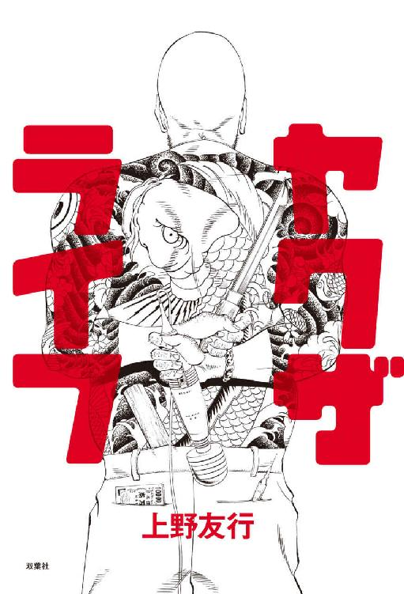
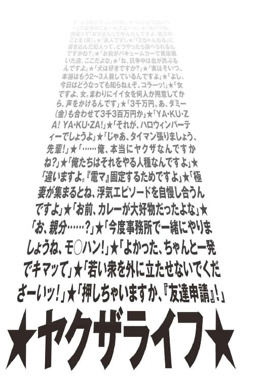
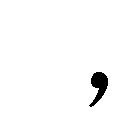
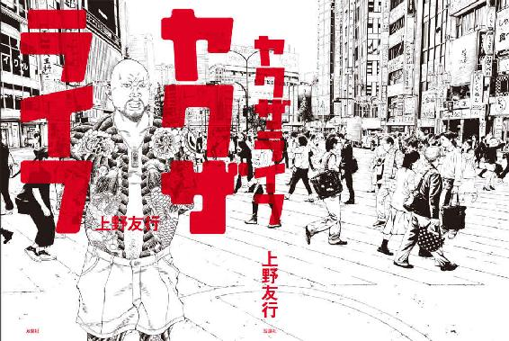
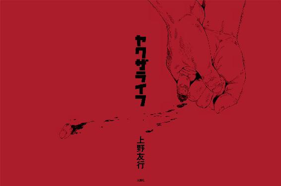

| ヤクザライフ | |
| 上野友行 | |
| 株式会社双葉社 (2016) | |

お断り
作品の電子書籍化に際し、仕様上の都合により一部の漢字が略字体で、ルビおよび記号等が印刷出版と異なった表記になっている場合があります。
また、作品によっては差別的表現と受け取られかねない表現が使用されている場合もありますが、作品の書かれた当時の事情を考慮し、原文のとおり掲出した個所があります。
あらかじめご了承ください。
底本イラスト・真鍋昌平
底本デザイン・金井久幸（TwoThree）

プロローグ
「先ほどは大変申し訳ございませんでしたーッ！」
取材先のヤクザに案内されて私たちがキャバクラに入ると、そんな珍しい挨拶で迎え入れられた。足下を見ると、３人組の男が「気をつけ」の姿勢のままうつ伏せになっており、顔面をべったりとフロアにくっつけたまま微動だにしない。
顔こそ見えないが、いかにも輩風のラフなファッションから察するに、ボーイではなさそうだ。
「これは一体どうしたことですか？」
驚いた私が当然の質問をすると、ヤクザが答えた。
「これは『寝下座』といって、俺たちの間では最上級の土下座として......」
「いやいや、そうじゃなくて。なんで彼らはこんなことを？」
「なんでって、昼間『やらかした』んでしょ、コイツら。うちで面倒見てるヤツらなんですよ」
言われて思い出した。この日、私たちはある報道番組の取材で某都市の繁華街にいたのだが、私が目を離したほんの数分の間に番組スタッフが若い輩たちに絡まれたのだ。
要するに「誰に断ってこのへんでカメラを回してんだ」とイチャモンをつけられたのだが、彼らが揃って着ていた服を見て笑ってしまった。それは、まさにこれから会おうとしていたヤクザが若い衆や地元の後輩たちに暴利で「おっつけ（※無理矢理購入を迫ること、押し売り）」ていたオリジナルＴシャツだった。
胸にはラインストーンがキラキラと散りばめられ、でかでかと英語で「アンダーグラウンド」と書いてある。多分、本当の意味でアンダーグラウンドな人たちは絶対に真っ昼間から着ない部類のＴシャツだ。
「あっ、かっこいいＴシャツですね」
私が駆けつけるなりそう言うと、それだけで彼らはすべてを察したのだろう。「えっ、もしかして兄貴のお知り合いでしたか！」「それは失礼しました！」などと口々に告げて、慌てて足がもつれる勢いで去って行った。
こうした経験は、フリーライターの私にとって間違いなく「収穫」だ。番組スタッフに対して多少の格好がついたことなどどうでもよくて、普段取材しているヤクザが若い衆や地元の輩からどれだけ恐れられているのか、この目で確かめることができるからだ。
こればかりは組事務所でいくら親分の話を聞いたところで分かるものではないし、マスコミに対して威張っているわりには地元の若者から馬鹿にされているようなヤクザもやっぱりいる。そのため、それこそ「やらかした」と落ち込む彼らの背中を眺めながら、「いいもの見たな」と思った。
という訳で、私は微塵も気分を害してなどおらず、その兄貴分にも特になにも告げてはいなかったのだが、彼らの方から報告していたらしい。
店に入るなりの「サプライズ謝罪」だった。
「いやいや、やめてくださいよ。全然申し訳ないことないですよ。大体、知らなかったんだから仕方ないじゃないですか」
「知らない訳ないですよ。コイツら、いつもフェイスブックで俺と上野さんが一緒にいる写真見てるはずだから」
「えっ、皆さんフェイスブックやってるんですか？ ヤクザなのに？ というか、あげないでくださいよ、僕の写真まで」
「やってない方が珍しいでしょ、今時。そういや、上野さんはやってないんですよね。なんでやんないんですか？」
「いや、その説明は後でいいと思うので、やめさせてくださいよ、『寝下座』。大体、声をかけられた時、僕は離れちゃってて、現場にいませんでしたから。仕方ないですよ」
私がそこまで話したタイミングで、３人組は再び床に口を塞がれたまま「大変申し訳ございませんでしたーッ！」と合唱した。
「えっ、そうなんですか。お前らなんで言わなかったんだよ、コラ」
兄貴分にそう言われた３人組は、なにか言いたそうな背中をしていたが揃って沈黙した。これは、あれだ。さんざん説明したけど聞く耳を持ってもらえず、一方的にヤキを入れられたパターンだ。
「大体、今日、テレビの取材に協力してくれるってことは彼らに言ってたんですか」
「いえ、特には」
「聞いてなかったら絡むでしょ。むしろ、彼ら的には己の仕事をまっとうしたようなもんじゃないですか。正式な組員なのか準構成員なのか知らないですけど」
「ガーッハッハッ！ 確かにそうですね。それじゃ、許してもらえますか」
「許すもなにも、最初から怒ってないですよ」
「そうですか。お前ら、よかったな。よし、面をあげぃ！」
そんな仰々しい台詞とともにゆっくりと顔をあげた彼らを見て、私は吹きだしてしまった。同時に番組スタッフも失笑し、兄貴分に至っては大爆笑していた。
彼らの顔は眉毛が繫がっていたり、バ○ボンのパパのような大きな鼻毛が生えていたりと、マジックペンで落書きがされていて、左右の２人の額には「詫」と「謝」。そして、真ん中の額には「ようこそ○○」とその土地の名が記してあった。
この調子なら、私が怒っていないことなど最初から分かっていたはずだ。ヤクザは本当にこうしたコントというか、度が過ぎたイタズラが大好きなのだが、毎度毎度心臓に悪い。
「こちらは笑わせてもらいましたけど、彼らにとってはとんだ災難でしたね」
キャバクラの洗面所で一生懸命落書きを消す彼らを見ながら私がそう言うと、兄貴分はこう返した。
「いやいや、これも教育ですよ。相手が本当にどこかの兄ィだったら、『知らなかった』とか、『離れてたので分からなかった』で済む世界じゃありませんからね。飛んじゃいますよ、俺の指が。ガーッハッハッ！」
「あんな面白いヤクザ初めて見ましたよ！」
取材を終えた帰り道。
番組スタッフは興奮気味にそう言った。それまでにも何名かのヤクザを紹介してもらっていたが、「事前に聞いた話と違う」などと怒られてばかりで、誰ひとりとしてまともに取材できなかったそうだ。
だが、これは私に言わせれば紹介者が悪い。
ヤクザは究極の縦社会なので、「誰に紹介されたか」「誰と一緒にいる場面か」でその態度はおろか、面構えから性格までまったく変わってしまう。
例えば、私のような若造でも、親分から紹介されれば子分たちにとっては客人。どれだけ年齢差があって、こちらの方が親子ほど年齢が下でも関係なく、「寝下座」レベルの丁重な扱いを受けてしまう。
また、今でもヤクザ＝演歌といったイメージは強いだろうが、これは親分衆が集う業界内の「義理場」での話。多数の若い衆や娘ほど年齢の離れた愛人に常に囲まれている親分衆は、実は見た目も若ければ、趣味も若い。
プライベートでは福○雅治を熱唱し、覚せい剤で捕まったアーティストの（歌詞の一部を「シャブ」に替えた）タイムリーな替え歌を披露して若い衆たちも大爆笑。一方、その若い衆たちは全員裸で『ＹＡＫＵＺＡＩＬＥ』を演じて応戦することとて珍しくない。
少なくとも、私が普段取材させてもらっている者は、そんな「面白いヤクザ」ばかりだ。
逆に私は、ヤクザ系週刊誌等によく掲載されている「定例会」などで彼らがどういう顔をしているのか、あまり見たことがない。それどころか、私自身こうした立場にありながら、ヤクザ業界の組織図や歴史、そして毎週起きている事件に関しても、さほど詳しくない。
私が知りたいと思うのは、誰もがすぐ手の届く場所にいるヤクザの「生活」だ。
彼らがどんな遊びをして、どうやって女をオトし、なにを考えているのか。そして、そんな彼らが、いざ抗争が起こった際には、どういう行動を起こすのか。
こうした「生命」溢れるヤクザの日常に、ただならぬ興味を惹かれるのだ。
本書はそんな私による、10年以上に及ぶ取材の集大成。現代社会におけるヤクザを語るに相応しい12名、そして一般社会にも近い立場と思われる４名の関係者にスポットを当て、彼らの生々しい姿を綴った、渾身のルポタージュである。
そのため、その手の週刊誌や既存のヤクザ本を愛読している方々にとって、これから登場する彼らの姿はある意味信じられないかも知れない。生で見た「指詰め」の雰囲気は仁俠映画で見るものとはまるで違ったし、先の発言にもあった通り、若手ヤクザの少なからずは現在本名および稼業名でＳＮＳを開設していて、それを駆使して「顔を売って」いる。
「親父（親分）の前で金持ってるのが分かると、色々ねだられて大変なんですよ。特に親父世代は『親がセンチュリーなら子はセルシオ』なんて言われてて、親よりイイ車に乗ったりすると、『お前は俺に恥かかすのか』なんて嫌味言われちゃいますから。（中略）というか、どんなシノギやってんだって根掘り葉掘り聞かれるでしょうね」
「役に立つのは、ヤクザの若い衆よりも、いわゆるカタギの半グレみたいな連中ですよ。（中略）ヤクザと明かした途端に誰も協力してくれなくなるんですよ。（ヤクザに関わると）面倒なことに巻き込まれると分かっているんじゃないですか、最近の若い連中は。まぁ、実際そうですしね」
「組なんか持ちたくないですよ。（中略）大体、今時準構成員でも力持ってるのたくさんいますし、逆に組員ゼロの『ひとり組長』も多いじゃないですか。肩書きなんか飾りみたいなもんですよ。言っときますけど、俺こう見えて（仕事の）取引先の人からヤクザだと気づかれてませんからね」
世間の抱く「ヤクザ像」と実際の姿にどれだけ隔たりがあるかは、ここに登場するヤクザたちの発言からもお分かりいただけるだろう。
親分の前で見せる顔も彼らの一面であり、決して「これがヤクザの本当の姿だ」とは言わない。だが、これまで知られていなかったヤクザの一面を確かにここに記したし、間違いなく彼らの「本音」がここに集約されている。
往年のヤクザファンはもちろん、そうした存在にはまったく興味がない、むしろ嫌悪しているような方でも楽しんでもらえるはずだ。今まで取材を受けた当の本人たちですら「本当にこんなヤツいるんですか」と驚愕し合ったヤクザライフを、本書とともに体験していただきたい。
目 次
★なぜか同席！組長の怒号飛ぶ「抗争前夜」の緊急集会
★乱れ舞うガスシリンダー！「修羅の国」で見た壮絶なヤキ
★トラブル頻発！「ＳＮＳ」がきっかけで抗争勃発!?
三次団体若頭 佐藤羊一郎（仮名・40歳）
敵前逃亡！期待の若手は「マイルドヤクザ」
鳴りやまぬ受信音！ヤクザは「ＬＩＮＥ」で緊急招集
親分を「お父さん」！さとり組員への「家庭訪問」
三次団体組長付 鈴木牛若丸（仮名・38歳）
意地と誇り！「激辛トーナメント」で病院送り
書き込み主を探せ！騒動のきっかけは「ネット掲示板」
運転中でもヤキ！「マリ○カート」なみに跳ぶ車内にて
三次団体組長 高橋双大（仮名・50歳）
血の気多すぎ！若い衆は「鼻血」、組長は「勃起」
背後に登場！取材中に現れた本物の「ヒットマン」
ヒットマンに異変！「犬小屋」の下にあるものは......
★夢のＪＫ彼女!?昼間のパパは「暴力団（ステルスヤクザ）」
★入手せよ！「シャブ離れ」のクラブで作戦会議
★潜入！「ヤクザゴルフ」で親分ナイスショット！
四次団体幹事長補佐 田中蟹蔵（仮名・40歳）
全員正座！「歯形つきのポテト」を提供したファミレス
思いもよらず目撃！恐怖の「みかじめ料」徴収劇場
ベンツからプ○ウス！親分の前では「金持ってない振り」
四次団体本部長 伊藤獅童（仮名・42歳）
「いいね！」の闇！現代ヤクザは「ＳＮＳで顔を売る」
現場から生放送！「タタキ（強盗）」が業界で蔓延中
時代は「半グレ」!?「なんでヤクザやってるんですか？」
三次団体組長 渡辺乙彦（仮名・48歳）
轟くＹＡＫＵＺＡコール！これが「ヤクザの忘年会」
ドリーム・チーム結成!?本音は「組なんて持ちたくない」
リアルレポート！ヤクザプロダクションの「肉弾接待」
★クラッシャー！キャバクラに登場した「バンバ○・ビガロ」!?
★私のために喧嘩はやめて！「大乱闘」ド真ん中での取材
★汚物は消毒だ!?キャバクラ取材で「消火器噴射」
四次団体若頭補佐 山本秤太郎（仮名・35歳）
愛の日本酒口うつし！朝８時、「泥酔ヤクザ」の襲撃
駅前の攻防！「交番のお巡りさん」は見て見ぬ振り
ホスト受難！「放免祝い」は早朝のマク○ナルド
三次団体若頭補佐 中村蠍丸（仮名・41歳）
同乗中の車が特攻！繁華街での「ハリケーンミ○サー」
まさかの人違い!?笑い声響く「拷問現場」
なぜ悲鳴!?「恨みを買っている」ヤクザの知られざる日常
四次団体舎弟 小林馬人（仮名・41歳）
悲劇！ヤッた女の正体は「親分の娘」
再会！久しぶりの電話は「殺されるぞ、お前」
最悪！「無理矢理ヤクザにさせられた俺」の兄貴分たち
★検証！「不良（ヤクザ）」を疎む輩たち
★涙の暴走族少年！「憧れの組長」からの仕打ち
★告発！私はこうして「用心棒（ヤクザ）」に裏切られた
★感涙!?親分を称える「自転車のばあさん」
輩 佐々木龍太（仮名・36歳）
戦慄する一般客！「ヤクザだらけの居酒屋」にて
ヤクザ居酒屋店長は見た！「遅咲きヤクザ」の特徴
フロント企業経営者 山口鳥吉（仮名・34歳）
凍りついた応募者たち！面接官は「全力ヤクザ」
涙の告白！フロント企業経営者の「僕が辞めない理由」
極妻 松本アンナ（仮名・46歳）
響くナースコール！美人看護師初めての「獣セックス」
耳もちぎれた！「極妻vs愛人」の壮絶抗争
愛人 井上太鳳（仮名・40歳）
疑問と葛藤！「ヤクザとしか付き合えない女」の生涯
入園拒否！親の業に泣く「ヤクザの子供たち」
★茫然自失！「親分の手作りカレー」から○○が出てきた！
★怨！リストラヤクザたちの「私はこれで組を辞めました」
★君は見たか！次世代「デジタルヤクザ」の夜明け
破門ヤクザ 加藤羊山（仮名・42歳）
密着！「指詰め」ドキュメント
不思議な既視感！愛人がはしゃぐ「指詰めの生現場」
天国or地獄!?これでいいのか、「破門ヤクザ」の生活
三次団体若頭 吉田三瓶（仮名・48歳）
苦情！「ヤクザと同じ焼き釜には入りたくない」地域住民
生爪３枚！組事務所に貼られた「血文字の謝罪文」の理由
「押しちゃいますか」！逃げた元組員に「ミサイル発射」
二次団体組長 山田森魚（仮名・54歳）
ヤクザなんか怖くない!?奇跡の「組長inメイドバー☆」
激白！どんな親分衆も「生涯ヤクザじゃいられない」
核の炎に包まれた世界！ヤクザの来世は「○○軍団」
第一章 聖域の抗争編
～立ち上がれ、暴力嫌いなマイルドヤクザ～
なぜか同席！組長の怒号飛ぶ「抗争前夜」の緊急集会
「オウ、誰が命奪ってくるんだ！」
そんな怒号とともに、組長がテーブルを蹴り上げた。
映画、漫画、小説問わず、ヤクザ系作品では定番の光景だが、まさか直接この目で見ることができようとは。それも、その距離約60センチ、テーブルに鎮座していたハイボール（大）の中身が軽く降り注ぐほどの「砂かぶり席」で見るド迫力だ。
「テメェらよぉ、こういう時こそ親分の言うことも聞かず、勝手に突っ走るのが子分だろうが。『破門にしてください』と書き置きを残して、『待て、早まるんじゃねぇ』と止める親分にも初めて逆らい、たったひとりで敵の命奪りに行くのがヤクザじゃねぇのかよ。それを、なんだテメェらは。これだけ俺に言われてもダンマリか、この野郎。恥かかせやがって、コラ！」
組長の目の前、つまり私たちテーブルの目の前にはこの時７～８名の組員がいたが、一様に下を向いたまま顔をあげる者はいなかった。私は「まるで底辺出版社の編集会議みたいだな」と思ってしまったが、組長も似たようなことを考えていたようだ。
「オウ、なにか。ここはワンマン社長の会議室なのか、あぁ？」
そう罵られても、誰ひとりとして微動だにしなかった。
その場所は、組長行きつけとして案内された居酒屋だった。一見、どこにでもある店だったが、この手の状況には慣れているのだろう。
組長の様子が怪しくなってきた22時頃からは、店長が新規客の入店を断り、最後のカタギ客が逃げるように帰ると同時に店の暖簾を下ろした。
入れ違うように組員たちが店内に駆け込んできたのは０時前だったか。「遅いんだよ、この野郎」と組長が彼らにグラスを投げつけると、まるでそれを予期していたかのように、ホウキとチリトリを持った店長が駆け寄っていた。
そもそも、なんでこんな事態になったかといえば、たまたま店内のテレビで流れていたニュース番組がきっかけだ。この日、「ヤクザの抗争」というテーマで私の取材を受けていた組長は、当初たんたんと質問に答えていたが、途中からちらちらとテレビに視線をうつすようになった。それも無理はない。番組の特集内容が、まさに「ヤクザの抗争」だったからだ。
発砲、ダンプカー、火炎瓶と、無駄に視聴者の恐怖を煽る映像だったが、組長は何やら激昂し始めた。「なんでうちの組にはああいう若ぇのがいないんだ、畜生！」。誰に言うでもなく、ビールジョッキをテーブルに叩きつけ、飛んだ泡を拭こうとした若い衆の頭を意味もなくぶっ叩いた。
そして、即座に他の組員も集めるよう、彼に指示した訳だ。
ちなみに、組長は番組内で特集されていた組とは代紋が違うので、その抗争には直接関係ない。ただ、その昔抗争でヒットマンを務め、長期刑に服した経験がある。
「それなら、もう、あれだな。俺が行くしかないんだな。よし、テメェらの気持ちはよく分かった。オウ、誰か拳銃持ってこい！ 早く持ってこいよ、この野郎！ ......すいませんね、こんな見苦しい場面見せてしまって」
この「すいませんね」はもちろん私に向けての言葉なのだが、実際は「すいませんね、取材中に」「すいませんね、情けない若い衆ばかりで」などと合いの手のようにその演説に挟まれており、組員への激怒と私へのお詫びで組長も大忙しな様子だった。
組員たちへの気まずさもあり、私は言われる度に「いやいやいやいや、こちらは全然お構いなく！」とぶるぶる手を振ったが、もっと気まずかったのは私が座っているポジションだ。
なにしろ、店内一番奥の席で取材しているところに後から組員たちが駆けつけたため、私は組長とともに彼らに向かい合うように座る布陣となった。
まさに総大将のすぐ隣。ここはライターの席というよりも、軍師とか、戦略担当が座る席だと戦国時代から決まっているのではなかったか。それゆえ、組員の大半は面識がなかったのだが、彼らがもの言わずとも、その表情は如実に語っていた。「あのハゲは一体誰なんだ」。
そして、その緊急招集は、私の「取材」を建前に解散させられた。
「あぁ、もういい、テメェら。これ以上待たされると『取材』の妨げになるからよ。もう帰れ、テメェら。俺は今、『取材』をしていただいてるんだ、『取材』を。テメェらの面見てると酒もマズくなるからな。さっさと出ていけ、馬鹿野郎！」
もうテーブルの上には投げつけるアイテムがなくなっており、組長は最後におしぼりでぬるりと顔を拭いて、それを組員たちに浴びせた。すると即座に店長が代わりのおしぼりをテーブルの隅に置いたので、私がそっと組長の前にそれを押した。
店長と私は目配せした。
初対面で名前すら知らなかったが、なにやら心が通い合った気がした。
翌日、組員のなかで唯一面識のあったナンバー２の幹部から電話があった。
「昨日はすみませんでしたね。変な場面に巻き込んじゃって」
「いえいえ、こちらこそ。なんだか、すみません」
言っておきながら、謝る理由は自分でもよく分からない。
「ちなみに昨日の話なんですけどね、どこかの雑誌に書きます？」
「組長から聞いた話は書かせてもらいますけど、昨日あったことについては書きませんよ。嫌でしょう、皆さんも書かれると」
「いや、それが、親父（組長）はどこかに書いて欲しい、っぽいんですよ。今日になって、『ライターさんの前で年甲斐もねぇとこ見せちまったなぁ。恥ずかしいなぁ、書かれると』って念仏のように繰り返してまして。つまり、書いてくれってことでしょ。自分で言うのが恥ずかしいから、俺の前で繰り返すんですよ」
──これなのである。
言うまでもなく、現在、ヤクザ業界ではどこの組織もメディアへの露出を認めない風潮だ。
ところが、当のヤクザたちはこれまで親に逆らい、教師に歯向かい、先輩もぶっ飛ばしてきたような人間である。つまり、「やるな」と言われると意地でもやりたくなってしまう困った性分で、「話だけでも聞いてくれ」「刺青だけでもいいから載せられないか」という者が絶えないのだから、どうにか私もメシが食える訳だ。
まぁ、あまりにも出たい出たいと言われると、逆にあまり取材する気が起きなくなるのが、私の困った性分なのだが。
「そりゃ、こちら的にはまたとない場面を見せてもらいましたからね。どこかで書かせてもらえれば面白いですけど、さすがに組名や組長の名前は載せられませんよ。『誰々を殺してこい』なんて書けませんし、やっぱり発言内容は『組織全体のこと』として扱われてしまうでしょうから。それでもいいんですかね？」
「もちろん、そのあたりの事情も重々承知してるから、そう言うんでしょう。普段書いてもらってる記事も、『いやぁ、これは俺のエピソードだよ、参ったなぁ』って、スナックのママなんかに嬉しそうに見せてますもん。俺らをダシにして自分がかっこいいとこ見せちゃうんですからね、うちの親父にも困ったもんですよ。ガーッハッハッ！」
組員たちは「ダシにされて」きっと気分を害しているだろうなと思い込んでいたが、既にこうして笑い飛ばしている雰囲気から察するに、少なくとも彼は気にしていないようだった。要するに、慣れっこなのだろう。
それとなく、聞いてみた。
「でも、大丈夫なんですか。あれだけ言われて、みなさん的には『行かなく』て」
「えっ、なんですか。マスコミの方まで俺らのケツ搔く（※そそのかす）んですか」
「いやいや、そんな訳ないじゃないですか！ 平和な一市民からの素朴な疑問ですよ」
「ガーッハッハッ！ 冗談ですよ、冗談。でも、親父には悪いですけど、あんなのまともに聞いてちゃキリがないですから。なにしろ、親父の口癖は『上のやり方にはついていけねぇ、俺はもう（組織を）抜ける』『あれ（上）はもうヤクザじゃねぇ、これから俺たちは一本（※一本独鈷、大組織に属さない独立組織）だ』ですよ。『（そうなったら）戦争になるから準備しとけ』と言われて、一体何年経つんですか、と」
「まぁ、確かにそれに似たことは言われてましたね。昨日も」
「そうでしょ。酔えば必ず言うんですから。それに、昨日の話だって的（※殺害のターゲット）は親戚団体じゃないですか。同じ一家内の。親父が身体賭けて服役している間に向こうが出世してしまって、気に入らないのは分かりますけどね。俺らが殺っちまったら、親父も破門じゃ済まないでしょ、って」
こうした背景は前日にはっきりと聞いた訳ではなかったが、組長の熱いスピーチからなんとなく想像ができた。そのため、私も内心「これで本当に組員が命奪りに行ったら組長はどうなるんだろうな」と思いを馳せながら聞いていた訳だ。
血よりも固い絆を結ぶヤクザ業界内において、身内殺しは重罪だ。とはいえ、専門誌が「書けない」だけで、近年明らかに増加してはいるのだが。
「それじゃ、ああ見えて組長も完全に本心ではなかった、ってことですかね。ビールジョッキから、もつ鍋の追加皿まで投げつけてましたけど」
「そりゃ、そうですよ。命奪るどころか、（組事務所の）ガラス割ってきただけでも、『テメェら、何やってくれてんだ』って逆に怒りますよ。ただでさえ、最近じゃ『使用者責任（※傘下の暴力団組員の行為によって損害が生じた場合、使用者にあたる組長にも責任が生じるという法的解釈。民法７１５条「使用者責任」による）』の件もありますからね。『テメェも、普段変なもん持ってんじゃねぇぞ』と言われたので、『そりゃ、拳銃捨てろってことですか』と返したらなぜか怒られましたけどね。ガーッハッハッ！」
電話口で機嫌の良さそうな笑い声を聞いたので、話を締め際に私はこう聞いた。
「ちなみに、今の話は書いてもいいんですか？」
「いやいや、勘弁してくださいよ。また怒られちまうじゃないですか、マスコミの方の目の前で。ガーッハッハッ！」
少なくとも「書いてくれ」という反応ではないな、と思った。
乱れ舞うガスシリンダー！「修羅の国」で見た壮絶なヤキ
ヤクザの暴力を初めて目の当たりにしたのは20歳の時だった。
その頃、私はまだ青い空を見たこともなく、出生地である九州地方・某「修羅の国」にて連日血の雨を浴びながら暮らしていた。この「国」において、私が与えられた役割は風俗雑誌の編集作業だったのだが、ある時、地元の組事務所に招かれる光栄に浴した。
こう書くと、なんだか私がヤクザの女の風俗嬢に手をつけて呼び出されたみたいだが、この時「やらかした」のは他部署の新入りだ。その部署の上司が詫びに行くと聞いたので、好奇心をくすぐられてのこのこついていっただけで、正確には私は招かれていない。
今、考えれば、突拍子もない話だが、あの国にいた頃はやや頭がおかしかったのだと思う。
それゆえ、一体どういうトラブルだったのかも思い出せず申し訳ないのだが、強烈にまぶたの裏に焼きついているのは、ドアを開けた瞬間の光景だ。
「ぶち殺さるーぞ、きさん（訳：ぶち殺されますよ、あなた）！」
いきなり椅子が飛んできたので「聞いた話と違って、これは随分お怒りだ！」と無用な付き添いを後悔したのだが、よく見ればパンツ一丁で全身血だらけ・痣だらけの若い衆が床にへばりついていた。どうやら、ぶち殺されるのは私たちではないようだ。
ほっと一息つきながらソファーに腰をおろすと、早速、先方の兄貴分とこちらの上司による「掛け合い（※話し合い、交渉）」が始まった。といえば聞こえはいいが、種明かしをしてしまえば、こちらの上司はいわゆる「準構成員」的立場で、完全に先方の「上」と繫がっていたのだ（今考えれば、それもすごいが）。
「えっ、叔父貴のお知り合いだったんですか！」「えっ、小学校からの幼馴染み!?」「そら、すんまっせん！」。
と、いった感じでまたたく間に謎のトラブルは丸く収まったのだが、私が夢中だったのは彼らの交渉ではなく、ソファーの後ろの光景だ。
私たちの入場時から既に虫の息だった若い衆はその後もさらにヤキを入れつづけられていた。オフィスチェアがこなごなになるまで全身を打たれ、最終的には椅子の支柱から剝きだしたガスシリンダーでガッツンガッツン頭頂部を殴られ、アブ○ーラ小林なみに大流血していたのだ。
ちょうど私の足下に椅子から外れたキャスターがコロコロと転がってきたので、なんとなく嫌な気持ちになってそれとなく蹴り返した。すると、なんと彼はそれを口に咥えさせられ、ガスシリンダーで顔面を打たれているではないか。
──お母さん、今日僕は、目の前で人が死ぬところを見ることになりそうです。久しぶりに。
私がそう確信した時だった。話し合いを終えた兄貴分が「やめんか、きさん（訳：やめましょう、あなた様）！」と一喝。
おまけに、「お客さんの前でなんばしよっとか（訳：お客様の前でなにをしているのですか）！」とテーブルの上にあったゴッツイ灰皿を投げつけた。
「どうも行儀の悪いところば見せてしまって、すみませんでした」
兄貴分がそう詫びると、少し遅れて、ヤキを入れていたヤクザが「失礼しまッシタァ！」と頭を下げた。そして、それからだいぶ遅れてアブドーラ○林（仮名）が「......ひふれいひまひた」と草原が風に吹かれるような声で囁いた後、絶命した（仮）。
「いや、すごかったですね！」
大興奮だった私が組事務所を離れた途端にそう言うと、上司は自分の手柄を誉められたと勘違いしてイイ気になった。「いやぁ、別にそげんことはないばってんがたい。俺もダテに『○○市の人間魚雷』ち言われた訳やないけんがくさ（※対訳は割愛）」と同じ修羅の国でも中心市内の者には絶対に分からない言葉で語り始めたので、「いやいや」と制した。
「そのことやなくて、後ろのヤクザですよ。めちゃくちゃやったやないですか。あれ、死んだっちゃないですか？」
「お前も、心のピュアか男やねぇ。パフォーマンスに決まっとろうが、あんなもん。こっちばビビらすためにやりよったい（訳：あなたは心のきれいな方ですね。あれは明らかな演出に決まっています。こちらを威嚇するために行っているのですよ）」
「えっ、でも、キャスター咥えさせて、ガスシリンダーでぶっ叩きよったやないですか。パフォーマンスでそこまでできます？」
「できるけん、ヤクザやりよっちゃろうもん。ヤクザもああいう時のためにたい、ヤキば入れないかん若い衆ばとっとくったい。それでから、カタギばビビらす時に、わざーとあげんして見せつけるったい。そげんせんと、カタギば直接ぼてくらしよったら、ヤクザもどんどんおらんごとなろうが。のぅ？（訳：できるから、ヤクザをしているのですよ。ヤクザはああいう時のために、お仕置きをしなければいけない若い衆をキープしておくのです。そして、カタギを威嚇したい時にわざとあのように見せつけるのです。そうでなければ、カタギを直接ぶちのめしてしまうと、ヤクザはどんどん刑務所に入ってしまって、いなくなってしまうではないですか。そうですよね？）」
修羅語の脳内変換に時間がかかっていると、上司はもう一言二言添えてきて、その言葉が実に印象深かった。
どうぞ台詞部分は飛ばして、対訳だけお読みいただきたい。
「灰皿やら、椅子やら、あげな道具でヤキば入れるとはまだ優しかとぞ。あげなとは見た目やら音ばっかりが派手でから、そげん痛くはないっちゃけん。ただ、あのキャスターはやりすぎばい。あれは、さすがの俺もちょっと引いたやね。あれはお前が蹴り返したけん悪かっつぉ（訳：灰皿や椅子などの道具でヤキを入れるのはまだ優しいのです。そのようなものは見た目や音ばかりが派手で、そこまで痛くないのです。ただ、あのキャスターはやりすぎでしたね。あれには、さすがの私も少しだけ引きましたよ。あれはあなたが蹴り返したから悪いのですよ）？」
「えっ、見とったとですか。どうすりゃよかったですかね？」
「どうすりゃもこうすりゃも、そのままにしとけばよかったろうもん。あげん見えて、ちゃんと計算してヤキば入れようとに、いきなり武器が転がってきたら、使ってしまおうが（訳：どうすればもこうすればも、そのままにしておけばよかったのですよ。ああ見えてちゃんと計算してヤキを入れているのに、突然武器が転がってくると、駆使してしまうではないですか）」
「ああ、なるほど。うっかり本気出てしまうとですか。そりゃ悪いことしましたね、アブドー○小林に」
「草原に風が吹くごたる声で死にかけとったやないか、お前どんのせいで。でも、本当に痛かとは、素手たい。パフォーマンスやなくて、本気で根性ば叩き直さないかん時は、素手でぼてくり回すもんたい。それが、ヤクザの愛情やけん（訳：草原に風が吹くような声で死にかけてましたね、あなたのせいで。でも、本当に痛いのは、素手ですよ。演出ではなくて、本気で根性を叩き直す際には、素手でぶちのめすのです。それがヤクザの愛情なのです）」
「......ほー、そげなもんなんですか」
──あれから約15年。
普通の男の子になりたい。そんな夢を抱いて大都会東京に来たはずの私だったが、相変わらず目の前では盛大なヤキが繰り広げられていた。
ただし、あの頃とは違って弁髪も落とし、私も多少立場が変わったため、「ビビらされる」場面はあまりなくなった。相手が意識的か否かはその時々だが、どちらかといえば、「うちの組は今でもこれだけ厳しいんですよ」といった現実をライターの私に披露してくれている感じだ。
例えば、その日、居酒屋でア○ドーラ小林と化した若い衆は、兄貴分の発言を「笑った」だけでそうなった。
取材に応えていた兄貴分がなにかの冗談を言ったので私が笑ったのだが、一緒になってその若い衆が笑ったところ、瞬時にビールジョッキを叩きつけられたのだ。
「なんでテメェが笑ってんだよ、コラ！」
この兄貴分にとって、客人である私を「笑わせる」のと、若い衆に「笑われる」のは意味合いが違ったのだ。兄貴分は右手に残ったビールジョッキの持ち手の部分をそのまま投げつけるのかと思いきや、テーブルにあったおしぼりを拳に巻いて、そのまま握り締め、ふらついている若い衆の首根っこを左手で摑んで、そのままドッカンドッカン殴りつけた。
なるほど、こうすればパンチ力があがる訳だ。メモメモ。
一応、これも「素手」の範疇に入るのだろうが、相変わらず鍛錬の足りない私的には微塵も愛情を感じない光景であった。
だが、人間恐ろしいもので、こんな凄まじい場面にも慣れる。私のように暴力とは無縁に生きてきて、ほぼほぼ編集者以外は殴った経験がないという品行方正な人間でも、すっかり血や痛みに慣れてしまい、歯の２～３本が足下に転がってきたくらいではたじろがなくなってしまうのだ。
それゆえ、その日まわりにいた一般客の皆様は、映画『シャイニング』の女優さながらの絶望的な表情でそれを見ていたが、私はすかさずテーブル上の鍋や肉などを避難させ、二次被害を防ぐ域にまで達していた。その一方で、恐らくダメージが少ないであろう、アルミの灰皿をそれとなく兄貴分の手元に近づけたり、抜けた差し歯をおしぼりでせっせと回収したりと、私とて外野にできる限りの救命行為をしているつもりだ。
ところが、どうしても慣れないのがこの後だ。
若い衆にとっては永遠と思えるほどの長い時間に感じるだろうが、さすがに一般市民が見守る中で半日間もテーブルの脚を振り下ろしつづけるはずもない。私の感覚だが、長くとも３分。大抵１分以内にヤキは終わる。
すると、兄貴分は血で汚れた拳やシャツをおしぼりで軽く拭き、壊れた椅子を若い衆のものと入れ替えて座る。そして、私の方に向きなおして、何事もなかったかのように話のつづきを始めるのだ。
「で、さっきの話なんですけどね（笑）」
これが実に恐ろしく、いつまで経っても慣れない。
電気ケトルの最新版なみに沸騰するのが早く、とにかく年中怒り狂っている者など、私の父親以外にもいるだろう。だが、これだけの暴力を振るいながら、まるでくしゃみでもしたかのように現実に戻ってくる姿を見ると、やはりヤクザとカタギには決定的な差があることを思い知らされる。
暴力に対しては絶対的な耐性を持つ者が集まるにもかかわらず、そのなかの大半が辞めていくヤクザ業界。やはり、「残る」人間は根本的ななにかが違うのだと感じる。
「でも、今時珍しいですよね。これだけやられる方は。『ヤキなんか入れると最近の若いのはすぐに辞めるから、くれぐれも殴るなよ』と教える親分の方が増えたじゃないですか、近頃は」
ヤキを入れられてふらふらの若い衆が先に店から帰らされ、兄貴分と２人になったタイミングで私はそう言った。これでも精一杯の苦言というか、遠回しに批判したつもりだ。
ところが、この後の兄貴分の言葉を聞いて、私はそれこそ頭をガスシリンダーでぶっ叩かれたほどの衝撃を受けた。
「俺はこう見えて、アイツ以外には手をあげたことないんですよ。アイツはね、昔は俺の兄貴分だったんです。まくった（※ポジションを入れ替えた、出世して抜いた）んです、俺が。当時のあの野郎はみっちりシャブ中でしたから、こんなもんじゃなかったですよ、俺が受けた暴力は。平気で三日三晩とか、虐待されつづけましたから。アイツも少しは悪いと思ってるんでしょうね、これだけ殴られて辞めないってことは。まぁ、許しませんけどね。俺はこの日を夢見て、泥水すすって、アイツの靴まで舐めて頑張ってきたんですから」
私はまだまだヤクザ業界を知らなすぎた。そう思った。
トラブル頻発！「ＳＮＳ」がきっかけで抗争勃発!?
「若いのは全員飛んで（※逃げて、失踪して）しまいましたよ。残ってるのはもう、ジジイばっかですね。ガーッハッハッ！」
ある親分の組事務所にお邪魔したところ、久しぶりに会うにはなかなか刺激的な台詞で歓迎してくれた。
確かにマンションのドアを開けた瞬間に、違和感があった。中には親分以外に数名の組員がいたが、パッと見、50歳前後の古株ばかりだったのだ。
この組には、ある時期から20代の若い組員が増えた。彼らは当時私が寄稿していた「オラオラ系ファッション誌」のファンだったらしく、「俺もモデルとしてあの雑誌に出られませんかね」などとしきりに言われていたのでよく覚えていた。
だが、そんな彼らの姿が見当たらない。
まぁ、その日はそういう事務所当番の日なのだろう、と気にせずソファーに座ったのだが、奥から登場した親分が先手を打つようにそう言ってきたのだ。
親分の組織は、抗争に突入したばかりだった。
「飛んだってのは、全員ですか。多かったですよね、若い子」
「仲良く揃って全員ですよ。音が鳴って（※拳銃の発砲音が鳴って＝抗争が始まって）から、すぐに。街の喧嘩じゃあれだけ威勢が良くてしょっちゅう揉めてたくせに、プロ（※ヤクザ）同士の喧嘩が始まった途端にこれですから」
「それじゃ、大変ですね。これから兵隊が必要な時に」
言った途端、後ろのデスクからこちらに耳を傾けていた組員たちが失笑したのが分かった。
「いやいや、喧嘩ってのは数じゃないですから。あんなヤツらが組や私のために身体賭けてくれるなんて思ってないしですし、いたところで弾よけにもなりませんよ。まぁ、あれだけすがすがしいほどの小心者だと好感が持てますね、逆に。もう名前すら思い出せませんけど。ガーッハッハッ！」
そう笑った親分はまったく強がっているようには見えなかった。それどころか、むしろ全身から夏休みの子供のようなわくわく感が溢れでており、明らかにこの状況を楽しんでいる雰囲気だった。
私が多少呆気にとられていると、おもむろに「詐欺でしょ？」と言われたので思わず聞き返した。
「詐欺でしょ、アイツら？」
「というと、彼らのシノギが詐欺だった、ってことですか？」
「そうです、そうです。なにか聞いてません？」
はっきりと聞いてはいなかったが、心当たりはあった。彼らはまだ20歳そこそこにもかかわらず、高級車に高級時計にキャバクラ三昧とド派手な生活をしていたため、アホな天然ライターの振りして「ちなみにみなさん、シノギってどういう関係やられてるんですかぁ？」とさりげなく尋ねてみたことがあったのだ。
すると、アホで天然の演技に若干難があったか、「えっ、マジッスか」「そこ聞いちゃうんですか」といった反応で彼らは顔を見合わせたのだ。一応、その時は「ＩＴ系」だの、「空き缶拾い」だのとはぐらかされたが、まぁ、言えない仕事なのは間違いないなと思った。
おまけに、時期を前後して親分の取材をしていた際、隣に彼らがいたのだが、思い返せば親分の話を聞きながら明らかに目が泳いでいた。親分はその時、「老人を騙して金奪うなんざ、ヤクザ以下の外道のやること。ただ、その汚ぇ金を奪って社会に還元することについては、なんの罪悪感もない」と語っていたのだ。
そう考えれば、確かにオレオレ詐欺でもやっていたのかも知れない。親分には正直に、「実は昔こういうことがありました」と話した。
「やっぱり、そうですか。おかしいとは思ったんですよ。あんな若い連中が一気に増えたりしないじゃないですか、今時。おおかた、元いた（詐欺）グループと揉めたりなんかして、逃げてきたんでしょ。詐欺だの泥棒の連中は、すぐ仲間割れしますからね。私のまわりでも最近多いんですよ、こういう話」
「多いというのは？」
「いや、『今時、組員にしてくれと言ってくるヤツは、ろくなもんじゃない』って話なんですけどね。盃おろして、若い衆にしてやったはいいが、蓋を開けてみると、どこかの組のケツ割った（※逃げた）ヤツだったり、レイプだのワイセツの指名手配犯だったり、そういう詐欺グループから追われてる裏切り者だったり、めちゃくちゃなんですよ」
「組員になったら匿ってくれる、と思ってるんでしょうね」
「まぁ、そうでしょうね。もちろん、いましたよ。そういうヤツは、昔から。ただ、最近は特にひどい。ヤクザを駆け込み寺か、流しそうめんの最後のザルかなんかと勘違いしてるでしょ、最近の若いヤツらは。こっちも警察じゃあるまいし、身辺調査なんかできませんからね。俺や兄弟のまわりじゃ、よく言ってますよ。『また、地雷踏んじまった』とか、『ジョーカー引いちまった』とか」
それは私もよく聞く話だ。ちょうど、その数週間前にも「とんでもねぇ噓つき拾ったせいで、ソッコー指が飛んじゃいましたよ」と包帯を巻いたヤクザに会ったばかりだった。
また、そういう事故が起こった後に、「アイツは俺をハメるための工作員だったんじゃねぇか」と話している者もいた。それほどまでに鮮やかにトラブルを巻き起こし、華麗に姿をくらます訳だ。
親分はむしろ、「何事もなく消えてくれただけでもラッキーだった」と思ったのかも知れない。
「でも、最終的にはなんでいなくなったんですか。さすがに抗争始まった瞬間に消えたりはしないですよね。拳銃渡して『行ってこい』（と命じた）、とか？」
「ガーッハッハッ！ あんな連中にそんなことやったら、警察署駆け込まれて『脅かされました』と言われて、終わりですよ。アイツら、自爆したんですよ。ＳＮＳって言うんですか。あれに粋がったこと書き込んだみたいで、○○組と喧嘩になりかけて」
ちなみに、この○○組とは親分の組が関わっている抗争とはまったく無関係の組織。それ以上に、ＳＮＳがきっかけで抗争、とはなんとも衝撃的だ。
「えっ、ＳＮＳですか。煽るようなこと書いちゃったんですかね」
「どういう経緯かよく知りませんが、まぁ、酔った勢いでしょう。本人たちはすぐ消したみたいなんですけど、時すでに遅しですよね。というか、こうした『言った言わない』の酒場の喧嘩ってのは、やっぱり昔から多かったんです。ただ、翌日になるとお互いに冷静になって、『組と組との喧嘩になると取り返しがつかないから、俺たちだけでなかったことにしよう』と大抵は収まる。ヤクザは『吐いた唾は飲んでた』んです、こっそり」
「なるほど、それがＳＮＳの場合は不特定多数の人間が見てしまうし、証拠が残ってしまうから......」
「そうですね。まぁ、私は仕組みがよく分からないんですけど、こっちはもう取り返しがつきませんからね。最近、その手のトラブルもよく聞きますよ、私のまわりでも。アイツらもどうにか自分らで収めようとテーブルについた（※話し合いに臨んだ）みたいなんですが、まぁ、あんなガキどもにまともな『掛け合い』なんかできるはずありませんから。向こうにいいように言いくるめられちまったみたいで」
「で、飛んだんですか。それで親分にケツが回ってきたと」
「そうなんですけど、まぁ、○○組の親分は知らない仲じゃないですから。『そちらも今はそれどころじゃないでしょうに、色々と大変ですねぇ』って逆に同情されちゃいましたよ。ガーッハッハッ！」
ということは、彼らは最初から素直に親分に相談していれば、丸く収まっていたかも知れない訳だ。
まさか怒られるのが嫌だったのだろうか。生涯逃亡生活を送るよりも。
「それから、『バルタン（仮名）』覚えてますかね」
もちろん覚えていた。バルタンとは、少年時代から親分と行動をともにしていた古参組員だ。
昔は相当な武闘派ヤクザだったそうだが、やはり時代についていけず、トラブルばかり起こして指をどんどん失った。結局、まともに残っている指は右手３本、左手２本といった状態になり、「バ○タン星人」に似ているという理由で、そう呼ばれていた。
常に貧乏していて、抜けた差し歯を入れる金もなく、言葉が前歯の隙間からスースー抜けて、全部「サ行」で喋っているようだったバルタン。絶望的に足りない指でも上手に字を書いていたし、「逆に手マンはしやすいんでしゅよ！」と笑っていたこともあった。
要するに、この組の名物組員だった訳だ。
「忘れる訳ないじゃないですか。お元気にされてますか」
「アイツ、ここ最近連絡が取れないんですよ。音信不通です」
「えっ、まさか飛んだ......って訳はないか。なんかあったんですかね」
「ガーッハッハッ！ やっぱりそう思いますか。まぁ、潜伏ってるんでしょう。誰をハジくつもりか知りませんけど」
「ターゲットが分からないんですか？」
「まぁ、『多分コイツを狙うだろうな』ってのは分かりますよ、もちろん。ただ、俺が指示した訳ではないですし、アイツが勝手に『兄貴（親分）のためにはコイツを殺した方がいいだろうな』ってのを考えて狙うだけですから。こうなったらもう、俺の言うことも聞きませんよ。アイツは昔からそういうヤツですから」
あのいつもニコニコしていたバルタンが、一番に率先してヒットマンになるとは。
だが、確かに言っていた。「最悪、指２本あれば拳銃はハジけますから」と。
「私らのような時代遅れのヤクザ、シャバにいたっていいことないですから。最後にパッと（手柄をあげて）華咲かせて死ぬか、刑務所暮らしの方がマシ、と思ってる野郎がゴロゴロいるんです。特に昔の抗争で手柄立てて、長期服役から帰ってきたヤツなんか災難ですよ。まったく世界が違うんですから、ヤクザの」
「『浦島太郎』ってやつですよね？」
「そうです、それですぐに間違い（※業界内のトラブル、失態）起こして破門になったり、すぐに刑務所に舞い戻ったりする訳です。でもね、こう（抗争に）なったら分かりますけど、やっぱり、ヤクザがバリバリ拳銃撃って喧嘩してた時代の生き残りは腹の括り方が違いますよ。私どもの世代はね、『本当だったらあの時死んでいたよな』って経験が一度や二度はありますから。だから、命がね、惜しくないんですよ、そんなに。まぁ、見ててくださいよ。面白くなりますよ、これから......！」
親分がまくしたてるようにそう話し、「なぁ！」と後ろの組員に声をかけたところ、なんと彼らはこのタイミングでなにやら台所に移動していて聞いていなかった。
「テメェら、俺が最高にイイ話してんのに、聞いてねぇとは偉くなったもんだな、コラ。それとも、もうもうろくしたんじゃねーのか？」
親分が半笑いでそう怒鳴ると、彼らは慌てて台所から駆け寄ってきた。満面の笑顔でこう言いながら。
「えっ、なんですか、なんですか？ 死ねます、死ねます！ 親父のためならいつでも！」
──この世界で頂点を獲るためには、親分のために命を捨てる子分が３名いればよい。ヤクザ業界では昔からそんなことが囁かれてきた。
そう、たった３名でいいのだ。だが、この３名に恵まれる親分は、それほどまでに稀なのだ。
これから本書で最初に待ち受けるヤクザ３名は、立場こそ違えど、ある意味現在の業界内において喧嘩や暴力に特化した者たちだ。変貌するヤクザ業界に葛藤する彼らの胸の内を捉えながら、ともに血の匂いを嗅いでいただきたい。
三次団体若頭 佐藤羊一郎（仮名・40歳）
敵前逃亡！期待の若手は「マイルドヤクザ」
「ぶち殺すぞ、この野郎！」
深夜の繁華街。佐藤羊一郎（仮名・40歳）が現場に駆けつけると、組で面倒を見ているキャバクラの若いボーイが５人組の男から袋だたきにされていた。
路上でぐったりしているボーイは既に顔面が破裂しそうに腫れていて、あらかじめ連絡を受けていなければ親でも判別がつかなかっただろう。かなり長い時間いたぶられている証拠だ。
「やめてくださいよ、ソイツ死んじゃいますよ」
「羊一郎じゃねぇか。俺に命令すんのか、お前。何様のつもりだ」
そう凄んできたのは彼の親戚筋にあたるヤクザだが、同じ一家内とはいえ犬猿の仲。残りの若い連中は見たことがない面ばかりだったが、こんな外道な兄貴分に何年もついていく馬鹿などいないので、まぁそれも納得だ。
「命令じゃないですよ、お願いしてるんじゃないですか」
「それがお願いする態度か。そういう教育されてんのか、お前のとこは」
「なんだぁ、コラ！」
羊一郎の後ろで吠えたのは最近かわいがっている弟分で、もともとは知り合いの格闘技道場に通っていた若者だ。背丈こそないがプロ格闘家顔負けの肉体を誇っており、なにより暴力に飢えている雰囲気が全身から放たれていて若い衆のなかでも一番期待している存在だった。
だが、その場に連れてきたのは完全に失敗だったようだ。
「誰に言ってんだ、クソガキ！」
弟分に伸びてきた手を羊一郎が咄嗟に払いのけると、外道は逆にニヤニヤした。
「痛ぇな、コラ。お前、今、手ぇ出したな。確かにお前から先に手ぇ出したよな」
「いや、そっちが手を出したから、払いのけただけじゃないですか」
近年のヤクザはこうして先に殴った、殴らないの揉めごとばかりで、喧嘩にまでは至らないことばかりだ。まるで酔ったサラリーマン同士の押し問答だが、殴れば慰謝料を要求されるし、それが原因で抗争にでもなれば困ったことになる。「金がかかる」から無駄な争いはするな、と命じる親分が多いからだ。
だが、羊一郎の親分の教えはそうではない。「テメェ（自分）でケツを拭く自信があるならどんどんやれ」「ただし、拳銃だけは使うなよ」。
とはいえ、戦況は５対２。おまけに、相手はリンチを終えた後で勢いづいている。タイマンなら全員一発で沈める自信があったが、うかつに手を出せる状況ではないと機をうかがっていると、いきなり彼の横っ面に警棒が飛んできた。
それまでは誰もそんなものは持っていなかったので、どこかに隠していたのだろう。となれば、ボーイと揉めたのはパフォーマンスで、はじめから狙いは羊一郎だったのかも知れない。気づいた時には既に遅く、警棒はどうにかかすっただけだったが、それを合図にして無数の拳と蹴りが彼に襲いかかった。
彼は本能的に距離をとりながら反撃を試みたが、すぐに腰から下を抑え込まれてしまうと、瞬時にサンドバッグ状態に陥った。それでも、路上に倒れ込むと危険なことが経験上分かっていたため、彼は外道の上半身にしがみついて頭を守り、必至に耐え凌ぐ。
「なんだぁ、コラ！」
一刻も早く援護射撃が必要な場面だが、弟分も応戦に必至なのだろう、声が遠い。いや、遠すぎる。
異変を感じた羊一郎は肘や警棒を身体に浴びながら少しだけ顔をあげ、声のする方向に視線をやった。すると、弟分はなぜか遠く離れた野次馬のまわりで怒声をあげていた。目を疑う光景である。
助けを求めるように彼は叫んだ。
「なにやってんだ、この野郎ーッ！」
すると、彼はその場から動かないまま、激昂した様子で返答した。
「コイツら、動画撮ってやがったんスよーッ！」
──ちょっと待て、アイツはなにを言っているんだ。アイツにはこの状況が分からないとでもいうのか。アイツはなぜ、目の前で自分の兄貴分が殺されかけているにもかかわらず、見知らぬサラリーマンのオッサンと揉めているのだ。
困惑の中、言いたいことは山ほどあったが、状況が状況だ。彼は心の底からこう叫んだ。
「『招集』はーッ!?」
これは、「『緊急招集』をかけた他の組員たちはまだなのか？」という意味だ。言うまでもなく、どんな状況下であっても、「集まれ」と声がかかれば即座に集まるのがヤクザの特質である。
たまたまキャバクラから連絡を受けた際に一緒にいたのがこの弟分だったのでここに連れてきた訳だが、もちろん他の連中も呼び寄せていたのだ。
すると、キレ気味で返ってきたのは、思いもよらぬ言葉だった。
「みんな『既読スルー』で返事が来ないんスよーッ！」
──ＬＩＮＥか。お前、まさかＬＩＮＥのグループトークで招集をかけたのか。兄貴分から「招集かけとけ！」と言われて「ヘイ！」と返事しながら、スマホでポチポチ「みんな集まれー☆」とでも打ちやがったか。
というか、返信がねぇなら電話をかけろよ、お前は。
当然、彼は再び心の底からこう叫ぶ。
「早く連絡しろ、この野郎ーッ！」
すぐに連絡して、援軍をよこせ、少なくとも組事務所に電話すれば、当番組員がいる。戦況的に猶予があれば、その言葉の前に「お前は使いものにならないから」という枕詞もつけたかったほどである。
だが、やはり彼から返ってきた雄叫びは、ある意味期待以上のものだった。
「えっ、１１０番ッスかーッ!?」
──なぜこの流れで警察だ。なぜヤクザが警察だ。
それまでに一体何十発の打撃を浴びたか分からない羊一郎だが、結果的にはその言葉が一番効いた。全身から力が抜けるように膝から路上に崩れ落ちた彼はそのまま頭を踏まれ、ご丁寧に自転車まで叩きつけられた。
薄れゆく意識の中、彼が遠くに見た光景は追っ手から逃げながら電話をかける弟分の姿だった。
鳴りやまぬ受信音！ヤクザは「ＬＩＮＥ」で緊急招集
「最近の若い連中は身体ばっかいっちょ前に鍛えてやがるくせに、ろくに喧嘩もできねぇ。『マイルドヤクザ』ばっかですよ！」
まだ腫れのひかない顔を押さえながら、彼は組事務所でそう声を荒げた。といっても、かなり面白おかしく喋るので、私は遠慮なく笑った。
私たちは革張りのソファーに座っていて、奥の机では事務所当番の組員がハガキの整理をしていたのだが、気まずそうな表情を浮かべたまま、まったくこちらを見ようともしない。恐らく、「既読スルー」した若手組員のひとりなのだろう。
「いや、ひどい話ですね。ヤクザがＬＩＮＥで緊急招集ですか」
「まぁ、そこは許せるんですよ。やっぱ、ＬＩＮＥてのは便利なので。今までは電話でひとりひとり呼ばなきゃいけなかったのが、グループトークで一発でしょ。大体、最近の若い連中は電話だと出ませんし。文字で証拠が残るので『聞いた聞いてない』の話も防げますしね」
そうなのだ。近年、ヤクザの大半はＬＩＮＥを使っていて、組や仲間内で「グループ」を作り、頻繁に連絡を取り合っている。「親父から緊急です」「姐さんの誕生日プレゼントなににしましょう？」「○○通りで検問やってるので気をつけてください」などなど、取材中もバンバン通知が届くので、彼らもちらちらスマホ画面に視線をうつすことになる。
以前は、例の甘ったるい声で「ＬＩＮＥ～♪ ＬＩＮＥ～♪」とヤクザのスマホが鳴り、指が足りない手でポチポチ返信する姿を見る度に妙な心の躍動を覚えたのだが、さすがに今ではなんとも思わなくなってしまった。
ちなみに私は特に理由もなく食わず嫌いしていたのだが、「えっ、ＬＩＮＥやってないんスか？」「マジッすか、なんでやんないんスか、なんでなんで？」と取材の度に「まさか変な宗教にでも入ってるんですか」扱いされるのが面倒で、根負けして最近始めた。
「見てくださいよ、これを」
彼がそのトーク画面を見せてくれた。ボッコボコにされた何者かの顔写真がグループのアイコンにされていたが、これも結構彼らの間では定番なので私も既に見慣れた。彼らは面白半分でやっているのだが、「ふざけた真似するとこうなるよ」という牽制にもなっているはずだ。
私が気になったのはその時の会話の内容で、「キャバクラ△△で□□組が暴れてるんでみんなすぐ来てください」「兄貴と俺はもう向かってます」といったフキダシの間に、暴走族がガン飛ばしている風のスタンプが押されていた。スタンプのイラストこそ「怖かわいい」が、緊急連絡の緊迫感をぶち壊すには充分だ。
「こんな時でもスタンプ使うんですね、最近の若手ヤクザは」
「いや、それは俺もやりますよ」
「えっ、すいません」
「というのは、若い連中が都合の悪い連絡は必ずシカトするんですよ。メッセージを開かなくても、通知画面で読めるじゃないですか」
「『未読スルー』ですね」
「そうそう。だから、こうやってスタンプや画像を貼るんです。そうすりゃ、気になって開きますからね......そうだよなぁ!?」
彼は奥にいた組員にそう声をかけたが、なにも返事はなかった。
トーク画面は最後のスタンプに数件の「既読」がついたまま誰からの返信も入っておらず、事件が起きた数日前を最後に時が止まったようだった。既読の件数が見られるのは、そのスマホが送信者のもの、つまり、事件当日に弟分が持っていたものだったことを意味する。
「その弟分はどうなったんですか。（奥の）彼じゃないですよね？」
「飛びましたよ、当然。このスマホはその野郎に預けてたものなんですけどね。ご丁寧に、名刺と一緒に机の上に置いて行きやがりましたからね、一言もなく。ステージにマイクを置いて、『普通の男の子に戻ります』状態ですよ」
あまりにもうまい表現だったので思わず笑ってしまった。それだけ滑らかに口から出てきたのは、似たようなケースが何度もあったからだろう。
「そういえば、以前、辞める組員からメールで連絡来た画面、見せてもらいましたよね。『兄貴、俺もう辞めます』みたいな」
「『そういうことメールで言うかよ、普通』と思いましたけどね、あの頃は。でも、それでも一言あるだけマシだと思うようになりましたよ、今では。最近のガキにヤキなんか入れたら警察に駆け込まれるのが分かってるから、俺らも相当優しいですよ。怒鳴ったりしただけで次の日から来なくなるから、こっちも相当気ィ遣って『注意』するんですから。それでも辞めますからね、黙って」
注意されている側が奥にいるのもお構いなしに、彼はそう吐き捨てた。事件の際に見殺しにされた不始末よりも、いなくなったことに怒っている様子だった。
それもそうか、と思った。少なくとも、事件の際は本人なりに必死で、悪気はなかったはずだ。
「でも、ニュースにもなってないみたいだし、その件はどうなったんですか？」
「どうもならないですよ。ニュースになる事件なんか一部じゃないですか。昔、マシンガンぶっ放しても『銃弾が数発撃ち込まれたと見られ......』程度の報道だったこともありましたよ」
「いや、そうじゃなくて。これから抗争になったりとか、大丈夫かなと思って」
「なりませんよ、そんなの。一家内の小競り合いですから。こんな話が聞こえる（※知れ渡る）と、『あの組織は統率とれてねぇんだな』と親分が笑われるじゃないですか。だから、双方の組長がテーブルについて即座に火消しですね。治療費として１００万円もらいましたよ、親父から。てことは、向こうから２００（万円）払われたんでしょうね。や、３００（万円）かな」
差額は親父、つまり組長が抜いた、と言いたい訳だ。上が取り分を得るのは業界の慣習として当たり前なので、抜いたこと自体に怒っているのではなく、その額に納得がいかないのだろう。
それとなく指摘すると、「そりゃ、納得できませんよ」と胸のあたりを押さえた。彼は退院したばかりで、肋骨も何本か繫げたらしく、しばらくコルセット生活だ。
「『オメェにも困ったもんだな』って（親父には）言われたんですけど、こっちは『お前のとこの教育がどうの』って言われた訳じゃないですか。つまり、親父を馬鹿にされた訳で。おまけに、５人で袋だたきにされてこれ（１００万円）ですかと。言いましたよ、病室で。すると、『オメェは俺が決めてきた話にアヤつけるのか』ですから」
口調こそ怒っているように聞こえるが、彼の雰囲気は既に落ちついていた。まるで組長にそのまま言葉を返すように「親父にも困ったもんですよ」といった雰囲気だ。
「でも、他にももらえるんじゃないですか、入院費とか」
「えっ、誰かに聞きました（笑）？」
「いや、全然聞いてないんですけど、カマかけただけです」
最近のヤクザはカタギの会社を経営していたり、役員に名前を連ねたりしており、こういった際には「仕事中の怪我」と言い張って休業補償をせしめる者が多い。それゆえ、交通事故に遭った時など大喜びだ。
「ひどいッスねぇ、生死の境をさまよったヤクザを目の前にして詐欺師呼ばわりですか。俺、仕事は結構真面目にやってるんですよ」
「いやいや、詐欺師とは思ってませんよ」
「『とは』て（笑）！」
「で、いくらもらえたんですか？」
「（１日）３万。しばらく（仕事を休んでいることにしている間）はこれで生活できますね。......そんじゃ、そろそろなんか食いに行きますか？」
「えっ、その金でなにか食わせてもらうのはライター的にどうなんですかね」
彼が席を立とうとすると、例の「ＬＩＮＥ～♪」が鳴った。彼は画面を凝視したまま目を丸くしたが、すぐに呆れた顔になって、「これ見てくださいよ」と私に差し出した。
ある若い衆から彼宛に届いたメッセージだった。
《兄貴、キロ（１ｋｇ）２００（万円）でよかったですよね？》
「こういうことをＬＩＮＥに残しますかね、普通」
彼が困惑した様子でそう言ったので、「普通、と言われても」と私は呟いた。
親分を「お父さん」！さとり組員への「家庭訪問」
彼と一緒にいて驚いたことがある。
若い衆が迎えにきて、彼が助手席、私が後部座席に乗ったのだが、その20代前半と思しき弟分は兄貴分である彼に向かってこう言い放ったのだ。
「シートベルト、してもらっていいッスかぁ!?」
おまけに若干キレ気味だ。アンタがベルトしないと誰が点数引かれるか分かってんのか、とでも言いたげなのだ。
確かに彼の言うことはもっともなのだが、これほどヤクザに似つかわしくない台詞があるのかと衝撃を受けた。というよりも、兄貴分に対してそんな注文をする者を初めて見た。まるで暴力団が暴力団に「暴力はよくないですよ」と諭しているような滑稽さだ。
助手席の羊一郎は後部座席の私を見ながら、「今の聞きました？」という感じでおどけた表情を作ってみせた。しっかりとシートベルトを着用しながら。
「すごかったですね、さっきの」
到着した焼肉屋で私がそう言うと、「分かってくれますか」といった感じで彼がうんうん頷いた。先ほどの若い衆も一緒に食事するのかなと思ったが、「帰ってもいいよ」と言われた彼は嬉々として帰路についた。
私が彼くらいの年齢の時ならば、見ただけで勃起するほど特上の肉なのだが、よほど兄貴分と一緒に食事するのが嫌だったらしい。
「でも、羊一郎さんもキレないから偉いですよね。一昔前のヤクザならボッコボコでしょう、あれは」
「あのですね、あれくらいでぶん殴ってたら若い衆なんか誰もいなくなりますし、そのまま警察に駆け込まれてこっちもすぐ刑務所ですよ、今時。これからのヤクザはね、仏の心。ガンジーですよ、ガンジー」
ガンジーは仏教でなくヒンドゥー教だろうし、菜食主義者だった気がしたが、言いたいことはよく分かる。
話の腰を折るのも悪いので、焼き上がった牛の肉を食いながら「なるほど、なるほど」と相づちをうった。
「まぁ、俺だって自分の点数がない時に兄貴から『高速（道路）じゃ絶対に２００キロ以下に落とすなよ』とか言われてきましたから、正直気持ちは分かるんですよ。『２００キロ以上だったらオービスも写らないし、覆面（パトカー）も追ってこないから大丈夫だ』と言われて、それマジですか、と思いながら飛ばしましたよ」
「捕まって免許取り消されたら兄貴分だって困りますよね」
「でしょ、だからなんにでも言い方ってもんがあるじゃないですか。例えば、『（交通安全）月間』であちこちで検問やってて、自分の点数もない。そんな時、助手席の兄貴分にシートベルトして欲しかったらどう言います？」
「兄貴、もし万が一のことがあったら組は誰が守るんスか。......締めてくださいよ、ベルト」
Ｖシネマの口調を真似ながら私がそう言うと、彼は「感動した」という表情でトングを置き、両手で握手を求めてきたのでそれに応じた。
「でも、まぁ、あんな野郎でも運転できるだけマシなんですよ。今、運転できないヤツ普通にいますからね、ヤクザでも」
そう言われ、少し前にも似たような話を聞いたことを思い出した。
ある親分が若い衆に車の運転を頼むと、「いや、無理ッス」。「なんだ、お前。免取（免許取り消し）中か？」と聞くと、「いやいや、自分、ペーパー（ドライバー）なんスよ。ゴールド（免許）ッス！」となぜか誇らしげに答えられたので、ぶん殴ったという話だった。
遂に業界も「ゆとりヤクザ」から「さとりヤクザ」の時代か、とその場が盛り上がったのを覚えている。
私がその話をすると、彼も負けじとエピソードを披露する。
「ヤクザって、親父や兄貴がタバコ吸い終わったら１本ごとに灰皿替えるじゃないですか。若い世代はもちろん吸わないヤツが多いんですけど、それでもまぁ、やってくれる訳ですよ、そこはさすがに。ところがひとり、灰皿を替えるごとにわざわざ組事務所の隅まで離れ、俺が吸い終わるとまた端っこから走ってくる若い衆がいたんですね」
「近くに立ってますよね、大体は」
「そうでしょ。だから、『お前なんでそんなに離れてんだ？』と聞くと、『や、自分副流煙で頭痛くなるんッス！』って満面の笑顔ですよ、満面の」
「『よくぞ聞いてくれました！』みたいな（笑）」
「そうそう（笑）。俺も思わず、『お、おう、それは悪ぃな』とタバコ消しちゃいましたよ」
そんなとりとめのない話に終始して、この日は取材を締めた。ヤクザもサラリーマンと同じような悩みを抱えていることが、たまらなくおかしかった。
すると、それから数週間後のこと。彼から電話があり、唐突に「家庭訪問、行かないですか」と言われた。
「なんですか、家庭訪問て。追い込みみたいな現場だったら、同行しないですよ」
「いや、それがマジで家庭訪問なんですよ。面白くないですか、ヤクザの家庭訪問」
若干悪い予感こそしたが、どう考えても面白そうな言葉の響きに負けて誘いに乗ると、彼が迎えにきてくれた。運転しているのは彼で、他には誰もいない。
車内で詳しい事情を聞いた。
「前いたじゃないですか、『シートベルト』」
あれ以来、彼の話をしたことはなかったが、「シートベルト」だけですべてが通じた。「ヤクザの通り名」としては最低な部類に入るだろう。
「はい、覚えてますよ」
「アイツね、間違って『お父さん！』って呼んだんですよ、親父のことを（笑）」
「えっ、小学生が担任の先生を『お母さん』って呼んじゃう感じですか？」
「そうそう（笑）。普通、『親父』か『親分』、それか『親方』じゃないですか。それが、『お父さん！』って。それで、親父が『なんだ、お前。お前は自分の父親のこと、お父さんって呼んでるのか？』と聞くと、『......はい』と本人は顔を真っ赤にしてたんですがね。『これも時代だなぁ』って親父は妙に感動しちゃってね（笑）」
「ヤクザじゃなくても、いい大人がそんな言い間違えするの珍しいと思いますよ」
「そうでしょ。だから、俺もその日は兄弟らとその話で爆笑してたんですけど、ちょっと待てよ、と。『お父さん』と同居でもしてない限りそんな間違いしねぇだろ、って（笑）」
「えっ、まさか......」
「そうなんですよ。両親と同居してたんですよ、尾けさせたら。ヤクザが実家暮らしですよ（笑）」
「うわぁ、そんなとこに一緒に行って僕、大丈夫ですか？」
「どう見ても嬉しそうじゃないですか（笑）」
「正直、わくわくしますね」
そんなこんなで車が到着したのは、田舎町にあるごく普通の一軒家。時刻は夜の21時くらいだったか。私たちが以前乗ったシートベルトのミニバンと父親のものらしきＲＶ車があって、一家は在宅しているようだった。
羊一郎はなんの躊躇いもなく、いや、待ちきれないといった様子でチャイムを押した。出てきたのは母親で、彼は「○○君のお友だちなんですけど」と言って「満面の笑顔」を作った。私はそこで初めて、シートベルトの本名を知った。
母親はあからさまに「えっ」という顔になったが、息子を２階まで呼びに行くと、羊一郎はなんと「お邪魔しまーす」と言いながら勝手に家にあがった。
すぐにバタバタという音がして、シートベルトが登場する。
「うわっ、なんスか！ なんで家来てんスか！」
まぁ、この場面であればほぼ10割の人間が見せる対応であろう。羊一郎は言った。「家庭訪問だよ。言ってなかったか、うち（の組）には家庭訪問があるんだ」。
状況的には家庭訪問というよりも、完全にガサ入れである。
実家暮らし、と聞いて「まさかヤクザが高齢の両親を献身的に介護しているのでは」というかすかな期待もあったのだが、リビングに案内されると父親は元気に食事中だった。
「『お父さん！』、お会いしたかったですよ、『お父さん！』。○○君のお友だちの羊一郎と申します！」
彼は明らかに高揚していて、父親を見つけるなり抱きつくほどの勢いでそう挨拶した。そして、「こちらは作家の先生」と私の余計な紹介までしてくれると、「えっ、作家なんですか!?」と父親は驚いて、私の風体を上から下まで舐めるように見た。
一方、家の奥ではあからさまに母親と息子が揉めていて、要するに「アンタ、まだあんな連中と付き合ってるの!?」という訳だ。完全に私も「連中」扱いである。
こうした対応を受けるのは、中学生の頃、同級生のヤンキーの家に遊びに行った時以来だが、言っちゃ悪いが当時私はバリバリの生徒会長だった。「いやいや、どう思われているか知りませんけど、おたくの息子さんを更生させることができるのは僕だけですよ」と言いたかったが、この歳になってまったく同じ気持ちになるとは思いもしなかった。
ともあれ、一家はリビングに揃い、強制的に食事が始まった。テーブルの中央にあったアジフライの山に手を伸ばし、羊一郎が勝手に食い出したのだ。
「お友だちというと、どういったお知り合いで......？」
父親が羊一郎と息子を交互に見ながらそう口火を切ると、羊一郎が元気いっぱいに答えた。
「『職場』ッス、今の職場の。な？」
「はぁ、そうですね」
羊一郎から同意を求められたシートベルトは、力なく頷いた。
「職場というと、今のアルバイトの......？」
──アルバイト!? アルバイトってなんだ!? まさかコイツ、自分がヤクザであることを親に隠し、アルバイトに通っていることにしているのか。
そう言いたげに、羊一郎は私を見た。あの時以来の、「今の聞きました？」という表情だ。
「そうです、そうです。これがなかなか辛い現場でね。若い連中はみんな辞めちゃうのに彼だけは頑張ってるんですよ。見込みがありますよ」
羊一郎がそう言うと、母親が「あら、そうなの」と息子を見た。「でもねぇ、辞めたい辞めたい言いながら帰ってくるんですよ、時々」、母親がそう告白すると、「そんなこと言ってねぇだろうが、クソババア！」とシートベルトが怒鳴った。
すると、それ以上の声で羊一郎が怒鳴った。
「なんだ、テメェ。親に対して、その口の利き方は！」
彼がこうして怒るのはなかなか珍しい。だが、シートベルトは負けじと言い返す。
「関係ないじゃないですか、うちの家のことですよ！」
「関係ねぇことねぇんだよ、この野郎！」
羊一郎が彼にアジフライを叩きつけ、そのまま殴りかかったので私は間に入って止めた。「今日はもう帰りましょう。皆さん、お邪魔しました！」、そう言って彼を抱えて、無理矢理外まで運んだ。時間にして５分にも満たない「家庭訪問」だった（※アジフライはこのあとスタッフがおいしくいただきました）。
帰りの車内。彼が口を開いた。
「今日は一緒に来てくれてありがとうございました。助かりました」
「本気で殴る気なんかなかったでしょ。そうでなきゃ、僕が間に入ったくらいで止まる訳ないですから」
「そんなことないですよ。本気で頭にきましたよ。でも、まぁ、嫉妬かな。羨ましかったのかも、アイツのことが」
羊一郎さんの親御さんはどうされてるんですか──聞こうとしたが聞けなかった。代わりに別のことを話した。
「もう事務所に顔出さないんじゃないですかね、彼」
「かも知れませんね。でも、いいんじゃないですか。アイツはあそこが『家』でしょ、どう見ても」
彼は多分、最初から辞めさせるつもりでそこに行ったのだろうと思う。そして、やはり、それ以降シートベルトの顔は見ていない。
三次団体組長付 鈴木牛若丸（仮名・38歳）
意地と誇り！「激辛トーナメント」で病院送り
「勝ち抜き戦なんで大丈夫ですよ、大将！」
神社で決闘といえば、ヤンキー漫画の定番だが、実際にこの目で見るのは初めてだった。相手はボブ・サップのような黒人３名。こちらはヤクザ２名とフリーライター１名。
そう、取材中のヤクザがたまたま喧嘩を売った相手が黒人３人組だったため、人数合わせのために私まで無理矢理参戦させられた訳である。
大将、と呼ばれたのは、私だ。勝ち抜き戦なので、私の出番まで回ってこないように、という２人の配慮だが、なぜ私がヤクザ軍の大将を務めなければならないのか甚だ疑問だし、そもそも全員英語力に乏しいので「勝ち抜き戦」が相手に伝わっているのか微妙だ。
私の不安は見事に的中し、「それじゃ、やっちまいますか」とこちらの先鋒・鈴木牛若丸（仮名・38歳）が構えると、相手は全員ファイティングポーズを取った。ジーザス。神社でジーザス。
私は即座にグーグル先生に「勝ち抜き戦」の英訳を聞こうとしたが、結局その必要はなかった。
彼が左、右、と振り回した拳が中央の黒人の後頭部に刺さると、２メートル近いその男はそのまま本殿にお辞儀するかのように境内に倒れた。黒人がぶっ倒れるのを見るのは初めてではなかったが、まさに大木が切り倒されるような迫力だ。
彼はつづいて残り２名に殴りかかろうとしたが、すっかりニタニタ面の消えた彼らは構えを解いて両手をひろげ「ノー、ノー、ノー」と口を揃えた。「どうします？」といった感じで彼がこちらを見ると、中堅だった組長が「まぁ、許してやるか」と言うので不毛な戦いはそこで終わった。
「いやー、楽でしたね！」
すずしい顔で戻ってきた彼は私にそう耳打ちしたが、これは決して喧嘩に勝ったことを指しているのではない。「組長の要求に応えるのが楽だった」と喜んでいるのだ。
というのも、その数十分前。
繁華街を走る車内から窓の外を見つめていた組長は唐突に、「あのお巡りを後ろからぶん殴るのと、あの３人組の黒人と喧嘩するの、どっちがいい？」と言った。それに対して運転手を務めていた彼は「えっ？」とも、「なにを仰っているんですか？」とも言わず、「黒人です！」と即答した。
よし行け、と言われた彼は車を停めて勇気リンリンに飛び出し、「日本を舐めんなよ、コラーッ！」だかなんだか叫びながら３人組に殴りかかろうとした。ところが、車でその状況を見守っていた組長が後部座席から身体を伸ばして大きくクラクションを鳴らすと、彼はパブロフの犬のように戻ってきた。
「なんでしょう？」
「いきなり襲いかかったら、お前が勝つに決まってんだろうが。『ヨーイ、ドン』でやらんか、『ヨーイ、ドン』で。ちょうどそこに神社があるから案内してさしあげろ。......せっかくこっちも『３人』いるんだし」
──という訳である。
言いだしたら聞かない性格、といえばまだ聞こえはいいが、彼の組長の「のびのびぶり」は常軌を逸している。会いたいといえば有名な芸能人だろうがどこかの国王だろうが連れてこさせるし、欲しいと言えば発売前のｉＰｈｏｎｅでも戦車でも必ず手に入れてしまう。そんな性格だ。
もちろん、「どんな手を使ってでも」その願いを叶えるのは組員一同の責務だが、「組長付」という要職にある彼は運転手兼ボディーガードとして組長とほぼ24時間行動をともにするため、色々と命じられる場面が多い。特に最近は私が取材に来ると、「さぁ、今日はなにをお見せしましょうかね♪」とむちゃぶりされるのが恒例になっていて、いつも彼には本当に申し訳ない気持ちでいる。
「大変でしたよ、あの後。１週間くらい心臓の動悸が止まりませんでしたからね。マジでそのまま死ぬかと思いましたよ」
組長を自宅まで送り、つづいて私がホテルまで送ってもらう道中、彼はそう言って笑った。
とはいえ、彼はいつも、原付バイクでキャバクラに突っ込まされたり、聞いたこともない拳法に道場破りに行かされたり、ホストを丸刈りにして川に落とさせられたりしているので、「あの後」とか「死ぬかと」と言われてもなんのことだか分からない。正直にそう告げると、「ひでー！」と言って驚かれた。
その反応を見て思い出した。「激辛トーナメント」だ。
前回彼らの元を訪れた際、食事をしていた居酒屋に激辛メニューがあり、ちょうどその場に８人いたのでトーナメントを開催することになった。当然、その「８人」のなかには私もカウントされていて、涙の訴えも虚しく無理矢理参戦させられたのだが、よく考えればヤクザと正面から（そして合法的に）戦える機会もなかなかない。腹を決めて、本気で向き合うことにした。
おまけに私は強かった。普段、頻繁に飲んでいる漫画家先生が異常に激辛好きのため、いつの間にか私の舌も鍛えられていたのだ。
１回戦の激辛バッファローウィング、準決勝の激辛麻婆豆腐と私は順調に勝ち進み、決勝戦で対峙したのが彼。私の唇も限界だったが、彼は既に燃えさかる内臓から来る圧力で目玉が飛び出そうな顔をしていて、組員たちからも爆笑されていた。そして、メニューは王道・激辛カレー。勝ったな、と思った。
ところが、ゴングとともにスプーンでカレーを搔き込むと、まるで口の中で火薬が爆発したような衝撃に襲われた。厨房にいたスタッフたちも調理中に香辛料を吸い込んでしまったらしく、全員全力でむせていた。一方、彼の様子はというと、「死んだ！」「死んだぞ！」と会場から声がかかるほど、スプーンを握ったままショック死状態だ。
これはどうにかいける、と私は少しずつ爆薬を口に運んでそのまま喉に流し込み、もはや優勝は目前だった。しかし、組長の一声で一気に戦況は変わった。
「うちの代紋背負ってなにしてんだ、貴様！ オイ、厨房行って包丁とまな板借りてこい！」
私にも色々と言いたいことがあったが、とにかく口の中が燃えていて喋れる状況ではない。すると、その隙を突いた彼は意を決したように皿を持ち上げ、まるで吸い込むかのように一気に胃の中に搔き込んだのだ。
大逆転劇を演じた彼は一躍ヒーローとなったが、その10分後。救急車に乗せられ、運ばれて行く彼の姿を見送りながら、その場はお開きとなった。
こんな素敵な思い出もすっかり忘れてしまうほど、彼らへの取材はその都度強烈なのだ。
書き込み主を探せ！騒動のきっかけは「ネット掲示板」
「『２ちゃんねる』に書き込んだ犯人って、どうやったら調べられるんですかね？」
彼からそんな連絡があったのは、真夜中だった。「マスコミだから詳しいんじゃないかと思って」とのことだったが、残念ながら私は（飲みにも行かずにずーっと机に座ってテレビやインターネットの拾い記事ばかり作成している同業者・編集者と違って）そういう事情にはとにかく疎い。
正直にそう語ると、「そうですよねぇ、参ったなぁ」と電話口の彼。これだけで光景が思い浮かんだ。「ネットにうちの組の悪口書いたヤツ探して連れてこい！」と組長から灰皿を投げつけられている彼の姿が。
それからしばらくして、私は彼の組事務所に顔を出した。組長のいない隙を狙って。
「おっ、これですか、例のやつ」
「えっ、なんで分かったんですか」
４階建てのビルの中に入って、私が真っ先に向かったのは来客用のソファーではなく、奥の壁にぶら下げてあったコルクボードだ。
これはどこの組にも必ずある連絡用掲示板で、定例会等の通達ＦＡＸから破門・絶縁状等のハガキなどが何層にも重ねて貼られており、独自の世界観を形成している。そこから放たれる禍々しさはもちろん、それ自体がまるでコラージュアートさながらにファンタスティックなので、私はいつも見入ってしまう。
そして、この時、そのアートのなかでも異彩を放っていたのが、Ａ４用紙が何枚か綴じられた刷りだしだ。要するに『２ちゃんねる』をプリントアウトしたものだが、組長のためなのだろう、組や組長に関係する部分の書き込みに黄色い蛍光ペンが引かれていた。
といっても、書き込みの内容の大半は、取るに足らないただの罵詈雑言だ。
「実は以前何度か似たようなことがあった時にこうして事務所に貼られてたので、もしかしたらと思ったんですよ。で、どうなんですか。やっぱり、間違いなく身内が書いた内容？」
「そうですよ、本当にどこで見てたんだって思いますよね。俺がクレープ屋の前でＪＫに土下座していたとか」
「えっ、ＪＫに土下座したんですか？」
「やりましたよ。車運転してたら兄貴（組長）が、『ちょっとあの女ども拉致ってこい』ですからね。知ってるでしょ。『えっ』て躊躇しただけで、『はよ行け、コラ！』と後ろから蹴りですから。『えっ』だけで」
「蹴られすぎてガッタガタですもんね、ベンツの運転席」
「そうでしょ。でも、さすがに拉致る訳にはいかないじゃないですか。だから、兄貴の見えないところに移動して土下座ですよ。『あの車に乗ってる方、そうは見えないと思いますけど、もう先が長くないんです。あなたたちが病気で死んだ妹に似てるそうで、どうか一緒に食事だけでもしてやってくれませんでしょうか』って、財布の中身全部出して。10万円近く」
「どんなナンパですか、そりゃ。よく咄嗟にそんな台詞出てきますね」
「そりゃ、ずーっとあの人についてたらこうなりますよ。でも、（相手は）全然ＪＫじゃなかったですよ。どっちも10代でしたけど、片方は女子大生で、もう片方は社会人で」
「そこはどうでもいいです（笑）」
インターネット掲示板のヤクザ情報については、このようになかなか正確な書き込みが目立ち、定例会等の決定事項が通達よりも早く流れたり、間違いなく身内しか知らない内部事情が漏洩したりすることも珍しくない。「ぶっ殺すと思った時にはすでに殺っちまっている」（『ジョ○ョの奇妙な冒険』第５部より）のが基本のヤクザたちが、スマホでポチポチ誹謗中傷合戦をしている光景はあまり想像がつかないだろう。だが、近年はそう簡単に喧嘩ができる状況ではなかったり、昔に比べて事務所当番中に時間をもてあましたりと、そうなるに至った背景がある。
いずれにせよ、ヤクザ業界が妬みやっかみの世界であることが、インターネットの登場によって顕在化したのだ。当然、そこからトラブルに発展する例も数多い。
「俺、兄貴がヤクザになる前から知ってるじゃないですか。本当にひどかったですから。街でヤクザ見かけたら『おっ、ラッキー！』とか言って次々ぶっ飛ばしちゃうんですから。『ヤクザは訴えないからありがたいなぁ』って言ってましたけどね。そりゃ、恨まれて当然ですよ。まぁ、みんな兄貴に仕返しできないから、俺がボコボコにされてましたけどね」
「牛若丸さんがボコボコですか。想像できないですね」
「そりゃ、されますよ。だって、俺その時中学生とかですよ。相手は20歳だの30歳だの、バリバリの大人で。でもね、当時から俺がやられると、ひとりで報復に行ってくれてましたよ。兄貴は。そう、確かあれは俺が高校生の時なんですが......」
まさにこれからイイ話になりそうなタイミングだったが、ちょうど私のスマホが鳴った。つづきを聞けなくて非常に残念だ。着信を見ると、組長だった。
私と彼は顔を見合わす。詳細こそ知らないが、組長は組織の大きな集まりに出ているはずだ。
「あぁ、こっちに来てるんですよね。よかったらメシでも食いましょうよ」
「それはいいんですけど、今日は大きな集まりじゃないんですか。みんなそちらに行ってましたよ、週刊誌の記者連中」
「それなら、大丈夫、大丈夫。牛若丸をそっちに置いてきたんで、一緒に乗ってきてください」
言われた通りに彼と２人で指定されたキャバクラへ行くと、夕方にもかかわらず組長はすっかり酔っていた。「なんか食いましたか？ もしこれでよかったら」。テーブルに並んでいたのは組長が時折注文する高級焼肉屋の弁当だが、そもそもその店は弁当も宅配もやっていない。
「集まりはどうなったんですか？」
「大丈夫、大丈夫。さ、飲んでください」
組長が隣のキャバ嬢の乳をわっさわっさと揉みながらシャンパンをついでくれたので、遠慮なくそれをいただいた。初めて来る店だったので、「ここはよく来られるんですか？」と聞くと、「ここは古い店で、ヤクザになる前から来てるんです」とのことだった。
「お前がバキュームカーで糞尿撒いた店、ここだよな」
組長から唐突にそう言われた牛若丸は「違いますよ」と答えた。「お前がバキュームカーで糞尿撒いた店、ここだよな」か。キャバクラで交わすトークの第一声としてはなかなか味わい深い。
「糞尿撒いた店は○○で、撒きに行った人間も△△なんで、俺じゃないですよ。ここはアレです、俺がアレしにきたとこです」
「なんだよ、アレって？」
「『ネ○の首吊り下げてこい』と言われたので、その通りに」
思わずシャンパンを吹きだした。ネ○の首？
キャバ嬢たちは通夜帰りのような顔で黙々とグラスを拭いていた。
「俺がそんなこと言う訳ねーだろ、俺は動物大好きだぞ。なに言ってんだ、お前は！」
「そんな記憶違いする訳じゃないですか、こっちも。殺りましたよ、ネ○」
珍しく、というか、むしろ初めて組長に口答えする牛若丸を見たので驚いた。確実にこのキャバクラは血の海に沈む。そう確信したが、組長は案外冷静だった。
「そこまで言うなら店長に確かめるぞ、コラ。もし、違ったら覚悟しとけよ、このガキが」
「はい、いいですよ」
そういって組長は電話をかけだした。店内に店長らしい人間はいたが、まだ若い。昔の店長に電話をかけていたのだろう。
そして、電話を切った組長は一言。
「ぶら下げてあったんだって、ネ○の首♪」
「だから言ったじゃないですか、俺マジで嫌だったんですから！」
「いや、若気の至りとはいえ、俺もやらせたかなー、そんなこと。全然、覚えてねぇや。お前もよ、言われたこと全部いちいち真に受けんなよ」
その時の光景がフラッシュバックしたのか、牛若丸はあからさまに暗い表情になった。これで組長と私以外、全員「通夜帰り」だ。
私は再三組長に確認する。
「集まりの方は大丈夫なんですよね、本当に？」
「大丈夫、大丈夫。俺の言うことが信じられませんか」
信じられない訳ではないが、心配で酒が喉を通らないのだ。なぜなら、その店に着いた時から、組長のスマホが地獄のように震えつづけていたからだ。
不安は的中し、それから10分と経たぬ間に一目でそれだと分かる全力のヤクザが５～６名店に押し寄せてきた。瞬時に牛若丸が立ち上がる。
「なんで幹部会に顔出さずに飲んでるんだ、貴様！」
「ああ、すいません、すいません。すっかり忘れてましたよ」
「忘れてる訳ないだろうが、この野郎！ 電話にも出ねーで、この野郎！」
「そんじゃ、行きましょうか、今から」
「もう終わったわ、この野郎！」
その一団と組長がそんなやり取りを繰り返す中、私はずっと通夜帰りのキャバ嬢の振りをしてやり過ごした。結局、組長はどこかに連れて行かれたが、牛若丸には「来なくていい」と言った。「すぐ帰ってくるから、俺の代わりにこの場を盛り上げろ」と。
「......ってことなんで、楽しく飲みましょうか」
組長からの「命令」なので、牛若丸はそう笑ったが、その顔は完全に戦闘モードに入っていて、興奮した闘牛のようだった。
ずっと聞きたくて聞けなかったことを、私は尋ねた。
「嫌になったりしないんですか。組長のこと」
ともすれば失礼な質問だったが、彼には私がそう聞く意味が分かっていたはず。
先ほど、バキュームカーの話の際にチラッと名前が出た人間は彼の前の「組長付」で、組長とは小さな頃からの幼馴染みだった。このまま２人は生涯をともにすると誰もが思っていたが、数年前に「もう耐えきれん」とばかりに辞めてしまったのだ。高齢の両親を連れて、実家ごとどこかに引っ越したと聞いた。
「そりゃ、嫌なこともありますけどね。ガキの頃からずーっと一緒にいるから、考えられないんですよね、兄貴のいない人生とか。実を言うと、今も別にヤクザやってる感じじゃないんですよ。ただ、兄貴と一緒にいるだけで」
「『自分の組を持ちたい』とかないんですか？」
「全然ないですね。まぁ、兄貴のための戦闘部隊なら結成したいですけど、組にはしたくないですね。そもそも俺、元々組にいただらしない先輩幹部は全員ぶん殴って辞めさせましたからね。その方が兄貴のためになると思って。いいんです、俺は。一生『嫌われ役』で。もし、万が一、なにかの間違いで俺と兄貴の座布団（※ポジション）が入れ替わったとして、関係性は今と変わりませんよ」
「じゃあ、組長がヤクザ辞めたら？」
私がこう聞くと、彼は当たり前のように答えた。
「辞めます、辞めます。兄貴がいなきゃ、ヤクザやる意味なんかどこにあるんですか」
運転中でもヤキ！「マリ○カート」なみに跳ぶ車内にて
牛若丸は柔道で全国大会に出場したほどの実力者で、ヤクザになってからもしばらく格闘技をつづけていた。身長も約１８０センチあって、体格にも恵まれ、耳は潰れ、鼻も曲がり、傷を作りすぎたせいか、もはや眉毛は生えてこず、「○○（地名）のアルデバラン（仮称）」といった通り名まである。
少年時代に名付けられたというこのキャッチコピーはあまりにも彼にぴったりで、伏せ字と仮称にせざるを得ないことをご容赦いただきたい。そうでなければ、街ですれ違った人間が「あ、もしかしてあの人では！」と分かるくらい、ぴったりなのだ。
要するに、それほどまでに彼は破壊力のある、猛牛のようなルックスをしている。
そんな彼はよく、組長から血まみれにされているが、それと同じ数だけ若い衆を血まみれにしている。彼らのヤキは本当に壮絶で、常に誰かが入院しているため、組員全員が揃っている光景が逆に珍しいほどだ。
一度、彼が迎えにきてくれた際、拳から骨が飛び出て、指がだらりとぶら下がっていたので驚いた。おまけに、「病院行った方がいいんじゃないですか？」と言っても、「大丈夫です、明日で！」といった具合なのだ。
この時は彼は助手席で、運転席には若い衆が乗っていた。その若い衆の顔を見て、「愛の鞭」を喰らったのは彼だとすぐに分かった。ケン○ロウから秘孔を突かれたモヒカンさながらに、顔が破裂寸前だったのだ。
「あの、病院行った方がいいんじゃないですか？」
「大丈夫です、明日で！」
「いや、牛若丸さんに言ったんじゃないですけどね、今のは。でも、突っ込まずにはいられない状況なので、当たり障りのない部分だけでも聞かせていただいていいですか。どうしてそうなっ......」
「オラ、言え、コラ！」
モヒカン（仮名／※髪はある）が運転中にもかかわらず、アルデバランはそう唸りながら裏拳を喰らわせた。「たわば!!」とモヒカンが悲鳴をあげると、その衝撃で車が軽く浮いた。
慌てて私が「やめてください、やっぱ（話は）いいです！」と止めると、アルデバランは「大丈夫ですよ、コイツは」となぜか得意気な表情。彼は大丈夫でも、未来あるフリーライターを乗せた車が危ないのだ。
もういい、と言ったはずなのに、アルデバランが勝手に事情を話し始めた。
「いや、昨日ちょっと訳あって、ある男を監禁してたんですけど、ああいうのって緊張感が大事じゃないですか？」
「いや、そこで同意を求められても。知りませんよ、やったことないし」
「それでね、まぁ、俺がとりあえず半殺しにして、いよいよ目隠しですよね。で、俺はコイツに『オウ、ペンチ買ってこい！』って言ったんですよ。最高にドスの効いた声でね。『オウ、ペンチだ！』と。すると、遂に１本１本指を折られるなり、爪を剝がされるんだなと相手も勝手に想像する訳じゃないですか」
「最高にドスの効いた声ですからね」
「そうですよ、最高にドスの効いた声ですから。そしたら、コイツなに買ってきたと思いますか。ペンチじゃなくて『電池』ですよ、『電池』」
──ここで笑えばモヒカンに申し訳がない。吹きだしそうになった衝動を必死に堪えた。
「お前、『電池』、『電池』ってお前、『電池』をなにに使うんだよ、この野郎！」
そう言いながら、アルデバランは運転席に何度も裏拳を叩き込んだ。彼の一撃が加わる度に車は軽くジャンプして、まるでマリ○カートさながらだ。
私は笑いを堪えながら、必死に止めた。このままでは事故どころか、ヤケになったモヒカンが心中をキメかねない。
「まぁ、まぁ、まぁ、まぁ！ 仕方ないじゃないですか、聞き間違えですから。それに、そういう状況だから、誰だって慌てますよ」
「違いますよ。コイツはね、ビニール袋持って意気揚々と帰ってきたんですよ。『単３でよかったッスかぁ～ッ!?』って、お前なんでちょっとイキッて（※粋がって）んだよと。コイツ、気ィ利かせて単４も買ってきたから、誉めてもらえるとでも思ったのか、『単３でよかったッスかぁ～ッ!?』って、コラ！」
──アルデバランは『単３でよかったッスかぁ～ッ!?』を発する度に「回転中の浅田○央」のような顔を作り、完全に私を笑わせようとしてきた。こんな顔をしながら運転手を殴る助手が、この世のどこにいるだろうか。
ともあれ、車は無事に目的地のホテルへと到着した。
「ごぽッ」
車を降りたモヒカンがアルデバランになにか言おうとしたが、随分久しぶりに喋ったこともあってか、いきなり喉の奥でタンが絡んだ。それは、残念ながら私の耳にもはっきりと聞こえた。
すると、またアルデバランが激昂して拳をめり込ませるのだ。
「テメェ、珍しく喋ったと思ったら、なにを『タン』絡ませてんだよ、『タン』を、この野郎！」
モヒカンは言いたいことも言えないまま這うようにして車に戻り、そのままどこかに旅立った。泣いているように見えたが、あの顔面では悲しいのか嬉しいのか、誰も判別がつくまい。
アルデバランと私は高層階にあるレストランに向かった。
「アイツね、前科があるんですよ。いや、刑罰のことじゃなく、身内的なことなんですけど」
「というと、組の金に手をつけたり？」
「いや、それは普通に死んでますよ」
「......（普通か？）」
「そうじゃなくてね、昔アイツら連れて『タタキ（強盗）』に入った時のことなんですけどね。いたんですよ、家主が。で、こっちも殺しちゃったら寒い（※笑えない）から、咄嗟に縛るもの探したんですよね。（家主は）いないと聞いてたから、なにも用意してなかった訳ですよ。もちろん、それでも覆面はしてましたし、声は出したくないじゃないですか。どうします、そういう状況だったら？」
「......身振り手振りですかね」
「ですよね。で、まぁ、俺はこう、身振り手振りで伝えましたよ。『ロープ、みたいなものを、探せ』と。すると、あの馬鹿どうしたと思いますか。『なんですか、どうしたんすか、牛若丸さんッ！』ですよ。呼びますか、そこで名前を」
私はまた吹きだしそうになったが、モヒカンの名誉のために話をフォローした。
「でも、その種の話はよく聞きますよ。やっぱり、そういう状況じゃ、テンパッちゃうでしょう。サイレンの音が聞こえたら急にどこかに電話をかけ始めたとか、もっとひどい話もありましたよ」
「いや、だってあの野郎、普段は俺のこと『兄貴』って呼ぶんですよ。それがよりによって、そんな場面で『牛若丸さん』って。そんな呼びにくくて珍しい名前なかなかねーだろ（※実名もかなり珍しい名前）って。お前、それはさすがにわざとだろ、この野郎と」
「でもまぁ、家主も慌てたでしょうね」
「そうそう、本当にかわいそうだったのは、ソイツですよ。だって、そんな名前聞いちゃった以上、殺されるに決まってるじゃないですか。『いやいやいやいや、聞いてません聞いてません、牛若丸さんッ！』て慌ててましたよ」
その「殺されるに決まってる」家主がその後どうなったかは聞けなかった。エレベーターが高層階に到着し、組長の姿が見えたからだ。
アルデバランを見るなり、組長は座ったまま蹴りを入れた。「お前、『２ちゃんねる』の件はどうなったんだよ、この野郎！」。マスコミの私に話が飛び火すると面倒なので、私は他の話題を振った。
「でも、組長のところはすごいですね。みんなこれだけヤキもらって若い子が辞めないじゃないですか。いや、辞めたのも多いんでしょうけど、こんなにヤキがある組はないですよ、今時」
「それ、たまに言われるんですけどね。ヤキってのは、中途半端に入れるのが一番よくないんですよ。それこそ、半殺しにして、その後名前を聞いただけでも震えるくらいの恐怖心を与えないから、警察に駆け込まれたりするんです。ヤクザが『半殺し』って言ったら、本当に『半分殺す』んですからね。腕折って、金○潰して、そんくらいやんないと」
それこそ同じ話をもう何度もしているのだろう。まるで暗記している経典を諳んじるかのようにスラスラと、組長はそう語った。
そして、「そのことはコイツにもよく言ってありますから」と言われ、アルデバランが口を開いた。
「自分、カタキンですからね」
「カタキン？」
「片方しかないんです、金○。兄貴に潰されて。知りませんでしたっけ？」
特に知りたくもない情報だったし、よくこの２人は一緒にいるな、と改めて思った。
ここでアルデバランの指がぶらついていることに気がつき、組長が声をかけた。
「でも、お前。さすがにそれは、病院行った方がいいんじゃねぇか？」
アルデバランは元気いっぱいに答えた。
「大丈夫です、明日で！」
三次団体組長 高橋双大（仮名・50歳）
血の気多すぎ！若い衆は「鼻血」、組長は「勃起」
ヤクザの組事務所に行くと、たまに鼻にティッシュを詰めている若い衆がいる「謎」には昔から気づいていた。私はてっきりコ○インの吸いすぎで鼻の粘膜でもやられてしまったのだろうと思って決して触れなかったのだが、最近たまたま触れずにはいられない場面に遭遇した。
食事処で、ある組長の取材をしていたのだが、隣の若い衆が何度も何度も鼻のティッシュを詰め替えるのだ。彼も一応、こちらに見えないように気を遣っていたが、鼻から抜いたティッシュにはその都度真っ赤な鮮血が輝いていた。
「組長さんに愛の鉄拳、いただいちゃったんですか？」
まさか組長の前で「コ○インの吸いすぎですか？」とストレートは特攻めなかったので、精一杯の優しさを込めて聞いたつもりだった。だが、突然話しかけられたこともあってか、本人は「いやぁ」と照れくさそうに笑うのみ。
代わりに組長が答えてくれた。
「抗争中になると興奮しちゃって、鼻血が止まらなくなるヤツ、結構多いんですよ。特に若い時はね」
そういえばこの組長は以前、ある組事務所に銃弾が撃ち込まれた事件があった際、「『ガラス割り』なんかやるからヤクザが舐められるんだよ！」と激昂して「あ、いけね」と鼻血を流した。要するに「ヤクザなら扉や窓ではなく、敵人に向けて撃ち込まんか！」と言いたい訳だが、当時抗争中だったのはまったく別の組織であり、組長はまるで無関係。
どれだけ血の気が多いんだ、と妙に感動したのを思い出した。
「そういうのって、他にもあるんですか。抗争中の身体的変化、というか」
「そりゃ、昂ぶって眠れなくなったりとか色々ありますけど、俺の場合は勃起が収まらなくなりますね。生存本能なんですよ。人間、『もしかしたら死ぬかも知れない』って時は無意識に自分の種を残そうとするんです。昔、鉄砲玉で潜ってる（※ヒットマンとして潜伏している）時なんか、もう、来る日も来る日も女呼んでヤリまくってましたから。そうだよな？」
組長がそう言って同意を求めると、若い衆は「はい、やりたいッス！」とまるで童貞中学生のような表情で頷いた。
それを見て、親分は「馬鹿野郎、俺もそれなりに懲役が長いから『穴さえあれば（性別は）どっちでも構わない』んだぞ、ガーッハッハッ！」と笑った。童貞中学生は若干顔を引きつらせた。
組長の名は、高橋双大（仮名・50歳）。若い頃にヒットマンとして敵対組織の者を殺しているが、その時は別の者が服役したと聞いている。つまり、「懲役が長い」のはまた別件であろう。
言うまでもなく、話を聞いていた時、組長の組織は抗争中だった。「退屈だから遊びにきてくださいよ」と連絡があったのでお邪魔すると、普段は２～３名の当番組員しかいない事務所に大勢集まっていた。これは「待機」といって、指示があればすぐに動けるように構えている状態だ。要するに戦闘態勢である。
この「事務所待機」の他に、「自宅待機」がかかる場合もあるが、いずれにせよ抗争中の組員はむやみに遠出などできない。そんななか、私の顔を見た組長は「ここは息が詰まるので外に出ましょう」と言った。ほぼ全員の組員が立ち上がったが、「いや、お前らはむさ苦しいから来なくていい」と、ティッシュの若い衆だけを連れ出した。
私としては、むさ苦しくても構わないので、全員についてきて欲しかった。組長を襲った凶弾が、誤って私に当たる可能性も否定できない。
「いやぁ、金がかかって大変ですよ。アイツら（待機中の組員）の食事代、当たり前ですけど全部俺持ちですからね。『金がかかるから喧嘩するな』って親分衆が口を揃える気持ちが分かりましたよ」
「食欲ってあるもんなんですか、そういう時でも」
「ある、ある。というか、待機といってもずっと拳銃磨いてる訳じゃなく、暇ですから。メシくらいしか楽しみがないんですよ。若い衆になにか『賄い』作らせてもいいんですけど、こういう時はやっぱり、鰻だったり、カツ丼だったり、精のあるもの食わなきゃ縁起も悪いでしょ」
「みんなで志気を高める意味でも」
「そう、そう。カップ焼きそばじゃ高まらんでしょ。それに、たまにピンポンが鳴ると、いいんですよ。これから出前が来ると分かっていても、一瞬緊張感に包まれますから。これがないと、ダレる。だから、さっきライターさんが来た時はみんな慌ててましたよ。（ライターが来ると）言ってませんでしたからね。みんなモニター見て『オイ、誰だ、これは!?』って（笑）」
笑いながら「な？」と同意を求めると、若い衆は「はい、ヒットマンかと思ったッス！」と鼻の詰め物が飛び出すくらいの勢いで答えた。
まさかそのために私を呼んだのだろうか。それは三歩くらい間違えれば蜂の巣にされてしまうほどのドッキリなのではないか。本当に勘弁していただきたいものである。
その店を出ると、「顔を出したいところがあるので一緒に来ていただけますか」と、美人ママがひとりで経営している小料理屋にうつった。組長はすっかり酒もまわり、長くなりそうな雰囲気だ。
私は若干流れ弾等が心配になってきたこともあり、こう話した。
「でも、僕なんかと一緒にいて大丈夫なんですか。実は以前、抗争下にあった方にこうして話を聞いていると、若い衆から連絡があって『すぐ帰ってきてください』と。理由を聞くと、リアルタイムでインターネット掲示板に書き込まれていたらしくて。『○○組長は抗争中なのにマスコミの人間と飲み回って、内部情報でも漏らしてんじゃないのか』と」
すると、組長は「その言葉を待ってました」とばかりに、「ガーッハッハッ！」と笑った。
「でも、ずーっと事務所でおとなしくしてるのも、どうかと思いませんか。ぱったり繁華街で見かけなくなれば、『暗がりの中でビビッて縮こまってるんだな』と思うヤツってのもやっぱりいますから。だから、こうして堂々としてる姿をたまには見せるのは、むしろパフォーマンスですよ」
驚いた。その店に入った際、「えっ、組長さんこんな時期にうろうろして大丈夫なんですか!?」とママは慌てていた。その前に行った食事処の大将も大体同じ反応だった。
こんなことが数軒もつづけば、あっという間に繁華街で噂になるだろう。「あの組長はこんな時期にほとんど若い衆もつけずに飲み回っていたぞ」と。
「それに、ライターさんはこのへんの人間にはあまり顔が知られてない上、見た目が怪しいでしょ。噂を聞いた連中はビビりますよ。『新手のヒットマンに接待でもしてたんじゃないのか』って（笑）」
「やめてくださいよ、本当に。写真でも回って僕が狙われたらどうするんですか（笑）」
「まぁ、冗談ですよ。でも、そうと分かればもう一軒だけついてきてもらっていいですか。『めちゃくちゃ口の軽いママ』がいる店に」
分かりました、と返事して店を出たところで、嫌な予感が的中した。その店に来る際に気になったのだが、ただならぬ殺気を放った２人組が後ろから尾けていたのだ。
私が指摘したことをきっかけに銃撃戦でも始まったら取り返しがつかないと思って口をつぐんでいたが、よく考えれば、遠くから撃たれるよりは随分マシである。
もし気のせいでなければ、と前置きした上でそれを話すと、組長はあっさり「知ってますよ」と答えた。
「うちの連中ですよ。どうせお前だろ」
そう言われたティッシュの若い衆は、「すいません」といった感じで頭を下げた。スマホでこっそり居場所や店を出るタイミングを伝えていたらしい。
「でも、まぁ、そういう教育をしてますからね。親方の言葉を鵜吞みにして、言われる通りにやってたら、命なんか守れませんよ。内心ビビッてても、『チンピラの弾なんか絶対当たるかい。盾（※ガードマン）はいらん』という姿を見せるのが親方の仕事なんですから。なかにはいますけどね、『なんかあった時は全員俺の盾になって死ねよ』って親方も（笑）」
そこまで話すと、「もう一軒で帰るから、『そんなことやる暇があるなら、お前らも少しは飲み回ってこい』と伝えとけ」と若い衆に命じた。
若い衆が「あの、俺から言っても聞かないと思います」と頭を下げると、「じゃあ、仕方ないからこっちに呼べ。あんな目で睨まれてると思うと、酒がマズくなる」と命じた。
「それと、さっきのインターネットの話なんですけどね。本当に書き込まれてたんですかね。そうでも言わないと（組事務所に）帰ってこない親方だったんじゃないですか。俺が子分の立場だったらそうしますから」
なるほど、考えたこともなかった。そのネット書き込みの一件は色々な場所で語り草にしていたのだが、そういう指摘は初めてだった。
後からついてきた若い衆２人がこちらに駆けつけ、「すみませんでした」と頭を下げたが、片方は「俺ちょっと△△まで行ってきます」と口にした。若い衆のひとりが、酔って店で暴れ、手がつけられないとの連絡が来たらしい。
名前を挙げられた若い衆は組長がよく連れている者だったので、私も知っていた。酒癖もよければ、暴力を振るった姿など見たこともなく、店で暴れている姿など想像がつかなかった。
私の胸中を見透かしたのだろう、親分は笑いながらこう言った。
「ね、抗争中は血が昂ぶるんですよ」
背後に登場！取材中に現れた本物の「ヒットマン」
輩の白武装といって、年中真っ黒い服を好むヤクザたちでも、真夏だけは急に全身明るいコーディネートに変わる。「俺たちには黒か白かしかねぇんだよ」と誰かが言っていたが、組長も例外ではなく、やはり遠目には爽やかなファッションで私の前に現れる。
だが、近づいてくると強烈で、ホワイトジーンズやピンクのシャツから顔面だけが浮かび上がっているように見えてしまい、その凶悪な人相がなおさら際立ってしまう。これでも本人は社会に溶け込んでいるつもりだと語る。
とにかく、組長は思わず「お父さんのご職業は阿修羅か般若的ななにかですか？」と聞きたくなるような顔面をしていて、こんな顔で生まれてくると人生８割方は進路が絞られてしまうだろうな、と感じる。
この点は自身の親分からもよくからかわれていて、一度、「コイツを雑誌に載せる時は凶悪なキャッチコピーつけてくださいね」と言われたので、「いやいや、そんなことできませんよ。でも、今日は『地獄の黙示録』みたいな顔されてますね？」と答えると、間髪を入れずに組長はこう返してきた。
「誰が『顔面アポカリプス・ナウ（※原題）』ですか！」
ヤクザには本当に頭の回転が速く、卓越したギャグセンスを持つ者が多いのだが、組長の一番の魅力はこうしてカタギや年下が軽口を叩けるような人柄であろう。当然といえば当然だが、近年業界内で若い世代から慕われているのは、このようなタイプが目立つ。
そんな訳で、私も色々聞きやすく、なにかと取材させてもらう機会が多い。ある時のこと、組長が待ち合わせ時間に５分ほど遅れてきた。
「すいませんね、遅くなりまして」
「いえいえ、大変だったでしょう。ここまで来るにも、職質の嵐で」
私がこう言ったのは、その数日前に私自身が「１日３回」職務質問を受けたからだ。１日３回はそれが人生２回目だったのだが、「顔面アポカリプス・ナウ」クラスになるとどれだけ受けるものなのか、純粋に気になったのだ。
「いや、それたまに言われるんですけど、あまり職質はされないんですよね。意外にも」
なるほど、黙示録級には警察官も寄ってこないらしい。私がもう二度と税金を払うのをやめよう、と思った瞬間であった。
「でも、昨日から嫁が体調崩して寝込んでるんで、今日は俺が子供を幼稚園に迎えに行ったんですよ。そしたらパトカーがワンワンやってきて。『ここでなにされてるんですか？』って、見たら分かるじゃないですか」
「かわいい顔した子供さんの迎えにきてるんですもんね」
「そうですよ、病気の嫁の代わりに、ですよ。そしたら、『すみませんね、こちらも通報があったものですから』とか笑われたので、俺も言いましたよ。『あんまりじゃないですか、どこの世界に幼稚園の門の前でベンツで待ってる人攫いがいるんですか』って」
私は大爆笑だ。そして、組長には悪いが、やっぱり税金はきっちり払おうと考え直した瞬間であった。
「でも、幼稚園の先生とは面識あるんですよね。てことは、通報したのは近所の住人......」
「って、ことになるじゃないですか。だから、（警察官から話を）聞いた瞬間に、バッと見ると、いたんですよね。窓開けて網戸からじっとこっち見てるババアが。俺と目が合うとシャーッとカーテン閉めたので、さすがの俺も言いましたよね。『テメェ、コラ。俺よりひどい顔にしてやろうか！』と」
「『顔面アポカリプス・ナウ』に（笑）」
「そうですよ、『顔面大○殺』ですよ（笑）」
これには警察官からもさすがに同情されたらしく、「まぁまぁ」となだめられるだけだったそうだ。
その後もしばらく、組長の顔面自虐ギャグ（？）で大盛り上がりしたのだが、やがて１本の電話が入った。「大丈夫だから」「来なくていい」と言いながらしぶしぶ場所を教えている様子だったので、「さては愛人だな」と思ったが、組長が呟いたのは予想外の一言だ。
「──今から、本物の『○殺犯』が来ますよ」
この言葉だけなら、「うわ、もっと怖い顔の人が来るんですか、見てみたい！」と思ったはずだ。ところが、隣に座っていてそれまで一言も漏らさなかった若い衆が「うわぁ、マジッスか」とあからさまに苦々しい顔を浮かべたので、私も途中まで作っていた笑顔が引きつった。
というのも、ヤクザには面子があるので、その時その時の「場面」を汲んで発言しないと大変なことになる。例えば、これだけフランクな対話を許容してくれている組長とて、親戚団体の集まる場でライター風情にふざけたことを言われれば、激怒するしかない。いや、本人が怒るより先に、空気を読んだ若い衆が「なんだ、テメェは」と立ち上がるはずだ。
その時の２人の雰囲気は、明らかに「これから来るヤツの前では言葉に気を付けてくださいね」というものだった。親分や兄貴分でも絶対に抑えられない若い衆、そういうヤクザも稀にいるのだ。
「前、話したと思うんですけど、殺しで（刑務所に）入ってた若い衆がいる、っての。ソイツです、今から来るヤツ」
確かに以前、聞いた。ヒットマンとして身体を賭けて10年以上服役した若い衆がいる、と。年齢的には組長と変わらなかったはず。
数年前に社会復帰していたものの、私は一度も会っていなかった。
「ソイツね、俺も何度か目の前で見たんですけど、すぐ刺すんですよ、他人のこと。本当に、ちょっとイラッとしたらプスッて。それも、『あ、やっちゃった』って感じじゃないんですよね。その場にいる全員ドン引きするくらいに、刺しまくりますから」
こういう話は道徳感に乏しい少年犯罪の取材現場でもよく聞くが、やはりヤクザが話せば重みが違う。彼らが「アイツはヤバイ」と評する者は、本当の意味で狂気を纏った者ばかりだ。
「実はソイツ、本当はもう２～３人殺しているんですよ。（死体が）あがったのが、その時の１人だけで」
「そんなに見つからないものなんですか。どうやって、（死体）処理するんです？」
「さぁ、コンテナ（で海外に運ぶ）でしょ、最近は。使える臓器は使うだろうし。そういうのはね、専門のヤツらがいて、大抵ヤクザも『外注（で頼む）』ですよ」
「（死体処理）専門業者がいるってことですか。外国人マフィアみたいな？」
「いやいや、普通の外国人でしょ、恐らく。『もし、そういうことがあれば引き受けますよ』ってだけで、普段は普通の仕事してるんじゃないですか。死体なんかそんな年中バンバン出るもんじゃないだろうし」
こんな当たり前の知識をドヤ顔でひけらかすのは恥ずかしいですよ、そんな表情で組長は話した。あるいは、「こういう話はたくさん取材しているそちらの方が詳しいですよね？」といった雰囲気で、隠語・略語を多用しながらこちらの様子を探っているようにも見えた。
「で、なんでそんな人が今からここに来るんですか？」
「『なんか胸騒ぎがする』って、アイツはよく言うんですけどね。俺でも、若頭でも、組の人間に悪いことが起きてる予感がすると、無理矢理駆けつけて現場の様子を確かめるんですよ。『来るな』と言っても絶対聞きませんから。雰囲気ぶち壊すので女連中からは嫌われてますし、コイツなんか何度もひっぱたかれてますよ」
組長がそう言うと、横にいた若い衆は「はい、自分刺されました」と言って太腿あたりをさすった。刺青が入っているのだろう、やはりホワイトジーンズを穿いていたので傷口は見られなかったが、フォークで刺されたのだという。
「ライターさんが俺に変なことばかり言うから、胸騒ぎがしたんじゃないですか（笑）」
冗談のつもりで言ったのだろうが、まったく笑えない言葉だった。
それからしばらくの間に数名の客が来店したが、「彼」は一目で分かった。やはり夏にもかかわらず上下白のジャージだったからだ。そして、その形相だが、「○殺犯」なんてとんでもない。顔だけ見れば、人の良さそうなオジサンである。
だが、そのことが逆に生々しく、先ほどの逸話に信憑性を持たせるには充分であった。まだ彼と決まった訳ではないのに、見た瞬間にゾッとしてしまったほどである。
「初めてですね、この店は」
私たちが囲んでいたテーブルは４人がけで、向かい側には組長と若い衆。つまり、私の横の椅子しか空いていなかったので、ちょっと距離を取りたい意味もあって「どうぞ、どうぞ」とそれを押し出したが、「いや、結構ですよ」と遠慮された。
彼はなんと私たちのテーブルではなく、当たり前のように真後ろの席にひとりで腰かけた。つまり、完全に私の背後に陣取られたのだ。これなら、真横に座っていただいた方が遥かにマシであった。
ヒットマンに異変！「犬小屋」の下にあるものは......
「いや、すぐ帰るんでね。お構いなく」
注文を取りにきた店員に背後の彼がそう告げたので一瞬ホッとしたが、組長から「飲めばいいじゃねぇか」と言われると、「じゃあ、一杯だけ」とあっさり心変わりした。私を挟んでテーブルとテーブルで会話を交わされるのも、なにかと心臓に悪い。
結論からいえば、あの時ほど言葉を選んで喋ったことはない。分かるのだ、背中からビシビシと感じる視線と重圧が。「なにか失言があれば刺してやろう」と言わんばかりである。
「うちの娘がね、『パパはなんでいつも怒った顔してるの？』なんて言うんですけど、どう思います？」
「お、『男の顔は履歴書』なんて言いますからね！」
私が慣れない台詞を必死に吐いているのが相当面白かったのだろう。組長はどうにか私から暴言を引き出そうとしてきた。まるで新しいおもちゃを与えられた子供のように、その目はキラキラだ。
ヤクザの悪戯心に火がつくと大抵こうなる。だが、こちらは失言・暴言どころか、笑う場面を取り違えただけでもあわやコンテナ行きなのだから、それこそ命がけだ。
「それじゃ、俺もう行きますよ」
○殺犯がそう言って立ち上がるのが分かったので私は神に感謝したが、「ちょっと待て」と組長が呼び止めて、私にこう言った。
「俺たちもそろそろ行きますか」
俺たち、とはどういう意味だろうか。なぜこんな素敵なパーティーに加えられているのだ。どんなドラクエだ。「えっ、いや、僕ここでいいですよ」と遠慮、いや、正直な気持ちを語ると、「いいとこ連れて行きますから」と組長。
メイドバーにでも連れて行ってくれることを期待したいが、それは叶わぬ望みであろう。
「来ないと一生後悔しますよ。多分、ライターとして」
ここまで言われれば、ついていかない訳にもいかない。私たちの車の後ろには、○殺犯を乗せた車もぴったりとついてきていた。一行が到着したのは古びた一軒家だった。
「なんですか、ここ？」
「ここはもともと俺の実家だったんですけど、両親が亡くなって使い道もないし、こんな田舎で売ったところでいくらにもならんでしょう。だから、若い衆部屋というか、寮みたいにしてるんですよ。古いけど広いので、『なにかと便利』ですし」
なにかと便利、の意味が多少気になったが、視線の隅で○殺犯がこちらを見ているのが分かったので聞くことができなかった。
庭には犬小屋というより「檻」といった感じの殺風景なケージがあって、どこにでもいるような中型犬がいた。年齢のせいなのか、元気がなかった。
「昔は（犬が）たくさんいたんですけどね。今はコイツ１匹で。オイ、お前、ちょっとエサあげてこいよ」
組長からそう言われた○殺犯は「やめてくださいよ、勘弁してください」と震えていた。
震えていたのだ、誰が見ても分かるくらい。はっきり言って、異常なほどに。
ここまで犬を怖がる人間を見たことがなかった。
「犬は好きですか？」
そう聞かれたので、「僕は好きですよ」と答えた。実家に住んでいる時は常に犬がいて、最大で５～６匹いたくらいだ。
それじゃこれお願いできますか、とドッグフードの袋を渡されたのでサンダルを履いて庭に出た。「もしかして、こう見えて凶暴な犬なのかな」と疑ってそろそろと近づいたが、特に変わった様子はなく、皿にエサを流し込むと伏し目がちに食べた。軽く頭を撫で、私は彼らの方へ体を向けた。
すると、○殺犯は私を見ながら「いやいやいやいや、ないです、ないです！」などと言いながら、不自然なほどにたじろいでいて、私が玄関から家に戻ると、背中を向けてどこかに行ってしまった。組長は笑っていた。
「なんかあるんですか、あの犬？」
「犬じゃなくてね。埋まってるらしいんですよ、犬の下に」
驚きすぎて声も出ないまま私は振り返った。犬は既にエサを食べ終え、ちょこんと座っていた。
「でも、さっき、コンテナだって言ってましたよね」
「それは、なんというか、組織の仕事として殺ったやつでね。まぁ、要するに殺されるべくして殺された死体だから、そういう方法で処理してくれるんですよ。でも、アイツ、一度人違いかなにかで殺してしまったぽいんですよね。罪のない人間を。で、俺たちにバレると大変だ、ってんで慌ててあそこに埋めたみたいで。だから、近づくと、あれです。面白いのが、『埋まってる』場所は他にもあるらしいんですけど、そっちは平気みたいで。やっぱり、人違いで殺しちゃったりするとああなるんでしょうね」
──まぁ、噂ですけどね。私の様子を心配してか、帰りの車内で組長がそう話を補足した。
「アイツがあまりにも犬を怖がるから、そういう噂が立ったんじゃないですか。まぁ、アイツから言われない限りは、俺からも（真相は）確かめないですけど」
第二章 黄金のカネ編
～姐さん主催のハロウィンパーティーで銭集め大作戦～
夢のＪＫ彼女!?昼間のパパは「暴力団（ステルスヤクザ）」
ヤクザのみならず、ＪＫ（女子高生）を取材する機会も多い。
終電ばかり気にする編集者にこう語ると、急に身を乗り出してハイボールをおかわりし始めるので面白い。
この際、ＪＫと聞いた彼らの脳内では橋本○奈的美少女が笑顔を浮かべているのだが、私に縁があるのはゴリゴリのギャルや援交ＪＫなど、いわゆる非行少女。当たり前のように目の前で飲酒・喫煙おっ始めたり、その現場写真（もちろん背景に私の姿）を平然とツイートしたりと天下無双なため、私にとってはある意味ヤクザ以上に警戒すべき存在だ。
だが、そんな私にも完全に鼻の下が伸びきってしまう相手ができた。「同じクラスの子が作家になりたいって言ってるんだけどぉ」と紹介されたＪＫが、まさかの美少女。スカート丈はもちろん、喋り方ひとつとっても育ちの良さは明らかで、ヤクザ・輩・オカマくらいしかレパートリーのない私のトークも興味深く聞いてくれ、別れ際にはまさかの「ＬＩＮＥとか教えていただけますか？」。
これこそまさに千年に一度の奇跡である。
それからというもの、寝ても覚めても彼女が愛するライトノベルを読みあさり、その感想をやり取りして交流を深めた訳だが、ある時目を疑うような連絡が届いた。
「よかったら、今度うちに来てくれませんか？」
聞けば、彼女のママに私の話をしたところ、「ぜひその方をうちにお招きできないかしら」とはしゃいだらしい。もちろん、最初はなにかの間違いかと思った。
「母は温室育ちだったから世間知らずなところがあって、ヤクザやゾンビに興味津々なんですよ～☆」
ヤクザとゾンビを一括りにする独創性に作家志望の片鱗がうかがえたが、感心している場合ではない。彼女はまわりに話の合う人がいないので彼氏ができないそうだし、ママから気に入られれば夢の「ＪＫ彼女」も現実味を帯びてくるではないか。
ヤクザ取材でも決して感じたことのないほどの緊張で膝が震え、完全なゾンビ歩きになりながら私は麗しき邸宅の前に立ち、チャイムを押した。
「まったくお野菜食べないと聞いたんですけど、本当に食べられないんですか？」
「そうなんですよ、宗教的問題で。申し訳ございません」
テーブルいっぱいに並べられた北欧風家庭料理を前に私がそう挨拶すると、娘に引けを取らぬほどの美人ママは大爆笑。それから、知り合った経緯である娘のクラスメイト（ド不良ＪＫ）の乱痴気ぶりを挨拶代わりに語ったのだが、こちらも２人は腹を抱えた。これは、あれだ。
福山○治がライブＭＣでなにを喋っても観客が笑う、あの空気。２人は完全に味方なのだ。
──今夜は最高のステージが演れそうだぜ。
私が心のペンをマイクに握り替えた瞬間だった。パパが帰ってきたのは。
「あら、珍しい。今月はもう帰ってこないと思ったのに」
「誰かお客さんが来てるのか？」
「初めまして、娘さんを僕にくださ......ぐはっ！」
危うく床に両膝を叩きつけ、違う意味での「ご挨拶」をしてしまうところだったが、すんでのところで踏みとどまった。
ポップなドクロマークが印象的なハイド○ゲンのシャツ。盛り上がった筋肉によってボディスーツのように張りつく胸まわりや袖まわり。にもかかわらず、連日の贅沢三昧をうかがわせる腹まわりはボタンが弾けそうで、その一部はク○ムハーツのベルトに重力を預けるほどだった。そうそう、この着こなしだ。
袖口からギラギラと光を放ち、存在感を際立たせるのはウ○ロの時計。その手にはスパイクが美しいクリスチャン・ル○タンの財布がｉＰｈｏｎｅと揃えて握られており、そのゴツイ拳とあいまってまるで武器にしか見えない。
そして、なにより、精悍な印象の短髪によく焼けた肌。ソリッドなメガネの下で光る、射抜くような眼光。
私の第七感～セブンセンシズ～が瞬時に目を覚ます。
この方はヤクザではなかろうか。
「40代なかばと聞いていましたが、ひとまわりは若く見えますね、ははは」
「もしかして娘のお知り合いの作家さんですか。いきなり家に怖い人がいたのでびっくりしましたよ、ははは」
指は揃っている。刺青も見える部分にはない。ルックスと雰囲気だけで判断するなら、彼がヤクザかどうかは半々といったところだろう。
だが、私には確信があった。家の入口で訪問者を睨みつけるゴツイ監視カメラ。玄関にあった剝きだしのゴルフクラブ。リビングに立てかけられたメタルラックのポール。
どれも一見、無造作に置かれているようだが、こうしたものはいざという際に「家族を守る」武器。特に近年は業界内で「強盗」が大流行中なので、「意識高い系」のヤクザは必ず自宅の各部屋に常備しているのだ。
「ということは、こうしたインテリアはお父様の趣味でしたか。こちらのクリスタルの龍に、あちらの金色の蛙......、玄関にあった虎も迫力がありましたね、ははは」
「ええ、娘からはダサイと怒られるんですが、もらい物だし縁起物だから捨てられなくて。ははは」
そうなのだ。こうしたものは大抵、親分や兄貴分からの贈り物。本人の都合などお構いなしにどんどん増えるので、会社にはとっくに置く場所がなくなり、仕方なく一部を自宅に運ぶ、というヤクザが多いのだ。
美人母娘のルックスに目を奪われて見事に注意力を失っていたが、これは完全にヤクザの家だったのだ。
となると、家族ぐるみでドッキリを仕掛けられたのかとも思ったが、その慌てぶりを見るに、パパは「カミングアウト」していない様子。近年は、両親どころか妻子にも正体を隠すヤクザは珍しくないのだ。
少なくとも、屈託のない笑顔を浮かべる娘は知らないはず。ママは天然ぶりも含めて演技の可能性もあったが、彼女自身の次の一言でなんとなく察しはついた。
「もう、娘から聞いた話も全部面白くて、なんでそこもっと詳しく質問しなかったの、とかヤキモキしちゃって。今日は色々お話ししてもらいたいんですよ、ヤクザのこととか」
確実に私よりも質問相手にふさわしい方が彼女の隣にいた訳だが、私は喋った。ドヤ顔晒してヤクザの前でヤクザを語るなどなんの罰ゲームだろうかと神を呪いながら、私は喋り倒した。
これほど辛いトークは初めてだったと言いたいところだが、途中からパパも手を叩いて笑ってくれたのでかなり気が楽になった。私がとっくに彼の正体に気づいていること、そしてそれを決して家族にバレないように話していることが分かり、安心してくれたのだろうと思う。
食事を終え、美人母娘が食器を片付けるタイミングで私はパパに「今さらですが」と名刺を渡した。すると、パパもソファーに投げていた財布から名刺を抜き取って、私にくれた。
聞いていた通り、なんの変哲もない建築会社社長の名刺。ここで私はすかさず小声でツッコミを入れる。
「あっ、横書きの名刺なんですね」
彼は「えっ」と小さく驚きの声をあげ、苦笑いを浮かべた。近年は何種類も名刺を持っているヤクザが増えたが、ヤクザのそれは確実に「縦書き」なので、この台詞だけで私がなにを言わんとするか伝わる訳だ。
「いやぁ、参りましたね。僕、やっぱり（ヤクザだと）分かりますか。はっきり言って、仕事の関係先でも（正体を）知らない人が多いんですよ」
「家にあがらせてもらった時から妙に落ちつくなと思ったら、取材でよく見るお部屋の感じだったので（笑）」
「結婚した時はカタギだったんですよ。こうなったのは30歳過ぎてからで。でも、一応、札はかかってます（＝正式な組員、の意）けど、最初から事務所当番は出なくていいと言われてますし、昔で言う準構成員か企業舎弟みたいなもんですね。お願いしますね、娘」
最後の言葉はもちろん「娘を幸せにしてやってください」ではなく、「娘にはくれぐれも内緒でお願いしますね」の意味だ。当然、こちらからなにかペラペラ喋ることなどないが、なにしろ私は態度で噓がつけない性格なのだ。「娘さんに（ヤクザかゾンビと）勘付かれて私にカマをかけてきた際は隠し通せる自信はありませんよ」と正直に語った。
その時は仕方ないですよ、と語った彼の表情は、どこかでそれを望んでいるようにも見えた。苦しいのだ、彼も。
「今度、取材とか連れてってくれませんか」
玄関まで見送ってもらう際、娘が突然そう口にしたのでママが慌てて止めた。この日の私の話を聞いて、現場に行きたがる者など仕事絡みの編集者でもまずいない。
「いいですよ、ちょうど取材したい方がいるので」
そう言ってパパを見ると、「俺も見てみたいもんだな」と笑うのでママがまた驚いた。この親子が、そういうかたちで顔を合わせるのも悪くない気がした。
いずれにせよ、やはり同じ血が流れているのだな、と思った。
入手せよ！「シャブ離れ」のクラブで作戦会議
困りましたよ、と頭を抱えて若い衆が入ってきたのは、あるクラブのＶＩＰルームだった。この日、ここではＤＪイベントが開かれていたのだが、実は完全なヤクザが主催しており、私は彼らから取材に招かれたのだ。
その若い衆は表向き、オーガナイザー（主催者）という立場だった。
彼が兄貴分になにやら耳打ちして「えっ、マジかよ」と慌てていたので、どうしたんですか、と話に割り込んだ。
「いやぁ、あの、アレ持ってないですよね？」
「なんですかアレって？」
「シャブ」
「えっ、持ってる訳ないじゃないですか。ライターですよ、僕」
「そうですよね、参ったなー」
言った後で「いや、持ってるライターも多いか」と軽く片手で足りないほどの同業者の顔が浮かんだのはともかく、詳しい事情を聞いてみると、この日ゲストで呼んだ某有名ミュージシャンが「俺を呼ぶのにアレも用意してねぇのか！」と別室で騒ぎだしたらしい。その話があまりにも彼のイメージ通りで、思わず吹きだしてしまった。
「でも、組織的には禁じられていても、すぐに入るもんじゃないんですか。ヤクザだったら」
「いやぁ、他から仕入れて妙な噂立てられても最悪じゃないですか。それもキロ単位で引っ張るなら（販売目的なので）マシですけど、『１パケくれよ』ってのも（自分で使用すると思われるから）寒いでしょ」
「ああ、そういうもんなんですね。それじゃ、客が持ってるでしょ。手荷物検査で没収したやつとかないんですか」
──ＶＩＰルームの雰囲気に流され、完全に口が滑った。なんで私が覚せい剤を集めるための作戦会議に参加しているのか。
だが、それも杞憂だった。
「それが、最近のヤツらはシャブなんかやらないから、全然持ってないんですよ。コカインか大麻ばっかで」
言われて気が付いたのだが、確かに近年捕まった有名人も中高年ばかりだし、直接見かけたシャブ中も同様だ。昔はよくヤクザの部屋に行くと飼い主から「おすそ分け」してもらっている愛犬がヨダレを垂らしながら延々ぐるぐると回っていたし、上半身裸で奇声をあげながら繁華街を徘徊している者も珍しくなかったが、ここ最近はそういう者も減ってしまった（別に残念ではない）。
きっと、こうした香ばしいオジサンたちは身体を壊すなり、捕まるなりしてしまい、絶対数が減っているのだろう。
まさに、若者たちの「シャブ離れ」が招いた悲劇である。
「そういえば、僕ら世代でもシンナー吸うヤツなんかいなかったんですよ。それは、もちろん親や学校がそう教えたからではなく、ビニール袋をスーハーしたり、一日中空き缶を咥えて、歯が全部なくなる先輩たちを最高にダサイと思ったから。今の若い子たちにとっては、シャブがそういう感覚なんでしょうね。決して、『けしからん』からやらない訳ではなく」
「それプラス、シャブってのは（摂取するのに）注射器だったり、スプーンだったり必要じゃないですか。最近はクラブのセキュリティも厳しいから、こんなもんはすぐ没収されますからね。その点、粉モノ（※コカイン）だったらクレジットカードで砕いてトイレですぐ吸えるでしょ。コカインなんかシャブの劣化コピーなんですけどね。（効き目が）15分ですよ、15分」
ここで、兄貴分がドラッグトークに参加してきた。
「それも逆に好都合なんだろ。ほら、最近の若者って変に真面目じゃないですか。シャブキメて三日三晩遊びつづけたい、とかないんですよ、きっと。週末だけ盛り上がって、月曜日からは普通に仕事に行きたいんですよ」
おぉ、さすが兄貴とその場に小さな歓声が起きたが、彼らにとっての事態はなにも解決していない。「そんじゃ、俺ちょっと行ってきます」と若い衆は消えた。
目の前に持ってこられると気まずいので私も消えたかったが、このタイミングで席を離れる訳にはいかない。取材をつづけた。
「大麻はどうなんですか、ヤクザ的には」
「シノギ的に考えれば最悪ですからね。育てるのに手間暇かかる、場所は取る、匂いはすごい、おまけに利益は少ないと、リスクばかりですから。ただ、若い連中はハリウッド映画やインターネットなんかで（海外事情等の）知識がありますし、とにかく需要がありますからね。組織的にやるところは少なくても、個人的にやるヤツはたくさんいますよ。やっぱりヤクザのなかでも若い世代ですけど」
これは予想していた答えだった。
近年、若手ヤクザの部屋に行くと、隠しようがないレベルで大麻の匂いが壁に染み込んでいる例がある。取材中にノートをテーブルに置くと、その裏が樹脂でベッタベタになっていたりするし、やはり彼らの愛犬は取り憑かれた様子で延々と床を舐めたりしている。
ただ、こうした風潮を認めないヤクザは多く、業界内のカルチャーギャップが見てとれる。
「大麻も売って儲ける分にはいいんですが、扱う（販売する）ヤツってのは必ず吸うじゃないですか。事務所当番の時も、運転中もボーッとしやがって、メシばっかガツガツ食いやがる（※大麻を吸うと食事をおいしく感じる）くせに、喧嘩もできない（※同様に平和的になる）でしょ。これほどヤクザに合わないもんもないですよ」
確かに、と危うくライターらしからぬ発言をしかけたところで、フロアが暗転して例のミュージシャンがステージに登場した。
同時に、若い衆が部屋に戻ってきた。
「助かりましたよ。トイレで張ってたらすぐに怪しい客が見つかって、パンツ脱がせたら隠してましたよ。やっぱりコカインでしたけどね」
「『こんなもんシャブの劣化コピーじゃねぇか』とか怒らなかったんですか、あのミュージシャン？」
「『すいません、これしか用意できなかったんです』と言うと、チッて舌打ちされたんですけどね。『しょうがねぇな、この野郎』なんて言いながら吸ってましたよ。テーブルに長ーいライン引いて（笑）」
ＶＩＰルームから眺めたライブは時間にして「15分」くらいだっただろうか。まるで年齢を感じさせない、わりといいステージだと思った。
潜入！「ヤクザゴルフ」で親分ナイスショット！
「ナーイスショット、親分ーッ！」
早朝のゴルフ場に暴力団の大合唱が轟き、爽やかな朝の青空に私の高笑いも響いてしまった。笑顔を見せていなかったのは、そこの会員権を持っているカタギの社長だけだった。
──前日、私はあるヤクザの取材をしていたのだが、「ああ、明日もゴルフなんだよな」と漏らした言葉が気になった。ラウンドを回りながらゆっくりと込み入った話ができるゴルフはヤクザにとって他ならぬ社交の場だし、もちろん仲間内で「握る（賭ける）」のも常識だ。
楽しみにしている者こそ多かれど、あからさまに嫌そうな顔で呟く姿が私にとっては意外だったのだ。
「違うんですよ。最近はゴルフも完全に金集めの『義理事』なので、俺らもキツイんですよ。明日はうちの親父の誕生会名目のコンペなんですが、（参加費）３万円ですよ、３万円」
「あ、主催する組の若い衆も（参加費）取られるんですね」
「当たり前じゃないですか。企業舎弟や面倒見てるキャバクラの社長らは協賛金払うだけでいいんですが、組員は全員強制参加なので身体取られる（拘束される）のもキツくて。ほら、最近はヤクザに貸してくれるゴルフ場も減ってきたから、早朝からめっちゃ遠くまで行かなきゃいけないじゃないですか」
「その分、シノギも手が回らなくなりますね」
「そうでしょ、こういうのが月に２回も３回もあると地味に辛いんですよ。若い衆からも俺が文句言われるんですからね。『兄貴、なんとかしてくださいよ』って。おまけに景品なんかも金かけられないから、他の組の親分からも嫌味言われるんですよ。『いやぁ、ちょうどこれ欲しかったんだよなぁ』って。スキンヘッドなのに、ドライヤー欲しい訳ないじゃないですか」
「いやいや、愛人が泊まりにきた時に必要だったりするじゃないですか。で、今日はどんな景品ですか？」
「知らないですよ、若い衆が買ってますよ、今」
「今って、今ですか」
「そうですよ、今。ド○キかどこかでなんか買ってると思いますよ」
それを聞き、私は完全に胸の奥からわくわく感がせり上がってしまったので、無理を言って一緒にその現場へと移動してもらった。またとない「極道ショッピング」の同行取材である。
やはりお店はド○・キホーテで、調達係の若い衆２名はちょうど困っていたらしく、兄貴分を見るや声をあげた。
「兄貴、たこ焼き器とクッションマッサージ器どっちがいいと思います？ たこ焼き器はこないだの○○組のコンペでも見たから、俺はクッションマッサージ器の方が......」
「だから、これはただのたこ焼き器じゃなくて、パエリアなんかも作れる最新のホットプレートだって言ってんだろ。これ持って帰るとよ、女が喜ぶんだよ、女が。インスタ（グラム）とかでもよく見ますよね、兄貴？」
まるで期待していた通りの光景だったので、思わず私の顔にはむふふ笑いが浮かんでしまったのだろう。その雰囲気を察知して、兄貴分が怒号をあげる。
「うるせぇ、こういう場所ででかい声出すな、コラ！ そんで、あれはあったのか？」
「完璧ッス」
そう言って若い衆たちが差し出したのは、ロボット掃除機だった。瞬時に私の脳裏にはその子が元気にヤクザ事務所を走り回っている姿がよぎった。
笑いを押し殺す意味でも、私は口を挟んだ。いつも取材相手から「まったく気持ちがこもっていませんよ」と指摘される部類の言葉だ。
「うわぁ、やっぱり見栄と面子というか、豪華だなぁ。１位の景品ですよね？」
「いやいや、これはブービー賞なんです。うち（のコンペ）はいつもブービー賞が一番豪華で、１位は親父の私物なんですよね」
「となると、ロレックスとかベンツとか？」
「いや......。こないだはなんだったかな」
「カメラッス！」
「そう、そう。親父が昔ハマッてた一眼レフのフィルムカメラな。あれよ、親父は１００万円の価値があるって言ってたけどよ、（景品）獲った△△組の若頭が試しにカメラ屋に持ってったらよ、下取り１００円だったってよ。で、その前はなんだっけ？」
「『書』ッス！」
「おお、『書』か。親父直筆の、な。あの『遂に』感は半端なかったな。『志麻』と並ぶ、歴史的景品だよな」
「なんですか、『志麻』って。女ですか？」
「いや、ネコですよ、ネコ。『雨の中、誰からも手を差しのべられず、ボロボロになりながら街をさまよって、まるで俺たちみてぇじゃねぇか、なぁ』なんて悦に入りながら野良猫を拾ってきたんですけど、なぜか姐さんのブランド物ばかり狙って引っ搔きまくるので捨てろって怒られたみたいで。ありですか、景品に生き物って。泣いてたよな、エサ係の若い衆」
こんな話を真剣に繰り広げているのだ。深夜のド○・キホーテで。
私はそんな彼らがゴルフに興じる姿がどうしても見たくなってしまい、一緒に連れて行ってくれるよう頼んだ。
「えっ、ゴルフやるんですか？」
「３万円なんか絶対払わないですし、参加もしないですけど、見るだけ見れませんかね」
「見るだけですか。全然構いませんけど、面白いんですか、それ？」
彼らは首を傾げたが、既に私は面白くてたまらなかった訳である。
ゴルフ場までは車で２時間程度だったか。
その道中、やっぱりヤクザだなと感じたのは、車内でも彼らは不平不満のオンパレードだったにもかかわらず、ゴルフ場に近づくにつれてみるみるテンションが上がっていくのだ。
忘れもしない。到着して車を出た兄貴分の第一声は、天に向かっての「よし、今日はどうなっても知らねぇぞ、コラーッ！」だった。私はいまだにプレー経験がないのだが、それほど命がけのスポーツだっただろうか、ゴルフって。
クラブハウスの中に入ると、ロビーで慌ただしく駆け回っている小太りのオジサンがいて、一番目立っていた。素性を聞くと、そのゴルフ場を予約したカタギの社長。
参加者たちがヤクザだと分かると会員証を剝奪されてしまうので、「くれぐれもお願いしますよ！」とあちこちに言って回っていたのだ。
無理だろうな、と思った。一般のゴルフすら見るのは初めてだったが、集まった参加費をガニ股開いて数えている受付担当者の姿が既にカタギのそれではない。
「くれぐれもお願いしますよ、くれぐれも！」
呪文のようにその言葉を唱える社長による「プレー上の注意」が終わった後、まばらな拍手が起こり、親分による始球式が行われた。親分は簡単な挨拶を済ませ、小指のない左手にグローブをはめ、まるで日本刀でも構えるかのようにグリップを握り、親の仇のように振り抜く。クラッカーが炸裂したようなテープをはためかせ、始球式用の黄金のボールは煙を吐きながら一直線に林の中へと飛び込んでいった。力いっぱいＯＢだ。
だが、同時に参加者たちが叫んだ言葉は他でもない。
「「「ナーイスショット、親分ーッ！」」」
私が高笑いしてしまった理由を分かっていただけただろうか。
さらにそれから５分と経たないうちに、次々とコースからは怒声が響き、空にはクラブが舞った。
「ナーイスショット、兄弟ーッ！」
「こないだのヤキ（入れ）で曲がったか、このクラブは！」
「今、（カートにゴルフボールを）撃ち込んできたのはどこの組じゃい!?」
もちろん、最後はもはや悪ノリだ。社長は小さなため息をつきながらその場に崩れ落ちていた。
「昔は女子プロゴルファーを全裸にして一緒に回らせたりしてたんですけどね。さすがに今はマズイだろうなぁ」
食事中、そんな話を聞いたが、確かにその時代に比べれば遥かに健全だったかも知れない。そして、私が密かに楽しみにしていた１位の景品は、３～５万円相当と思われる「高級肉の盛り合わせ」だった。
「少なくとも参加費分の値打ちはありますね」
景品が贈呈されているヤクザに拍手を送りながら私が兄貴分に耳打ちすると、彼は頭を抱えてこう言った。
「最悪です。あれ、俺があげたお歳暮ですよ」
この話を書くにあたり、この時の写真があったことを思い出してパソコンから昔のデータを引っ張りだした。
私はカートが運転してみたかったのでハンドルを握っているのだが、ヤクザ３名を乗せながら大爆笑していて、間違いなくマスコミの人間が反社会的勢力の取材中に見せてはいけない表情だ。また、隣のヤクザはカメラに向かってピースサインをしているのだが、冷静に考えていただきたい。極道がピースである。小指の欠けた手でピースである。なんの冗談だろうか。
だが、この方ももうシャバにはいない。薬物関係が原因で絶縁され、コンビニ強盗に入って服役中だ。
ヤクザ業界が激変した理由をひとつ挙げるとするなら、間違いなく「金」だろう。既存のやり方ではそれが得られなくなったために、カタギに化ける者もいれば、身内から奪う者もいる。「メシが食えるだけ刑務所がマシ」とばかりに安易な犯罪に走る者も増えた。
これから登場する３名は、そんな業界内では明らかに「食えている」側のヤクザだ。彼らの戦いと苦悩を知ることで、業界の現実が浮き彫りになるはずだ。
四次団体幹事長補佐 田中蟹蔵（仮名・40歳）
全員正座！「歯形つきのポテト」を提供したファミレス
「お客様、大変申し訳ございません。当店、これより臨時休業となりますので、お帰りいただいてよろしいでしょうか。代金は結構ですので」
深夜のファミレス。
私のテーブルには３名のヤクザ。ちらほらいた他の客は、顔面蒼白の店長から促され、食事の途中で無理矢理帰らされた。
そして、私たちの目の前には若いアルバイトから中年のコックまで５～６名、この時店内にいたスタッフ全員が並んで正座していた。
こうなったのも無理はない。兄貴分に提供された料理にベイクドポテトが添えてあったのだが、そこに「歯形」がついていたのだ。
「この店は他の客が口から吐き出した料理を食わせてんのか、この野郎！ なんなら、俺ら全員の歯形なりＤＮＡなり採って調べてみるか、コラ！」
「いえ、その必要はございません。本当に申し訳ございませんでした」
スタッフから緊急事態を知らされ、近所の自宅からすっ飛んできた店長はその皿を見て即座に土下座した。歯形は一目見て子供のものと分かったし、彼らのものではない。ならば、ラーメン屋でゴキブリを混入させるチンピラよろしく、彼らが持ち込んだ可能性もあった訳だが、それもスタッフたちの顔を見れば明らかだった。
まるで飲酒運転で子供でも轢いたかのように真っ青になって震えていたからだ。絵に描いたような「取り返しのつかないことをした」顔であった。
「謝ってもらうことはねぇんだよ。この店がどういう経営方針だろうが、俺は二度と来ないだけだから、これからも勝手にやれや。ただ、俺もこの店に来るのは初めてじゃねぇし、こちらのジャーナリスト先生なんかご近所だから何度も来られてるそうじゃねえか。俺らは今まで、他の客が口から吐き出した料理を食わせられてたのか、って聞いてんだよ」
私はただのフリーライターで、ジャーナリスト先生などと呼ばれたのはこれが初めてだったが、要するにマスコミの人間もここにいるんだぞと脅している訳だ。
状況を俯瞰していたつもりだったが、私も完全に脅す側のパーティーに加えられてしまったかたちだ。
兄貴分の問いに誰も返事ができず、しばらく沈黙が流れた。店長がなにやら喋ろうとしたのを兄貴分が止め、「どうなんだ、お前ら」とコック連中に聞いた。
やがて、目が合ったひとりが答えた。
「あの、忙しくて、つい」
「忙しくねーだろうが、どう見ても。客よりバイトの方が多いくらいじゃねぇか、適当に答えてんじゃねぇぞ、コラ。テメェら、店長がいねぇ時はいつもやってたんだろうが。洗い物とか面倒くさいからって。違うか？」
「あの......、そうです」
この店は確かに客の前で店員がぺちゃくちゃ喋ってヘラヘラ笑っている姿を見かけるなど感じが悪かったのだが、私としてはファミレスにそこまでのサービスは求めていない。だが、さすがにここまでとは思わなかった。
それにこの店では個人的にもミックスグリルにソーセージを入れ忘れるという大失態に遭遇したものの、大人の心で指摘せずに見逃した経験もあった。だが、こんなヤツらを庇ったかと思うと腹が立った。
「よし、分かった。俺らが今からこの料理を吐き出すから、お前らとりあえずそれ食え。......オイ」
兄貴分がそう促すと、２人の若い衆はハンバーグを思いっきり頰ばって何度か口の中で揉むように咀嚼し、すぐに皿の上に吐き出した。そして彼らが座る床に叩きつけて、ドリンクバーの中身までぶっかけた。
彼らが「食え、コラ」と唸ると、コックたちはその嘔吐物のような料理に躊躇なく手を伸ばそうとした。それで許されるなら安いものだと考えたのだろう。
だが、兄貴分は「とりあえず食え」と言っただけで、「それを食ったら許す」とは言っていない。長くなりそうだな、と予感した。
ところが、ここで店長が意外なことを口走った。
「こちらはすべて私が食べますので、彼らはご容赦願えませんか。この店で起こったことはすべて私の責任でございますので、皆様にはもちろん、今まで来ていただいたすべてのお客様にも、本当に申し訳ないです」
私はヤクザを取材して10年以上になるが、彼らの逆鱗に触れた際、これ以上にベストな対応はないと思う。というよりも、この対応でなければほぼアウトで、「お前じゃ話にならん」とどんどん上を呼ばれ、社長に至るまで問題を大きくされてしまう。この店長の場合など、近所から来たのが明らかだったので、「ここでは人目につくから、お前の家で話そう」などと逃げ道を塞がれた可能性もあるだろう。
普段は心底「部下の責任は自分の責任」と考えている者とて、ヤクザから詰められれば隠れていた本性が現れるものだ。口には出さずとも、「すべてコイツの責任です、煮るなり焼くなりしてください」という態度になってしまうので、さらにヤクザを激怒させる結果になってしまう。
特に出版業界にはこういう者ばかりだが、責めるつもりはまったくない。人間だもの。
その点、この店長は見た目こそ『こ○亀』の寺○洋一（※改名後 丸井ヤ○グ館）そっくりで、「人生送りバント」タイプに見えたが、声にならない声を振り絞って見事な対応を示した。
丸井ヤ○グ館）そっくりで、「人生送りバント」タイプに見えたが、声にならない声を振り絞って見事な対応を示した。
とはいえ、最後は結局詰めている側のヤクザの気持ちひとつ。私は、彼の性格をよく知っているので、これで解決することはすぐに分かった。
「なんだ、お前。頭にこないのか。客じゃなく、お前だぞ、こんなカスどもから馬鹿にされてたのは」
「もちろん、裏切られた気持ちはありますが、そのせいでお客様に不快な思いをさせてしまったならば、やはり責任は私にありますので」
確か店長が口にしたのは、こういう言葉だったと思う。細部までは覚えていないが、これに対する兄貴分の台詞はよく覚えている。
というのも、この人ならこう言うんじゃないかという予感があり、見事にそれが当たっていたからだ。
「よし、分かった。もう許す。デキの悪い若い衆を持つと大変だな、お互い。ガーッハッハッ！」
そう言って、彼が左手の小指をピロピロと折り曲げると、若い衆らはバツが悪そうに下を向いた。彼が数年前に失った第一関節は、若い衆の責任を取って落としたものだ。
彼の名は、田中蟹蔵（仮名・40歳）。「ヤクザはトラブルを引き寄せる」と言われるが、彼と一緒にいると本当に信じられない事件がよく起こるのだ。
思いもよらず目撃！恐怖の「みかじめ料」徴収劇場
店員から味噌汁をぶっこぼされるヤクザをたまに見る。
つい先日も、ド○キで脚立に乗っていた店員から段ボールをひっくり返され、頭上に商品を降り注がれたヤクザを見たばかりだ。
だが、言うまでもなく、これは店員側がヤクザにビビッてしまい、手元が狂って起こってしまう事故だ。ヤクザ側も驚いて唸り飛ばしはするが、相手に悪気がないことは分かっているため、（ド☆チンピラでなければ）オウオウと本気で怒ったりはしない。
ところが、ミスをごまかされたり、うっかりでは済まないレベルの粗相をされると、ヤクザ側も容赦しない。
例えば、味噌汁をぶっこぼされるのは許しても、明らかに親指が味噌汁に入っているのにそれに気づかない振りをしてそのままテーブルに置いて去る。これは彼らも「ちょっと待て、コラ」だ。
また、一度彼が送ってくれた写真では、料理の中に「差し歯」が入っていた。そもそも、たとえヤクザでなくとも客席に怖い人が座っていたら、私であれば相当集中しながら料理を盛る。差し歯など落としたならば、なぜ気づかないのか不思議でならない。
とはいえ、ヤクザにとってこの手のトラブルは金のなる木であり、それを引き寄せるのは「才能」だ。こういうことが目の前で起こる度、「さすが兄貴！」と若い衆らは絶賛する。
例のファミレスから場所をうつすべく繁華街を歩きながら、私は彼らに話を聞いていた。
「こないだ、エビチリの衣に混じってた『ガラス片』以来でしたね」
「なんですっけ、それ。ああ、あの中華料理屋の。けど、あの店はたまに行くとこなので、逆に（提供されたのが）俺でラッキーだったねって感じですよ。ほら、今なんか写真撮られてツイートされたりすると面倒だろうし」
一般的にはヤクザに対して絶対に持ってはいけない感情とされているが、私はことあるごとに彼を「優しい」と感じてしまう。こうした発言もそうだし、先ほどのファミレスの店長にしたって、むしろ彼に感謝しているのではなかろうか。
私が遠回しにそう指摘している最中、照れ隠しだったのだろう、彼は路上の立て看板にわざとつまづいた。
「俺が若い頃は『24時間トラブルを探せ』って教えられてて、こういう看板とか、コンビニ前の（商品搬入時に敷く）鉄板とか、とにかく目につくものすべてにぶつかって怪我してましたよ（笑）。まぁ、治療費を請求するというよりも、面倒見（※みかじめ料）もらうためのきっかけ作りでしたけどね」
「教えられてたって、誰にですか？」
「親父ですよ、うちの。知ってるでしょ」
かなり驚いた。彼の親分といえば顔こそ凶悪だが、絵に描いたような人格者で、（これまたヤクザ専門誌ではお決まりで苦手な表現なのだが）「カタギに慕われている」ヤクザの代表のような存在なのだ。
「親父は昔から人が良すぎただけに、金の面では色々苦労したんですよ。兄弟分から騙されて億近い額を持っていかれたりね。やっぱり、そういう時代は荒れてましたね。さっきみたいなもん（ベイクドポテト）出てきたら、店長の子供の学校から実家の両親まで追い込みに行ったと思いますよ」
「うわ、想像できないですね」
「俺だってこうして余計に吠えなくなったのは最近ですから。ほら、よく言うでしょ。ヤクザなんか金さえあれば、みんなイイ兄ィ（兄貴分）なんですよ」
ここにしましょうか、といって案内された店はまだオープン日が書かれたフライヤーが貼られたままの、新しいキャバクラだった。「知ってるんですか？」と聞くと、「まぁ、何度か来たんですけどね」とのことだった。
「最近は立場もありますから、髪の毛（が混入している）くらいでヨゴレ（因縁つけ）られないですからね。代わりに、24時間、金脈を探してますよ。ほら、前に社長紹介したでしょ」
隣に女の子がつく前に彼からそう言われ、経済誌にも出るような大物社長を紹介されたことを思い出した。同じレストランの常連客同士だったので知り合ったと聞いていた。
「レストランで知り合ったのは本当なんですけど、たまたまじゃありませんよ。彼がそこに通っているのを知って、俺も通ったんです。俺、街中で高級車見かけると追いかけるんです。それで、どこのホテルに入るとか、どこのスポーツジムに通うとか把握して、まずは店員と仲良くなる。そうすれば、他の常連客も紹介してもらえますからね」
「でも、そうして縁ができても、必ずしもその後も付き合える訳じゃないですよね。特にまったく仕事上の絡みもなかったりすると」
「女ですよ、女。まわりにイイ女を何人か用意してから、声をかけるんです。テーブルなんかでも派手にイチャついて楽しい雰囲気を出してね。すると、相手は俺と付き合えばおこぼれに与れるかも知れない、と期待するでしょう。これは、仕事一筋に生きてきた人間ほどそういう傾向が強いですから、ほぼ１００％の確率で向こうから連絡が来ますよ」
興味深い話だったので、もっと聞きたかったが、ここで店内がにわかに慌ただしくなった。遠くの席に座っていた20代なかばから30代前半くらいの輩グループが、暴れだしたのだ。
騒動のきっかけは分からないが、彼らがボーイに投げつけたカラオケ端末が跳ね返り、隣に座っていた女の子の眉尻に当たって結構な出血をしていた。彼らはそんなことお構いなしとばかりにボーイの胸ぐらを摑み、全員で詰め寄っていた。
兄貴分が顎で合図をすると、２人の若い衆は声をあげながら彼らの元に駆け寄り、酒ビンやらテーブルやらで殴りつけて応戦した。人数的には劣っていたが彼らを全員廊下まで連れて行き、キャバ嬢の１００倍くらいは出血させた挙げ句、財布の中身を全部置かせて、帰らせた。
そして、店内に戻ってきた２人はそのまま、店員としばし話し込んでいた。
「『アイツら使えない』とか聞いてましたけど、めちゃくちゃすごいじゃないですか」
私がそう言うと、「そうですね」と蟹蔵は笑った。
やがて、店長がテーブルにやってきて、彼に頭を下げた。
「ありがとうございました」
「このへんは、ああいうの多いからよ。警察は手錠かけてくれるだけで、抑止力にはならねぇんだから。店の中見てみろよ、損害いくらだよ。それどころか、女の顔の傷なんか一生モンだぞ」
「そうですね、本当に。すいませんでした」
会話を聞いていてすぐに分かった。要するに彼は、用心棒の交渉をしているのだ。恐らく、以前来た時には断られたのだろう。
それが、たまたま再来訪した途端にこんな場面に遭遇するとは、やはり彼はトラブルを招く体質のようだ。
「後はお前らで話まとめとけ」
彼が若い衆らにそう言うと、店長を含めた３名はまたこちらのテーブルから離れて行った。騒動が起こってからそこに至るまで、一連の流れがあまりにも手際が良く、まるで演劇を見ているようだった。
その感想を聞いた彼は大笑いした。
「まぁ、ある意味演劇ですからね。さっきの連中は、全然このへんのヤツじゃなくて、俺の地元の後輩ですよ。格闘技やってますからね。本気出されたら、うちの若い衆くらいじゃ全然敵わないです。普通の居酒屋やメシ屋ならこんなことしませんけどね。やっぱり、キャバクラや風俗に『暴力団とは付き合いません』を許すと、他の店への面子が立ちませんから。こっちも意地ですよ」
ショックのあまり声が出なかった。ヤクザがみかじめ料を取るために、そういう「絵を描く」ことは昔から知っていた。
だが、私はそれを目の前で見せられてもまったく気づかなかった訳だ。
「気づかないのは無理ないです。むしろ、あの若い衆たちは知らないんですから。実力でぶっ飛ばしたと思ってますよ」
「えっ、それは『敵を欺くにはまず身内から』的なやつですか」
「それもありますけど、どちらかというと、アイツらのためですね。これで少しは自信がつくじゃないですか。『ジャーナリスト先生』的にはこういうの見たいかなと思って、わざと連れてきたんですけどね（笑）」
「やめてくださいよ、心臓に悪い。一歩間違えば僕まで捕まっちゃうじゃないですか」
とはいえ、本音をいえば、貴重な現場を生で見られた喜びの方が大きかった。道徳的には誉められたことではないとは分かっているが、これを収穫と思わないような者はこの世界の取材なんてできるはずがない。
「ああ、そうそう。さっきのファミレスの話なんですけどね」
私が心の中でガッツポーズを作っていることを知ってか知らずか、彼は思い出したように言葉をつづけた。
「あそこの店員ね、俺が働かせている地元の後輩なんですよ」
──ゾッとした。どれだけ目の前でヤクザに脅されても、これほど鳥肌が立つのを感じたことはない。
「冗談ですよ、冗談。でも、俺そういうことを当たり前にやってましたから。もしかして俺のこと、『優しいヤクザ』なんて思ってませんよね（笑）」
どこまでが冗談か分からなかった。
ベンツからプ○ウス！親分の前では「金持ってない振り」
初めてヤクザの車に乗せられたのは、まだ10代の頃だった。いきなりベンツの鍵を投げられ、「運転しろ」と言われたのだが、運転席に座って戸惑った。
シートの角度が１６０度ほど倒れているのだ。
当然、起こそうとしたが、すぐに怒号が飛んだ。
「なんしようとか、きさん！ そのまま運転するのがかっこよかっちゃろうが！（訳：なにをしているのですか、あなたは。そのまま運転するのがかっこいいのですよ）」
ということは、シートに背中をつける訳にもいかず、上体を起こして、右手でハンドルを握り、左手の肘置きに体重を預けなければならない。これが正しいヤクザの運転ポジションだ。
常に片手運転を強いられる上、マシンガンのようにクラクションを鳴らし、車間距離は30センチ。道路を縫うような車線変更、急発進、急加速、ただし後部座席に兄貴分が乗っている際の信号停止は優しくポンピングブレーキなどなど、彼らの特殊な運転常識は枚挙にいとまがない。
そして、あの頃覚えた（覚えさせられた）テクニックは現在の仕事にも確実に活かされていて、私はチャンスさえあれば取材中に彼らの車のハンドルを握らせてもらう。もちろん、若かりし日々と違ってマシンガンを撃つことなどないが、「ちょっとシート調節してよかですか」と１６０度にぶっ倒すだけで、「コイツ、タダモンじゃねぇな」と思わせるには充分。
話も抜群に聞きだしやすくなる......というのは世間体を意識した建前で、実はただ高級車に乗ってみたいだけなのかも知れない。「ヤクザの車なんか運転して怖くないんですか」とよく聞かれるが、かえって助手席や後部座席に乗っている時の方が怖かったりする（その理由は、この後の章も読み進めていただければ、おいおい分かってもらえるはずだ）。
「いやぁ、マジで運転うまいッスよねー。本当にライターさんですか。うちの若い衆よりよっぽどうまいですよ」
「いやいや、やっぱりプロ（？）には敵わないですよ。車間距離30（センチ）とか、怖くてもう無理ですね。でも、確かに運転下手なヤクザが増えましたよね。10年前じゃ考えられなかったですよ」
蟹蔵の車は、武骨な面構えが実にヤクザらしい、メルセデス・ベンツＡＭＧの黒。新車なら２千万円はするモデルだ。
「そうなんですよ、これもそろそろ３年は乗ってるんで、買い換えたいんですけどね」
「昔はよく若い衆にあげてましたよね」
「まぁ、そうですね。俺も親父からもらった車ってのは、特別でしたから。でも、最近の若い衆はセカンドカーばっかで、こういうのには乗りたがらないんですよ。よかったら買いませんか。特別に４００（万円）でいいですよ」
こういう話はよく持ちかけられ、時にはタダでもいいくらいのことを言ってくれるヤクザもいるのだが、お言葉に甘えられないのが残念だ。といっても、安心していただきたい、道徳的な考えからではない。
特定のヤクザから譲ってもらった車に乗ると、その組織と親密だと思われ、敵対組織から反感を買って仕事がやりにくくなるからだ。
20歳くらいの頃にはその世界に顔がきく有名なＳＭ女王から譲ってもらったベンツ（おまけにナンバー８９３）に乗っていたのだが、日夜見知らぬヤクザから追いかけ回されて大変な目に遭ったことがある。
「でも、カタギに化けたり、職質避けやすかったり、セカンドカーに乗る理由ってのは分かるんですが、なんでベンツに乗りたくないんですかね。やっぱり、女乗せる時なんかはこっちの方がよくないですか」
「いやぁ、ところがですよ......あぁっ！」
「うお、びっくりした。どうしたんですか、危うく急ブレーキ踏むとこでしたよ」
「あんまり乗り心地良かったんで、うっかり組事務所に向かってましたよ。そこの道戻ってください」
「えっ、親分のところに行くんじゃなかったんですか」
「そっちの組事務所に行く前に、俺の方の会社に寄って欲しかったんです。このまま行くとマズイんですよ」
そう言って彼がダッシュボードを開けると、そこには拳銃......ではなく、数種類の時計が入っていた。
ロレックス、ウブロ、パネライなどどれも３桁クラスの高級品ばかりだが、彼がそれまでしていたフランク・ミュラーから着け換えたのはルイ・ヴィトンのシンプルなモデル。50万円弱だったはずだ。
なるほど、親分からのもらい物なのだろう。いつも着けている風に装うため、親分の前ではそれを腕に巻きたいのだ。そう思ったのでなにも指摘しなかったのだが、駐車場に到着すると、そうではないことが分かった。
彼はわざわざベンツからプ○ウスに乗り換えたのだ。
「えっ、このプ○ウスももらい物ですか？」
「えっ、なんのことですか」
「いや、これも親分からもらったものなのかと。その時計もそうなんですよね」
「いやいや、なに言ってんすか。親父がこんなものくれる訳ないじゃないですか（笑）。てか、今まで気づきませんでしたか。俺が親父の前でこういう時計しかしないの」
まったく気づかなかった。というよりも、値段にはかなり開きがあるにせよ、私にとっては50万円のものでも高級時計には変わらない。その日の気分やファッションに合わせて、適当に選んでいるだけだと思っていた。
そうではないらしい。
「親父の前で金持ってるのが分かると、色々ねだられて大変なんですよ。特に親父世代は『親がセンチュリーなら子はセルシオ』なんて言われてて、親よりイイ車に乗ったりすると、『お前は俺に恥かかすのか』なんて嫌味言われちゃいますから。ただでさえ、このところ親父は義理用のセンチュリーに乗る度に『この車もだいぶ古くなってきちまったなー』なんて呟いてますからね。要するに『買ってくれ』ってことでしょ。ＡＭＧなんて乗りつけたら、自殺行為ですよ（笑）」
「それで、若手が乗りたがらない訳ですか」
「そりゃそうですよ。俺らくらい（の幹部）ならまだしも、20歳そこそこのガキ世代がそんなもん乗ってたらなに言われるか分かったもんじゃないですよ。というか、どんなシノギやってんだって根掘り葉掘り聞かれるでしょうね。実際、詐欺ばっかですから。寒すぎますよ（笑）」
プ○ウスのハンドルを握ったのは彼だ。なにしろ、一方通行もケツから入ればバックでそのまま駆け抜けられると真剣に思っている方々である。
さすがにパフォーマンス運転の私とは違い、目にも留まらぬ早さで車と車の間をすり抜けていく。業界内で黒のプ○ウスが「ゴ○ブリ」と言われている由縁だ。
「不思議なもんで、これ（プ○ウス）だけは愛着が湧いてしまって、最新型に乗り換えようとか思わないんですよね。人生、これだけ長く乗った車はありませんよ」
ゴ○ブリがあっという間に事務所に着くと、駐車場には若い衆らの車が停まっていた。色は黒ばかりで、アル○ァードやヴェ○ファイアの姿が目立った。
「若い世代って好きですよね、高級ミニバン」
「ああいう車なら、カタギにも見えますし、（大勢乗れるので）義理事の際にも使えますから、『一応、組のことも考えてます』という体裁が取れるでしょ。まぁ、実際身柄攫ったりにも便利ですし（笑）。今の業界には合ってるんじゃないですか。でも、危なかったなぁ」
「危なかったですね、あのままＡＭＧで来てたら」
「違いますよ。危ないのはあなたですよ。親父の前でくれぐれも余計なこと言わないでくださいよ。俺が普段どこで飲んでるとか、センチュリーのこととか」
「分かりました。くれぐれも、ですね。先に聞いてなかったら、どこどこでご馳走になりましたとか言ってしまいますよね。よかれと思って」
「全然よくねーですから（笑）」
ただ、私はここで、以前彼にキャバクラで心臓に悪い体験をさせられたことをうっかり思い出してしまい、事務所で迎えてくれた親分にこう挨拶をしてしまった。
「どうも、ご無沙汰してます。やっぱりかっこいいですね、親分のセンチュリー」
四次団体本部長 伊藤獅童（仮名・42歳）
「いいね！」の闇！現代ヤクザは「ＳＮＳで顔を売る」
なんでＳＮＳやらないんですか、と長年言われてきた。私のような職業の人間にとってそれは大事な宣伝ツールであり、実際なにも手をつけていない同業者など珍しかった。
とはいえ、ヤクザを取材していると、気軽にウェブに書き込める情報などないのである。
例えば、「今日は○○に来ています」と地名を出す。これだけで、ヤクザ業界の者であれば縄張りが分かるので「それじゃ、△△組の取材か」と推測できる。すると、そことは仲の悪い一家内の□□組が「△△組のヤツらはマスコミに情報流してやがる」などと噂を立てる。
それどころか、「焼肉うめぇ」と写真を１枚貼っただけで、やはりその店を知る者であれば「あ、△△組がやってる店だな」と分かってしまう。キャバクラでアホ面晒している写真など、もっての他だ。
こちらはもちろん代紋を選んで取材している訳ではないが、こうした写真で「ふーん、△△組とも仲いいんですね」と印象づけられてしまうのは職業的にも死活問題なのだ。
それでも、「開設するだけでもやったらいいんじゃないですか」と言われてきた訳なのだが、それはそれで嫌だったのだ。なにも書かないと、なんだかネタがなさそうに思われるような気がして。
ところが、敬愛する森下くるみさんに何気なくこの話をしたところ、「あたしも見るだけですけど、フェイスブックやってますよ」と仰ったので、それを聞き終わるか終わらないかのうちに開設した。
偉大なり、森下くるみ。「黒いものでも白くなる」とはこのことだ。
前置きが長くなってしまったが、この出来事により、私は現代ヤクザの生態を語る上でも、もっとも衝撃的な事実を知ってしまった。やっているのだ、ヤクザがＳＮＳを。
いや、私とて匿名でブログやツイッターをやっているヤクザがいることくらい把握していたが、フェイスブックやインスタグラムは本名（及び稼業名）でやっている者ばかりだ。当然、「見るだけ」専門のアカウントも目立つが、なかには刺青をバンバン晒して、事務所当番中の写真をあげる者もいるのだから目を疑った。
信じられないのは、彼らがＳＮＳを使いこなしている事実ではない。なぜ、こんな面白いことが広く世に知られていないのか、というアンビリーバボーだ。
なにしろ、彼らは義理固いのでバンバン「いいね！」を押す。そう、極道が「いいね！」を押しているのである。そして、知人の誕生日には我先にとメッセージを送る。なんなら、お祝いの写真付きだ。
これならば、どれだけ反社会的勢力と関わりを持たず品行方正に生きてきた者とて、知人の２～３人も介せば簡単にヤクザと繫がってしまうではないか。
今までの私の気遣いは一体なんだったのかというほど、取材中の私の写真を逆にあげている者が多いなど、今でも驚くことばかりだが、もっとも印象深かったのは「パリ同時多発テロ事件」が起きた時（２０１５年11月）のこと。この際、世界中のフェイスブックユーザーの間では犠牲者を悼み、プロフィール写真をフランスの国旗であるトリコロールカラーに変える動きが流行した。
私のタイムラインでも多くの「友達」がその運動に参加していたが、まさかの通知が流れてきたのである。そう、現役のヤクザが己の写真にトリコロールカラーを重ね、世界平和を祈ってしまったのだ。おまけに、彼はその時まさに、自分の組が抗争中。
なぜこれに対して当たり前のように「いいね！」を押しているのだ、多くの「友達」たちよ。ここで一言もの申せないようでは、私も年貢の納め時だ。
多忙中とは分かっていたが、久しぶりに彼に会う約束を取りつけた（これはＳＮＳ上ではなく、電話で）。彼の名は、伊藤獅童（仮名・42歳）。
話を聞いて分かったのだが、彼にとってＳＮＳは「ヤクザとしての営業活動」だった。
「祈っちゃダメじゃないですか、ヤクザが世界平和」
「祈りますよ、そりゃ。無差別テロとか最悪じゃないですか。俺ら（ヤクザ）は、無差別はないですから、無差別は。世の中的には同じ反社会的勢力かも知れませんけどね、テロと『仁俠道』はもっとも相反するものですよ」
仁俠道、という言葉を強調しながらニヤリと笑った彼の視線の先は、既に私にはなかった。若い衆が次々と皿に取り分ける「一切れ＝底辺編集者のランチ２日分」の高級焼肉にも目もくれず、スマホの画面を睨みつけ、ぷにぷに操作していたのだ。
言うまでもなく、相手の目の前でスマホをいじる行為はマナー的には失礼となるので、目上の者や客人がいる前では基本的にヤクザもやらない。だが、彼らには若い衆や愛人連中からひっきりなしに連絡が届く訳で、むしろ最近は「気にせず返事しろ」と教える兄貴分が増えた印象だ。
とはいえ、相手の話も聞かずにスマホに夢中になるはずもなく、スタンプ等を駆使して（！）できるだけ簡潔に対応しているし、操作中も「カメラを相手に向けない」といった気遣いは随所に見てとれる。
どこかの編集者連中とは大違いだ。
また、私の前でさえ操作する度に「失礼します」と律儀に断る者はやはりいる。この台詞は取材中何十回も聞くことになるし、まわりに一般客がいるとその度にギョッとするので「全然気にしないでくださいね」と言うのだが、やはり癖になっているのか、なかなか「失礼します」をやめてくれない。その場合、私は「あ、僕もちょっと失礼します」などと用事を思い出した振りをしながら、たいした連絡も来ていないスマホを見てみたりする。
喫煙者に気を遣わせないよう、目の前で無理をしてタバコを咥えてみる感覚だ。
「10年前のヤクザはみんな携帯を５～６個持っていて、それぞれ稼業用、シノギ用、愛人用、ヤバイ時用とか使い分けてたじゃないですか」
「それがステータスでしたからね。『デキるヤクザ』の象徴的なところもあって。メイン携帯だけ手元に置いて、残りの機種は30分に１回くらいの割合で着信やメールをまとめてチェックしてたでしょ。今は、これ（スマホ）ひとつで大体こと足りちゃいますからね」
そうなのだ。彼の言う「まとめてチェック」の光景は本当に驚きで、右手に携帯を数台揃えて持ち、スナップを効かせて（折りたたみ携帯の）画面を開き、確認が済んだら左手に投げ、また即座に次の携帯をチェックする。その一連の動きが目にも留まらぬ職人芸というか、まるでカラーひよこでも選別するかのように、スパパパパと瞬時に終わってしまうのだ。
私はヤクザのこの姿がすごく好きで、見る度に内心テンションが上がっていたのだが、もう見られなくなると思うと大変寂しい。一体、こんな気持ちを理解してくれる方が日本にどれだけいるか分からないが。
「素朴な疑問なんですけど、親分には怒られないんですか。ウェブで色々書いたりすると」
「そりゃ、もちろん批判的というか、ヤクザがなにやってんだって方もいるでしょ。でも、それは内情を知らないから言ってる訳で。うちの親父なんか、推奨こそしませんが、『やってることは昔のヤクザと変わらねぇんだな』と誉めてくれましたよ」
「えっ、どういうことですか？」
「イイ車乗って、イイ女抱いて、ってのはヤクザのアイデンティティですけど、半分は仕事みたいなもんじゃないですか。そういう、羽振り良くて、モテるヤツが、結局どんどん力を持つ訳で」
「だから、六畳間に住んでもベンツに乗ったり、借金してでも財布をパンパンに膨らませたりするんですよね」
「そうそう、『見栄と面子が命より大事』なんです。で、それを考えると、ＳＮＳほどヤクザに都合がいいものはないと思いませんか」
──言われて気が付いた。買った時計。食っている肉。飲んでいる酒。これまで彼らは連日繁華街を回ってそれをまわりに見せつけた訳だが、今はＳＮＳを通して不特定多数の人々の目に晒せる。
いわば、スマホひとつで「顔を売る」ことができるのだ。
「おまけに、ＳＮＳは『イメージ作り』が簡単でしょ。実際にはたまにしか行けないような高級店でも、３回くらい写真を見せれば常連と思われますから。時計なんか色々持っているように見せかけて、実際には仲間内で回していたりするんですよ（笑）」
まるで現代ヤクザを象徴するような告白に衝撃を受けていたところ、同じくらい衝撃的人物がやってきて彼の隣に座った。主に雑誌で活躍していて、たまにはテレビにも出ているレベルの読者モデル（♀）だ。
私が挨拶して名刺を切ると、「知っていますよ」と笑顔を見せてくれた。「浮気なんかしてねぇよ。この人の取材受けてんだよ」と、私の写真が送られてきたことが何度かあるらしい。
予想通り、彼女はその高級肉やワインの写真をあらゆる角度から撮ってから、その薄い身体のどこに入るのだろうというほど「ランチ２日分」を放り込んだ。
彼女がトイレに立ったところで、私が彼に尋ねる。
「すごいですね、彼女。（ヤクザだと）知ってるんですか？」
「いや、聞かれないですね。なんとなく気づいてても聞かないんじゃないですか、敢えて。でも、（ヤクザと）知ったところで、別れられないと思いますよ」
「と、いうのは？ 漬けてる（※シャブ漬けにしている）んですか？」
「違いますよ（笑）。見てもらえば分かりますけどね、彼女が（ＳＮＳに）あげてる写真のネタ元って、全部俺なんです。行ってる店、旅行先、会わせてる芸能人、全部俺の力ですから。おまけにその俺が一緒に写りたがらないのも彼女にとっては都合がいい。色んな人間からかわいがられて、『キラキラした日常』を送っている姿を演出できますからね」
「なるほど、それがなくなると急に地味な日常になってしまうと。『いいね！』がつかない日常に」
「女って、そういう部分を仲間内で競うじゃないですか。自分の美が日に日に衰え、女としての価値がなくなっていく中で、どういう日常を送っているかが自分のステータスであって。だから、昔から『一度でもヤクザと付き合った女はヤクザとしか付き合えない』んですよ。ましてや、あんなもん（『いいね！』）、自分に点数がつけられているようなもんですから、モデルなんかは絶対（生活水準を）落とせないでしょ」
聞きようによっては残酷な話にも思えたが、ＳＮＳ文化がこんな面でもヤクザに恩恵を与えているのは間違いない。
そういうことを言おうと思ったが、彼女が戻ってくる姿が視界に入ったので私は言葉を吞み込んだ。その代わりとばかりに、彼がスマホを振りながら話を締め括った。
「いいですか、今は女をオトすのもこれ（ＳＮＳ）ですよ」
彼らと別れてひとりで帰宅していたところ、後ろから声をかけられたので振り返ると、よく取材相手を紹介してもらう不良ＪＫだった。
「彼氏とうまくいってるみたいでよかったね」
彼女のＳＮＳで彼氏の姿を見かけていたのでそう言うと、彼女はちょっとムッとした。
「あーっ、見てたんですか、あの写真。ダメですよ、見たなら『いいね！』つけるのがマナーですよ」
思わず私は笑ってしまった。たった１時間前に、ヤクザに注意されたのとまったく同じ台詞だった。
現場から生放送！「タタキ（強盗）」が業界で蔓延中
「面白いもの見せますから、ちょっと来てくれませんか」
ある時、彼からそう連絡があったが、彼らの言う「面白いもの」はカタギにとって１ミリも笑えないものだったりする。こんな電話ひとつでほいほい現場に向かってしまえば、３日と経たぬ間に捕まって「報道される側」になってしまうだろう。
「面白いってのは何系ですか。また脱法ハーブでおかしくなった野郎がいるんじゃないですよね」
「ああ、アイツは最高でしたね。完全に『一本釣りされた魚』になりきってましたよね、床でピチピチ飛び跳ねて（笑）。でも、残念ながら、そっち系じゃないんですよ。ちょうど、前に部屋見てもらったじゃないですか。あれ系です」
そうなのだ。実は彼からは以前、銃弾が撃ち込まれた彼の会社を見せてもらった。それも、撃ち込まれてから何日も経っていて、私はその間にも何度か彼を取材していたにもかかわらず、まったくそんな話が出なかったことの方がすごいと思った。
取材の延長でたまたま会社を見せてもらうこととなり、「あ、そういえばこの穴見てくださいよ」といった雰囲気で銃痕を見せてくれたのだ。ヤクザだなぁ、と思う瞬間である。
「そんじゃ行きますよ、すぐ。いきなり銃弾撃ち込まれる、とかないですよね？」
「あー......、ないです。ない、ない」
あー、が長かったので若干不安だったが、好奇心には勝てない。指定されたのは会社ではなく、彼の家で、あがらせてもらったのはこの日が初めてだった。
まず、視界に飛び込んできたのは２メートル以上はあろうかという水槽。恐らく80インチを誇る大型テレビの前には一目で分かる本革製の高級ソファーが鎮座しており、壁面全体を飾るガラス棚には見たこともないほど大量のボトルが並び、巨大なオブジェを形成していた。
彼のリッチぶりはその日常からも明らかだったが、ここまでとは想像しなかった。まさに「成功者」を体現したような部屋である。
と言いたいところだが、これはいわば「生前」の姿。壁から床まで、部屋のあちこちをバールで抉られ、ソファーや衣類はナイフで切り裂かれて羽根や羽毛が散っているため、床中真っ白であった。
アイツもやられた、コイツもやられた、と近年噂の絶えない「タタキ（強盗）」だが、実際に現場を見せてもらうことなど、もちろんこれが初めてだ。
「うわぁ、初めて見ましたよ。めちゃくちゃですね。ＳＮＳであんなこと書いたから留守を狙われたんじゃないですか？」
彼はその日の投稿で歯医者の待合室にいる写真をアップし、「ホワイトニングに来ました。歯で人の印象って変わるよね」と書いていた。確かにそれはその通りなのだが、絶対にヤクザが言ってはいけない類の台詞のような気がして謎の感動に包まれた。とはいえ、それを茶化す雰囲気ではなさそうだ。
「あんなもん、正直に場所や日付通りに投稿する馬鹿いませんよ、俺らの業界じゃ。誰でもやるんじゃないですか、そのくらいのディフェンス」
「まぁ、確かに僕も改ざんすることありますね（原稿を待っている編集者の目をごまかすために）。でも、手当たり次第に破壊するイメージだったんですけど、水槽やテレビは無事なんですね。まぁ、このあたりを壊すとでかい音がするから当たり前か。あ、でもボトルは結構割れてる」
「こういういかにもオーダー製の棚は（金の隠し場所がありそうで）怪しく見えますからね」
「ちなみにいくらやられたんですか？」
「３千万円。あ、ダミー（金）も合わせて３千３百万円か。（監視カメラの）映像ありますよ。見ます？」
映像があることに驚いたが、考えてみれば当然で、こう言われれば見ないはずもない。テーブルに置いていたノートパソコンは持ち去られたそうだが、実はそれも一切データが残されていないダミーで、部屋にしかけられた監視カメラの映像はスマホで簡単に再生できた。
犯行グループは３名。隣のベランダづたいに窓を割って部屋に侵入するや、リビング、寝室、風呂場と３方向に分かれ、それぞれが「持ち場」を物色していた。
全員サバイバルゲームや冬山登山で使うようなフェイスマスク（覆面）を顔に被り、どこにでも売っているジャージを着ていた。最初に金を見つけたのは風呂場の男だった。
「あ、これが３００万円。ビニール袋に入れてたんですか？」
「そうですね、あれがダミーで。たまに使うこともありましたし、見つけやすいように洗濯機の中に隠しておいたんですが、やっぱりこれじゃ騙されないですね」
確かに、３名はその金を見つけた後もまったく帰る素振りは見せず、そのまま物色しつづけていた。変化があったのは、リビングだ。あれこれ家具を動かしていた男が他の仲間を呼び、テレビ台を動かした。
その下の床には小さな扉があり、そこからブロック３個分。スマホの小さな画面でもはっきり３千万円と分かる金が出てきて、彼らはそれを持ち去った。
時間にして５分少々。お帰りの際もベランダだった。
「災難ですね。こういう時って、警察には？」
「言う訳ないじゃないですか。せっかく表向きは正業で稼いでいるのに、『家に隠し扉作って３千万円置いてました』なんて訴えたら、痛くない腹までガンガン探られてしまいますよ」
「なるほど。プロの犯行なんですかね？」
「これ（強盗）一本で食ってるヤツなんかなかなかいないでしょうけど、まぁ、タタキ慣れしている感じはしますね。というか、リビングのコイツがやたらと家具を動かしていますから、床（下収納）のことは知ってますね、確実に。作らせたんですよ、この床。後輩の床屋に頼んで。とりあえず、ソイツから詰めますよ」
銃痕の説明をしてもらった時と同様、まるで彼はモデルルームでも案内するかのように被害状況を語っていた。時々笑いさえ交えながら。
だが、言うまでもないことだが、本当の意味での笑顔などなかった。仲間内でも「爬虫類のようだ」と称される彼のメガネの奥の目つきは、何度も何度も映像を再生するうちに、本当に獲物を捕らえようかという鋭さを帯びていった。
「これ、見て欲しいんですけどね」
そんな彼の目が突然こちらを向いたものだから私も一瞬、心臓を摑まれたような驚きを覚えた。すぐに彼の指し示す映像に視線をうつす。
「確かに３千万円盗られていますよね」
「そうですね」
「ヤクザってのは、やれ、５千万円盗られただの、１億円持ってかれただの騒ぐじゃないですか。でも、被害額さえ見栄張ってるだけで、本当に持ってたヤツなんかいないと思いますよ。でも、見ましたよね。確かに、３千万円（笑）」
「なんでそんなに嬉しそうなんですか」
誰の前でも常に平静を装っている彼は、「怒り」が私に伝わって恥ずかしかったのかも知れない。この会話で少しだけ笑いが起きて、和まなくていい場が和んだ。
「てのは冗談でね、見て欲しいのは、金（３千万円）が出てきた際、コイツらは誰ひとりはしゃぐ様子もなく、偽札じゃないかパラパラと確かめているじゃないですか。こういう時って極限の緊張状態なので、金が見つかった瞬間に『さぁ、ズラかろう』と急いで帰ろうとするはずなんですよ。少なくともひとりくらいは」
「それがタタキ慣れしている感じ、ですか？」
「それもありますけど、これは俺の性格がよーく分かってるヤツだと思うんですね。『アイツのことだから２箇所くらいダミー用意しているかも知れないぞ』と。それに、ビニール袋の３００万円はまったく確かめる様子がないでしょ。『アイツが家に隠してる金はこんなものじゃない』って分かっている訳です。裏切り者の『ネタ屋（情報源）』と依頼を受けた『（実働）部隊』の関係がかなり近い気がしますね、この感じは」
爬虫類のように冷たさだけが漂っていた表情が、ふいに柔らかくなった。
案外すぐに犯人は見つかるかも知れませんね、と言いたい訳だ。
「でもまぁ、まだまだですね」
「なにがですか？」
「金ですよ。まぁ、こんくらい置いておけばダミーに見えないだろって額ですから、３千万円てのは。本当はこの下です」
そう言いながら彼が叩いたのは、ウォーターベッドだ。
「水抜くのに30分以上かかりますからね、これは。最近は結構隠し場所にするヤツも多いらしいから、わざと床屋呼んでダミー入れといたんですけど、正解でしたね」
要するに彼は情報が漏れることも計算の上。身内すら信じていなかった訳だ。
私は怖くなったのだろう、苦しまぎれに「いくら入っているんですか？」と聞いて、すぐに失敗したと思った。
彼はウォーターベッドの隅に腰かけ、思わせぶりに笑う。
「聞きたいですか？」
「いや、やっぱり聞きません。できれば、そのウォーターベッドの話も聞きたくなかったですよ。だって、次また（強盗に）入られてそこが狙われたら、真っ先に疑われるのは僕でしょ」
「さすがですね。うちの若い衆なんか身を乗り出して聞いてきますよ。俺はね、10人若い衆がいたら、10人に別の場所を教えるんです」
当たり前のように話したが、とんでもないヤクザだと思った。
確かに、そうすれば、どこを狙われたかで大体ターゲットを絞れる訳だが。
「でもちょっとかわいそうですね、若い衆のみんな、あんなに慕っている感じなのに」
「この状況見てなに言ってるんですか。俺みたいなヤツしか生き残っていけませんよ、これからのヤクザ業界は」
それから、彼が何名か若い衆を選んで部屋に呼び寄せたタイミングで、私は帰らせてもらうことにした。半壊した部屋を眺めながら言うにはあまりにも不釣り合いだったが、「ありがとうございます」と貴重な場を見せてくれたお礼を述べた。
あれから１年以上が経った現在、彼の読みとは裏腹に、まだ犯人は捕まっていないそうだ。彼には悪いのだが、実はこのまま捕まらないで欲しい気持ちもある。
犯人に対して彼が行うであろう制裁が、もし私が想像している最悪のものであった場合、彼と付き合いをつづけられる自信がない。
だが、こうして書いていると、嫌な汗が出てきた。
「捕まっていないんですよ」
その言葉さえ噓かも知れない。
時代は「半グレ」!?「なんでヤクザやってるんですか？」
持ち慣れないボールペンで記入した書類を提出するとフラットベンチでしばらく待たされ、ドアの向こうに通される。部屋の中は頑丈なアクリルガラスでこちら側と向こう側に仕切られていて、ちょうど座った顔の位置あたりに無数の穴が空いた円形の窓がついており、いくらか声を通しやすい。とはいえ、この窓は二重になっていて、それぞれの穴がズレており、ボールペンや針すら通せないように工夫されている。
職業のわりにはあまりこうした場所までは来ないので、私はこれを見る度に「こちら側と向こう側」の近くて遠い距離を感じるのだが、いつもあれこれ物思いに耽っている間に待ち人は現れる。
あの「タタキ事件」から約１ヶ月後のこと。この時、某署の面会室に姿を見せたのは、「犯人」ではなく「本人」だった。担当の警察官に腰縄を繫がれ、手錠をかけられ、苦笑しながら登場した伊藤獅童は、マジックペンで丸の中に大きく「留」と書かれたネズミ色のスウェットを着ており、私は思わず吹きだしてしまった。
「随分とオシャレですね、今日もまた。なんですか、『留』って（笑）。服とか差し入れしてもらってないんですか？」
「いやぁ、もちろん（差し入れは）してくれたんですけどね。なんだか、ここはもう、堕ちるとこまで堕ちてやるかと思って。なんでこう、悪いことはつづきますかね」
一応、説明しておくと「留」とは、留置場の「留」であり、警察側から支給されたスウェットという意味だ。絶望的にダサイ上に、様々な罪人が着用した負のエネルギーが聖衣にまとわれているため、通常は差し入れてもらった私物に着替えるのだが、敢えて彼はこれを着て落ち込みたかったらしい。
普段オシャレな彼からは想像もつかない姿だったし、「留」自体見かけたのが久しぶりだったため、笑いを堪えきれなかったのだ（ちなみに、私の人生において初めてそれを着ている姿を見せてくれたのは私の編集部時代の上司であった）。
そして、彼もまた笑顔を見せる余裕があったことからも明らかな通り、捕まった件に関してはいわゆる「不当逮捕」だった。報復を恐れたタタキメンバーの人間に警察署に飛び込まれ、あることないこと訴えられたと聞いた。
まぁ、さすがにヤクザなので一応捕まえられ、痛くない腹もさぐられる訳だが、「20日間勾留で出てこられますよ」と連絡をくれた方も笑っていた。ともあれ、災難には違いない。特に私はオカルト信仰者ではないが、ヤクザ業界において「悪いことはつづく」確率はイ○ローの打率超えだと真剣に思う。
「で、どうなんですか。何されてるんですか、中で？」
「ノートに『部屋のレイアウト』描いてますよ、ずっと」
「部屋というと、どこの？」
「家ですよ、俺の。ほら、今ちょっと部屋の中が『散らかったまま』だから、この機に模様替えしようと思って。ずーっと家具の場所とか考えてね。これが一番、時間潰せますから、俺は。好きなんですよ、こういうの」
なるほど、言葉こそ柔らかいが、新しい「金の隠し場所」を考えているのだな、と勘付いた。私の中では、こうした彼らのノウハウこそネタになる。エロ本を抱えた中学生から、家族に秘密のお宝動画をＵＳＢに保存している中年紳士まで参考になるはずだ。
塀の外に出てきたら、改めて教えてもらおうと思った。もちろん、「過去に隠していた場所」を。
一心不乱に私たちの会話を記録していた担当官には、特に反応はなかった。
「本なんか読まれないんですか。ほら、親分衆はよく塀の中で『徳川家康』（著◎山岡荘八）を読んで『我慢』や『忍耐』を学んだ、とか言われるじゃないですか」
「（文庫版）全26巻ですよね、『徳川家康』。20年（刑務所に）務めるならまだしも、20日間で読破するには若干ハードコアですよ、いくら時間があるとはいえ。（留置場は）気軽に読めるくらいがいいんですよ、漫画とか。ああ、見ましたよ、『闇金ウシジマくん』（作◎真鍋昌平）」
「なんで僕が薦めた方は、みんな留置所で見る運命なんですかね。シャバで見てくださいよ、シャバで（笑）」
「ああいう、まとまった巻数のある漫画はこういう時のために読まずに取っておくんですよ。ヤクザの基本でしょ（笑）」
そんな他愛もない会話をしているうちに担当から規定の15分間を告げられる。彼は立ち上がって、再び手錠をかけられた。タタキの件についても彼がどれだけ取り調べで証言しているか分からないので、余計な話をする訳にはいかない。連絡をくれた方からは「本人は落ち込んでるので、冷やかしに行ってやってください」と言われたが、まさにその通りの言葉しか交わしていない。
別れ際、「それじゃ、頑張ってください」と声をかけると、彼は胸の「留」を手で囲むようなポーズを取ったので、私はまた笑ってしまった。
それから約２週間後、周囲の予想通り、彼は不起訴処分で自由の身となった。私が彼と会ったのはさらに１週間後のことだったが、なぜか彼は留置場にいた時よりも落ち込んでいる様子だった。
「お務め、ご苦労様でした」
「いやいや、『務めた』訳じゃないですからね。身柄を勾留されていただけで。でも、これでまたいくつか仕事がダメになりましたよ」
「というと、合法的な仕事が、ってことですか？」
「そうですよ。建築系の会社のひとつなんですけど、俺が（留置所に）入ってる間に一番メインだった発注元から取引を断たれまして。取締役の俺がヤクザだってことは昔からそこも知ってたんですけど、とにかくウチは仕事が早いし真面目ですから。それでもね、こうして逮捕されて名前が報道されちゃったりすると、向こうも『業界的な体裁があるからゴメンね』と。捕まった件は完全に無罪（不起訴処分）だったし、業務内容的には１ミリの違法性もないんですよ。このままじゃ俺、『暴排破産（※暴力団排除条例によって資金源を封殺されたヤクザが破産、またはそれに近い状態になってしまうことの通称）』ですよ」
合法だろうが暴力団の資金源になっているんだから当然ではないかと言われればそれまでだが、さすがに同情してしまう。だが、近年のヤクザ業界を取材していれば、それこそ１ミリも珍しい話ではない。
「犯人の方はどうなったんですか？」
「俺を密告して逃げた野郎ってのは、実はタタキの件とは関係なかったんですよ。俺が身内の詮索してると勘付いて、ビビッて逃げただけで。調べてみたら、俺に黙って大麻育てて捌いてたらしくて、多分その件（で逃げたの）だろうと。一応、『指名手配』はかけたんですけどね」
──彼が「ウォンテッド」と呼んだのは、そのものズバリ「お尋ね者」のことであり、ＳＮＳ世代のヤクザ業界の新常識。
彼らはこうした仲間内の裏切り者や逆賊を顔写真付きでＳＮＳに晒して、行方探しの協力を呼びかけるのだ。投稿は多数の「いいね！」やシェアされることによって、またたく間に全国、いや、世界中へと拡散される。
文面には大抵「身内から金を騙し取った」「何度も噓をついて仲間を裏切った」といった内容が記されており、「とんでもない野郎ですね」「うちの地元にもそういうクソ野郎がいましたよ」などと、じゃんじゃんコメントも入る。
おまけに、これは現代アウトロー文化ではごくごく当たり前の光景になっており、まだまだ「友達」の少ない私でも月に一度は見かけるほど。当の本人たちに聞いてみると、必ず「一体これのなにがすごいの？」といった反応なのだが、これが驚きでなければなんであろうか。
組織名こそ記されてなくとも、これは「破門状」ではないか。
そんな生々しい裏社会の現場を誰でもすぐに覗けてしまい、たとえ本人にはその気がなくとも知人の知人等によって見せつけられることさえある。捕まればまた違う意味で「行方不明」になってしまう裏社会の逃亡者と、誰でも簡単に「繫がる」ことができる──そんな時代なのだ、今は。
「その投稿は自分も見たんですが、彼は正式な組員だったんですかね」
「いや、札はかかってなかった（※正式な組員ではなかった）ですけどね、アレは。ただ、組員だろうが、そうとは書かないですし、俺も自分じゃ投稿しませんから。そういう時は、代理（投稿）です。見てもらえば分かると思いますけど。役に立つのは、ヤクザの若い衆よりも、いわゆるカタギの半グレみたいな連中ですよ。平気で『友達』数千人とかいるでしょ、アイツら」
「あっという間に『いいね！』が数百とかついてますもんね。ちょっとした芸能人よりすごいと思いますよ。ヤクザだと伏せるのは、やっぱり業界的な体裁ですか」
「いやいや、それ以上に、ヤクザと明かした途端に誰も協力してくれなくなるんですよ。これはウェブに限らず。やっぱり、逃亡したヤクザを捕まえようが、ヤクザに追われている人間を捕まえようが、その後面倒なことに巻き込まれると分かっているんじゃないですか、最近の若い連中は。まぁ、実際そうですしね。俺が逆の立場だったら協力しませんよ（笑）」
「えっ、それじゃタタキに遭った件はどうしてるんですか。組に報告、というか」
「言う訳ないじゃないですか、そんなもの（笑）。言ったところで、組の人間が捕まえてくれる訳じゃないですし、『テメェ、家にそんだけ金隠して随分羽振りいいんじゃねぇか』と余計ガジられる（※恐喝される、金を吸い上げられる）だけですよ。今でさえ、さんざん搾り取られてカツカツなのに」
なんてマヌケなこと聞いてるんですか、といった感じで彼が笑ったので私は逆に呆気にとられた。というのも、考えてみていただきたい。
なにしろ、彼は収入源の大半は合法的な仕事であり、いわゆる組の看板を使って金銭を得ることは稀だ。それよりも、むしろ組員として組織や親分に納めている金額の方が莫大。おまけに「ヤクザである」という事実で、カタギの取引先からも付き合いを切られてしまっている。
また、いざ強盗の犯人を捕まえるような場面でも、ヤクザのネットワークではなく、「カタギの半グレ」に頼むのだ。すると、当然疑問が浮かんでくる。
──「なんでヤクザやってるんですか？」と。
だが、私はいつの頃からか彼らにこの質問を投げかけるのをやめた。返ってくるのは大抵「もはや意地ですよ」「今の親方に惚れてるだけなので、親方が辞めたら俺も辞めます」「○億円貯めたら辞めようと思ってます」といった答えに大別されていて、あまり珍しいものがない。
私がその回答に納得できないというよりも、どこか本人も悩みながら答えている様子だ。
それに、そもそもこの手の質問は、プロサッカー選手に「あなたにとってサッカーとは？」とマイクを向ける、ちびっこインタビュアーのようではないか。シャイな九州男児的には、どうも恥ずかしいのである。
とはいえ、話の流れが流れだ。さすがにこの時は聞いてみた。結論からいえば、彼の話は、私の長年のもやもやを満足させる「ひとつの回答」として充分だった。
「まわりにもよく言われますけど、俺は意外と辞めようと思ったこともなくて。それがなんでなのか自分でも分からなかったんですけど、この間（留置場で）たっぷり時間があったから、嫌でも考えますよね。知ってると思いますけど、俺、仕事は真面目じゃないですか」
「よく徹夜されてますよね。朝まで飲んでも、家に帰らないで、会社に向かわれてますし」
「そうでしょ。まぁ、それは俺の性格というか、スポーツでもゲームでもとことん追求しなきゃ気が済まなかった訳です。昔から。けどね、俺、留置場でずっと犯人のことが頭から離れなかったんですよ。それこそ、どう追いつめて、どういたぶって、最後は家族までこうしてやろうとかね。そういうことを延々と考えて。すると、想像しただけでめちゃくちゃ興奮するんですよ。それこそ、鳥肌が立つほどに。これは、カタギの普通な仕事じゃ、絶対味わえない感覚なんですよ」
聞いているこちらに鳥肌が立っているとも知らず、彼は話をこう締めた。
「ヤクザヤクザしてなくても、ヤクザでいる以上、嫌でもこういうことがありますから。むしろ、『こういうこと』でたまにガス抜きしないとカタギの仕事なんかやってられなくて、ただの犯罪者になってますよ、俺。こういうことが嫌で飛ぶ人間の方が多いですけどね、これだからヤクザ辞められないですよ、俺は」
三次団体組長 渡辺乙彦（仮名・48歳）
轟くＹＡＫＵＺＡコール！これが「ヤクザの忘年会」
「ＹＡ・ＫＵ・ＺＡ！ ＹＡ・ＫＵ・ＺＡ！」
渡辺乙彦（仮名・48歳）組長の音頭に合わせ、組員一同がＹＡＫＵＺＡコールでフロアを盛り上げた。
ステージの下でマイクを握っている組長は表面に光沢のあるスリムなスーツに袖を通しており、まるでヤクザには見えない。もっとも、その頭にはどういう経緯だかピカ○ュウの被り物が載せられており、ホストにも見えなかったが。
そして、ステージに上げられているのは他でもない、私だ。
この日、乙彦組（仮名）の忘年会に遅れて駆けつけた私は、会場のラウンジに入るなり両手にテキーラグラスを２本ずつ持たされ、有無を言わさず壇上に連行された。
「皆様、お待たせしました、ただ今ヤクザが到着いたしました！」
ツッコミどころしかない組長のＭＣに組員一同は大盛り上がりし、私は「駆けつけ４杯」しなければならない状況だった。本当にこういう場は勘弁して欲しい。だが、嫌いじゃない私もいる。
右手、左手と計４本を一気に飲み干すと、盛大すぎる拍手と声援でフロアは揺れた。本当に、私はこんなことをするために東京に来たのではないといつも思うが、やっぱり嫌いじゃない私もいる。
「いや、さすがに今日もヤクザですね。怖ぇ人が入ってきたなと思ったら、えぇ。今時そんなヤクザいませんよ！」
大役を果たした私を組長はそうねぎらってくれた（？）が、この手の台詞はすべて彼らからのヨイショだ。他にも、「出版業界よりヤクザの方が向いているんじゃないですか」「うちの若い衆よりビッとしてますよ」「ヤクザから好かれるタイプですね」などがあるが、大抵ヤクザ誌の担当記者・編集者なら似たようなことを言われていて、すっかりその気になって居酒屋で自慢気に語っているものだ。
だが、正直に告白すれば、ヤクザからＹＡＫＵＺＡコールされたのは、私もちょっとだけ自慢にしている。
「でも、ちょうどいいとこに来てくれましたよ。今から始まるとこです、例のあれが」
組長がそう言うと、よく聞き慣れたイントロが流れ、組員たちが一段と盛り上がった。愛人連中の他に10代と思しき子供たちの姿も見えたが、ステージ前に移動してスマホを構え、一様に動画撮影の準備をした。
そして、ステージ裏からシリコンボール入りのイ○モツを振り回しながら飛び出してきたのは数名の若い衆。全員全裸で縦に整列し、「例のぐるぐる」を繰り広げた。
それぞれの刺青がまばゆく折り重なって、不覚にも美しい。
私が大好きなヤクザの宴会芸、『ＹＡＫＵＺＡＩＬＥ』だ。
「今年は『三代目Ｊ○Ｂ』にしようかと思ったんですが、兄弟んとこや叔父貴んとこと被りそうな感じだったんですよ。でも、この盛り上がりを見ているとこっちで正解でしたね！ ガーッハッハッ！」
若い衆たちのパフォーマンスに組長は満足気な表情。私もやはりグループ名（？）の直球感的にも、こちらの芸でよかったのではないかと思った。
というか、ヤクザ業界には本当に歌がうまい者が多く、その見た目（なにしろ全員全裸だ）に反して感動的な歌を聴かせてくれるので、いちいち爆笑してしまう。
──近年、こうしたヤクザの集まりははっきりと二分していて、片方は完全に業界的な義理の場。親分の前でこんな醜態など晒せば、その場で撃ち殺されてしまうだろう。
だが、もう片方はこうした身内の集まりで、特に近年の若手組長が主催するものには息苦しい空気など感じられないことが多い。親分の前では北○三郎しか歌わない組長も、若い衆の前では福○雅治だ。
そもそも、こういう場では芸能人を呼ぶことで組同士が力を見せつけ合ったのだが、時節柄それができなくなったので、若い衆が一芸を披露する場も増えた。かえってそれが新たな文化を産み、業界の魅力を増している......とは、私しか思わないのだろうか。
「でも、今日は本当に来てくれて嬉しいですよ。忙しい時期なのに」
「いやいや、お礼を言うのはこちらですよ。いつも声かけていただいて。逆に申し訳ないです」
ここで私が詫びたのは、この場にいた人間のなかでお金を払っていないのが恐らく私ひとりだけだからだ。というのも、こんな集まりであっても、組にとっては他ならぬ集金の場。招待された関係者はもちろん、ステージに立っている組員であっても１～３万円の会費を取られるのが慣習なのだ。
正直、私にとってこんな場はネタ的に１万円以上の収穫があるので、いくらでも参加したい。だが、暴力団へ資金源を提供することはマスコミ人として......という理由はやはり世間体で、特定の組に「義理」として顔を出してしまうと、「あっちの組には３万円払って、こっちの１万円は払えないのか」等の軋轢が生まれてしまう。
こうした事情を理解してもらえない誘いには、どれだけ面白そうでも行ったことがない。
「本当はもちろんね、俺だって金なんか取りたくないんですけどね。この時期ばかりはね。もう、どこも義理ばかりなので、連日２～３軒ハシゴして、１００（万円）や２００（万円）は簡単に吹っ飛びますからね」
「組長クラスになると、グッと付き合いも増えるでしょうからね。でも、僕も色んな集まりを見せてもらってますけど、組長は頑張られてると思いますよ。これだけ食べ物も飲み物も充実していて、若い衆たちも楽しそうじゃないですか、どう見ても。どれだけ、『お前ら、今日は無礼講だから楽しめよ』と言われても、やっぱり組長が鉄のような人間だと、冗談も飛ばせませんよ」
「なんですか、それは。俺のことを誉めてるんですか、けなしてるんですか」
「めちゃくちゃ誉めてるじゃないですか！ 本当はダメなんですよ、僕みたいな立場がヤクザを誉めると。すぐにネットで炎上するんですから（笑）」
「ガーッハッハッ！ 冗談ですよ。あ、もらってませんよね。ビンゴ、どうぞ」
そう言ってビンゴカードを差し出されたが、さすがにそれは丁重にお断りした。参加費を払っていない以上、そんな資格はない（タダ酒はいただくが）。
と、かっこつけてはみたが、ステージ上でいきなり「ムエタイトレーナー（タイ人）によるタイキック」を引き当てた若い衆を見て、参加しなくてよかったと素直に思った。
ドリーム・チーム結成!?本音は「組なんて持ちたくない」
組長が組長になったのは、７～８年前のことだった。
最初に出会ったのは10年以上前で、組長は当時いた組のナンバー２、私はまだ上京したてで青年実話誌編集部に在籍していた頃だ。
その頃、私はよくうんこみたいな先輩編集者に同行させられていて、「親分こそ俠客のなかの俠客！ 俠道精神の固まりですね！」といった取材風景をよく嚙まないなと思いながら見ていた。そういう者と一緒にヤクザの集まりになど行くと悲惨で、どこぞの親分の演歌に合わせて「ほら、キミも叩かなきゃ」と無理矢理手拍子を強いられたりする訳だ。
すると、ある現場で私は不機嫌な様子が顔に出ていたのだろう。当時ナンバー２だった組長がつかつかと寄ってきたので、「あ、怒られるのかな（先輩のせいで）」と思ったのだが、組長はステージを見ながらめちゃくちゃ真剣な表情でこう言ったのだ。
「今、親分から強いられて若い子分が歌ってますよね。『親父の背中に憧れて～』みたいな歌を」
「はい」
「あれって、強制して歌わせるもんですか。無理矢理歌わせても嬉しいもんですかね？」
言わんとすることが分かったので私は吹きだしそうになったのだが、どうにか堪えた。こんな場面で笑ってしまえば、「親分の若い衆様が歌ってる時になに笑ってたのさ、キミは！ うちの新人、田舎者なのですみません、親分！ ほら、キミも親分に謝んなきゃ！」などと先輩からダシに使われるのが明らかだったからだ。
それだけ言うと組長は声を出さずに少しだけ笑って席を離れたが、私がまた手拍子を強いられているのが分かると、遠くの席でめちゃくちゃ大げさに手拍子を繰り広げて、私の心を和ませてくれた。途端にその場が楽しくなったことを覚えている。
組長とはその時以来の付き合いで、数年前にいよいよ「組持ち」になるという連絡を受けて、私は素直に喜んだ。やはり祝儀を包む訳にはいかないが、「事務所開き」の際に取材で入らせてもらえば、写真は記念に差し上げられますよと耳打ちした。
だが、丁重に断られた。当然、親分衆が来るのでカメラが入ると気まずいのだろうと思ったが、単純にその場を見られたくなかっただけだったと後から聞いた。
「組なんか持ちたくないですよ」
待ち合わせはいつもの喫茶店だったが、この時の組長はかなり疲れた様子だった。
「えっ、どうしてですか。やっぱり、会費（上納金）があがったり、義理が増えたり、大変なもんなんですかね」
「それが大きいですよね。（先に組持ちになっていた）兄弟に聞いたら、『（出費が）１桁あがるぞ』なんて脅されて。というか、俺は今でも『代紋が邪魔』なところがあるじゃないですか、正直」
代紋が邪魔、とは要するにヤクザの肩書きが負担にしかならない状態を言う。当然、合法的収入源を持つヤクザがよく使う表現だ。
「組長になると余計にのしかかるんですかね。逆に一国一城の主になることのメリットってないんですか？」
「そりゃ、いわゆるヤクザシノギ一本の人はメリットもあるでしょうけど、俺には考えられませんよ。みかじめ料なんか取ったことないですよ、俺。どうするんすか、縄張りなんかもらって。大体、今時準構成員でも力持ってるのたくさんいますし、逆に組員ゼロの『ひとり組長』も多いじゃないですか。肩書きなんか、飾りみたいなもんですよ。言っときますけど、俺こう見えて（仕事の）取引先の人たちからもヤクザだと気づかれてませんからね。いや、気づかない振りをしてくれてるだけかも知れませんけど、組長なんかになって名前でも載っちゃった日には、そういう人らも知らん顔通してくれないでしょ」
「名前が載るってのは？」
「そりゃ、ネットとかにですよ。検索したら出てきちゃうでしょ、組長クラスになると」
「いや、今でも出てくるんじゃないですか、さすがに。......ほら」
「あ、本当だ。誰ですか、『ロリコン野郎』とか書きやがってるヤツは。当たってるけど」
「でも、いずれにせよ、僕に言われても仕方ありませんよね。断れないもんなんですか？」
「言いましたよ、親父にも。勘弁してくださいよ、って。俺まだそんな貫目（貫禄、風格）じゃありませんから、って。そしたら、『お前は俺が決めたことに文句あるのか』ですから」
とはいいつつ、やってみたら案外、両手に幼○をはべらせて、左団扇生活になったりするのではないかと内心思っていたのだが、本当に大変そうだなと感じたのがその年の暮れ。やはり、忘年会の時だった。
組長は「女の子とか何人か呼べませんかね？」「芸能人も来るんで」と誘ってきたのだ。組長からそうした場に招かれたのは初めてだったが、明らかに会費が必要な口ぶりだったので、職業柄義理事には付き合えないこと、ましてや女性など絶対連れて行けないことを丁寧に説明すると、「そうですよね、考えが浅かったです。すみません」とあっさり理解してくれた。
ヤクザ業界には自分の考えや常識を押しつけてきて、まったくこちらの事情を顧みない者が多いのだが、そういう空気を漂わせる者には最初から関心を向けたためしがない。組長ならそう言ってくれることは分かっていた。
そして、会費は必要ないのでひとりでも来てくれたら、と気遣ってくれたので足を運んだ。もちろん、組長の様子が心配だったこともある。
すると、会場だった居酒屋には組員一同の他にきれいどころの姿も多かったのだが、一番際立っていたのは、その女性たちのケツを鷲摑みにする２～３名の親分衆。といっても、年齢だけで親分衆と判断しただけで、その振る舞いの横暴さ、品のなさを見て、すぐに中身はド☆チンピラだと分かった。
女性たちは明らかに嫌がっていたし、組員一同も不快そうな様子でそれを眺めていた。
久しぶりの再会の挨拶もそこそこに、私は組長に彼らの正体を尋ねた。
「誰ですか、あの方々？」
「うちの顧問や相談役ですよ」
「えっ、そうなんですか。あんな方々いたんですね」
「だから、組を持った時に上から押しつけられたんですよ、ああいうヤツらを。最悪なんですよ、アイツら。うちの若い連中の経営する店に入り浸って。あんな全力の暴力団が店にいるだけで一般客は寄りつかなくなりますし、アルバイトのＪＫとかを無理矢理隣に座らせてセクハラしてくるらしくて。老害もいいとこですよ」
「最悪じゃないですか」
「だから、組なんか持ちたくないって言ったんですよ」
鬱々とした雰囲気漂う会場には彼らの下品な笑い声だけが響いていて、楽しさのかけらもない。当然、この時は愉快な余興などもなく、「芸能人」の正体は明らかに彼らのコネでねじ込まれた様子の60歳近い歌手だった。
組長が「この世の地獄」といった顔でそれを見ていたので、私は初対面の時にやってもらったようにめちゃくちゃ大げさに手拍子を繰り広げた。すると、組長はこちらに寄ってきて、「『お笑い芸人の○○呼べるからよ』と聞いてたんですけどね。蓋を開けたらこれですよ。あんなヤツ呼ぶのに10万円ですよ。全部アイツらが抜くんでしょ、どうせ」と耳打ちしてくれた。
「あれでも昔の功労者らしいので、組織的にも無下にできないってのは分かりますけどね。俺らに『介護』任せるのは間違ってないですか。アイツら会費は免除どころか、逆に俺が顧問料まで要求されてますからね。まわりからも『あれはドリーム・チームだな』と同情されてますよ、さすがに」
私は彼らと関わらないよう、遠くの席に座って組員たちの愚痴を聞いていたのだが、やっぱり「お前見ない顔だな」と見つかってしまった。正直に素性を語って名刺を渡すと、彼らの席に呼ばれ、「『△△』って映画あんだろ。あれのモデル、俺なんだよ」などとふんぞり返られたが、そんな話にまともに耳を貸すほど取材歴は浅くない。映画・漫画限らず、アウトロー系の人気作品にはこうした主張をする者がぞろぞろいて、その『△△』のモデルと言い張るヤクザもこれで一体何人目だったか覚えていなかった。
以前、過去の作品のモデルを作者先生自身が誌面を通じて探したところ、「俺がモデルだ」という者が全国から20人以上登場して、「本物」は既に亡くなっていたなんてこともあった。きっと作者と面識があるとか、以前取材を受けたとか、なんらかの繫がりがあったのだろうが、いずれにせよ長い年月の間に噓が膨れ上がりすぎてしまったに違いない。
もっとも、万が一「本物」であっても、彼らに耳を貸すつもりなど毛頭なかったが。
適当に話を切り上げて席を立ち、組長に一言断ってから帰ろうとすると、「すいませんでしたね」と謝られた。「また改めて誘いますね」とも言われたのだが、その連絡はなかなか来ず、ようやく電話をもらったのは翌年の秋だった。
その間、どうしているものかと気がかりだったのだが、声のトーンだけで状況が好転していることは分かった。
「連絡できずにすいませんでしたね。しばらく大変で。また集まりやるんで遊びにきてくれませんか。『ドリーム・チーム』は追い出したんで」
「追い出した、ってどうやったんですか」
「ひっぱたいちゃったんですよ、全員まとめて。まぁ、（組から）籍を抜いてもらう訳にはいきませんけどね。俺らの行くところにも一切寄りつかなくなったし、しばらくはおとなしいと思いますから」
「ひっぱたいたって......指は？」
そんなことして指は落とさずに済んだんですか、という意味で私はそう聞いた。至って真面目に質問したつもりだが、久しぶりに組長の馬鹿笑いを聞いた。
「ガーッハッハッ！ 『指は？』って、ライターさんの台詞じゃないでしょ、どう考えても。大丈夫ですよ、まだ全部揃ってます」
「よかったですね、コード押さえられなくならずに」
聞いたことこそないが、組長はギターが弾けるらしく、若い衆が粗相をするとよく「お前は俺にコード押さえられなくしたいのか」というギャグを飛ばしていた。そして、今まで指が揃っていたヤクザほど、「組長になった途端に（若い衆の責任を取らされて）指が飛ぶ」というジンクスをどこかで聞いていたので安心した。
「で、集まりってのはどんな有名な歌手が来る忘年会ですか？」
「そうやって、ヤクザをイジメないでくださいよ。忘年会じゃなくて、今月末なんですけどね。忙しいですよね、時期的に？」
「いや、特に忙しさは変わらない時期だと思いますけど、逆になんかありましたっけ？」
「いやね、うちの（妻）が主催でハロウィンパーティーをやるんですけどね。マスコミの方は色々忙しい時期だろうなと思ったんですが、一応......」
「いや、僕は１ミリも興味ないイベントですけど、ハロウィンですか？ ヤクザが？」
「そうです、そうです。最近は刑務所の中でもやるらしいですよ」
「刑務所は特食（特別配食）配るだけじゃないですか、お菓子とか。てことは、組長も仮装するんですか？」
「当たり前じゃないですか。俺なんか、『あんな慰問コンサートみたいな歌聞かせるくらいなら代わりにあんたがなんか演れ』と言われてるんですけどね」
「組員も全員仮装ですか？」
「それが、ハロウィンパーティーでしょうよ」
会費が必要か否かの確認もせぬまま、「行きます」と私は即答した。
リアルレポート！ヤクザプロダクションの「肉弾接待」
「いや、立場的にご馳走になるとマズイので払いますよ。自分の分だけでも」
「いやいや、ここは大丈夫ですから」
「あ、そうですか、じゃあ（あっさり）。（違法ビジネスで稼いだ）真っ黒いお金でご馳走していただき、ありがとうございます！」
「ガーッハッハッ！ 俺のは一片の汚れもない真っ白な金だって言ってるじゃないですか！」
これは取材を終えた私と組長が店を出る際、会計時によく交わすやり取りだ。
私の発言通り、ヤクザにご馳走してもらうのはあまり誉められたことではないのだが、彼らは一度「払う」と言うと絶対に聞かない。「俺が、いや俺が」と粘ると、「俺に恥をかかせる気ですか」と詰められることが分かっているので、私はいつもあっさり引き下がる。
うんこみたいな同業者たちと違って、気のきいたヨイショのひとつも言えない私がいつも奢ってもらえるのは本当に不思議だ。
それどころか、ヤクザの接待は「上から下まで」が基本とされている。つまり、食事の後はキャバクラ、そして風俗。まったくかっこつけるつもりはないのだが、さすがにここまでやられるのは個人的に困る。
組長の場合はまさにこれが激しい。
「ここはうちがやってるホテルなんで、泊まってってください。受付には人がいませんから、鍵はボックスに入れといてくれれば大丈夫です」
ある時、深夜まで酒をご馳走になり、「若い衆に家まで送らせる」と言うので丁重に断ったところ、「じゃあせめて」と部屋をとってくれた。といってもパッと見てホテヘル等で利用しているのが明らかな建物だ。
即座にベッドに倒れ込んで眠りについたが、すぐに扉をノックする音が。まさかとは思ったが開けてみると、やっぱり女の子がいて、当たり前のように風呂の準備を始めた。見れば、腰のあたりに大きなタトゥーが入っていて、金髪に近い髪の色も含め、いかにも元ヤンっぽい。これは通称「爆弾処理班」と呼ばれる、店の女の子のなかでも身内や輩客を得意とする接待要員だろう。一体、組長は私のことをなんだと思っているのだろうか。
「えっ、本当に大丈夫なんですか。お金はいただかないように言われてますよ。組長さんが払ってくれたみたいで」
彼女のプライドを傷つけないように優しくプレイを断ると、彼女は少々戸惑ったが、むしろラッキーとばかりに喜んでくれた。といっても、「朝まで一緒に過ごすように」と言われてきたらしく、突き返す訳にはいかない。
結局、朝まで勃起したまま一緒に部屋飲みして過ごした。
「ああいうのは困りますよ」
後日、この時のお礼を言うとともに、そう述べると「なんだ、気に入りませんでしたか」と組長は眉間に皺を寄せた。
私が「やらなかった」のはヤクザに女をあてがわれるのが嫌だった訳ではない。私のアカデミックな性癖の数々が、彼女を通して組長に知られる事態を恐れただけである。
もし、そんなことになれば、取材の度にイジられるのは目に見えている。まさに「金玉を摑まれる（※弱みを握られる）」とはこのことだ。
だが、もちろんそんな理由など言わなかったため、この時組長は「プロの商売女は気に入らなかったのだな」と思ってしまったらしい。次には、モデルをあてがおうとしてきた。
「すいませんね、わざわざ来てもらって。これが、その社長なんですけどね」
場所はクラブのＶＩＰルーム。「プロダクションの社長を紹介したい」と言われて駆けつけると、組長と彼の横にはきれいな女の子が座っていた。
「いや、ネタ元を目の前にして言うのも悪いんですけど、僕本当にいつもろくでもない記事ばかり書いてまして、マスコミの人間といってもファッション系ではお役に立てないですよ」
正直にそう言ったのだが、彼ら的には私のような畑違いを紹介されただけでもありがたい、という話は以前にも聞いていた。大抵こうして連れてこられるのは聞いたこともない弱小プロダクションなので、少しでもこんな場があった方が所属するモデルへの体裁も保てるらしい。
やがて組長は「ちょっといいですか」と社長を連れ出してどこかへと去り、そのまま帰ってこなかった。ＶＩＰルームには私とモデル、２人きり。なにをさせようとしているのかは明らかだった。だが、そのモデルの泣きそうな顔には、はっきりとこう書いてあった。「こんな怪しいハゲには抱かれたくない」。
「楽にしてくれていいですよ。なにを言われてきたか知らないですけど、僕もファッション系に関してはどうのこうのできないですからね。期待してきたなら申し訳ないですけど」
私がそう言うと彼女の顔はパーッと晴れやかになり、急にペラペラと喋りだした。
彼女が「掲載された」と社長から説明を受けたファッション雑誌には、実はストリートスナップの写真が１枚載っただけらしい。「このプロダクションで大丈夫ですかね、私」と聞かれたが、「どこも大変ですよ」と答えるしかなかった。
小１時間ほど話したところで、組長に電話して戻ってきてもらった。すると、私たちの雰囲気を見て何事も起こらなかったと悟ったのだろう。
そのことを、「この女、（枕営業を）しぶりやがったな」と誤解されてしまったのだから彼女には申し訳なかった。組長と社長は、ここぞとばかりに彼女に畳みかけてきた。
「オメェもよ、本気でこの業界のぼってくつもりだったら、腹括んなきゃダメじゃねぇか」
「お前が好きな○○も、色々と『陰で』努力してるんだぞ。分かるだろ。ねぇ、先生？」
社長が名を挙げたモデルは確かに枕営業疑惑のある子だった。ただ、私は先生でもなければ芸能記者でもないので、真偽は分からず「はぁ」と曖昧な返事をした。
彼女は「いや」「でも」を延々と繰り返していたが、本当はその言葉の後には「この怪しいハゲにだけは抱かれたくないです」とつづくのだろうから私の胸中は複雑だ。
やがて組長は吐き捨てるようにこう言った。
「よし、分かった。お前の気持ちはその程度なんだな。もう、お前は諦めろ。行きましょう、先生。ホテルまでお送りしますよ」
こうして私たちはＶＩＰルームを出て、社長が運転する車で帰路についたのだが、助手席に組長、後部座席に私とモデルというおかしな配置だ。
社長と組長は他愛もない会話をしながら時折私に話しかけ、まるでモデルなどそこにいないように扱っていたので、私はいたたまれない気持ちになった。頑張ってね、なにもしてやることはできないけど──そう心の中でエールを送っていると、いきなり彼女が会話に参加してきたのだから驚いた。
その話の内容は取るに足らない雑談だったが、彼女の表情を見て私は戦慄した。そこには先ほどまでの悲壮感など微塵もない。むしろ、明るい。
彼女の中でなにがあったか知らないが、「意を決した」とはこのことだ。その顔にはっきりと書かれていた言葉は、いつの間にか書き換えられていた。
「あたしは今夜、この怪しいハゲに抱かれるの。そう、未来のために！」
──女は恐ろしいと思った。
「それじゃ、申し訳ないですけど、ここでいいですか。これが鍵です。どうする、お前も朝まで休んでいくか？」
車がホテルの前に着き、組長がそう言いながら後部座席を振り返った。私は彼女が返事をするより先に、「ちょっといいですか、組長！」と言いながらドアを開けて飛び降りた。
「だから、こういうのはやめてくださいって言ってるじゃないですか。大体、僕にファッション誌なんてどうすることもできませんよ」
「えっ、それはいいですよ。別に。アイツもその気になってるんだし、やるだけやったらいいじゃないですか」
「やるだけやっちまったら、あの子はめっちゃ期待するでしょう。僕、本当になんも紹介できませんから」
「でも、ああいうヤクザ記事が載ってる週刊誌なんかにもエロページとかグラビアページとかあるじゃないですか。ポーズ（パフォーマンス）でそういうの繫げとけばいいですよ、載せるのは無理でしょうけど」
「まぁ、もちろんその手の担当者なら紹介できないことはありませんけどね。でも、僕、ほぼ１００（％）でヤクザネタ持ち込んでるのに、いきなり『イイ子いますんで』ってのもおかしいでしょ。『あんた、やりましたね』ってバレバレじゃないですか」
「ガーッハッハッ！ 本の世界も色々あるんすね。でも、大丈夫大丈夫。後でなにか言われたら、こっちで適当に処理しときますから。いいでしょ、アイツもようやくその気になったみたいだし。それとも、生理的にダメですか、アイツ？」
車内から思いっきりこちらの様子をうかがっている彼女と目が合った。まるで捨てられた子犬のような目だった。
「いや、ダメじゃないですよ。穴という穴を朝まで犯し尽くしたいですよ。でも、本当にこういうの無理ですから。あの子がこのホテルに泊まるなら、僕はタクシー拾って帰ります」
私がここまで言うとようやく組長も観念して、「そうですかぁ」とあからさまにガッカリした様子だった。「どうしたら喜んでくれるんですかねぇ」と呟いたので、「もちろん気持ちは嬉しいですよ。逆に申し訳ないですね」と言ってホテルの前で別れた。
もちろん、彼女はそのまま降りてこなかった。
去り際、組長は車の窓を開け、大声で叫んだ。
「分かりましたよ！ もしかして、俺のケツの穴狙ってるでしょ!? ガーッハッハッ！」
組長との攻防はこれからもつづきそうである。
第三章 暗黒の日常編
～読むと夢に出るかもしれない......笑いと狂気のエブリディ～
クラッシャー！キャバクラに登場した「バンバ○・ビガロ」!?
「バンバ○・ビガロは見たことありますか？」
取材対象のヤクザが行きつけとするキャバクラで話を聞くのはいつものことだが、そんな質問をされたのは初めてだった。
それも、なんの脈絡もなく、突然そう言われたので思わず聞き返してしまったが、クラッシャー・バン○ン・ビガロはもちろん知っている。ばぁちゃんがプロレス大好きで欠かさずテレビ放送を見ていたし、あの凶悪な風体に頭頂部まで刻まれた刺青は、幼き私の心に強烈な恐怖心を抱かせた。「○ンバン・ビガロ～♪」とひたすら名前を繰り返すだけの不気味な入場曲も当然覚えている。
私がそう答えると、「ああ、そうですか。それなら、今からお見せしますよ。オイ」と彼は笑いながら若い衆に対して顎をしゃくった。「ヘイ」と返事した若い衆は、横幅だけはバ○バン・ビガロのような巨体を揺らし、当たり前のように店の外へと走っていった。
まるでタバコでも買いに行くかのような雰囲気だ。
私には彼らがなにをせんとするか想像がついた。実はこれと似たような流れで、現役のプロレスラーが目の前に呼び出されたことが何度かある。ヤクザにとってコネクションや人脈はステータスであり力でもあるので、それを私に見せつけたい訳だ。
だが、妙である。この時既に○ンバン・ビガロは亡くなっていたので、本人が登場することはない。
そっくりさんかなにかが現れるのかとも思ったが、それにしても電話で呼べばいいだけだ。わざわざ若い衆が直接呼びに行く必要はないだろう。
そんな風に考えを巡らせていると、待ち人はすぐに現れた。先ほど飛び出して行った若い衆本人である。ただし、その表情からは「胸の奥から湧き上がるわくわくを抑えきれない」といった笑みがこぼれており、両肩にはまるでバズーカ砲のように消火器を２本、担いでいた。
悪い予感しかしない光景だ。
「ちょっと、勘弁してくださいよ！」
店のスタッフが慌てて駆け寄るよりも早く、彼は素早くしゃがみ込み、実に手慣れた様子で２本まとめて消火器のピンを抜き取った。
そして、両手に１本ずつノズルを持つと、それごとレバーを握って２本同時に噴射。それも、両肩付近に手を添え、上向きに噴射したので、彼はすぐに真っ白になって視界から消えた。
取材対象のヤクザは吸っていたタバコを灰皿ではなく床に直接たたきつけ、爆笑しながら叫んだ。
「ガーッハッハッ！ バンバン・ビ○ロの入場じゃーッ！」
その時、既に危険を察知していた私は階段付近まで逃げていたが、立ち止まって叫んだ。目には涙が浮かんでいたと思う。叫ばずにはいられなかった。プロレスファンの皆様は、どうぞ心の中で一緒に突っ込んでいただきたい。
「そりゃ、バンバン・ビ○ロじゃなくて、ビッグバン・ベ○ダーでしょうよ！」（※注：ビッ○バン・ベイダー......バンバン・○ガロと同様、巨漢プロレスラー。入場時に身につける甲冑の両肩からスモークが噴き出す仕掛けで有名だった）
──なぜこんな夜になってしまったのか、説明する必要がありそうだ。
私のために喧嘩はやめて！「大乱闘」ド真ん中での取材
ヤクザの取材をつづけていると、意図せずして犯罪＆事件に遭遇してしまうことがある。
突然、ロシアン・マフィアが現れて麻薬取引が始まったならば、それはむしろスクープ現場なので職業的に心の中でガッツポーズ。だが、残念ながら私に縁があるのは喧嘩や乱闘の類だ。
インタビューしながらも酒が入るせいかも知れないが、取材対象のヤクザたちが店内や路上で度々揉めごとを起こしてくださる。これが若い衆や後輩、面倒を見ているキャバクラのスタッフにヤキを入れるくらいならまだいい。どれだけ「暴行現場」といっても身内の問題だし、やられている側も私の立場が分かっている。
後から被害者が警察署に駆け込んだとて、私まで訴えられることはまずないからだ。
問題なのは、取材中のヤクザがまったく無関係な人間や、敵対組織のヤクザと揉めだした場合だ。
この際、私はフリーライターとは思われず、取材中のヤクザの一味として扱われる可能性が高い。高い、というか、とにかくオカマにだけはウケのイイ見た目の問題もあるのか、今のところ１００％の確率でヤクザの一味と誤解されており、大乱闘に巻き込まれて胸ぐらを摑まれたり、首を絞められて振り回されたりした経験も一度や二度ではない。
さらに、ありがた迷惑な話なのだが、私に対してちょっとした失礼があった者に取材中のヤクザが腹を立て、こうした乱闘に発展することが多いのだ。まさに「私のために喧嘩はやめて」状態である。
例えば、案内されたキャバクラで、隣についたキャバ嬢が「うわぁ、つるつるですね」と私の坊主頭をいきなり触ったとする。すると、ヤクザは即座にキャバ嬢に酒をぶっかけ、「消えろブス」とケツを蹴っ飛ばした後、異変を感じてやってきた店長に摑みかかる。「どういう教育してんだ」「この方を誰だと思ってるんだ」と、蹴るわ殴るわの大胆な暴行だ。
もちろん、私はどこの誰でもなく、名もなきフリーライターなのだが、彼らにとっては客人に違いない。組織の縄張り内や彼らの案内した店で私に不快な思いをさせれば、ヤクザとしての面子が潰れてしまう訳だ。
誓って書くが、キャバ嬢と風俗嬢に限っては、私はいきなり頭を触られても不快ではない。むしろ性感帯である。おおいに撫でくり回していただいて結構だし、不快な表情など微塵も見せていないはず。
ところが、それでも彼らは脊髄反射でぶち切れる。
見よ、店長がぶん殴られている最中、次に私の隣に座らされるキャバ嬢がボーイと全力で揉めている姿を。聞け、「なにか注文してくださいね」と私が気を遣ってドリンクを勧めたにもかかわらず、「い、いえ、大丈夫です」と震える彼女の声を。
また、こんなこともあった。
ヤクザに挨拶してきた客引きが私の存在に気づくや、「○○さんですよね」と声をかけられたのだが、完全な人違い。それも、土○アンナと勘違いされたならまだいいが（私がまだ瘦せていて髪がある時、何度か言われた）、間違われると腹が立つ同業者の名前だったので、この時は私も若干ムッとしてしまったのだろう。
こちらも誓って書くが、私は決して態度に出したつもりはない。恐らく、「いや、違います」の声が多少震えたとか、顔筋がピクついたとか、その程度の微妙なサインだったはずだ。
だが、やはり彼らは見逃さず、間髪を入れずにぶち切れる。
その客引きのケツ持ちが彼らではなく、他の組織だと分かっていても、だ。
私とて初めからそうだと知っていたら、この身は滅ぶとも顔筋をピクつかせなかったであろう。ところが、客引き側のケツ持ち組織がわらわらと集まりだし、双方交えて10数名の大乱闘になってからようやく事態が飲み込めたのだから、脂汗が止まらない。
まかり間違ってここから抗争にでも発展したならば、私は自分がまったく望まぬかたちでこの国の出版史に名を刻むこととなる。私はそれこそガンジーが憑依したのかという勢いで非暴力・不服従を掲げ、彼らをなだめる訳だが、実はこの行動もかなりリスキーだ。
果たして読者のうちにどれだけヤクザの大乱闘を経験した方がいるか分からないが、「殺すぞ、コラ」「やってみろ、オラ」と罵声飛び交う中、ひとりだけ「やめましょう、やめましょう」と言っている者がいればかなり目立つ。そして、「なんかひとりだけビビッているハゲがいるからアイツからやっちまえ」と集中的に狙われる。
すると、私サイドのヤクザたち（というのも変だが）はここぞとばかりに助けてくれる。そして、「大丈夫ッスか、上野さん！」である。
気持ちは本当にありがたいが、あまり大丈夫ではないし、こうした場面ではできるだけ名前は呼ばないでいただきたい。
ちなみにこの時は、双方の幹部が現れ、「まぁ、今日はパトカーも野次馬もたくさん集まってますから解散しますか」とあっさり話がついた。「お互い困った若い衆を持ったもんですね」といった言葉を交わしていたが、まったく困った様子はなかったし、笑顔もあった。むしろ、誇らしげな表情にも見えた。
こうしたトラブルの根源がヤクザの「面子」にあるならば、「見栄」が災いすることも同じ数だけある。当然のことだが、彼らは私の前でかっこいい姿を見せたがる訳だ。
繁華街を闊歩して黒服たちに頭を下げさせる、その場に芸能人を呼ぶなど、その方法は様々だが、困ったことに「腕っぷしの強さを見せたがる」方もいる。といっても、都合良くヒットマンがやってきてそれを返り討ちにするような偶然は起こらないため、半径５メートル以内にいる関係者がサンドバッグ代わりになってしまう悲劇が繰り返されてしまうのだ。
暴力沙汰が落ちついた後、「普段の兄貴はああいう方じゃないんですよね」「兄貴があんなにすぐキレたの初めて見ました」と困惑気味に語る被害者たちの声を何度聞いたことか。特になかなか取材する機会に恵まれない地方都市のヤクザは、「ここぞとばかりに」私をもてなしてくれがちなため、明らかにこうした傾向が強い。
いずれにせよ、フリーライターである私がそこに存在することにより、彼らは犯罪＆事件を３割増しで起こしやすい（※当社比）。これはヤクザの性分だからある意味仕方がないし、「今夜は怒らないでくださいね」と彼らにお願いしたところで、それも無意味な話だ。
だが、本当にこれだけはリアルにご容赦願いたいのは、彼らが言うところの「ヤカラをかける」場面に同席させられることだ。
これは、みかじめ料を支払わないお店や付き合いの悪い関係者などに因縁をつけたり、嫌がらせをしたりすること。彼らのライフワークであり、営業活動なのでうまい下手があり、「よし、見とけよ」と若い衆に勉強させる意味で披露する兄貴分も多い。同様に、私の前でその妙技を繰り広げる兄貴たちも多い訳だ。
例えば、一般客で賑わうキャバクラ店内で若い衆をド派手にぶん殴る。店員は必死に止めるが、「いや、コイツに失礼がありましたから死んでお詫びさせます！」とハウスボトルを振り下ろす。当然、他のお客さんは返り血や割れたグラスが飛んでくるくらいで直接的な被害はないのだが、店の雰囲気は最悪だ。
あちこちから「お会計」の声が聞こえてくるのも無理はない。
また、なにをやったのか分からないが、大のトイレを詰まらせ、汚物を逆流させて異臭騒ぎを起こした者もいた。この時は店側が気を遣い、料金をかなり割り引いた上で客全員を帰らせていたから被害も大きかったことだろう。
印象深かったのは、テーブルでおもむろに取り出したロケット花火や連発花火を放ち、店内を阿鼻叫喚の地獄図にした者だ。いきなりのことだったので私もかなり目を疑ったが、店員の苦情に対して「きさんとこのフルーツ盛りにゃ花火ば刺しとるやないか。禁止の花火があったら、はっきり種類ば書いとかんや。こっちは盛り上げないかんと思うて大玉花火発注してしもうたやないか、コラ（訳：あなた様の店のフルーツ盛りには花火が刺さっていますよね。禁止の花火があるならば、はっきり種類を書いておいてください。こちらは盛り上げなければいけないと思って、大玉花火まで発注してしまいましたよ、ええ）」といった具合である。
思いっきり犯罪行為の上、めちゃくちゃな言い分ではあるが、確かにこれは一本あったな、などと１ミリだけ感心していると、「ねぇ、上野さん！」とやっぱり名前を呼びながらいきなり話を振ってくるのだから面食らってしまった。
「いや、でも、店の中で花火はよくないと思いますよ。常識的に考えたら分かるじゃないですか！」
そんな言葉は口が割けても吐けるはずもなく、「とりあえず、フルーツ盛りいただきましょうか」と答えると笑いが起こったので、殺伐とした雰囲気もいくらか和らいだ。
やはりというか、運ばれてきたフルーツ盛りに花火は刺さっていなかった。
汚物は消毒だ!?キャバクラ取材で「消火器噴射」
取材対象のヤクザたちと、彼らが入る店がどういった関係にあるのかは、正直席に着いてみるまで見分けがつきづらい。「最近顔出してないんで、ここにしましょう」「今、席空いているみたいなんで、ここでもいいですか」こんな雰囲気でごく普通に店に入り、突然グラスに盛りつけたロケット花火に着火し始めるのだ。
その点、今振り返れば、前出のバンバン・ビガ○のヤクザたちは明らかに異様だった。
彼らが根城とする繁華街を歩くと客引きが次々と挨拶には来るのだが、「今、たまたま満卓なんですよ」「ちょ、ちょっと今日は女の子が少なくて」などと口を揃えられ、入らせてくれる店がない。
ド平日の給料日前だったし、目に見えて人通りも少ない。要するに、彼らに来て欲しくない訳だ。
「すいませんね、こんな街で」
なかなか店が決まらず、私にそう告げた彼らは隠す様子もなくイライラしていた。「いえいえ、皆さんとこうして街を歩かせてもらうだけで取材になるもんですよ」という私の言葉は本心だったが、彼らには微塵も納得した様子がない。
やがて、「女つかなくてもいいからよ」と押しきり、なかば強引に一軒の店に入ってしまった。案の定、店内はガラガラで女の子はバッチリ足りていた。
「この店はよく来られるんですか？」
特に意識していた訳ではないが、私は初めて案内された店で必ずこの質問をしている。彼らと店との関係性を探っている訳だ。
「ええ、来ますよ。たまに（笑）」
もちろん、確認するのは店に来る頻度や付き合いの長さではなく、その口ぶりだ。こうして、思わせぶりにニヤッとするのは一番マズイ。
だが、当然「店かえましょう」と言えるはずもなく、なにか起こるかも知れないと身構えるのみ。といっても、着席していきなりテーブルをひっくり返される訳ではない。
大抵アルコールが回ってこちらもすっかりイイ気分になってきた頃、悲劇は起こるのだ。
「じゃあ、そろそろ『いきます』か」
そう聞けば、当然普通は「行く」ものだと思うし、若い衆が店の奥へと入って行けば、お会計している姿を想像する。ここまでであれば実に平和なキャバクラでのひとコマだ。
ところが、当の兄貴分は店の奥を見つめたままニヤニヤしているのだから、一波乱起きる予感は否めない。「そろそろいきますか」は私に言った訳ではなく、若い衆に対する「例のやついきますか」の「いきますか」だった訳だ。
「な、なにやってんすかーッ！」
店内にはすぐにスタッフたちの怒号が響き、店の奥からは真っ白い煙が凄まじい勢いで立ち上がってきた。
「この店、臭いんじゃー！」
若い衆は笑いながらそんなことを叫んでいたが、その手に持っていたのはもちろんファ○リーズではない。どう見ても消火器なのだ。
「汚物は消毒だ～!!」
某世紀末救世主漫画に登場するモヒカンがそんな言葉を叫びながら火炎放射器を噴射する有名なシーンがあるが、まさにそのまんまの姿ではないか。
逃げ回るキャバ嬢たちの悲鳴も、一層場面を盛り立てる。
すると、私の役回りは『北○の拳』に登場するハゲなのか。そう考えると、この兄貴分のキャラは聖帝・サ○ザーそのものだ。いずれにせよ、これはいよいよ警察沙汰は避けられないぞ──そんな思いが脳裏をよぎり数秒ほど固まっていると、爆笑していた聖帝がおもむろに口を開いた。
「さ、逃げますか（笑）」
軽い目眩を感じながら、私は答える。
「今一緒に逃げたら、完全に僕も一味と思われるでしょうよ！（と言いつつ、二度目は言われるより先に逃げた）」
それを聞いた彼は、また笑いが止まらない様子だった。
結論を言うなら、この時は逃げるどころか、料金も払わずに普通に店を出て大丈夫だった。
後から分かったことだが、その店の経営者が売上金を着服していたことが発覚し、別の共同経営者が彼らに頼み込んでいたのだ。店に入った時から経営者を呼ぶようにスタッフらに伝えていたがまったく現れないので、「制裁」を加えたらしい。
なるほど、聞けばよくある事情だが、それなら最初から私に教えてくれればいいだけの話。というよりも、消火器を撒くなどと分かっていれば、誰が一緒に行くものか。
そう苦情を言うと、「ハッピーサプライズですよ。ネタになったでしょう」などと兄貴分は笑っていた。
「消火器には２種類あって、蓄圧式の粉末タイプでないと煙はあんなにひろがらないんですよ。昔、そのへんで適当に買ったやつをドアポストから突っ込んで噴射したら、庭の水撒きみたいにピューッて感じで威力もなく、大恥こきました。ガーッハッハッ！」
「ピンを抜く時ってのは、俺らでもやっぱり１ミリだけ躊躇するんです。こんなことやっちまって大丈夫かな、って。でも、一旦抜いちまったらもう取り返しがつきませんから。撒くしかないですから。噓だと思うならやってみてください、最高にテンション上がりますよ。ガーッハッハッ！」
そんなどうでもいい知識を教えていただいた時は、一体こんなネタどこで使うんだと思ったものだが、今こうして日の目を見ている。人生とは分からないものだ。
バンバ○・ビガロ事件が起こったのはそれからわずか数ヶ月後のことだったが、その間彼らには何度も取材させてもらったし、キャバクラでも普通に行儀よく飲んだ。当初はトイレに行く際に店内を見回して消火器の位置を把握したりしたものだが、その頃には私も完全に油断していた訳だ。
いや、あるいは彼らがバン○ン・ビガロとビッグバン・○イダーを取り違えていなければ、こんな悲劇は起こらなかったかも知れない。つまり、「ビッグバン・ベイ○ーは見たことありますか？」ならば私も即座に勘付き、「皆さん、早く逃げてください！」と避難を促せただろう。普通、そこまで身体を張った一発芸を披露するならば気になって本ネタを調べそうなものだが、時としてヤクザはこういう盛大な勘違いを起こすのだから興味深い。
この章を守護する３名のヤクザは、業界の中でもかなり派手で実に特筆すべき日常生活を送る者たちと言える。私が目撃した彼らの衝撃的な姿を通して、ヤクザの知られざる生態を探ってみたい。
四次団体若頭補佐 山本秤太郎（仮名・35歳）
愛の日本酒口うつし！朝８時、「泥酔ヤクザ」の襲撃
今日も朝８時から電話が鳴る。
９時５時仕事の最近の編集者ならば朝８時の着信もなんら不思議はないのだろうが、よほど遠方への取材日や校了日でもない限り、担当編集者たちがこんな時間に連絡してくることはない。彼らは私が朝までヤクザにもみくちゃにされ、昼まで寝ている（あるいは昼間まで飲んで夕方まで寝ている）生活習慣をよーく知っているのだ。
だとすれば、電話の主は何人かしかいないのだが、私クラスにヤクザアンテナが磨かれていると、なんとなく予感で分かる。半分眠ったまま着信画面を見る。やはり彼だ。
「おはようございまーす、なにやってんですかーッ！」
「寝てますよ、平和なカタギは寝てるに決まってるじゃないですか」
「今、すぐ近くで飲んでますよーッ！」
「すぐ近くというか、下にいますよね。ベランダの下から生声が聞こえてくるんですけど」
「ガーッハッハッ！ 待ってますよーッ！」
そうなのだ。処女作『デキるヤクザの人たらし交際術』にも詳しく書いたが、私は少しでもネタや人脈のチャンスを摑むために繁華街のすぐ近くに住んでいるので、こういう際には逃げ場がない。
ここで電話を無視するとどうなるかというと、朝10時にベランダの下から直接名前を叫ばれる。完全に「うーえの君、あーそーびーましょ」状態だが、呼びかけているのはどう見ても大人どころか、全力のヤクザたち。私は一体、同じマンションに住む方々にどう思われているのだろうか。
さらに、その呼びかけも聞こえない振りをすると、今度は昼12時。彼らは住人が出入りするタイミングを待ってオートロックを突破し、我が家のチャイムを連打。そして、ドアポストを両手でひろげ、「朝ですよーッ！ ガーッハッハッ！」と叩き起こしてくださるのだ。
もちろん彼ら一行は早朝から飲み始めたのではなく、前日の夜からその時間まで延々飲みつづけている。８時ならまだマシで、正午の時もあれば、14時の場合もある。
先日、新記録で16時に誘われたことがあったが（何度も言うが、これから飲み始める訳ではない）、この時は私の方が機先を制した。「皆さん何軒目か知りませんけど、これから肝臓フルパワーの僕が合流すると少なくとももう半日は付き合ってもらうことになりますよ。本当に行ってもいいですか？」と。
すいません、今度にします、と、この時はうまく難を逃れたが、いずれにせよ、彼の誘いに応じればそのくらいの時間まで付き合わされる覚悟が必要。健康志向が高まるヤクザ業界にあり、これだけ飲みっぷりがいい者は今時珍しい。
そんな訳で、ご近所迷惑なこともあり、私は早朝からでも肝臓の許す限り彼らに合流する。先ほど私の住まいが繁華街のすぐ近くと述べたが、どのくらい近いかと言うと、朝８時に起こされて支度しても、８時10分には店に着くほどだ。
「待ってましたよーッ、なにやってたんですかーッ！」
小さな頃からかなり寝起きはいい私だが、起床して10分で泥酔トップギアのヤクザに合わせられるほど急にテンションは上げられない。だが、彼はそんな私をドギツク抱き寄せ、首筋を固くロックし、日本酒を口に含むと、それをマウス・トゥー・マウス。
８時10分からヤクザに日本酒口うつし。
こうして私の１日は始まるのだ。
ライター業界広しといえど、私ほどヤクザと口づけを交わした者もいないだろう。
これまで古今東西様々なヤクザとキスしたが、なかでも圧倒的に長い時間唇が触れ合ってきたのが、彼、山本秤太郎（仮名・35歳）だ。
組織内でも地元でも酒乱の烙印を押されているが、根はかなり陽気な性格で、少なくとも私といる時は飲んでいる間中ずっと笑っている。それも、笑いの沸点がかなり低いので、なにを話しても大爆笑。
実はこれには私も似たようなところがあり、私たちに挟まれたキャバクラ嬢は左右から笑い声のサラウンド攻撃を浴び、「超音波みたーい！」と耳を塞ぐ。
それを聞き、私たちはまた大爆笑だ。
そんな訳で、彼との取材は特別楽しいものなのだが、軽い気持ちで出かけたことは一度もない。前述した通り、一旦合流したが最後、彼がぶっ潰れて路上で眠るまで絶対に帰らせてくれないからだ。
「まだ飲めますよね、その顔はまだ飲める顔ですよ！」
そんなことを言われて無理矢理次の店に連れて行かれるのだが、私はとにかく限界まで酔っていても顔に出にくい体質なのだ。「原稿ヤバイから、今日は帰らないと本当にマズイんですって！」、そう涙ぐむフリーライターを無理矢理連行するヤクザ。これを拉致・軟禁と呼ばずしてなんと呼ぶだろうか。
もちろん、時刻は既に昼。これまで何千、何万の道行く人々がそんな光景を目にしたはずだが、助けようとしてくれた者など誰もない。
彼との一夜は大変長いので、一度の取材のうちに余計な思い出が色々と生まれる。
例えば、ある日の様子はこうだった。
その日、私は彼に連れられて某地方都市で飲んでいた。そこには彼が刑務所の中で出逢ったという兄弟分・羊吉（仮名）が住んでおり、紹介してもらって色々と話を聞いていたのだ。
ところが、彼はそこにたまたまやってきた羊吉の兄貴分とソリが合わず、半刻と経たぬ間に喧嘩を始めた。
「代紋抜きでタイマン張りましょうよ。（外に）出ましょう、出ましょう」
と煽る彼。
「テメェ、ここをどこだと思ってんだ！ 生きて返さねぇぞ、コラ！」
と兄貴分側も臨戦態勢。私は完全に壁の花である。
「ここは俺が話しますんで、２人はもう行ってください！」
羊吉は兄貴分の前に立ちふさがり、私たちを振り返るかたちでそう叫んだ。まさに少年漫画でよく見る、「ここは俺に構わず、お前たちは先に行け！」の光景だ。
だが、事実は漫画のようにかっこいいものではなく、「あの野郎はなんだ、どういうことだ、オウ！」などと羊吉は兄貴分からボコボコ殴られている。それを見て、「兄弟殴ってねーで俺に来いよ、コラ！」とさらに憤る彼。
仕方ないので私が彼を止める側に回るしかない。無理矢理持ち上げるかたちで、強引に外に出した。
「今、戻ると羊吉さんの顔潰しますから、どっかで飲んで待ってましょうよ」
私がそれっぽいことを言うと、「そうッスね！」と彼は案外あっさり笑顔を取り戻し、吸い込まれるように一軒のキャバクラへ。あまりにもするりと入っていったので知り合いの店かと思ったところ、この街そのものが初めてだったらしい。
「どうせこのへんは全部、兄弟のところが面倒見てるから大丈夫ッスよ！」
その「兄弟のところ」と数分前まで揉めていたことは、すっかり忘れているらしい。
彼は席に着くなり、いつものようにテキーラ祭りを繰り広げたのだが、地方都市ということもあって、店の人間もあまり深い時間まで飲む習慣がなかったのだろうか。深夜２時を過ぎた頃にはキャバクラ嬢全員が潰れ、遂にはスタッフまで轟沈。
外が明るくなる頃には、完全に私と彼の２人だけになっていた（もはやなんの取材だか分からない）。
パンツ丸だしでひっくり返っているキャバ嬢や、白目を剝いてぶっ倒れたスタッフがゴロゴロ転がっている光景を見て、彼はこう呟いた。
「全滅じゃないですか」
全滅、という言葉が実生活で使われる例を初めて耳にしたが、確かにここは戦場だと思った。羊吉からも連絡はないし、彼から連絡するのも危険なので、ここはもう帰路につきたいものだが、帰りの足がない。行きは羊吉の若い衆がわざわざ迎えにきてくれたのだ。
まさか全力の泥酔ヤクザと一緒に出勤ラッシュの電車に乗る訳にもいかず困っていると、ずっと寝ていたキャバ嬢のひとりが静かに復活し、這うようにしてそろりそろりと戦線からの離脱を試みている。
「待て、お前。気づいてんだよ、この野郎。田舎だから車持ってんだろ。送れ！」
「えーッ、どこまでですか？」
「○○まで」
「えッ、無理ッス、無理ッス。遠いし。酒残ってるし」
「じゃあ、誰か呼べ。誰か呼ぶまで帰さん」
「えーッ、本当なんなんですか、あなたたち！」
彼はベアクローのように彼女の頭を手で摑んだままそう交渉（？）した。私まで完全に仲間扱いされているのは心外であったが、ともあれ、彼女は朝８時から妹を呼んだ。
それも、ヤクザを送れなどという本来の目的は告げず、「お姉ちゃん、ちょっと酔っぱらっちゃってー」といった口ぶりなのだから、この女もなかなかの卑劣漢である。
「ちょっと、なんなんですか、あなたたち！ お姉ちゃん、ちょっとこれ、どうなってんの！」
彼女の妹が運転するワ○ンＲで、彼の地元まで約１時間半。酔っぱらった彼は後部座席から妹の頭をペチペチ叩きながら延々と笑っていた。もちろんもう片方の手にはキャバクラからくすねてきたボトルを持って。
一体どこがいいのか、姉の方はそんな彼にすっかり惚れ込んだらしく、途中から完全に色目を使っていたので、席替えして私が助手席に座った。
「いつもこうなんですか？」
運転席の妹がルームミラーで彼を見ながらそう聞くので、「完全に平常運転ですね」と私は笑った。返す刀で、ネロンネロンと舌を絡めている２人を見ながら「お姉ちゃんはいつもこう？」と聞くと、「初めて見ました」と彼女も笑った。
駅前の攻防！「交番のお巡りさん」は見て見ぬ振り
車が彼の地元に到着した頃には完全に昼前だったが、彼はまだまだ飲むつもりだ。
キャバ嬢姉妹もお役ご免となったのだからさっさと帰ればいいのだが、姉の方がすっかり排卵顔で彼と腕まで組んでしまい、空気を読んだ妹も「腹減ったー」としばらく滞在モード。まだまだ宴は終わらぬかに思われた。
だが、酔っぱらった彼が道行く人々に絡みだしたので、急に流れが変わった。視界に入る者すべてに「お務めご苦労様です、今日も１日頑張ってください！」などと元気いっぱいに挨拶するのだが、大抵の者は「ど、どうも」と苦笑気味に会釈して去って行く。
そりゃそうだ。どう見ても泥酔している全力のヤクザに、誰も昼間から関わりたくない。
ところが、たまにいるのだ。身を挺して必死に止めている私の気など知らず、「なんだ、貴様は」と応戦してしまう御仁が。
その時は、ちょうど『ＧＴ○』の内○田教頭そっくりの、どこにでもいるような背広姿のオジサンだった。修羅のごとき憤怒の表情をこちらに向け、「昼から酒飲んで、女まではべらせて、いい身分だな、クソガキが！」といわんばかりの険しい目で睨みつけられたが、もし「昼まで」飲みつづけたいのならばいつでも代わってもらいたいものだ。
「じゃあ、タイマン張りましょう、先輩！」
しばらくぶりにイキイキした顔になってそう詰め寄った彼だが、罪なき一般市民と喧嘩などやらせる訳にはいかない。羊吉の兄貴分と揉めて以来、約12時間ぶりに私は彼の前に立ちふさがった訳だが、今回は彼側に余計な加勢がいる。傍らにいたキャバ嬢（姉）が「やっちまえ、そんなオヤジ！」と、すっかり彼女面で煽っているのだ。
数時間前までは「なんなんですか、あなたたち！」と通報寸前だったにもかかわらず、ロングドライブに応じ、舌を絡め、既に彼女面。世界よ、これが日本の女だ。
「なんだ、貴様らは！ 警察呼ぶぞ、この野郎！」
内○田は少し遠巻きにポジションを取ってそう叫んでいたが、警察官なら歩いて数秒のところにいる。揉めている場所は駅前、傍らには交番があったからだ。
これだけ騒いでいようと交番から誰か出てくる気配はないのだが、実はこれもいつものこと。彼はこのへんで有名な人物なので、交番勤務のお巡りさんレベルだと絶対関わり合いになろうとはしないのだ。世界よ、これが日本の警察だ。
結局、誰かが通報したのか、パトカーがつづけて数台やってきたが、降りてくる警察官は「やっぱりあなたですか。勘弁してくださいよ」と揃って苦笑。ここでようやく交番からお巡りさんたちも出てくるのだが、「いや、騒ぎになんて全然気がつきませんでしたね」とばかりのとぼけた表情だ。
ともあれ、内○田は警察が来たことでにわかに勢いづいたが、「なんて言われたの？」「暴言吐かれた？」「じゃあ、お父さん、なんでそんなに怒ってるの？」と逆に詰められ、すっかり意気消沈。確かに彼は挨拶されただけなので怒る理由を説明するのは難しいのだが、要するに、真っ昼間にヤクザから元気いっぱいに声をかけられてビックリしたのだろう。いずれにせよ、なんとも気の毒すぎる仕打ちである。
そうこうしているうちに、担当の刑事と、彼が小学生の頃からの長～い付き合いという少年課の刑事も一緒にやってきた。降りるなり一言、「おっ、今日も取材でしたか」。
そうなのだ。恐ろしいことに、彼を取材する度こうしてトラブルを起こすので、私まですっかり顔見知りなのである。
「今日はなんとか帰るように言ってもらえませんかね。ほら、すっかり人だかりもできてますし」
「言ってますよ、半日も前から。僕が一番帰りたいですよ」
「その子たちはどこかのお店の子？ それじゃ、その子たちだけでも帰らせた方が......あ」
刑事の視線を追って振り返ると、凄まじい勢いで駅のロータリーに入って来る黒のアル○ァードが見えた。よーく見覚えのあるナンバーである。
飛び出してきたのは若い衆でも兄貴分でもなく、彼の嫁。傍らには、まだ３歳の末っ子も一緒だ。
「お前、なにやってんだよ！ 洗濯物畳めよ、この野郎！」
説明すると、この地元でこんな真っ昼間からパトカーのサイレンが響いた場合、非常に高い確率で原因は彼。異変を察知した姐さんは、サイレンの音を追いかけ、いつも勝手にやってくるのだ。
「あら、やだ、いらっしゃったんですね。スッピンで恥ずかしい。本当にすいません、いつも」
そして、私の姿を見つけると、必ずこの反応だ。自分の家族以外でこれだけスッピンを見た女性は他にいないが、何度見てもそのクオリティの高さに眠気も吹き飛ぶ。
無論、それと入れ替わるようにキャバ嬢姉妹はワ○ンＲに乗り込み、逃げるように去って行った。
「それじゃ、本当にすいませんけど、この馬鹿は連れて帰りますね。オラ、乗れよ、この酔っぱらい！」
先ほどまでの勢いはどこにもなく、まるで首根っこを摑まれた猫のようになって車に乗せられる彼。窓を開け、末っ子と一緒に手を振り、「また連絡しまーす！ ガーハッハッ！」と叫ぶ頃には、既に車体は私の視界から消えていた。
「それじゃ、私たちもこれで。本日もご苦労様でした！」
当然、私の労をねぎらってパトカーで送ってくれるはずもなく、にやりと笑いながら敬礼して去って行く刑事と警官隊。
肩の荷が下りるのか、ドッと疲れを感じるのか、大抵私の記憶はここでプッツリと途切れる。ここからどうやって家まで帰っているのか、いつも覚えていない。
ホスト受難！「放免祝い」は早朝のマク○ナルド
彼を紹介してくれたのは親分だった。
ちょうどその頃、彼は数年間の服役生活を終えたばかりで、喋りながらも視線は定まらず、あちこちキョロキョロしていた。これは元受刑者がシャバに慣れるまでによく見せる「懲役ボケ」の一種なのだが、彼の場合は少々様子が違った。
とにかく暴れたくて仕方がなく、喧嘩の種を探している雰囲気なのだ。
「コイツはねぇ、本当に困ったヤツで、俺の言うことも全然聞かないんですよ。昔、コイツが○○組と揉めた時に俺が３００万円で話をつけてきてやったんですが、『折半でいいな？』と聞くと、『そんな金いらないですから向こうの野郎とタイマン張らせてください』『もう１回（話し合いに）行ってきてください』ですから。いますか、そんなヤクザ？」
親分がそう語る横で、照れくさそうにする彼。
「そんな子分を持つと（トラブルを頻繁に起こすので）指が何本あっても足らなそうですね？」
悪戯心から私がそう言うと、親分は先の欠けた指をちろちろと動かした。冗談のつもりだったが、本当になにかあったようだ。
親分が席を外すと、彼は口を開いた。
「中学からずっと少年院と刑務所入ってて、まともにシャバにいたことなかったんですよ。本当に、出てきて３日で事件起こして逮捕とかされてて。でも、ヤクザになったら逆に捕まらなくなりましたね。親父はああ言いますけど、やっぱりみんなに迷惑かかっちゃうから、これでも少しは考えて行動してるんです」
「まぁ、数日前に刑務所から出てきたばかりの方に言われても説得力がないですけどね（笑）」
「そうですよね（笑）。でも、今回の件は俺、関係ないんですよ。兄貴の代理出頭だったんで。（罪状が）泥棒系だったから、刑務所ですげー嫌でしたね。まぁ、ずっと独居房でしたけど（笑）」
親分のいない場所であまり突っ込んだ質問は野暮だとは分かっていたが、兄貴分の名前を尋ねてみた。
親分の組織の人間は大抵把握していたつもりだったが、まったく聞き覚えがなかった。
「俺が（刑務所に）入ってる間に飛びましたからね、完全に。『お前が出てきたら何千万円か用意しとく』なんて言ってたんですけどね。まぁ、それは最初からあてにしてなかったですけど（笑）」
「組からの放免祝い（出所祝い、報償金）もないんですか？」
「ありませんよ、そんなの。抗争で誰か殺ったとかならともかく、個人的な泥棒ですからね。組としても恥なんで、親戚（団体）なんか集めませんよ（笑）」
確かにそれはそうなのだが、それでは彼があまりにも不憫だ。組として内々でねぎらってもらってもいいのでは、と思った訳である。
だが、それ以上に気になったのが彼の口ぶりで、こんなやるせない話を笑いながら語っている。何年か後に自虐ネタになっているならともかく、数年間の務めを終えて出てきたばかりでこの態度はなかなかすごい。
さすが「塀の中暮らしに慣れている」と感じさせる余裕だった。
がぜん興味を惹かれて色々と聞いていると、親分が戻ってきて、「おっ、早速取材されてますね」と言いながら、彼に向かって自分の財布を投げた。「俺はもう行くからよ。お前、それでどこか案内して、色々話を聞いてもらえ」という訳だ。
こちらもゆっくり話を聞きたい気持ちになっていたので、この心遣いはありがたかったが、最後の一言は完全に余計だった。
「それから、何歳と思ってるか知らないが、お前とその人は同い年だぞ（笑）」
「えっ、親父のちょっと下くらいかと思ってました（笑）！」
とはいえ、「親分の紹介」である以上、同い年だろうが関係ない。やはり、彼は私を目上の人間として扱ってくる。
「放免祝いがもらえちゃいましたね！」
親分を見送ると、彼はぶ厚い財布を持って笑った。
それから他の若い衆もつけず、２人で数軒回りながら話を聞いたのだが、この時彼は数年間の禁酒生活明け。今から思えば、かなり弱かった。
とはいえ、ふらふらになりながらもまったく帰ろうとしないのはこの頃から変わらなかった。
「解散しますか、そろそろ」
「いやいや、まだダメッスよ！」
「じゃあ、最後になにか食ったら帰りますか」
「そうッスね、なに食べたいッスか!?」
「それじゃ、この街で一番のアレが食べたいですね」
「肉ッスか、寿司ッスか？」
「......マク○ナルド」
そう答えると、「うおーッ！」と雄叫びをあげて彼は抱きついてきた。刑務所の中では絶対に食べられないものを挙げたまでだが、予想外に感激されてしまった。
ところが、店に入ったタイミングが悪かった。スーパーサ○ヤ人風の頭をしたホストが、客と見られる女性と店内でイチャついていたのである。
あっ、これはマズイな、と私が予感するよりも早く、彼は最高の笑顔を浮かべたままホストの背後に立った。すると、大きくひろげた両手をその頭に突っ込み、「お客様、痒いところはございませんかーッ！」と言いながら、わっさわっさと「エアシャンプー」をしているではないか。
もはや無差別テロである。
とはいえ、私も早朝のマク○ナルドで全力のヤクザからシャンプーされるホストは初めて見たので、職業的な好奇心から黙って見ていると（実は私も若干イラッとしたのでこの時は助けに入らなかった）、なんと彼は頭を搔き毟られながらも「気づかない振り」。女性に正対し、足を組み、ほおづえをついたまま「うんうん、そうだよね。へー」と、何事もなく会話をつづけているのだ。
これにはさすがに私も爆笑......ではなく、助け船を出すしかない。彼は私に引き離されながら、「はい、お代」とふざけてシャンプー料金を要求したが、さすがにこれは注意した。
「ダメ、ダメ。そこまでやるから捕まるんですよ（エアシャンプーの時点で充分犯罪だが）」
「そうッスね、さすが上野さん！」
「だから、こういう場面で名前呼ばないでもらえますかね」
「そうッスね、すいません、上野さん！」
ヤクザになってから「少しは考えて行動している」という言葉はなんだったのか。ホストカップルを挟んで（！）ハンバーガーを食べながら、改めてシャンプーを終えた彼の手を見てみると、その指はすべて揃っていた。
それから７～８年が経った、現在。
彼の日常はあの頃とまったく変わらず、何度か短い旅に出かけて社会不在にはしたものの、彼の指はまだ奇跡的に揃っている。
一時期はよく「なんか仕事ないッスかねー」と口にしていた彼だが、幸い姐さんに任せている居酒屋が好調。ただ、なんとこの店、地元の先輩や後輩が金を出し合って彼のために作ったものであり、彼はビタイチ出していない。
驚いて、なんで彼のためにそこまでするのかと聞いたところ、「こうでもしないとアイツはまた刑務所に戻っちゃいますから」と誰もが口を揃えた。彼に対して思わずなにかしてやりたくなる気持ち、残念ながら今では少しだけ理解できる。
「そういや、俺、もう事務所当番来なくていいって言われたんですよ」
「出世でもしたんですか？」
「いや、偉いオジサンひっぱたいちゃって」
「またですか。もうその手の話じゃ驚きませんよ」
「こないだなんか、義理事の日取り、俺にだけ連絡なしですよ。親父なんか俺が電話してもシカトですから」
「僕にはたまに電話ありますよ。誰かの話ばっかりしてる」
「それで、最近思うんですけどね......俺、本当にヤクザなんですかね？」
「知りませんよ！ 僕が聞きたいですよ！」
「ガーッハッハッ！」
親分がよく「俺はアイツが羨ましい」と口にしているのは、彼には内緒だ。
三次団体若頭補佐 中村蠍丸（仮名・41歳）
同乗中の車が特攻！繁華街での「ハリケーンミ○サー」
「おっ、アイツじゃね？」
「おー、アイツだ、アイツアイツ」
信号待ちの車中。運転席と助手席に座っていた兄弟関係のヤクザが、繁華街をこちらに向かって歩いてくるひとりの男を見ながら、言葉を交わしていた。
後部席に座る私からも見えたその男はヤクザではなさそうだが、悪そうではある。まぁ、知り合いなのだろう。特に気になる存在でもなく、素性を尋ねるのは控えておいた。
と、信号が青になった途端、運転席のヤクザが突然絶叫した。
「ハリケーンミ○サーーーッ！」
その言葉に驚く間もなく、あまりの急加速に私の鍛え抜かれたファットボディがシートにめり込んだ。そして、次の瞬間、激しい衝撃音とともに、なにかが車のボンネットにぶつかった。
車はすぐに停車した。私はなにが起こったのか分からなかったが、車の前方に倒れている男を見て事態を悟った。街でお友達を見つけた子供が後ろから「ワッ」と驚かすように、ヤクザはこうしていきなり「車で」驚かすことがある。私も何度かそれを見かけたが、その車に自分が乗っていたのは初めてだ。
車でハネたのだ、このヤクザたち。先ほどの男を。
「なにやってんすかーッ、あなた方！」
今さら勘違いする方もいないと思うが、これは正義感や道徳心から出た言葉ではない。身内にヤキを入れたり、不義理を働いた者に制裁を加えたりといったヤクザのルールに、横から口だしする気はない。
よりによって、私を乗せている時に、なにをやってくれているんだ、という魂の叫びだ。《自称・ジャーナリストと暴力団員を乗せた車、ノーブレーキで繁華街に突っ込み、通行人の男性死亡》などと報道されでもすれば、私の輝かしい未来が閉ざされてしまうではないか。
だが、いずれにせよ、そのヤクザたちには私の声など届いていなかった。既に車から降り、倒れた男を見ながら大爆笑していたからだ。
私も後を追って外に出ると、車のフロントとボンネットがべっこりと凹んでいた。男は正面から突っ込んできた車にハネ上げられ、フロントガラスにぶつかってから、ゴロゴロと前方に転がったらしい。フロントガラスには彼の顔面の「脂」がべっとりと付着していた。
なるほど、ハリケーンミ○サーである（※注：ハリケーンミ○サー......『キ○肉マン』に登場するバッ○ァローマンの必殺技）。
アスファルトにうつぶせに倒れた男は苦悶の表情を浮かべていたものの、目立った流血はなく、泣きも叫びもしない。体をくの字にして丸くなり、腹を押さえるような格好で「うー、うー」と小さく唸っていた。衝撃のわりには、まるで腹でもくだしたかのような地味さだ。とはいえ、どうやら生きているようで安心した。
だが、私のそんな気も知らず、運転席にいたヤクザは倒れ込んだ男に罵声を浴びせている。
「大丈夫か、ウォー○マン！（※注：ウォー○マン......ハリケーンミ○サーで吹っ飛ばされた『キ○肉マン』の登場キャラ）」
すると、声が出ない男の代わりに、助手席に乗っていたヤクザが返事をする。
「コーホー、コーホー（※注：コーホー、コーホー......ウォー○マンの呼吸音）」
あまりに息ぴったりな即興コントに自画自賛の大爆笑をする彼らだが、さすがに私は笑えない。ヤクザはこうしてウマが合う兄弟分らとタッグを組むことにより、そのタチの悪さや凶悪さが何倍にも増幅する。
久しぶりにそれを目の当たりにしてしまった瞬間だった。
「ちょっと、勘弁してくださいよ。誰なんですか、この方。どう見ても、ウォー○マンじゃないですよね」
「コイツ、うちの組にいたヤツなんですが、組の金パクッて逃げたんですよ。このへんうろうろしてるなんて、マジ勇気がありますよ。それか、とんでもない馬鹿なのか、お前は。あぁ？」
「コーホー、コーホー」
「ガーッハッハッ！」
よく聞き慣れた笑い声だったが、この時はさすがに目眩がした。
「それじゃ、ちょっと隣に乗せますね、コイツ」
そう言って、おもむろに男を担ぎ上げる２人。
「えっ、隣って、後部座席の、僕の隣ってことですか？」
「そうですよ。トランク入らないんです。駅まで送りますんで」
そうなのだ。私は彼らの取材を終え、帰りの新幹線に乗るべく、駅まで送ってもらっている最中だった。
「いやいや、いいです、いいです。お忙しそうなんで。こっからタクシー乗りますよ」
「えっ、いや、乗ってくださいよ。駅まですぐなんで。あっ、助手席乗ります？」
「そうですね、俺が後ろ乗りますよ」
そういう問題ではないのだ。こんな犯罪車輌、お金をもらっても乗りたい者はいないだろう。
そして、残念ながら被害に遭った男にも、私はなにもしてやることができない。恐らく、組事務所に連れて行かれれば車でハネられるよりもひどい目に遭うのだろうが、それを承知の上で組の金に手をつけた彼が悪い。ましてや、飛んだ組織の縄張りを歩くなど、自殺行為だと分かっていたはずだ。
なかば逃げるようにしてタクシーを停めると、後ろから呼び止められた。
「待ってください。最後に俺の車見てください」
「なんですか。黒のプ○ウスですよね？」
「ウォー○マンみたいじゃないですか？」
「コーホー、コーホー」
「お疲れ様でした」
彼らの大爆笑に見送られ、私はタクシーに乗った。
私と縁が深いのは運転席に座っていた男、その名は中村蠍丸（仮名・41歳）。この話からは微塵も感じられないだろうが、身内や後輩にはとにかく優しく、私が知っている中でも誰より腰が低いヤクザである。
まさかの人違い!?笑い声響く「拷問現場」
──まるで、外国人セキュリティみたいだな。
これが彼の第一印象だ。
彼を初めて見かけたのは、ある組の忘年会だった。
目測で身長１８０センチを超えており、ぶ厚い肉体に坊主頭。首筋や手の甲にも刻まれている刺青は隠しようもなく、会場の全員が正装に身を包む中、たったひとりだけドレスダウンした服装。そして、なにより、その身なりについて誰も咎めなかったことが、彼がただ者でないことを如実に物語っていた。
職業柄こうした人物は見逃せないため、その場でうまく紹介してもらうと、彼は私のことを知っていた。当時、私が寄稿していた様々な実話誌のファンなのだという。
というわりには、その目には完全に拒絶の色が浮かんでいたし、異常な握力で握られた手からも明らかな敵意を感じたので、この時はたいした会話も交わさずに終わった。後に聞けば、この時彼は、私が敵対組織の方々を取材している記事を見ていて「向こうの派閥だ」と勝手に思い込んでいたらしい。
もちろん、あくまで私は常にその方個人に興味を惹かれてペンを走らせているだけで、どの組織だから取材しない、といった考えなどない。すっかり誤解が解けた今となっては、これも笑い話だ。
むしろ、多少の諍いがあった方が短期間で縁が深まりやすいので、こういう出会い方は嫌いではない。
「──そういえば、この前の方、どうなったんですか？」
グローブのような彼の拳を見てそんなことを思い出しながら、私はそう尋ねた。ハリケーンミ○サー事件から数ヶ月、彼の地元を訪れたのはあれ以来だ。
「この前の方って誰ですか？」
「ほら、車でハネた」
「あーッ（笑）！」
そんなこともありましたね、といった感じで彼は笑った。
あれ以来、ウォー○マン（仮名）の安否が気になって仕方がなかったが、電話で結果を聞くのはなんだか恐ろしかった。また、再会してすぐに尋ねるのも「気にしてました感」全開なので、できるだけ他愛もないトークの合間に、「あっ、そういえば」といった雰囲気で聞いたつもりだ。
特に考え抜いた末にやった訳ではないが、思えば、私はこうして自然とヤクザのテンションというか、空気感に合わせるようにしているのかも知れない。
だが、返ってきた答えは、私の想像を遥かに上回るものだった。
「アイツね、人違いだったんですよ」
はぁっ？
ほぼすべての人間が同じリアクションを見せると思うので説明の必要もないだろうが、あまりの驚きから声にならなかった。
「だから、人違いだったんですよ。組の金パクッて逃げたの、アイツじゃなかったんです（笑）」
「いやいや、『アイツじゃなかった（笑）』じゃないですよ。轢き殺しかけましたよね、彼を」
「いや、だからこっちも超焦りましたよ。以前、取材で来てもらったデリヘルの事務所あるじゃないですか。あの上のフロア、スケルトンになってて、拷問部屋に使えるんですよ。そこで、皮剝いて、金玉潰して、バチバチにしてやったんですけど、泣きながら『僕じゃないです』の一点張りで。兄弟なんか、ケツの穴にコ○突っ込みましたからね」
「○テって、お好み焼きの？」
「ヘアアイ○ンですよ（笑）。キャバ嬢が髪巻くやつ」
あまりに現実離れした話だっただけに、間抜けなことを聞いてしまった。
そういえば昔、「コ○で火傷しちゃってー」と涙目になっていたキャバ嬢がいた。腕のあたりが楕円形に広範囲で焼けていて、見るだけでも痛々しい傷跡だった。
「兄弟はコ○のプラスチックカバーの部分を取り外してケツの穴に突っ込んだんですけど、『兄弟、これ見ろよ』って鞄から調光器出てきたんです。俺はそれ見て、『うわっ、やられた！』って。『兄弟、そうくるかよ！』って感じですよね。要するにコ○だけだとすげー高温でしか温度調節ができないんですが、間に調光器を繫ぐとじわじわと......」
「いやいや、そんなディティールはもういいですから。どうなったんですか、その彼は」
まさか殺してないですよね、という言葉は吞み込んだ。
「あー、生きてますよ、生きてます。一通り拷問かけた後に若い衆呼んだんですよ。ド○キでノコギリとバケツとミキサー買ってこい、と。ついでに、なんでもいいからマスクも買って、お前それを被って入ってこい、と。そうすりゃさすがに（バラバラ死体にされると思って）ビビるじゃないですか。ところが、その若い衆が被ってきたのが、よりによってキ○肉マンのマスクですから（笑）。ありますか、そんな奇跡。俺らすっかり忘れてたのに、兄弟も小さい声で『コーホー』言い始めますし、マジで笑い堪えながら『空気』作るのに必死でしたよ（笑）」
ここで注目すべきは、彼らの残虐性そのものではなく、彼らが決して「怒りまかせ」にこうした行為に及んでいる訳ではない点だ。
頭に血がのぼると理性が抑えられなくなり、大暴れしたり、残忍な行為をしたりしてしまった挙げ句、落ちついてから後悔する。そういう者は、一般社会にだっていくらでもいる。
だが、その口ぶりからも明らかな通り、彼らの行動にはどこか余裕がある。笑いもある。その現場を楽しんでいる。文字通り、「ゲーム感覚」なのだ。
「『おぉ、今日はまた一段と気合入ってるじゃねぇか』とごまかしましたけどね、そのマスクで入ってこられた時には。確かになんでもいいからとは言いましたけど、ジェ○ソンとかスク○ームとか、せめてピエロとか、ホラー系で来ますよね、普通。小声でそう言うと、『いや、馬と大仏とマ○コ・デラックスとこれしかなかったんスよ』って、キ○肉マンの顔で（笑）。場面考えてくださいよ。ヤバすぎですって」
「確かにヤバすぎですね、色々な意味で」
「ですよね。ところが、その若い衆、そのマスクをいきなり脱いだんですよ。『えっ』とか言いながら。俺らの方が『えっ』じゃないですか。お前なにやってんだ、って若い衆をひっぱたくと、『いや、違いますよ』と。なにが違うんだ、ってまたひっぱたくと、『いや、コイツじゃないです』と。『顔面ボコボコで見分けはつかないですけど、アイツはもっと刺青入ってたじゃないですか』ですからね。さすがに全身から血の気が引きましたよね。『頼むから生き返ってくれ』の世界ですよ（笑）」
常人にはなかなか理解できない「世界」だが、彼はここでようやく私が呆れているというか、若干軽蔑した表情を浮かべていることに気づいたらしい。
慌てて話を補足してきた。
「でも、人違いといっても、ソイツが組飛んだ人間だったことには変わりないんですよ。つまり、いずれにせよ指名手配だった訳だし、金はパクッてないにしろ、見つけたら確実にヤキは入れてた訳で。さすがに俺らも悪いと思って治療費出しましたよ。そんな鬼じゃないですよ、俺らも」
いや、鬼だろ、と私に突っ込ませてオチにしたかったようだが、さすがにそれには乗らない。代わりに、ごく当たり前の質問をした。
「それじゃ、彼は今どうしているんですか？」
「うちにいますよ。デリヘルの店長やってます。あ、その拷問部屋の下のフロアで（笑）」
とんでもない話の結末だが、そうと聞けば直接お目にかかりたくて仕方がない。お願いして連れて行ってもらうと、彼は本当にいた。
私もあの時、その顔をまじまじと見た訳ではないが、確かに路上でお腹を押さえていたあの男に似ている気がする。私があの時の車に乗っていたと話すと、かわいそうなくらいにギョッとした。
「よく走馬灯のように、って言いますけど、ハネられた瞬間に『あ、兄貴だな』ってはっきり分かったんですよね、あの時は」
「なんでこの街に戻ってきたんですか。あんな恐ろしい方々から逃げながら」
「本当にそうですよね。けど、俺みたいなヤツは街から逃げたってどこにも行くとこがないんですよ。他の街に行っても、息苦しいというか、憂鬱というか、結局戻ってきちゃうんです。不思議ですけど、そういうヤツは俺だけじゃなくて、たくさんいるんです」
言われてみれば、確かにこの業界には意外に「出戻り」も多い。そして、どんな業界でもそうかも知れないが、そういう者ほどより一層組に尽くしている気もする。
「よかったですか、戻ってきて？」
「分からないですよね。ただ、多少のヤキ入れられても戻ってきたいと思ったんでしょうね、俺も。このあたりをぶらぶらしてたんですから。もちろん、いきなり車でハネられて、拷問かけられるなんて思いませんでしたけどね。金パクッて逃げたのは俺も大嫌いな野郎ですから。俺が見つけたら俺以上の目に遭わせてやりますよ」
兄貴分とは対照的なほどに、そう語る彼には決して笑顔がなかった。
なぜ悲鳴!?「恨みを買っている」ヤクザの知られざる日常
ヤクザと繁華街を歩くと自分まで無敵になったような感覚にとらわれてしまうが、中村蠍丸が隣にいる時は特にそうだ。
見る者を圧倒する体軀に、全身から放たれる暴力的な匂い。黒塗りのベンツやランボルギーニの助手席に乗せられた際の優越感ではなく、まるで武装戦車の運転席にいるような征服感だ。
だが、そんな表現で例えていたうちは、彼のことを知らなすぎた。彼自身の目から見る街の景色は、決して見晴らしがよいものではなかった。
「脅かすんじゃねぇ、貴様！」
そんな彼の唸り声を聞いたのは、明け方の路上だった。飲み屋を回りながら話を聞いているうちに空はすでに明るくなり、新聞配達の原付バイクも走っていた。
とはいえ、彼はまだまだ解放してくれる様子もなく、仲間たちが待つ次の店へと歩いていると、向こうから中年の男性が走ってきた。
爽やかなランニングウェアに身を包み、軽やかな足取りでアスファルトを蹴る、どこでも見かけるようなジョギング中の男性だ。
かたやヤクザと昼まで酒。かたや朝からロードワーク。まさに私と対極にあるような健康的な人生なのだろうなと思ってぼんやり目で追っていると、すれ違い様に「うわっ！」と悲鳴をあげたのは全身刺青ヤクザの方だ。
どう考えても驚く側が逆だろう、と思わず吹きだしてしまったのだが、彼がその男性に対して目を剝きだして激怒する姿を見てすぐに私の笑顔も引きつった。
その迫力に気圧され、訳も分からず謝りながら去って行く男性を見届けてから、彼は大きくため息をついた。
「ああいうのダメなんですよ、俺」
「ああいうの、ってなんですか。普通にジョギングしてただけじゃないですか」
「そうなんですけど、すれ違い様に刺してくるかも知れないじゃないですか。あの格好なら、そのまま走って逃げても怪しまれないですし」
その言葉で気がついた。彼と一緒にいる時にずっともやもやしていた、違和感のようなものが。
例えば、車で運転中、ルームミラーで何度も後方の車を見る。ウインカーを出した方向とは反対に急に曲がり、ついてこないか確かめる。
また、喫茶店や居酒屋では必ず出入り口が見える方を向いて座り、誰かが入ってくる度に視線を飛ばす。このあたりはどんなヤクザもやっている習慣というか、職業病のようなものなので隠しようがない。
ところが、彼の場合は、そうした警戒心が異常なのだ。店に入る時も、車のドアを開ける時も必ず振り返るし、組事務所や自宅駐車場に停める時にも大回りで一周していた。
それに、常連の店で知らない顔を見つけるとすぐに店員を呼んで素性を確認していたし、しばらく路上に停まっている車が視界に入ると落ちつかない様子で、中にいる運転手を軽く脅す姿も見かけたことがある。
これらは私服警官や内偵捜査を警戒しての行動ではなく、ヒットマンに神経を尖らせての行動だったのだ。
「やっぱりね、まわりから相当恨み買ってますから、俺。複数人で囲んでくるような相手はガキの頃から何度も返り討ちにしてるので、このあたりで俺に正面から来るヤツはいないんです。絶対寝込みを襲ってきたり、後ろから刺したり、突き落としたりしてくるんですよ。駅のホームが怖くて電車なんか何年も乗ってないですし、デパートの長いエレベーターなんかも無理。正直、曲がり角すら『誰か待ち伏せしてるんじゃないか』と考えちゃいますからね」
彼が不良外国人５～６人をたったひとりで蹴散らした、という話は彼の後輩から聞いたことがあった。それも、彼がまだ中学生くらいの頃の逸話だったと記憶している。
なかなか現実離れした話なので多少誇張されているのだろうと思っていたが、彼のこの反応と今までの行動を振り返ると、合点がいった。
「眠れないんじゃないですか？」
「寝れないですね。恥ずかしい話、ここ10年くらい熟睡した記憶がないです。睡眠薬飲んで眠っても、すぐ目が覚めるんです。一番嫌なのは、チャイムの音ですね。あれがなると、どうしてもビクッとしてしまうんですよ（笑）」
彼は雰囲気を変えたかったのだろう、冗談めかしてそう言ったが、私はうまく笑えなかった。彼の目も決して笑ってはいかなった。
しかし、職業的に致命傷とは分かっているが、本来こうした空気に耐えきれないのは私の方なのだ。返す刀で、話を茶化してしまった。
「シャブの後遺症じゃないですか（笑）？」
シャブ中はすれ違う人間がすべて警察官に見えるなどの被害妄想に陥りやすく、やたらと警戒心が強くなる。もちろん、彼が薬物を嫌悪していることを知った上での発言だ。以前、路上で明らかに様子のおかしい若者を見つけた際、彼は思いっきり殴りつけた上で植木に放り込んでいた。
彼は大笑いしながら話をつづける。
「そう思われるのが嫌で今まで隠してたんですけど、めちゃめちゃ怖がりなんですよ、俺。シャブ中なんかなにしてくるか読めない分、ある意味ヒットマンより怖いですよ。だから、先に殴っちゃうんです、多分」
それを聞けば、彼が必要以上に鍛えるのも理解できる。長袖を着ても隠せないほどの刺青とて、恐らく同じ理由であろう。
臆病だからこそ、威嚇する。攻撃されないように。
「もしかしてなんですけど......、他にも怖いものあります？」
「たくさんありますけど、やっぱり若い衆ですかね。特に、逃げたヤツってのは俺に恨み抱えてる場合が多いですから。それに、ある程度は俺の情報握ってるし、行動パターンとか予測できるでしょ。目を開けたら枕元に立ってんじゃねーか、とか考えますよ」
やはり、である。
だから、繁華街で見覚えのある元若い衆を見つけた際、彼はあれほど躊躇なくアクセルを踏み込めた。組の金を盗んだかどうかといった事実は、彼にとってはあまり問題ではなかったのだ。
「だからね、ぶっちゃけ、計算してやってる部分もあるんですよ」
「というと？」
「道端でぶっ飛ばしたりとか、若い衆に拷問かけたりとか、常にそういうことやって『アイツには絶対関わりたくない』とまわりに思わせないと自分が不安なんです。罪もないヤツをいきなり殴ることはないですけど、そういう場面があれば、的になるヤツがいれば、とことんやんなきゃダメなんです」
彼は私を連れて次の店で仲間たちと合流するつもりだったはずだが、気が付けば２人でバーにいた。この街には何度来たか数えきれないが、初めて案内された店だった。
これだけ鍛えても、結局枕の下に拳銃を置かないと眠れない日がある。彼は私にそういった話を打ち明けた。
別れ際、彼が口にした言葉が忘れられない。
「実は俺、今でも取材の時、ちょっと怖いんですよ」
「どういうことですか。僕のことが怖いってことじゃないですよね？」
「怖いんですよ、実は。だって、例えば俺に恨みのあるどこかのヤクザがマスコミの方に頼んで、『取材名目でアイツをどこどこに呼び出してくれ』って罠を張る可能性はある訳じゃないですか」
「聞く訳ないじゃないですか、そんな話。よっぽど死んで欲しい同業者を呼び出せと言われても、さすがにそんな橋渡しできませんよ」
「じゃあ、家族拉致われて『アイツを呼び出さないと殺す』って言われたらどうします？」
私は一体、どんな表情を見せただろうか。
「俺たちはそれをやる人種なんですよ」
四次団体舎弟 小林馬人（仮名・41歳）
悲劇！ヤッた女の正体は「親分の娘」
小林馬人（仮名・41歳）と知り合った当時、彼はカタギだった。30代前半にして数店舗の飲食店を経営する青年実業家──といえば聞こえはいいが、要するに暴走族あがりの輩だった。
ただ、見た目的にはかなりアウトロー色の薄い部類だ。会う度に違っている女性たちはやはり彼の過去など知らない様子で、若干の忌々しさもあったためトークのなかでそれとなく暴露してやったこともある。残念ながら、そんな人種とは無縁の女子大生やＯＬだったにもかかわらず、「えー、うそー、かっこいいー」とこちらの期待とまるで逆の反応を見せたので、それ以来言うのをやめたが。
そんな彼の身辺が一段と慌ただしくなったのは、数年前。「遂にキャバクラ作ったんですよ」と連絡があったので、私は素直に「おめでとうございます」と答えた。彼はこの当時、文字通りキャバクラに入り浸りで、完全に会社や家にいる時間よりもＶＩＰ席のソファーに座っている時間の方が長かった。実は私も内心「自分の店をオープンしてしまった方が節約になるのでは」なんて思っていたのだ。
「こういう時、ケツ持ちってどうするんですか？」
早速お店に招待されたので、いきなりそう尋ねた。彼は経営者という立場を隠してお店に通うつもりなので、まだ女の子たちが座らないうちに一番聞きにくいことを聞いたのだ。
「大丈夫ですよ。（ケツ持ちは）つけないです。俺の場合は、直の先輩があっちの組にいたり、こっちの組にいたりしますから、逆につけたらつけたで面倒なんですよ。『お前、あっちは付き合って、こっちは付き合わねぇのか』とか言われちゃいますよね、きっと。これまでも特につけてなかったですからね」
この話は過去にも聞いたことがあったのだが、あくまでも彼側の事情だ。ヤクザ側にはとても納得してもらえる理由だとは思えない。
それに、彼がこれまで経営していた店は居酒屋やネイルサロンだが、今回はキャバクラだ。同じ繁華街でもルールが違うことは、彼自身が一番よく分かっているはずだった。
「ただでさえ、『無尽（※仲間内で定期的に集まってお金を出し合い、それを必要な者が順番に借りられる互助システム）』には付き合わされて、月に10（万円）だの20（万円）だの払ってるんですから。（集めた金が）俺に回ってきたことなんかないですよ。それで充分でしょ。なにかあったって、自分のケツくらい自分で拭けますよ」
彼は若干イライラした口調でそんな言葉を吐いた。その口ぶりから、私の質問は既にまわりにもさんざんされていて、その度に同じ説明をしているのだ、と言わんばかりだった。
険悪な空気が流れる前に女の子たちが現れたので、話はそこで終わった。今までさんざん見てきた姿と変わらず、女の子をからかいながら高笑いする彼を眺めていると「まぁ、本当に大丈夫なんだろうな」という気がした。
ところが、だ。それから数ヶ月と経たないうちに、彼と共通の知人数名から私は同じことを聞かれた。
「馬人が不良（ヤクザ）になったって話、聞いてます？」
本人からはなにも聞いていなかったので正直にそう答えたが、実はこうした噂を立てられる人間は少なくない。単なる興味本位で酒の肴にしている者もいるが、「在籍確認（※組に連絡して組員かどうか確かめる行為）取れませんかね？」とまで頼み込んでくる者は、もし「クロ」だった場合その者と距離を置きたいのだろう。
私はヤクザに限らずこの手の人間関係というか、陰でこそこそ画策したり、口裏を合わせたりするのが大嫌いなので、彼らの「調査」に協力したことはない。だが、火のないところに煙は立たぬとはよく言ったもので、彼の身辺であまりおだやかではない事態が起こっていることだけは確かだった。
それから彼に再会したのは数週間後。
この時は、私からはなにも尋ねるつもりなどなかったが、席に座るなり「聞いてます？」と聞かれたので、「まぁ、なんとなく」と答えた。すると、彼は大きくため息をつき、苦笑いを浮かべながらこう言った。
「あぁ、やっちまいましたよ」
実は、一目見た瞬間に気が付いていた。短いながらも金色に近いくらい明るい茶色だった彼の頭髪が、真っ黒に染められていたからだ。
「そうなんですよ、この頭。『親分の前でチャラチャラした格好すんじゃねぇ』って染めさせられて。『刺青も隠せ』ってことでサポーターですよ」
「サポーターはもともとしてたじゃないですか」
「そうじゃなくて、下も、ほら。足に入ってんの（刺青）は、たったこんだけですよ。工藤○香より小さいくらいなのに、別によくないすか、こんくらい？」
「（刺青）入ってんすね、工○静香。で、なにがあったんですか？」
「店で雇った女が未成年だったんですよ。もちろん『年齢確認』したんですけど、（免許証か保険証が）偽造だったみたいで。『テメェが働かせてんのは、うちの親分の娘だぞ。やってくれたなこの野郎！』とか、不良何人も乗り込んできて。やられましたよ、まんまと。（未成年を）送り込まれたんですよ、店に」
「でも、居直らなかったんですか。『知るかよ、この野郎。被害者はこっちだ』とか言いそうじゃないですか、馬人さんなら」
「そのまんまの台詞は今まで何度も吐いてきましたけどね。ただ、今回はちょっと俺もイモ引いた（怖じ気づいた）というか、ヤッちゃいましたからね、その子を」
「はぁ？」
「いやいや、こっちは18歳だと思ってたんだからヤッちゃうじゃないですか、普通に。そんで、『経営者が未成年を雇った上に無理矢理酔わせて強姦するなんて、この店もお前も終わりだな』なんて詰められて。１ミリも強姦じゃねぇし、18歳だろうが、19歳だろうが、普通に酒飲ませるじゃないですか、どこの店も」
「で、本当は何歳だったんですか？」
「16歳だ、と。でも、本当か分からないですよ。それ以来見かけてもいないんですから。見事に写真まで盗撮られてましたからね。16歳のガキがやれるような手口じゃなくないですか。で、結局こっちも弱みがあるんで、さすがに不良の先輩に相談した訳ですよ。そこの組と親戚関係にある組の先輩に」
「それは、その後のケツ持ちをお願いする意味もあって」
「まぁ、そうなっても仕方がないと思ってましたよね、その時は。ところが、『お前がヤッたのは本当に○○親分の娘だ。フカシじゃない。親分の耳に入ったらもう、金で解決できる問題じゃなくなる。殺されるぞ』ですよ。もう、そういうの本当に勘弁して欲しいですよ」
「で、お前はもう（ヤクザの）代紋に守ってもらうしかない、と」
「そうです、そうです。『もしかしたら俺がお前を殺さなきゃいけなくなるかも知れないんだぞ』なんて、その先輩に言われて。『登録だけ』だから気にすんな、ってことで。あります、こんな話？」
はっきり言って、ある。私の立場では、非常によく聞く話だ。
だが、目の前で頭を抱えている彼を見ていると、かける言葉がなかった。
「あぁ、こんな年（当時30代なかば）から不良になっちゃって、俺、寒くないすか。これからどうするんすか、俺」
すると、こんな空気を変えてくれるように──というよりも、ぶち壊すかのごとく、最高にアホそうな女の子が私の隣に座ってくれた。
「なんかぁ、ドリンク頼んでいいですかぁ？」
「若いね。何歳？」
「えーっ、18歳」
私が答えるよりも早く、経営者が頭をあげた。
「なにが18歳だ、水でも飲んでろよ、この野郎」
再会！久しぶりの電話は「殺されるぞ、お前」
「なんであんなこと書くんすか、信じてたのに！」
彼からそんな電話があったのは、彼が稼業入りして約１年が過ぎた頃だった。彼と若干疎遠になってしまっていたが、一部の知人のように決して彼がヤクザになったから距離を置いたのではない。
むしろ、職業的に私は会って色々話したい訳だが、以前から必ず誘ってくれるのは彼の方だった。ヤクザになった途端に急にこちらから連絡すると、まるでネタのために付き合っていると思われるようで気が引けたのだ。
とはいえ、これだけ連絡が途絶えたのは、かえって彼の方が余計な気を回しているのだろう。そろそろ飲みにでも行ってみるか。ちょうどそんなことを考えていた矢先の、彼からの電話だった。
ただし、久しぶりに聞くその声は、私が期待していたものとはまったく違った。明らかに私に対して激高しているのだ。
「あんなこと書かなくてもいいじゃないですか。ひどいじゃないですか。俺なにか、気にさわることしましたか。あぁ!?」
「待ってください。本当になんのことか分からないから、ちゃんと説明してください」
話を聞くと、その当時私がよく寄稿していた雑誌に掲載されていた記事に問題があるらしい。そこには彼や彼の組に対する内部事情が暴露してあるそうで、それを私が書いたと思い込んでいるのだ。
私はスクープ系の記事など一切手がけないし、そんな寝首をかくような書き方もスタンス的にしないのだが、「いや、あれはお前しか知らないことだ」と聞く耳を持たない。ひとまず、電話を切ってその記事を確かめると、そこにあるクレジット（筆者名）には別の同業者の名前が記されていた。
なんなら、私が嫌いな同業者なので、願うならば煮るなり焼くなりケツを犯すなりして欲しいものである。
だが、それでもヤクザに連絡先を漏らすのは、取材源を漏らすことくらいタブーだと思っているので（私は同業者に何度かやられたことがあるが）、拳に血を滲ませながらグッと堪えて「これ、全然僕じゃないですよ。僕はこんな話聞いたことないですよ」とだけ折り返した。
というよりも、その記事はどう見ても彼や彼の組については書かれていなかった。私はもう幾度も経験したのでよく分かる。これは、「勘繰り」と呼ばれる、覚せい剤による被害妄想だ。
「とぼけても、もう全部バレてんだよ、この野郎。お前、もうこっちも（若い衆）１００人用意して、止められないからな。殺されるぞ、お前」
この被害妄想の代表的な症状は常に誰かから監視・盗聴されていると思い込むことで、時として自分の身内をその犯人だと決めつけるのだからタチが悪い。また、映画や漫画のストーリー、事件報道、雑誌の記事など、なんでも自分のことが書かれていると思い込み、こうして怒りの電話をかけてきたり、編集部に乗り込んでくる者もいる。
とかく、マスコミとシャブ中は最悪の相性だと思う。
「テメェ、そんじゃ今すぐ来い。覚悟決めて今から来い、この野郎」
まったく会話になってないやり取りを５分ほど繰り返した後、彼がそう言うので「分かりました」と答えた。すぐ行きますよ、と。
そして、私は寝た。こんな時でも私はすこぶる寝つきがいい。
というのも、この手の対応は正直初めてではない。相手はこういう場合、包丁や日本刀を構えて扉の前で待ち構えている可能性が高い。微動だにせず、それこそ何時間でもずーっと待っている。
まんまと殺されにいくことはないだろう。
すると、半日ほど経った翌日の昼頃、彼からまた連絡があった。「まだか、この野郎！」とお怒りなので、「今向かってます」と答えた。
そして、私は抱えていた原稿に取りかかった。
次の電話はその６時間後くらいだったか。「本当に来るんだよな？」に口調が変わり、その数時間後には「今日はもう来なくてもいいですよ」に変わった。こうした感じで、シャブが抜け、だんだんトーンダウンしていく様子は電話口だけでもよく分かる。
来なくてもいい、という言葉をはっきりと聞いてから私は彼の元へ向かった。
「いや、もう家を出ちゃいましたから」
「うわぁ、マジですか」
その口調を聞いて、１年前に彼が漏らした「あぁ、やっちまいましたよ」を思い出した。
最悪！「無理矢理ヤクザにさせられた俺」の兄貴分たち
「どうしたんですか、本当に。びっくりしましたよ」
「マジですいませんでした！」
こういうシャブトラブルがあった場合、素直に謝れるタイプとそうでないタイプがいるが、彼は前者だった。そして、そういう者に限っては、この程度の諍いがあったくらいでは、私は縁を切ることがない。
田舎者特有の考えかも知れないが、男と男が付き合っていく上で一生仲良しこよしの方が稀だと思っている。たとえ無二の親友であっても、時にはボタンの掛け違いから揉めることだってある、と。
少なくともこの考え、というか性分はヤクザの取材にはプラスに働いていて、「殺すぞ」と言った相手がその後、格段協力的になってくれた例は少なくない。もちろん、シャブも嫌いだし、そういう事件は起きない方がありがたいのだが。
「殺されなくて済みそうですか、僕（笑）？」
「いや、本当勘弁してください。マジで申し訳ないです」
「でも、元気そうでよかったですよ。どうですか、ヤクザ暮らしは？」
実は彼を一目見て安心した。稼業入りしたといっても、見た目には以前となんら変わりなかったからだ。それどころか、少しふっくらした様子で肌つやも良く、シャブ中と呼ぶほど覚せい剤に依存している訳でもなさそうだ。
だが、彼は思いの他悩んでいる様子だった。
「事務所当番も出なくていいと言われてるし、義理事に呼ばれることもないんで、組的にも俺は本当に『登録だけ』なんです。その分会費（上納金）が高いですけど、そのへんはまぁ、納得してますよ。ただ、ほんとにむちゃくちゃな人ばっかなんで、ストレス溜まるんです」
「むちゃくちゃというと、お金恐喝られたり？」
「もちろん、それもあるんですけど、昨日なんか明け方電話来て『粘着（テープ）買ってこい』ですから。嫌な予感しかしないじゃないですか、そんなの。言いましたよ、『勘弁してくださいよ、近所のコンビニに売ってるじゃないですか』って。そしたら、『売ってねぇんだよ、銀色のやつだよ、この野郎』って怒鳴られて」
「ダクトテープですね。アメリカ人が車の修理にも使ってしまうほど強力な」
「そうですね、あれをド○キで買って、持ってって。そしたら入った瞬間、部屋中ゲリ糞の匂いが立ち込めてて、吐きそうになりましたよ。（シャブで）漬けられて、ケツのまわり糞まみれの女をみんなで輪姦してるんですからね。もちろん犯してる側もみんな（覚せい剤で）パッキパキです。最悪じゃないですか、そんなの。で、『遅ぇんだよ』ってひっぱたかれて。大体、その場に20歳くらいの組員いるんすよ。現役ホストの。ソイツに（テープを買いに）行かせればいいじゃないですか」
この言葉だけでも、彼が組内であまりいい状況に置かれていないことは分かった。
「で、（テープを）置いて、『じゃあ、失礼します』と言うと、やっぱり『待て』と。『お前も入れてけ』ですから。言いましたよ、『入れてけ、ってのはなにをですか？』って。そしたら、『ポンプ（※覚せい剤の静脈注射）とポコチン両方だよ、馬鹿野郎』ってみんなで笑ってんですよ。最低じゃないですか」
「で、やられてしまった訳ですか」
「やりましたよ、シャブの方は。『テメェ、俺がご馳走してやるってのに断るのか』とか詰められて、ほぼ無理矢理。ポンプなんか（暴走）族の時以来ですよ、真面目に。でも、女はやんなかったですよ、意地でも。『すいません、勃ちません』って」
「すごいと思いますよ、その状況下でそれは。じゃあ、結局ダクトテープはその女性を縛るために使われてたんですか？」
「違いますよ。『電マ』固定するためですよ。その子の股間に当てて。『これじゃねぇとすぐ外れちまうんだよ』とか言いながらぐるぐる巻いてましたよ。話聞いたら、ホストの売り掛け金払わないで飛んだらしいですけどね、その女も。でも、最悪じゃないですか、そんなことのために呼ばれる方も」
言うまでもなく、最悪だ。
これ以上思い出させるのも気の毒だったので、強引に話を変えて、彼の店に行こうと誘ってみた。だが、これも完全にやぶ蛇で、開店１年にして店は閉めたのだという。
連日、組の人間がたまってしまい、一般客が来なくなってしまったそうだ。
「女の子からも非難囂々でしたよ。『トイレで犯されそうになった』だの、『テーブルの下で（股間に）指入れられた』だの、泣いてましたから。こんなことなら、最初からきっちりケツ持ちつけとけばよかったですよ、本当に。もちろん、（今いる組とは）別の組で」
彼はそう吐き捨てると、「せっかく来てくれたのにこんな話で申し訳ないですね」と改めて頭を下げた。
少しも彼を責める気にはなれなかった。
「それじゃ、メシでも食いましょう。腹減ってるんじゃないですか、シャブ抜けて」
私がそう言うと、彼はようやく笑顔を見せた。
だが、彼の表情が和らいだのはそれから少しの間だけで、私を一軒の店に案内するとまた険しい顔に戻った。それも当然だ。店の端に座っていたのだ、見覚えのある顔が。
私も一度ちらりと紹介されただけだったのではっきりとは覚えていなかったが、彼の反応を見るに間違いない。彼の兄貴分である。
なぜこうも、最悪な事態ばかりが続くのか。
もちろん、私とて共有したくない空間だったので、「お店かえますか」と提案したが、「ああ、アイツは大丈夫です」と彼は奇妙な台詞を吐いた。
「いや、大丈夫じゃないですよね。あの人ですよね、さっき話してた兄貴分？」
「いや、今の兄貴はアイツじゃないんですよ。今は別の兄貴についてるんですよ、俺」
「どういうことですか？」
「アイツだったんですよ、俺をハメたの」
言っている意味が分からず、聞き返した。
「ほら、店に未成年送り込まれたじゃないですか。アイツだったんですよ、裏で絵を描いた（画策した）の。俺がヤッたのなんか、全然親分の娘じゃないですよ。援デリ（※援助交際を装った違法デリバリーヘルス）で使ってる女でしたよ」
なかなか衝撃的な話である。だが、こうした罠をかけてみかじめ料を取るならともかく、彼は「組員になれ」となかば強要された訳だ。
身内になってしまえば、すべてが発覚してしまうのは当然なのではないか。
「そうでしょ。そうなるに決まってますよね。実際、（組員になってから、事情を）すぐ聞きましたよ、俺。馬鹿なんですよ、アイツ。隠し通せると思ったのか分からないですけど。かっこよかったんですけどね、昔は。暴走族時代はひとりで事務所に乗り込んでったり、本当にそういうことやってましたから。みんなから慕われてましたよ。まぁ、騙された俺はもっと馬鹿ですが。まあ、いいんですよ、俺はもう別の兄貴についてますから」
その新しい兄貴分が、シャブ中で女を輪姦するようなヤクザだった訳だ。とても慕っているような口ぶりではない。
私はかける言葉が見つからず、黙り込んでしまった。その沈黙を破ってくれたのは彼だ。
まさに意を決したように、彼はこう語った。
「不思議なもんで、これからは俺、逆にヤクザ真面目にやろうと思ってるんですよ。全然やる気なかったし、できることなら１秒でも早く（組を）抜けたかったんですけど、ああいうヤツら見てると逆に燃えてきたというか」
「自分はみんなから慕われるようなヤクザになろう、と」
「そこまで考えてないですけどね。アイツらを蹴落とすまででいいんです。せめて、アイツらの上を行くまで真面目に頑張ってみよう、って。今は本気でそう思ってます」
そして、彼は向こう側の席に挨拶をすることもなく、酒を飲んだ。
やがて元兄貴分たちが先に店を出たが、どちらも視線さえ交わさなかった。
第四章 嘆きの関係者編
～どんな者でも明日は我が身......ヤクザの愉快な仲間たち～
検証！「不良（ヤクザ）」を疎む輩たち
「俺の先輩に不良がいるんだけどさぁ」
居酒屋で隣の席からこんな台詞が聞こえてきたとして、大半の方は気にもとめないだろう。もしくは、いい年こいてヤンキー時代の武勇伝でも始まるのかと、耳を塞ぎたくなる方も多いはず。
だが、ヤクザの取材をつづけていると、「不良」にはかなり敏感になる。私の前作『「隠れ不良」からわが身を守る生活防衛術』を例に出す必要もないと思うが（宣伝でした）、これは決してリーゼント頭のヤンキー少年を現す単語ではなく、そのものズバリ、ヤクザを指し示す隠語だからだ。
となれば、当然、会話中にも頻繁に飛び交うのだが、あることに気づいてからはなおさらこの言葉の使われ方に注意を払ってきた。
まず、この言葉はヤクザ自身が積極的に使うものではない。不良という言葉そのものには大変かっこいい響きがあるため、本人たちが使用すると若干寒い雰囲気になってしまうからであろう。
まぁ、なかにはそういう方もいるのだろうが、「俺は不良だからよぉ」と自らワル宣言するようなヤクザはあまり見たことがない。というか、見かけても正直取材したくない。
そんな訳で、この言葉を頻繁に口にするのはヤクザ関係者や輩（※いわゆる半グレ的ポジションにあたる者たち）の皆様なのだが、こちらの方々も「さすが不良ッスね」「正式に不良になるにはどうしたらいいんですか」などといった使い方はまずしない。
「自分も昔、不良やってたことがあるんですけど......」
「残念ながらあの先輩も今は不良になっちゃって......」
などと、含みを込めた言い方を非常によく耳にする。
これは決して彼らも意識している訳ではないはずだが、その口ぶりや態度からはっきりと本音が浮きでてくる。「不良なんて最低ッスよ」と堂々と公言する者こそいなくとも、今、確実にヤクザはまわりの者たちからも疎まれているのだ。
この点は、私も編集者などと話していておおいに認識のズレを感じるのだが、世間が「ヤクザの取り巻き」と呼ぶ者たちとて、好きこのんで彼らと付き合っているとは限らないのである。
特に、いわゆる半グレについては一部が「準暴力団」と認定されたこともあり、「ヤクザの手足となって働いている」といったイメージも強いようだが、それは大間違いだと断言したい。彼らは少年時代からヤクザと直接触れ合い、その内情をよく知っているため、現在のヤクザに対する憧れなどほとんどない。
むしろ内心、嫌々付き合っている者が大半なのだ。
なかでも、某不良激戦区の輩から聞いた話は象徴的であった。
「ガキの頃はヤクザに憧れて、小学生の時、将来の夢に『組長』と書いて親が校長室に呼ばれましたね。ただ、暴走族やってた時のケツ持ちヤクザが最悪で。１人３万円の毎月のケツ持ち代以外に色々と理由をつけてさんざん金を集めさせられましたし、婦人服やら石けんやら訳の分からない品物も段ボールごと大量に買わされて（※恐らく倒産整理品の類かと思われる）。車上荒らしとオヤジ狩りで忙しくて、集会なんかできませんでしたよ。おまけに、仲間の彼女なんか無理矢理マリファナ吸わされて犯されましたからね。当時15歳くらいの女ですよ。そのケツ持ちは30歳前後だったかな。逆にすがすがしいくらいのクズ野郎でしたね」
この時点で大半の仲間たちがヤクザに対する幻想を失ったのも無理はないが、総長であった彼自身はそれでも「暴走族を引退したらすぐに稼業入りしたい」と願っていたそうだ。
理由は様々だが、一度だけ会わせてもらった組長がルックスも物腰もかっこよく、今までテレビの中でしか見たことがないようなきれいな女性を連れていて、「これでみんなでうまいもんでも食え」と小遣いまでもらえた経験が大きかった。その小遣いは当たり前のようにケツ持ちに取られたし、どうしてあんな組長の下でこんなカス野郎が育つのか彼には理解できなかったが、ヤクザの全員がゲロ野郎ではないと分かっただけで彼には収穫だった。
むしろ、「早くヤクザになってこの金玉野郎をまくりたい（※ポジションを入れ替えること、下剋上）」というモチベーションにも繫がったほどだ。
だが、そんな彼の夢も野望もぶち壊す事件が起こる。
引退まで残り数ヶ月。18歳の春のことだった。
涙の暴走族少年！「憧れの組長」からの仕打ち
「その頃、俺は若い衆の真似事をやるほどになっていて、時々組事務所に出入りもしていたんです。掃除したり、電話受けたり、監視カメラを睨んだり。隊服を着せられて、右翼の街宣に立たされたこともありましたね。やっぱり夢でしたから、楽しかったですよ」
東映の仁俠映画が人気を博し、街に少年ヤクザが蔓延っていた時代であればこうした「見習い組員」はゴロゴロいたようだが、時はすでに90年代終盤。
これだけやる気に満ちた若者も珍しかったのか、優しい言葉をかけてくれる組員も多かった。「もしかして、あんなゴミ野郎はアイツ（ケツ持ちヤクザ）ひとりだけなんじゃないのか」と感じたほどだった。
憧れの組長とは何度か顔を合わせた程度でまともに口をきいたことはなかったが、たまたま印象深い現場に鉢合わせた。末端の組員がなんらかの間違いを犯し、組長が怒ったのである。
「俺らがいつも（ケツ持ちに）やられてたように、顔から火が出るほどヤキを入れるのかなと思ったのですが、何発かぶん殴った後は冷静に説教をするのみ。それまで親も教師も自分のストレス解消に怒鳴るヤツばっかでしたから。正直、かっこよかったですね。そして、どんな理由で怒ったのか分からないのですが、『お前らもうちの組の代紋背負ってるんだから、他（の組織）に舐められるような真似すんじゃねーぞ』とその場にいた組員全員に言いまして。さらに、俺に向かって一言。『お前もだぞ』と」
お前にはまだ正式に盃はおろしていないが、うちに出入りしている以上、うちの者として見られるからな──。つづけて、そういった意味の言葉をもらったというが、具体的な台詞をはっきりとは覚えていない。
組事務所では目が合った記憶すらないのに自分のことを覚えていてくれたという驚きと、末端の子分として認めてもらえたという喜び。頭が真っ白になり、その言葉が入ってこなかったからだ。
「テメェ、調子に乗ってんじゃねぇぞ。親父がお前に盃おろしてくれるかどうかも、俺次第なんだからな」
帰り際にケツ持ちからは怒気をはらんだ声でそう囁かれたが、もはや痛くも痒くもない。「すいませんでした、押忍」と素直に頭を下げ、「今に見てろよ、このゴキブリ野郎が」と内心闘志を燃やすのみであった。
事件が起こったのはそれから数日後。
彼の心の高揚は「走り」にもはっきりと現れ、その夜の集会では普段行かない地域にまで彼の単車の爆音が響くこととなった。すると、それに対して腹を立てたのか、どこからか１台のベンツが現れ、彼らの車列を煽り始めた。
見覚えのないナンバーだったので構わず蛇行運転をつづけていると、いきなり仲間のひとりが後ろからハネられた。反対車線まで単車ごと吹っ飛ぶ仲間を見ながら「コイツはヤバイ」と直感したが、同時に心の底から湧いてきたのはあの言葉だ。
「他に舐められるような真似すんじゃねーぞ」
彼は走りながら後部座席に突き刺してあった「バーベルのシャフト」を握ると、そのベンツの運転席に向かって投げつけた。その姿を見るや、他の仲間たちもそれぞれの武器で追撃。運転手を全員でベンツから引き摺りだし、顔のかたちも分からないほど袋だたきにした。
「翌日、組事務所に呼び出されまして。組長から『お前らがやったのは○○組の幹部だ』と言われ、『はい』と。すると、『はい、じゃねーんだよ！』『テメェがなにやったのか分かってんのか、このガキが！』と灰皿を投げつけられ、ゴルフクラブでボコボコですよ。こっちはガキだけど舐められちゃいけないと思ってやった訳ですし、『俺らは仲間がやられたのに、じゃあ、どうすればよかったんですか』と言いましたよ。泣きながら。すると、『テメェ、殺すぞ！』とさらにボコボコ。意識を失いながら組事務所の隅を見ると、ボロ雑巾のようになって倒れている人間（ケツ持ち）がいましてね、『あぁ、アイツもやられたのか』なんて間抜けなことを考えましたよ」
組長から名前を聞かされたのは、彼が出入りしていた組とは敵対関係にあり、ガキの彼でもよく知っていたほどの大組織。
正式にはまだ組員でない者の行動だったにもかかわらず、有無を言わさず条件を吞まされたのであろう。ケツを拭いてくれるどころか、治療費と慰謝料合わせて１千万円を請求されたのだとか。
「やった相手は集中治療室に入ってると聞かされましたけど、それはこっちの仲間も同じですから。ケツ持ちは俺らに対して怒るどころか、『これ用意できなきゃ俺殺されるんだ、頼む』って涙目でしたね。大嫌いな野郎でしたけど、その姿はなんだかショックだったというか。仲間とどうにか２００万円は集めましたけど、残りは無理だったというか、さすがに気力がなくなって、両親に土下座して８００万円。それから、実家もなくなったし、２人は離婚したけど、間違いなくこのせいでしょうね。大人になってからこの金は返そうとしたけど、『いらねーよ』と力なく突き返されました」
告発！私はこうして「用心棒（ヤクザ）」に裏切られた
ヤクザに対して憧れが強かった者ほど現在のヤクザの姿、あるいはヤクザの表裏に幻滅し、露骨に距離を取りたがる。当然、こうした傾向はヤクザに対して憧れが強かった者にほどありがちで、「ヤクザになんかなりたくない」と口を揃える輩たちは多かれ少なかれ似たような経験を語ってくれる。
一方、この状況は近年全国の繁華街で起こっている「みかじめ料不払い問題」にも直結している。
暴力団排除条例のおかげで、ヤクザに利益供与したカタギは「密接交際者」として世の中に晒し上げられてしまう。確かに、これが決定打となって彼らを敬遠する経営者が増えたことは違いないが、今思い返せば、その兆候は何年も前からあった。
例えば、ある飲食店の会長はこう漏らしていた。
「今まで○○組さんとは毎月きっちりと用心棒代を支払いつづけ、干支の置き物から熊手までしっかりと盆暮れの付き合いもさせていただき、ゴルフコンペに呼ばれれば二日酔いのまま足を運び、行けない場合は相応の商品を出し、姐さんたちがお店に来られれば無料でシャンパンを空け、そんな関係が何十年ですよ。ところが、ある時、別の△△組さんが『うちとも付き合いをしろ』と言ってこられた。そりゃ、付き合いをさせていただくのは構いませんが、うちは○○組さんと長年の関係がありますので守代（みかじめ料）は払えませんよ、と。すると、腹を立てられ、店を壊されたんです」
店員から連絡を受けて会長が店に駆けつけたところ、明らかに店内からは凄まじい破壊音が聞こえてくる。だが、扉の前に大柄な組員が数名立ちふさがっていて中には入れず。
驚きなのは、既にその場には警察が到着していたことで、彼らを止めるどころか、「会長、今は中に入らないほうがいいですよ」などと口にする始末。仕方なく、会長は用心棒である○○組を頼ったのだ。
「ところがね、相手の組織名を聞いた途端、電話口でごにょごにょ言うだけでね、まったく来てくれないんですよ。こりゃあ、話にならんということで別に付き合いのあった□□組の親分さんに電話したんですが、こちらは若い衆さんは現場には来てくれたものの、（店が壊されるのを）黙って見ているだけでまったく助けてくれませんでしたね」
おまけに、その後会長は○○組の親分から呼び出され、「この街から出ていけ」と告げられた。断りなく□□組を頼ったことにより、「面子を潰された。お前のやったことは仁義に反する」と激怒されたという。
「こちらはヤクザじゃないですしね。あなた方の仁義こそどうなっているんですか、と言ってやりたかったですけどね。結局、どれだけ信頼関係を結んでも、揉めた相手の組織の方が大きかったらなにもしてくれないんだな、と。もうヤクザはこりごりだな、と思いましたよ」
そもそも一般的な感覚では、特定の組が用心棒についているにもかかわらず、他の組がみかじめ料をせびりにくること自体が驚きであろう。いや、そういうこともあるのかも知れないが、それは完全にもともとの用心棒側が舐められている訳だから、ヤクザとしての面子を賭け、文字通り命がけで喧嘩してくれるはず。
最悪、用心棒側が負けたら負けたで、勝った組側に鞍替えするだけなので経営者的には問題ない。
繁華街では誰もがそんな風に考えていた訳だが、近年になって少しずつこの会長が体験したような事態が起き始めている。
「△△組の連中が店に連日たむろするようになり、一般のお客さんの足が一気に遠のいてしまったんです。それで、ケツ持ちの○○組に相談したら、『普通に飲んでちゃんと金も払ってるなら文句のつけようがねぇだろ』と聞く耳持っちゃくれませんからね。逆に（○○組は）みかじめ料を取りにくる時以外、店にも顔を出しちゃくれなくなりましたよ」
「△△組の連中が店に来てはさんざんボトルを空け、『（ケツ持ちの）○○組につけといてくれ』と料金を支払ってくれなくて。○○組に言うと『お前が勝手に話を了承したんだろうが。うちが知るか』ですから。『いや、知るかじゃなくて、そんなこと言わせといていいんですか』と言うと、『テメェがヤクザのケツ搔くのか、この野郎！』ですよ。その剣幕、向ける相手が違うでしょ、って」
正直、この手の話を書けばキリがない。
そして、こうした事態を突き詰めたとて、「じゃあ、来月からはうちに」とはなかなかきれいに収まらないのだから頭が痛い。結局、カタギのあずかり知らぬところでヤクザ同士の話し合いとやらが開かれ、その後「双方から金をせびられる」羽目になっている経営者は現在無数に存在するのだ。
みかじめ料は○○組に支払いながら、△△組のミネラルウォーターも購入、□□組の無尽にも参加と、財布の開け閉めで大忙しである。
感涙!?親分を称える「自転車のばあさん」
そうした「ヤクザ板挟み問題」に直面する経営者が現れれば、その噂はたちまち街全体にひろがっていく。
攻めた側の組に面倒を見てもらっている店はまだしも、攻められた側の組がついている店の経営者は「明日は我が身」と気が気でない。
これでは「みかじめ料なんて払っても意味がない」と開き直る者が増えるのも当然だ。「なまじ弱小組織などつけているから、他の組織に狙われるんですよ」と語る経営者もいたが、この意見を真っ向から否定できるヤクザは少なくとも近年取材した中ではいなかった。
ただ、こうした声が強いのは大都市の繁華街であり、まだまだ地方都市では「○○組さんにはお世話になっている」と断言する経営者も珍しくない。
考えてみれば当然だが、組織同士の衝突は文字通り様々な代紋が「シノギを削る」土地だからこそ起こるもの。完全にひとつの組織しか存在せず、他の組織が入ってくる要素もないような土地では、この手の問題とは無縁のようだ。
有名な海岸にほど近い、ある飲食店経営者はこんな話をしてくれた。
「このあたりは、ヤクザよりタチの悪い酒飲みがいくらでもいますからね。特に身体のでかい漁師が暴れたら、誰も手がつけられない。警察は事件が起こるまで来てくれませんし、親分さんには本当に助けてもらってますよ。守代（みかじめ料）なんてたかが知れてますし、親分自身も時々飲みにきてくれるんですから。１杯、２杯飲んで、さっと万札を置いてってくれてね。このへんじゃ、親分のこと悪く言う人、いないと思いますよ」
私もその時だいぶ酔っていたので若干記憶が美化されている可能性もあるが、確かにこうした趣旨の話であった。
また、こことは別の山あいの土地で遭遇した、思い出深い光景も蘇る。ある田舎の親分の邸宅（兼組事務所）が車のナビに表示されなかったので道端に停車して電話をかけようとしたのだが、東京ナンバーがもの珍しかったのだろう、自転車に乗った初老のばあさんが話しかけてきた。
多少オブラートに包みながら「○○さんというお宅をご存じですか？」と聞くや、そのばあさんはカッと目を見開き、「○○親分とこに行くんけーッ!?」と咆哮。「こっちじゃ、ついてこい！」とばかりに自転車を漕ぎ、私とカメラマンが乗った車を先導し始めたのだ。
こちらは正直、場所だけ教えてもらった方がありがたく、車で自転車についていくのはかなり迷惑だったが、凄まじかったのは我々のななめ前方を走るばあさんの姿だ。
「○○親分にはなーッ、あの時はこういうことしてもらってなーッ！」
「この間の祭りの時もなーッ、○○親分が来てくれなかったらなーッ！」
そう、そのばあさんは全力でペダルを漕ぎながらも、必死に親分を称えているではないか。
窓こそ開けていたものの、こちらは車内にいた訳だし、全力ばあさんは大興奮して穴という穴から呼吸が漏れていたので、正確な言葉は聞き取れない。だが、親分は町の誇りであり、その勇姿をヨソ者にも知って欲しいという想いは確かに私の胸に伝わった。
どこまでも広大な田んぼの中を、車でのろのろと５分間。らんらんらららんらんらん......と『風の谷のナ○シカ』の例の曲（ナウ○カレクイエム／遠い日々）が聞こえてきそうな、なんとも幻想的な光景であった。
さらに、親分の邸宅に到着した後も忘れられないのだが、自転車を降りたばあさんは今度は穴という穴から色々な汁を漏らしながらも「やり遂げた」表情。「殿、客人をお連れしました」とばかりにニッコニコなのである。
さすがにそこは私も空気を読み、わざわざ玄関口で出迎えてくれた親分に「こちらの女性にここまで案内していただいて」と手柄を報告したのだが、当の親分は「はぁ、そうですか」と困惑した表情。私はそこまでの流れでてっきり親分とばあさんにそれなりの面識があるものと思い込んでいたのだが、親分は「いや、知らん人です」と一蹴したのである。
それでも満足気な表情を浮かべ、一礼してから去って行くばあさんの背中も印象的だったが、ここで強調したいのはばあさんが「親分から特別な恩義をかけられた相手ではなかった」という事実だ。ばあさん世代にはまだまだヤクザ擁護派が根強いことを差し引いても、この町においては恐らくこのばあさんの意見もなんら特別なものではないのだろう。
当然、喜んでみかじめ料を払う経営者も多かろうし、「夢は組長」と胸を張る少年が見つかったとて不思議ではないのだ。
想像力豊かな方は今夜、自転車ばあさんが夢に現れる可能性も高いが、あくまでも一部地方都市の事例だ。現代ヤクザを象徴する話として紹介するにはあまりにも特別な例であるし、忘れてもらっても一向に構わない。
大事なのは、本章冒頭で紹介した、含みを込めた言い方でヤクザを「不良」と呼ぶ人々──つまり、内心彼らを疎んでいる人々が彼らとどういう距離感を保っているのか。また、現在でもみかじめ料等の付き合いをしている人々はどういう理由でそうせねばならず、そして今後もその関係を絶つことはできないのか、という実状と見通しであろう。
これから立場も性別も様々な４名のヤクザ関係者を紹介させていただく。彼らというフィルターを通しながら、現代ヤクザの姿を覗いてもらいたい。
輩 佐々木龍太（仮名・36歳）
戦慄する一般客！「ヤクザだらけの居酒屋」にて
面白い居酒屋を見つけて、数年前から入り浸っている。
低価格でアットホームな店、と定番のグルメ系サイトでも軒並み高評価で、実際こじゃれたメニューにも富んでおり女性客も多い。だが、週６で通っている焼肉屋を出た経営者が様子を覗きにくるちょうど22時あたりから、この店は急に様子が変わってくる。
「俺はよぉ、親父のためならいつでも命捧げられるよ......まぁ、ケツの穴だけは捧げられねぇけどな。ガーッハッハッ！」
あちらの席から聞こえてくる痛快なギャグに、静まり返る店内。
「よし、分かった。そこまで言うなら男と男の約束だ。指きりしようじゃねぇか......おっと、もう『指が切れてて』これじゃ約束できねぇな。ガーッハッハッ！」
こちらの席から聞こえてくる香ばしい会話に、逃げるように会計を置いて帰るカップル客。
そう、なにを隠そう、この店は今時珍しい「ヤクザだらけの居酒屋」なのだ。
「店に来てくれてる不良は（ヤクザの）先輩の紹介の、紹介の、って感じで、今は組織も肩書きも様々です。案外、これだけ集まると逆にお互いが抑止力になるのか、店の中でのトラブルはめったにないですね。ただ、ああいう人たちって娘だったり、孫ほど歳の離れた彼女だったり、平気で未成年連れてくるので、そっちの方がヤバイですよね。夜中に店中ヤクザとＪＫだらけでシャンパンがパカパカ空いてるのを見た時、さすがに『この店は大丈夫なのか』って自分で思いましたよ（笑）」
まるで他人事のように苦笑するのは経営者・佐々木龍太（仮名・36歳）さんだが、私の脳内では常連ヤクザ客たちが「ちょっと待て」と声を揃える様子が目に浮かぶ。
なにしろ、短髪色黒の彼は、鍛え込んだぶ厚い筋肉に全身を覆われ、服の隙間からもちらちらと刺青が見え隠れする全力の「輩」。おまけに、どちらかといえば悪い意味で天然で、店に来たかと思えば「あれっ、こちらのＡ先輩とあちらのＢ先輩のところって、抗争中じゃないんですか？ 同じ場所で飲んでて大丈夫なんですか？」なんて格調高く声をかけるのだから、店中のヤクザも「ひな壇芸人」さながらに一斉ツッコミだ。
事情を知らない一般客たちは「これはまたヤバイ人が増えたぞ」と戦慄する訳だが、そんな彼が従業員に声をかけながら厨房に入って行くのだから、もはやドッキリカメラを疑うのも無理はない（ついでに言うと、私の担当編集者たちがこの店に私宛の見本誌等を預けていくことがあり、「あ、なにか荷物預かってますよ！」と彼が包みを取り出すのでお客さんたちがまたギョッとしてしまう）。
ともあれ、そんな彼の人柄が世のヤクザたちを強く惹きつける理由はよく分かる。礼儀行儀がしっかりしながら、ヤクザを前にしてもぺこぺこと萎縮せず、下手なオベッカも使わない。
彼は現代ヤクザにとって、「ヤクザという立場を抜きにして付き合えるカタギ」であり、大変稀な存在。ある種の癒しになっているのだと思う。
「店の中でも、たまに子分でも直接の後輩でもないカタギが膝の上に手を置いて（ヤクザに対して）『押忍押忍』言ってますけど、逆に（ヤクザは）気が抜けなくて窮屈そうにしか見えないですよ。『お前はカタギだし、無理してヤクザのルールに合わせる必要はない』って自分は不良の先輩に言われてましたから、それがよかったのかも知れないですね。まぁ、（店にヤクザが集まる状況が）いいのか分からないですけど（笑）」
そんな彼の経歴を簡単に紹介すると、小学生時代のカツアゲに始まり、中学校にはほとんど行かずに美人局やオヤジ狩りに汗を流した。高校は１日で辞めたが、地元の先輩の手伝いとしてすぐにドラッグ売買に手を染めたという。
５～６年間、精力的に働いたが、先輩が逮捕されたことを機に、違法ビジネスから足を洗った。その後、「別になんでもよかったんですけど」始めた商売が、現在の居酒屋である。
「ヤクザになろうとか、一生この道歩こうとか思ったことはなかったですね。嫌いというより、集団行動が苦手で暴走族もあまり楽しくなかったんで、向いてないんですよ。まぁ、もちろん（ヤクザに）誘われることはありましたけど、逆に近しい先輩からは『お前みたいな若い衆がいたら（頻繁にトラブルを起こすので）指が何本あっても足りねぇよ』なんて言われてましたね」
そんな先輩の言葉を体現するように現在でも酔っては街でトラブルを起こす機会の多い彼だが、経営的には「想像以上に平和」で、ヤクザに一肌脱いでもらう場面などほぼないのだとか。
だが、それでも一応ケツ持ちはあるヤクザの先輩に頼んでおり、当然毎月みかじめ料も支払っているという。
その理由を尋ねると、彼は一瞬だけ考え込んだが、「やっぱり、地元の人間が地元で商売やっていく以上、仕方がないことなんじゃないですかね」と口にした。
「自分が密売人やってたからってのもありますけど、結局先輩の組断ったって、次から次に（別の組から）『営業』かけられると思うんですよ。それをいちいち断りつづけるのも疲れますし、店なんか壊されたら一発で（被害が）何十万円単位じゃないですか。それなら、最初からお願いした方がよくないですか？」
また、彼のように地元生まれ地元育ちだと、ヤクザの先輩と街ですれ違ったり、たまたまキャバクラで居合わせたりすることもしょっちゅうだ。
当然、彼らとの付き合いを断っていれば、その度に気まずい思いをするだろう、と彼。
「そんなの誰でも嫌ですよね（笑）」
勘弁してくださいよ、という表情で彼は苦笑した。
ヤクザ居酒屋店長は見た！「遅咲きヤクザ」の特徴
「それに、自分の場合、どこかについてもらわないと（もし）今さら不良にされちゃったら寒くないですか。正直、最近やる気ないのに不良やらされてる人間、たくさんいるじゃないですか。やっぱ、まわり見てても、自分みたく地元でちょこっと顔がきいて、そこそこ小銭持ってそうなヤツがハメられて（組員にされて）ますから。そういう意味では、（ケツ持ちのヤクザの先輩に）守ってもらってる感はありますよ」
こう語りながらも彼が明らかに寂しそうな顔を浮かべたのは、「やる気ないのに不良やらされてる」仲間たちのことを案じたからに他ならない。
実際、本章冒頭で紹介した「○○が不良になっちゃって」という含みを込めた台詞は、私の取材歴のなかでも彼の口からもっとも多く聞いてきた気がする。彼の店に通い始めて６～７年が経ったが、その間にも先輩・後輩・同級生、様々な彼の旧知の仲間たちが「突然」ヤクザになった状況を私も何度か目の当たりにしてきた。
そして、「不良でもない俺がこんなこと言うと怒られるかも知れないけどさ」と前置きした上で、彼が「お前には（ヤクザが）向いてないから辞めろよ」「もしひとりで（辞めると）言いに行きづらいなら俺が一緒に行くからな」と熱心に言い聞かせている姿も同じ数だけ見てきた。
ヤクザになった仲間を露骨に敬遠する者も多い中、唯一そうした態度を取る彼には非常に興味を惹かれたし、周辺に渦巻く複雑な人間模様もまた、彼から目が離せない理由だった。
結果からいえば、彼の見解は正しかったと言える。
彼らのなかの大部分は、稼業入りから数年も経たぬ間に組織から逃げだし、既に地元からも姿を消している。
「これは特に後輩見てて思ったんですけど、そういう風に急に不良になっちゃう人間は、ガキの頃イジメられた......とまでは言わないですけど、仲間内から小馬鹿にされてたようなヤツが多くて。それから大人になって顔と名前が売れたり、それなりの会社構えてまわりから尊敬されたりしても、やっぱり地元のヤツらってのは昔のまんまの扱いしたりする訳じゃないですか。店やってるとなおさら思いますよ。ああ、昔の話されて笑ってはいるけど、すげぇ悔しそうな顔してるなって」
つまり、そういう者の胸の内には「これだけ頑張ってるのにまだコイツらを見返せないのか」というジレンマがあるのだろう、と彼は分析している。
だが、状況を俯瞰して眺めている彼からすればそれはまるで逆で、「いつまでもガキの頃の話をしているのは、現在の自分になにもない証拠」であり、「ガキの頃に小馬鹿にしていたヤツが自分より有名になったり、金を持ったりしているのでひがんでいるだけ」なのだが、当の本人らはそう受け止められない。
「コイツらを黙らせるにはヤクザになるしかない」
「コイツらを黙らせられるならヤクザになるのも悪くない」
そんな鬱屈した感情が決定打となり、彼らは稼業に身を寄せてしまったのではなかろうか。
「そういうヤツが不良になったって、急にペコペコはされないじゃないですか。避けられるだけじゃないですか。それはソイツも望んだ状況じゃないだろうし、急に今まで見たこともなかった若い連中と店に来て楽しそうにはしてますけどね。本当は寂しいと思いますよ。それにそういう動機でつづく世界でもないじゃないですか、今の不良って。『やっぱ（ヤクザ）無理だったわ、ゴメン』で済めばいいですけどね。大概、中途半端な辞め方をして、生まれ育った地元にもいられなくなっちゃうんですから。寂しすぎないですか、そんなの」
彼が今、一番会いたい人間を私は知っている。
その人間は彼の地元の同級生で、時々彼の店に来ては楽しそうに飲んでいるのだが、やがて「お前のことは絶対に許さない」と彼に絡みだす。
「だから、ゴメンなって。俺もガキだったから仕方ないじゃない」
彼は何度も謝っていたが、「絶対に許さない」の一点張りだ。
過去に２人の間になにがあったのか知らないが、それなら店に来なきゃいいのにな、と私は内心思っていた。だが、そんな気持ちをどちらに伝える機会もなく、気がつけば彼はヤクザになっていて、今はどこにいるのかも分からない。
フロント企業経営者 山口鳥吉（仮名・34歳）
凍りついた応募者たち！面接官は「全力ヤクザ」
「昔からやたら運が悪かったんですよね」
待ち合わせ場所の居酒屋にやってきた彼が、席に着くなり発したのはこの言葉だった。
特にこれといったミスを犯した訳でもないのに、常に「あちゃあ、やっちまった」としか例えようのない表情を浮かべている彼とは約10年の付き合いとなる。といっても、正確には彼の兄貴分にあたるヤクザと私の関係がそれだけつづいているだけで、２人で会うのはこれが初めてだ。
連絡先さえ知らなかったので兄貴分経由で取材のアポイントを取ってもらったのだが、敢えて兄貴分には同席しないようお願いした。それが彼にとっては大層不気味だったらしく、「２人（兄貴分と私）でなにを企んでいるんですか」とやたら警戒していたそうだ。
こちらの意図は説明するまでもなく、彼に限らずヤクザ関係者は兄貴分や親分が目の前にいたら言いたいことも言いづらく、本音を聞きだせないからだ。しかし、相手が深読みして色々と勘繰るのはこちらとしては面白い。
そこで、彼の第一声を楽しみにしていた訳だが、こちらがまだＩＣレコーダーも回していないのに冒頭の台詞。それが彼の「やっちまった顔」にこの上なくマッチしていて、思わず笑ってしまった。
彼の名前は、山口鳥吉（仮名・34歳）。カタギだが、ヤクザの兄貴分からフロント企業を任されている。
「小学校の時の組み体操で右肩が外れて以来、スポーツが全然ダメになりましたし、中学校の時にはチャリで飛び出してきたばあさん避けたらトラックにハネられて意識不明で死の淵をさまよって、しかもそれから退院して１週間後には......」
「ちなみに、ここ最近で一番運が悪かった出来事は？」
「そりゃ、今の会社に入ったことですよ」
あまりにも彼の悪運エピソードが長そうだったので、待ちきれずに質問を挟むと想像通りの答えが返ってきた。これまで彼と同様の立場にある者はいくらでも取材した経験があったが、今回ぜひ彼に話を聞きたいと思ったのはこの点が大きい。
他のフロント企業経営者と違い、彼と兄貴分はもともとの知り合いではない。彼がたまたま入った会社が、フロント企業だったのだ。
「リク○ートですよ、リ○ルート。リクルー○の求人誌を見て僕は応募したんですから。田舎でイベント企画会社の募集なんかするもんだから、面接会場には（イベント）プランナーも（イベント）ディレクターも知らないミーハーな若者が１００人くらい集まってましたよ。ところが、そこに現れたのは兄貴と当時はまだいた叔父貴の、全力のボウリキダンですよ。今時、全力のボウリキダン」
「確かに今時、あれだけ分かりやすい格好した全力の『ボウリキダン』は珍しいですよね」
「そうでしょ。全力なんですから。そりゃ、会場にいた（面接希望者の）ほとんどが帰りますよ。『おう、お前ら悪いな。○クルートには間違えて載せちまったけど、うちはイベント企画会社じゃなくてリフォーム会社だったわ。その気がねぇヤツは帰ってくれていいから』なんて平然と言うんだから、そりゃ帰りますよ。そうでない連中もリフォーム会社に入りたくてその場に残った訳じゃないですから。怖くて動けなかっただけですから」
この点については、後日兄貴分に確認したところ、「正直に建築系で募集をかけると馬○しか集まらない」のだと説明を受けた。まだまだ土地柄的に建築系＝ヤクザというイメージが強く、実際そうなので、「使える」人材を集めるには詐欺広告でも載せるしかないのだ、と。
ともあれ、彼は「使える」人材として選ばれた。
いや、ヤクザ的に「使いやすい」とでも言うべきか。
「僕を含めて同期は３人いたんですけどね、ひとりは数時間でいなくなり、ひとりは翌日から来なくなりました。そりゃ、そうですよ。初日から全身包帯ぐるぐる巻きの人が松葉杖振り回しながら『社長出せ、この野郎！』とか乗り込んできたんですから。数時間前には『うわぁ、きれいなお姉さんだな』と思った受付の女性が『テメェ、アポイントあるのか、コラ！』と応戦したのもドン引きしましたけどね、その後２階の社長室からは怒号とともにガッチャンガッチャン聞こえてきて、机や椅子が窓を突き破って道路に降り注いだんですから。どこにありますか、そんな（出社）初日」
まさに堰をきったように、とでも言うべきか、とにかく彼は息継ぎする暇もないほど喋りつづけた。きっと、そうした特異な環境について誰かに聞いてもらいたかったのだろう。
少なくとも「（フロント会社のことを）親には話せませんよ」と漏らしていたのを、以前聞いたことがあった。
彼の呼吸も心配だ。遮って、私は言った。
「なんで辞めなかったんですか？」
「だって、決まってるじゃないですか。入社前に身元保証書を提出させられるんですけど、そこに当然実家の住所が書いてあるから、無断退職したら損失補塡がどうの、って無茶苦茶な因縁つけられて、兄貴たちが実家に乗り込んでくるんですよ。１週間くらいしか働いてないのに、２００万円支払わされたヤツだっていたんですから」
確かにひどい話だが、こんな内情は最低でも数ヶ月は働いてみなければ把握できないはず。彼がすぐに辞めなかった理由として「正確」ではない。
大半の者が面接の時点で逃げ出し、めでたく入社した者も数時間でいなくなるような場所に、見た目も中身もアウトローからはかけ離れた彼だけが残った。彼はこの点においても、他のフロント企業経営者とは一線を画する。
言うなれば、今回本書で取り上げる方々のなかでも唯一、一般読者や私に近い立場と思われ、この部分だけは絶対にうやむやにはできないと直感的に思った。
「そうですね、確かに」
私がそういったことを指摘すると、彼は遂に一呼吸置いた。というよりも、考え込んでしまって、言葉が出なくなったので私はゆっくり間を置きながら会話の糸口を探った。
「もちろん、逃げるのも怖いでしょうけどね」
「そうですね」
「突然の状況で思考停止状態に陥って、ロボットのように出社しつづけたかも知れませんし」
「それもあると思います」
「それか、意地みたいなものですか。部活とか塾とか、一度始めたことはやり遂げるタイプでしたか」
「いや、違いますね」
ここでようやく彼は顔をあげた。
「ヤンキーなんか大嫌いだったし、ヤクザなんか初めて見たからめちゃくちゃ怖かったんですけど、多分、僕、ちょっとだけわくわくしたんですよ。それまで人生悪運つづきで、ろくにいいことなかったのに、入社初日も２日目も３日目も信じられないことばかり起こって、僕、これからさらにどうなっちゃうんだろ、って。一体なんなんだこの人たち、って」
なんだ、そうだったのか、と自分でもやっと得心した様子で彼はまくし立てた。
相変わらずの「やっちまった顔」で。
涙の告白！フロント企業経営者の「僕が辞めない理由」
人生悪運つづきで、ろくにいいことがなかろうと、常識的な感覚では近づきたくもない、彼の会社。だが、詳しい話を聞いてみれば、逆に今すぐ転職したくなる方も少なくないかも知れない。
なにしろ、初任給は約30万円。夏冬のボーナスもきっちり支給されるのだが、こちらはなんと役職抜きにして競う「ランキング形式」で額が決まる。おまけに現金手渡しなので、入社１年目の新人があっさり３桁の金を手にすることもあり、その日の社内はある種のお祭り状態だ。
休日は暦通りで、強制的な残業もほぼない。
社員旅行もラスベガスやハワイなどやたら豪華で、時期が時期なら社員全員真っ黒に日焼けしている光景は同社の名物だ。
そして、ここがもっとも重要だが、業務内容自体にはなんの違法性もない。
「労働環境は僕が全部改善したんですよ。僕が入った頃なんか『先輩より先に帰っちゃいけない』という謎の雰囲気に包まれていて、仕事もないのに１週間も会社に泊まったことがありますよ。先輩といっても、３年持ってる（辞めなかった）人が誰もいませんでしたからね」
聞けば、彼が入社した頃は３ヶ月の試用期間があり、その間はまともに仕事も教われない他、「誰も口をきいてくれなかった」という。理由は明白で、どうせすぐ辞める者に仕事を教えても仕方がないからだ。
そのため、３ヶ月耐えたらようやく新人歓迎会が開かれ、仲間として迎えられるのだが、そんな有望な社員でも半数以上が１年以内に辞めてしまう。実際、彼は３年と経たぬ間に社内で一番の先輩となり、代表として経営を任されている。
前任の代表はほとんど名義のみだったが、兄貴分の奥さんが務めていた。
「僕が代表になって兄貴に色々提案して、今や完全にホワイト企業じゃないですか。特にうちのような田舎じゃこんなとこ他にないですから。誰でも羨ましがりますよ。でも、ダメなんですよ。半分の社員が１年以内に辞めちゃう状況は、今でも変わってないんですよ。やっぱり、どれだけ僕が業務を仕切っても、実質的な経営者ってのは兄貴ですし、兄貴はヤクザですから僕らとは感覚がズレてるんです。それで、社員は病んじゃうんですよ」
少なくとも、私の目から見れば、彼の兄貴分は常々彼らのことを考えていて、「盃は交わしてないけど、全員家族だと思っている」と何度か口にしていた。「家族には冷や飯食わせられない」と漏らしていたのも聞いたことがあるが、その言葉が噓でないことは彼らの好遇を見れば明らかであろう。
だが、そんな思いも帳消しにしてしまうような、「感覚のズレ」とは一体なんなのだろうか。
「さっき言ったじゃないですか。ダメですって、辞めた社員を追い込んだりしたら。昔、横領した社員なんか半殺しにされましたから。床に血だまりできてて、女子社員は泣いてましたから。本当に殺しちゃったと思いましたよ。僕は直接言うんですよ、ああいうことしないでください、って。僕らはカタギなんだからヤクザのルールで考えちゃダメですよ、って。でも、舐められたら許せねぇ、とかなんとか言うでしょ、兄貴」
彼は確かにヤクザの兄貴分相手にも物怖じせず、かなりズバズバと発言する。兄貴分の稼業上の子分のなかにはそんなタイプが見当たらないので存在がかなり際立つのだが、逆にそうした部分で信頼を得ているのだろうなとは思っていた。
それに、兄貴分も彼らに見せる表情と稼業上の子分へのそれはかなり違っていて、カタギである彼らにはあからさまに優しい。
だが、彼に言わせれば、それも逆効果。普段優しくて面白い実質経営者が、突然「ヤクザの顔」を見せるので、社員たちはショックを受けるのだ。
「この間もそうですよ。なにがあったか知らないですけど、兄貴の若い衆が『もうおしまいだ』って顔で（社内にある兄貴分の部屋に）入ってって、血まみれで帰って行くんですから。それで兄貴が、『よしみんなで焼肉でも食いに行くか』なんてニコニコしながら部屋から出てきたら余計怖いですって」
先日彼が兄貴分に「ああいうことは組事務所でやってくださいよ」と言っていたが、こういう理由だったようだ。
「それから、これも言っちゃいますけど、やっぱり裏の仕事手伝わされることがあるんですよ。『この荷物をどこどこに運んでこういうヤツに渡してくれ』とか。言いましたよ、俺。それは、頼む人間（稼業上の若い衆）を間違えてないですか、って。そしたら、いつも『若い衆は信用できねぇんだ、頼む』ですから。監禁やらされたこともありますよ。覆面被って、ファミレスの駐車場で（相手を）拉致って、思いっきり廃ビルみたいなところで丸１日くらい見張ってたんですから。めちゃくちゃリンチしてましたよ」
彼の不平不満はその後も延々とつづいたが、当然、話を聞けば聞くほど疑問が湧いてくる。
なぜ、犯罪の片棒を担がされてまで、カタギの彼はヤクザに尽くしているのだろうか。
「そんなことは僕も何度も考えましたよ。やっぱりね、恩人なんですよ。汚ない格好すんな、ってスーツから靴まで揃えてくれて、時計までくれて、『お前はいつも気持ち悪いな』とか自分では言うのに、同じこと僕に言うキャバ嬢には怒って酒ぶっかけるんですよ、あの人」
似たような光景は見たことがある。
彼を無下に扱った若い衆に対し、兄貴分は即座に鉄拳を見舞った。
「そうでしょ。そういう若い衆だって、キャバ嬢だって、学生時代に同じクラスだったら僕のことイジメてたようなヤツらですから、明らかに。教師も親も友達も、誰も助けてくれなかったじゃないですか。あれだけ僕にしてくれた人いなかったじゃないですか。今の嫁だって、兄貴の紹介ですし、そもそも僕は素人童貞だったんですよ」
「なんでそんなにかわいがってもらえるんですかね？」
「違うんですよ。兄貴はみんなに優しいし、みんなによくしてくれるんですよ。けど、うちなんか特に見た目がいいヤツが多いし、少なくとも（別の会社に入っても）他にもよくしてくれる人はいる訳じゃないですか。僕には兄貴しかいないんですよ。犯罪なんかめちゃくちゃ嫌だし、文句ばっかり言っちゃいましたけど、僕の気持ちは誰にも、もちろん兄貴にも分からないですよ。兄貴に会う前の自分のことなんか思い出せませんよ。ぞっとします。戻りたくないですよ」
「残念ですね。『最悪』なエピソードが聞けると思って取材、お願いしたのに」
「今の話は載せなくていいですよ（笑）」
そう言って彼は、この日初めて笑った。
兄貴分の前では絶対言えないが、確かに気持ち悪い笑顔だと思った。
極妻 松本アンナ（仮名・46歳）
響くナースコール！美人看護師初めての「獣セックス」
笑い上戸の上、声が大きく、授業中でもゲラゲラ笑うので、「人を馬鹿にしたような笑い方はやめなさい」と小学校の先生に言われた。私のことである。
結果的にこの馬鹿笑いはまったく治らず、「お前のせいで全員うつになる」などと編集者時代の同僚たちからも非難囂々だった。
ところが、ヤクザの取材を始めたところ、これがまぁ、どういう訳だか誉められてばかり。なかでも、居酒屋を経営しているある組長の姐さんは「あなたが来ると店の中が明るくなるから、毎日でも来てね」と度々言ってくれたのだが、この台詞とセットのように「それに比べてこの人たちの辛気くさいこと！」と一喝するのだから私としてはきまりが悪い。
この人たち、とはもちろん旦那である組長と、その若い衆一同のこと。近年は、極妻といっても見た目も中身もカジュアルなタイプが増えたが、松本アンナ（仮名・推定46歳）姐さんはいい意味で危険な香りを全身から放っており、いい意味で性格的にもかなりキツい。
例えるなら、着物でマシンガンをぶっ放していてもさほど不思議ではないタイプだ。いい意味で。
「最近は特に（ヤクザ）業界全体に閉塞感が漂っているというか、元気がないじゃない。まぁ、置かれてる状況は重々承知してますけどね、別に亭主の身体に風穴が空いた訳でもなし、思いっきりしわ寄せが来てるのは、あたしたち家族の方ですから。今朝も言いましたよ、『あなた、顔だけでも景気良くしてくださいませんかしら』って。うるせぇだの、朝は血圧が低いだの、怒ってらっしゃいましたけどね。あんな顔ドーンッと目の前に出されたら、食事もマズくなるでしょ。だから、あたし言っちゃいましたよ。『あなた、ポン中だった時の方がまだマシな顔してましたよ』って（笑）」
この調子である。
組長にとっては、マシンガンをぶっ放された方がまだ優しいのかも知れない。
姐さんと組長の出会いは約20年前。当時、姐さんは看護師をしており、入院中だった組長に熱心に口説かれ、根負けして一緒になった。
この看護師＆ヤクザという組み合わせはかなり鉄板で、業界内にもゴロゴロ存在する。
理由は様々だが、看護師は血に慣れており、肝も据わっていて、ヤクザ相手にも物怖じしない。そういう気が強い女性はヤクザに好かれる上、水商売以外の「一般女性」ということで逆に希少価値・ステータス性もあるようだ。
「昔は、撃たれたり、肝臓壊したりで、入院してくるヤクザがたくさんいましたからね。『お前のとこの先生が縫うの下手クソだから、刺青がズレちまったじゃねぇか』なんて、みんな同じこと言うんですよ、あの人たち（笑）。でも、職業柄、あたしたちも患者はおじいちゃんがほとんどでしたから。亭主とは20歳近く離れてますけどね、『あら、若くて元気そうだわ』って思っちゃいましたわよね（笑）」
まるでＡＶのような話だが、初めて結ばれたのは病院のベッドだ。
「あんな獣のようなセックスは初めてだったもんだから、まぁ～、びっくりしちゃって。昼夜問わず、亭主の個室でヤリまくっていたら、あたしも喘ぎ声が我慢できないもんだから、隣の個室からナースコール押されちゃって。まぁ～、恥ずかしかったですよ」
その後、両親からの猛反対にも耳を貸さず、半年も待たずに正式な「極妻」になった姐さんだが、それと同時に発覚したのが愛人の山。
それまでは病院で「迎える側」だった姐さんだが、これ以降の人生は病院に「送る側」となったのである。
「最初の修羅場は、思いっきり繫がっている（セックス中）ところに乗り込んで行きましてね。あたしは妊娠中で精神的に不安定な時なのに、全然帰ってこないで、よくもまぁ、とプッツンきましてね。もう、台所に飛んで、包丁握ったんですけど、両手に２本。よく昼ドラなんかでも包丁握ってますけど、２本は見ないでしょ、２本は。鬼ババここにあり、ですよ」
──鬼ババここにあり。およそ人類でどれだけの者が吐いたことがあるだろうか、この台詞。
ともあれ、宮本武蔵もおののく包丁二刀流で愛人に襲いかかった姐さんだったが、そこは組長が血まみれになりながらディフェンス。愛人はシーツ１枚だけ手に取り、全裸のまま逃げ出した。
その姿を確認するや、組長も全裸のまま２階から飛んだという。
「こっちはお腹も大きいから追いかけられず、代わりに部屋中めちゃくちゃにしますでしょ。すると、近隣住民に通報されまして、あたしが逮捕されたんですよ、あたしが。当然、亭主は電話にも出ませんし、両親に迎えにきてもらったんですよ。もちろん、それまで警察にお世話になんかなったことないですし、本当に悔しくてね。親子３人、いえ、お腹の中にいた娘も含めて４人、みんなで大泣きしましたよ」
耳もちぎれた！「極妻vs愛人」の壮絶抗争
愛人発覚後は、完全に別れるつもりだった姐さん。
だが、それから数ヶ月後に娘が産まれた際、組長のこんな言葉を聞き、心変わりしたという。
「女遊びばかりしてたから罰が当たって、こんなかわいい子が産まれちまったよ。俺はこれから一生、この子の心配しなきゃならねぇな。俺みたいな男が寄ってこないようによ。お前には苦しい思いをさせちまってすまなかった。俺はたった今から心を入れ替えたよ」
ところが、それから数ヶ月後、お約束のごとく次なる愛人発覚。
おまけに、時期を同じくして「姐さんより年上の娘」の存在も明らかになったそうだから、なんとも賑やかである。
「あたしも何人目からか、呆れてというか、喧嘩する気力もなくなったんですけどね。こちらがそういう態度で行くと、『なんだ、ババア』だの『早く別れろよ』だのと強気に出るんですよ、泥棒猫ってのは。まぁ～、するとあたしも取っ組み合いになりますわよね。一度は、耳ですよね、耳。亭主から無理矢理引き離された時に、ネックレスかなにかちぎれた気がしましたら、相手の耳がちぎれてましてね。ただ、その時はあたしもカーッとしてますから、その耳を目の前に突きつけながら『もう１枚いくか、このアマ』なんて言っちゃいましてね。耳って、１枚２枚と数えるんですかね（笑）」
また、以前組長から聞いた話では、組長のいない場所で乱闘が始まってしまい、急いで駆けつけたところ「どういう訳だか小型犬がヒモごと天井のシャンデリアに絡まって鳴いていた」という。
一体どういう立ち回りを演じたのか気になるところだが、本人が覚えていないのだから仕方がない。
いずれにせよ、小型犬を投げつけるくらいは日常茶飯事だったようだ。
「ですから、まぁ、夫婦喧嘩も昔は壮絶でございましたよ。あたしは一時期、ダーツの的を買ってきて、包丁を投げる練習をしていましたね。ええ、かなり真面目に。何度も寝込みを襲いましたから、亭主の方も金属バットとかゴルフクラブとか、武器になるものは一切家に置かなくなったんですけど、一度冷凍タラバ蟹の脚ですね。喧嘩になった時にちょうど台所にそれがあったものですから、思いっきり頭に振り下ろしてやりましたら、頭蓋骨陥没ですね。これ、本当に。医者からは事件性を疑われたようで、『バールで殴られたんじゃないですか』と何度も聞かれたそうですよ」
医者の読み通り、立派な事件には違いないのだが、これだけ争いながら結局「別れない」のだから不思議で仕方がない。
世の極妻は多かれ少なかれこうした壮絶な逸話を必ず持っており、初対面でも挨拶代わりのように披露してくれる。しかも、これにはほぼ例外がなく、「今まで大変だったんじゃないですか？」と聞くと、「待ってました」とばかりに嬉々として喋ってくれる。
これは姐さんの口ぶりを聞いても分かる通りであろう。
当然、私もこの疑問については尋ねたことがあるのだが、大抵は「仕方がなく」的な答えが返ってくる。
「あたしが出て行くとね、パンツの場所も分からないって泣かれるんですよ」
といった具合に。
私もまぁ、そういうものなんだろうなと思っていたのだが、組長がいない時に姐さんはこう口にしたことがある。「極妻が集まるとね、浮気エピソードを自慢し合うんですよ」と。
「ヤクザは外ではさんざん浮気するんですけど、結局自分の元に帰ってくる訳じゃないですか。これは本当に、40歳過ぎてこういう気持ちになったんですけど、女の価値が日に日に下がっていく中で、20歳くらいの愛人より自分を選んだと。少なくともその子よりは女としての価値があるんだと。これはもう、一種の麻薬のようなもので、その時はいくら腹立たしくても、40歳過ぎた女にとってこんな快感は他にないんですよ」
姐さんは組長と出会った当時のことを振り返る。
当時、20代なかばからちょうど後半に差しかかる年齢だった彼女だが、「既に焦っていた」と。その年齢をオバサン扱いする男性など今時いないはずだが、やはり女性の身からしてみれば「若くてかわいい後輩が入ってくる度に理由もなく不安になっていた」らしい。
これは子供の頃から容姿に恵まれ、まわりにちやほやされつづけた立場だからこその憂鬱なのかも知れない。
「だから、今、（ヤクザ）業界に熟年離婚が増えているのは、旦那さんたちの元気がなくなったからだと思いますよ。金の切れ目が、とは言いますけど、昔と同じように贅沢させてくれと思ってる（ヤクザの）奥さんなんかいませんって。それよりも、急に亭主が辛気くさい顔になって、愛人のひとりも作れなくなる方が耐えられないんですよ。少なくとも、あたしは」
そう言うと、姐さんは泣きだした。
あまり見たくない姿だったので耐えきれなくなり、「でも、これからまた次々と愛人が登場するのも嫌だと思いますけどね」と茶化すと、姐さんは笑った。
「いえいえ、その際は全員から１枚ずつ耳ちぎりまして、繫いでネックレス作りますよ」
愛人 井上太鳳（仮名・40歳）
疑問と葛藤！「ヤクザとしか付き合えない女」の生涯
一度でもヤクザと付き合うと、ヤクザとしか付き合えなくなる。
昔からヤクザ業界で囁かれている格言というか、ジンクスだ。
もちろんこれはかなり誇張した表現であり、実際には「もうこりごり」と憔悴しきってヤクザと別れ、その後は完全に反動で、真面目さだけが取り柄のサラリーマンとスピード婚する女性も少なくない。
だが、確かにヤクザのまわりには、ヤクザとばかり付き合っている女性が多数存在することは疑いようのない事実。
それも、「ヤクザ最高、ヤクザでなければ付き合えない！」と言い切る女性はごくごく一部（それでもたまにいるのだからすごい）で、「もうこりごり」と呟きながらも結局ヤクザからヤクザを渡り歩いてしまう女性の方が目立つのだから興味深い。
いまだに私のことをどこかの若い衆だと疑っている飲食店のママ、井上太鳳（仮名・推定40歳）さんもそんな「ヤクザとしか付き合えない」女性のひとりだ。
現在の交際相手はある組織の組長だが、前の交際相手も、前の前の交際相手もヤクザであり、たまたま私は彼らと面識があった。初めて会った時にそう告げると、「えーっ、顔広いね！」と驚かれたのだが、決してそうではなく、彼女がそれだけ狭いコミュニティの中で交際を繰り返している印象の男性遍歴だ。
そして、これまで彼女が付き合ったすべてのヤクザには本妻がおり、「愛人体質なんですよー」と彼女は笑う。
「初めてヤクザと付き合ったのは20歳くらいの時でしたかね。クラブもイベント会場も『関係者入口』から入ってくし、支配人がドアを開けてくれるし、モデルやアイドルなんかも普通に挨拶にくるじゃないですか。うわっ、すげぇ、って思っちゃって。レストランなんかも、なに食べたいって言っても、一番奥の広い個室が『指定席』で空けてありますもんね」
確かにこれは、私もヤクザを取材し始めた頃に大きな衝撃を受けたのでよく分かる。お祭りの屋台やキャバクラで彼らの顔がきくなど想像の範疇だったが、そのへんの喫茶店から高級ホテルまで、行く先々で経営者たちが頭を下げ、同行しているこちらまでＶＩＰ扱いされるのだから、その度に驚かされた。
ヤクザ業界古今東西問わず、連れて行かれる機会の多い焼肉屋にしてみても、個人経営の店ならばそういう場面があったとて不思議ではない。ところが、彼らは誰もがよく知る有名店でも驚くべき待遇を受けることがあるのだ。
通常は提供されていない裏メニューや、特選肉の盛り合わせがサービスされるなど当たり前。誰もが一度は行ってみたいと願うあの店でも、もはや若い衆はトングを持つことすらない。店長自らが焼いたものを、隣の個室から持ってきてくれるからだ。
「それまでの彼氏はいわゆるマイルドヤンキー（笑）的なヤツだったから、デートといえばイ○ンモール。たまの贅沢に回転寿司行っても取っちゃいけない（色の）皿がたくさんあるような生活してたのに、いきなりそんな世界ですよ。（以前の生活には）戻れませんって」
また、彼女は田舎育ちなので、もともと遊ぶ場所に恵まれていなかったことも大きい。
深夜空いている店といえばファミレスと牛丼屋くらいで、遊びたい盛りの10代の頃はどこか鬱屈した思いを抱いていたと振り返る。「セックスくらいしかすることがない」ので、まわりには妊娠して早々と結婚する子も多かったし、２つしかかわらない彼氏からも既に結婚を迫られていたが、それは絶対に嫌だった。
もっと遊びたい。
そんな時に現れたのが、白馬に乗った王子様ならぬ、黒塗りベンツに乗ったヤクザ様だったのだ。
「食事の後は、女なのにキャバクラも連れてってくれて、そこのお店の子も連れてホスト、さらにホストも増えてニューハーフ（の店）とか、めちゃくちゃハシゴするじゃないですか、ヤクザって。あんな田舎で暮らして、そのへんの男と一緒になって、こんなに面白い夜が一生のうちに何回あるんですか。うちの両親も『平凡な暮らしが一番』なんてよく言ってましたけど、じゃあ、お前ら嫌というほどこういう経験もした上で言ってんのかよ、って」
ただ、そんな彼女もいきなりトップギアでそんな環境を楽しめた訳ではなく、最初は戸惑いの方が強かった。
ここまでしてくれるのは、なにか思惑があるのでは。
それ以前に、相手はヤクザだけど付き合っていて大丈夫なのか。
疑問や葛藤、様々な思いが胸中に渦巻いていたが、相手の一言ですべてが吹っ飛んだ。
「『お前にはこれだけのことをしてもらえる価値がある。東京で水商売やってもナンバーワンになれるくらいの女だ。このあたりでお前に釣り合う男は、まぁ、俺しかいないだろうな』と言われて。こういうこと自分で言うのも恥ずかしいんですけど、その頃はあたしって芸能界入ってもそこそこ通用するんじゃないかとか思ってたんですよ。時給数百円のバイトして、どうでもいい男と付き合って、『あたしの人生もったいなくないか』って。だから、心の中を見透かされたみたいで驚きましたし、素直に嬉しかったですね」
その時給数百円のバイトはそれから数日後に辞めた。
相手に月収を聞かれ、答えると、それ以上の額をポンとくれた。そして、こう言われたのだ。
「服も鞄も、欲しいものは全部買ってやる。このくらいの金なんか、欲しい時にはいつでもくれてやる。お前は、いつもきれいでいろ。これからは、それがお前の仕事だ」
彼女は泣きながら頷いた。
入園拒否！親の業に泣く「ヤクザの子供たち」
「チョコレートを食べたことがない人は、どこかでチョコレートの存在を知って、食べてみたくなることはあっても、食べなくても別に平気じゃないですか。でも、一度でもチョコレートを食べてしまうと、また食べたくて仕方がなくなりますよね。どこかで読んだ受け売りですけどね」
女性らしくヤクザをチョコレートに置き換え、彼らが持つ魔力をそう例えた彼女。
どんな場所でも女王様扱いされ、どこに行くにも若い衆たちの送迎付き。おまけに小遣いまでもらえるような生活をつづけていれば、確かに普通の暮らしに戻れなくなる気持ちはよく分かる。
だが、彼女たちはあくまでも愛人だ。
好意が膨らめば膨らむほど、本妻の存在に悩むだろうし、ともすれば自分と同じ立場の女性が何人もいる場合さえある。
当然、彼女も若い頃はそんな関係性にさんざん悩んだが、２人目のヤクザと付き合い始めた時にははっきりとこう思うようになっていた。
「本妻にはなりたくないんですよ」
こちらもかなり気を遣って話をしていただけに、予想外の言葉に驚かされた。
「一度、本妻になりかけたというか、籍こそ入れてなかったけど、事実上本妻だったことがあって。すると、ゴルフだの、義理事だの、新年会だの、ヤクザ業界のイベント事にガッツリ付き合わなきゃいけないじゃないですか。姐さん同士の関係も難しいし。女なのに小指がない人とか何人かいましたよ。もともと『亭主元気で留守がいい』タイプってのもあるけど、あたしには無理だと思いましたね。今なんかもっと大変でしょ。あたしはイイ酒飲ませてもらったり、誕生日に芸能人呼んでくれたらそれでいい。ヤクザの愛人は、ヤクザのいいとこどりだと思ってます（笑）」
そうあっけらかんと語る彼女の言葉は決して強がりではなく、実際彼女は本妻とも仲がいい。
２人で買い物にも行くし、飲みにも行く。互いが抱えている組長への不平不満を肴に飲んでいるうちに何軒もハシゴ酒してしまい、最終的には組長が面倒を見ているホストクラブで豪遊。「組長につけといて」という流れがお約束だ。
こうした例は特に珍しくもなく、「昔はよく刺し合ったよねー」と笑い合う本妻と愛人はどこにでもいる。ヤクザ側の趣味がはっきりしているからか、見た目も中身もそっくりで、まるで本物の姉妹のような関係でもある。
それどころか、本妻と愛人、それぞれの子供たちまで一緒に暮らしている「リアル重婚ヤクザ」も私は知っている。
「今のパパ（組長）はあたしの他に愛人はいない......と思うんですけど（笑）、以前愛人数名で仲が良かった時も『姐さん（本妻）って本当にすごいよね』と尊敬してましたよ。ただ、もちろん愛人だからって、苦労させられない訳じゃないですけどね。本当に大変ですよ」
こう聞くと、「無理矢理風俗で働かされるヤクザの愛人」を想像する人も多いと思うが、こういう例は年々少なくなっている。
私が風俗誌編集者をやっていた10数年前で既にほとんど見かけなくなっていたし、もはや今では探すのが難しい状況だ。
彼女がカウンターに立つ飲食店とて、実際は組長の持ちものである訳だが、最近の女性はあまり水商売に抵抗がないので「無理矢理やらされている」者は稀。むしろ、「めちゃくちゃいい条件でキャバクラ紹介してくれて感謝している」などと語る愛人の方が多いほどだ。
本当に大変、なのは主にプライベートの部分。
彼女は数年前の深夜に襲われ、鞄を奪われている。
「店からタクシー拾うまでの、ほんの３分の間ですよ。その日は店のイベント最終日でまとまった売上金入ってたし、完全に狙われてますよね。警察に言ったって、（ヤクザの愛人だから）まともに相手してくれないんですよ。強盗に入られて家中めちゃくちゃにされたこともあるし、夜中にピンポン鳴ったり、本当に怖いですよ。やっぱり、集団で押し入られてめちゃくちゃ輪姦された愛人とか知ってますから」
また、意図せずして犯罪行為に荷担させられることは、やはりある。
特に、「女だと怪しまれない」という理由から、抗争時に拳銃等を運ばされる事例はよく耳にする。
「本当かどうか分からないですけど、女の身体検査は女性警官しかできないそうですし、ヤクザの抗争時に女性警官なんか配備しないから、大丈夫みたいで。頼まれて、『寿』ってのし紙巻いてある菓子折持ってったら、中に拳銃入ってるんですよ。まぁ、警察が見つけても包みを開けづらいようにそうやったんでしょうけど、なにが『寿』だよ、って。それから、一緒に車に乗ってて後ろから（パトカーの）サイレン鳴らされた時、『股の間にこれ隠せ』ですよ。そんなの絶対嫌だからグズッてたら、ま○こになにか突っ込まれて。後から見たらコカインでしたからね。中で袋破れたらどうすんのよ、って」
とはいえ、まだまだこうした逸話は、ヤクザの愛人にとってリップサービスの範疇。
彼女も含めた現在の愛人たちが一番頭を抱えている問題は、やはり子供のことであろう。彼女にも現在の組長の間に２人の子供がおり、社会的にはいわゆるシングルマザーだ。
「２番目の子が保育園に入ることになったんですけど、直前になって急に断られて。お兄ちゃんも入ってたとこなのに、『理由は申し上げることができません』ですよ。それからお兄ちゃんは小学生なんですけど、『あの子の父親はヤクザだから付き合うな』とか露骨にハブられ（仲間外れにされ）てるみたいで。文句言いに学校乗り込んだら、『やっぱヤクザの女だな』とか噂されるに決まってるし、『○○君がいきなり遊んでくれなくなった』って泣くから、『そんなヤツは本当の友達じゃないし、行きたくないなら学校なんか行かなくていい』って言いましたよ」
こうした話はヤクザ側からもよく聞くが、やはり女性の側から語られるとかなりキツイ。「ヤクザと子供作ったお前が悪い」と言われればそれまでかも知れないが、少なくとも子供には罪はない。
だが、かける言葉も見つからないので、失礼を承知で、「もし組長と別れたら、次もヤクザと付き合ってると思いますか」と聞いた。
「子供がいなかったら、付き合ってただろうな。でも、今は絶対付き合いません。けど、普通の人とも付き合わないですよ。というか、これだけヤクザと付き合うと匂いが染み込むというか、普通の人なんか近寄ってこないですよね（笑）」
第五章 小宇宙な未来編
～イジメ、指詰め、破門......ヤクザの明日に光あれ～
茫然自失！「親分の手作りカレー」から○○が出てきた！
「テメェ、便所に陰毛落ちてるとはどういうこった、この野郎。もう一度隅々まで舐めてきれいにしやがれ！」
駆けだしヤクザ・虎々壱（仮名）は、連日泣いて過ごしていた。親分の厳しさが尋常ではなく、灰皿や鉄アレイが飛んでこない日はなかったのだ。
イビキがうるさい、という理由だけで寝ている上から電子レンジを叩きつけられたこともあった。稼業の門を叩いてわずか数ヶ月だったが、身も心もボロボロ。
そんな彼が唯一心のよりどころとするのは、優しい兄貴分の存在だけだった。
「兄貴、俺もう無理ですよ。こないだ半日間ヤキ入れられて以来、痺れて動かないんですから、右手。なんで俺だけこんな目に遭わされるんですか」
「親父もよ、お前がかわいくてやってるんだよ」
「そんな訳ないじゃないですか。昨日だって、催涙スプレーかけられたんですよ、俺。掃除中にあくびしたってだけで、『これで目ぇ覚ましてやるからよ』って。かわいい子分に催涙スプレーかけますか、普通」
「そうだな。かけないな、普通」
「そうでしょうよ。かわいくないんですよ、俺のことが。明らかに俺に噴射するために持ってきてるんですもん、催涙スプレー。昨日、親分が顔出した時ニコニコだったから『おっ、今日は珍しく機嫌良さそうだな』と思ったら、10分と経たぬ間にブシューッですよ。それも、俺が床でのたうち回ってるにもかかわらず、『目が覚めたか、コラーッ』なんて言いながら噴射しつづけたんですよ。事務所にいたヤツらも悶絶し始めて、窓開けたみたいで、外からも悲鳴が聞こえてくるレベルだったんですから」
「それはよ、撒いてる親父も辛かったんじゃねぇのか」
「違いますよ、いつの間にかガスマスクみたいなの被ってたんですよ、親分。ありえますか、そんなの」
「......さすがにそれは噓だろ」
「噓じゃないですよ。俺の方が目を疑いましたよ。目は開けられなかったですけど。でも、そんなの、俺に噴射する気マンマンで準備してきてるの、みえみえじゃないですか。『目が覚めたか』もなんも、その前日に『コイツの散歩頼むわ、○○海岸まで』って、親分の愛人の犬の散歩、片道３時間ですよ。途中から犬も歩かなくなったのを抱えて、俺は徹夜で歩いたんですから、眠くて当たり前じゃないですか。このままじゃ俺、死んじゃいますよ」
そして、彼は「辞めさせてください」と呟いた。実は月末の上納金も払える見込みがなかった。親分から毎日雑用を命じられて24時間拘束されていたため、日雇いアルバイトに励む時間さえなかったのだ。
だが、兄貴分はこう諭した。
「最初だからだよ。最初だから、特別厳しく当たって、辞めさせようとしているんだよ。そうじゃないとよ、（子分に）気持ちが入ってから辞められると、親父もがっかりするんだよ。俺はそういう姿をいつも見てるからな。ヤクザのイロハを手取り足取り教えてから後ろ足で砂かけて辞められるなら、顔も名前も覚えないうちに辞めて欲しいんだよ」
「それじゃ、今のうちに辞めますよ。本望ですよ」
「そうじゃねぇよ。俺も今まで長い間見てきたけど、親父がここまで厳しく当たる若い衆は見たことがねぇ。逆にいえば、それほど特別な存在だってことだよ、お前が。似てるんだろうよ、昔の親父にな」
「でも......」
「もうちょっとだけ頑張ってみろよ。もうちょっとだけ頑張ったら、きっと親父はお前のこと認めて、猫かわいがりするかも知れねぇぞ。金なら俺が貸してやるから、心配するなよ。俺はこれでも、お前のことがちょっと羨ましかったりするんだぞ。親分から声もかけられねぇ、手もあげられねぇ、ってのは逆に寂しいもんだぞ。ヤクザの子分ってのは」
「兄貴......、ありがとうございます」
彼は泣きながら頭を下げた。
だが、その翌日。彼は掃除中に親分の置き物を壊してしまった。ヤキによる腕の痺れが取れなかったため、手元が狂ってしまったのだ。
これは確実に半殺しにされる。きっと、親分の親分や兄弟分からの大事な贈り物で、金にはかえられない価値があるはず。いっそのことだから逃げてしまおうか──彼はそう葛藤したが、前日の兄貴分の顔を思い出し、意を決して親分の前で土下座した。
「テメェ、なんてことしてくれてんだ、この野郎！」
「申し訳ございませんでした！」
「これがどういうものだか分かってんのか、この野郎！」
「いえ、存じ上げません。申し訳ないです！」
「申し訳ねぇじゃねぇんだよ、この野郎！ これはなぁ......、この鷹だか鷲だかの置き物はなぁ......」
「......」
「えぇと......。死ねコラ、死んで詫びろや、この野郎！」
親分の怒りは想像以上のものだった。事務所の窓から突き落とされ、殺されかけるほどの勢いであった。いや、兄貴分が身を挺して助けてくれなければ、間違いなく殺されていただろう。
「とりあえず、お前はちょっと出てろ！」
親分を押さえつけた兄貴分からそう言われ、彼は事務所の外へと逃げだした。近所の土手で泣いていると、場所も告げていないにもかかわらず、兄貴分が迎えにきてくれた。
「......大変だったな」
「兄貴、すいませんでした。辞めて済む問題じゃなくなりましたよね、俺。あの置き物、なんだったんですか？」
「いや、悪いけど俺も知らねぇんだよ、あの鷹だか鷲だかの置き物のことはな。けどな、親父のあの怒り方は普通じゃなかった。よっぽど大事な人から贈られたもんだったんだろうなぁ」
「兄貴、俺、指落とします」
「テメェも悪気があってやった訳じゃないんだからよ。なにもそこまで......」
「いえ、俺もうケジメとして決め......」
「そうか。そんじゃ、道具なら貸してやっから」
そして、彼は兄貴分の家でドスとまな板を借り、その小指を落とした。親分への謝罪にも、兄貴分が同行してくれた。
「親分、この度は申し訳ございませんでした！」
彼が目に涙をためながら小指が入った包みを差し出すと、親分はきょとんとしながらこう言った。
「えっ、なにが？」
「えっ、いや、鷹だか鷲だかの置き物を......」
すると、親分は「あっ！」と軽く一言挟んでから、「テメェ、大変なことをしてくれたな！」と一喝した。それから、包みを開けて小指をまじまじと眺め、腕を組み、険しい表情だ。
よく見れば、親分の部屋には鷹だか鷲だかの置き物が再び飾られていたが、壊れていた部分は修復されていた。木工用ボンドかなにかでくっつけたのだと思われた。
それを睨みながら、親分は言った。
「見ろよ、折れた羽根はこの通り、元に戻ったよ。いや、むしろ以前よりも強固になった。俺たちの絆もそうだな。まさに、『雨降って地固まる』ってやつじゃねぇか」
横にいた兄貴分は「さすが親父」とばかりに、静かにうんうん頷いていた。
その夜、床に就く際、虎々壱は改めて思った。
辞めよう。兄貴はああ言うけれども、俺の勘が正しければ、あれはこの世でも最低なレベルの人間だ、と。
もう１本置いていけというなら、右手の小指もくれてやる。それほどの意気で、辞めることを決意した。
翌日。頼まれていた所用を済ませ、彼が組事務所の扉を開けるとおいしそうなカレーの匂いがひろがっていた。毎日そうだが、食事当番は彼だ。不思議に思いながら居間に向かうと、そこにはなぜか組員全員が揃っていて、テーブルには全員分のカレーが用意してあった。
「おっ、戻ってきたか。まぁ、座ってくれや」
居間に入ってきた親分からそう言われ、空けてあった席に座った。抗争でも始まったのだろうか、と思った。
「虎々壱」
抗争が始まれば辞めづらくなるなと考えていると、急に名前を呼ばれたので、彼は驚いた。親分から名前を呼ばれたのはそれが初めてだった。
「は、はい！」
「お前、カレーが大好物だったよな」
「そ、そうです」
再び彼は驚いた。稼業入りしてから数日目に、確かに親分とそんな会話を交わした。名前も顔すらも覚えられていないと思っていたのに、そんなことを記憶していてくれたとは。
「俺が作ったカレーだ。まぁ、食ってみてくれや」
言われるがままに彼はスプーンを口に運んだ。うまかった。涙が出るほどに。
「親分、うまいです」
「そうか、それはよかった。それじゃみんなも食べてくれ。口に合うといいがな」
いただきます、と声を揃えた組員たちは、搔き込むようにそれを食べた。彼もそれに習って一気に口に運んだ。涙は止まらなかった。
「虎々壱、今までよく頑張ったな。そして、厳しく当たってすまなかった。お前を少しでもねぎらうことができればと思って台所に立ったんだがな。包丁なんか久しぶりに握ったもんだから、この有り様よ」
そう言って、ひろげた親分の左手小指には、絆創膏が巻かれていた。そして、こう言葉をつづけた。
「少し切るだけでこんなに痛ぇんだな、指ってのはよぉ。それなのに、お前ってヤツは......。とんだ馬鹿野郎だよ」
「す、すいませんでした、親分......」
「そんなに泣くと味なんかしねぇだろうによ。どうだ、もう少しだけ残ってるんだけどよ。おかわりは？」
もちろんいただきます、と答えると兄貴分がサッと席を立ったが、それを制した親分は自ら彼の皿を取り、台所へ向かった。兄貴分は彼に目配せをして、笑った。「よかったな」と言わんばかりに。
そして、すぐに戻ってきた親分が彼の目の前に皿を置いた。もう少し残っている、というわりには器から少々溢れるほどの量だった。再び彼はそれを搔き込んだ。
「どうだ、うまいか？」
「うまいッス。こんなうまいカレーは初めて食べました！」
俺たちはちょっと物足りないけどな。兄貴分がそう言うと、組員たちが全員笑った。
すると、その時、彼の口の中でゴリッと固い感触が。連日のヤキでぐらついていた奥歯が今頃取れたらしい。「すいません、失礼します」、小声でそう告げ、手で口元を隠しながらプッと吐くと、それは奥歯ではなかった。
１日ぶりの再会となる、彼の小指だった。
「ガーッハッハッ！ どうだ、こんなうまいカレーは初めて食ったか!? 一晩煮込んじまったぞ、この野郎！」
親分が待ってましたとばかりに立ち上がって笑うと、他の組員たちも一斉にゲラゲラと笑いだした。
何が起こったか分からず、頭が真っ白になった虎々壱は兄貴分を見た。
「えっ、アイツのに入れるだけじゃなくて、煮込んだんですか。勘弁してくださいよ、親父。食っちゃったじゃないですか、俺たちも。ガーッハッハッ！」
怨！リストラヤクザたちの「私はこれで組を辞めました」
虎々壱の悲話は、十数年前に実際にあった事件として聞かされたものだ。耳にしたのは私が本格的にヤクザ取材を始めたばかりだったこともあり、あまりにも衝撃的だったので、逆に私はなにかにつけてこのエピソードを話すようになった。
当然、長い時間のなかで話が多少曲げられたり、一部誇張されたりした部分もあるだろう。だが、これを聞いたヤクザから「ある訳ないじゃない、そんな話」と言われたことなど一度もない。「子分に落とさせた小指を犬に食わせた親分」くらいの話なら、それこそどこでだって耳にする。「カレーで煮込んだ」と聞いて、信じられない、驚いた、と反応する者などない。
むしろ、彼らは「それならこの話もちょっと聞いてくださいよ」と身を乗り出すほどだ。
そこで、ここでは私がこれまで聞いてきた話のなかでも、強烈に印象に残った彼らの慟哭を紹介したいと思う。一応、お断りしておくと、すべて「元ヤクザ」から聞いたものだ。
辞めて当然だ、こんなことがあれば。
■元部屋住みヤクザ・Ａ太郎（仮名）
人生の半分は塀の中で過ごしてきた、伝説の武闘派ヤクザ。そんな親分に憧れ、Ａ太郎は盃をもらった。
来る日も来る日も壮絶なヤキを受けたが、それは承知の上だ。親分のような「男の中の男」になるため、彼はどんな苦難にも耐える覚悟だった。
そんなある日、若い衆部屋でひとり着替えをしていると、背後から親分に声をかけられた。
「おっ、お前の刺青もだいぶ仕上がってきたじゃねぇか」
「あっ、親分、ご苦労様です。今日はお早いですね」
「まぁな。どれ、ちょっと見せてみろ、お前の刺青」
そう言われた彼は、着ている最中だった服を脱いで親分に背中を向けた。
「下もちゃんと見せろよ」
彼の刺青は太腿まで伸びていた。下着を尻の割れ目までずり落として、全体がよく見えるようにした。
「全部脱ぐんだよ、この野郎。男同士でなに恥ずかしがってんだ」
「失礼しました！」
彼は即座に下着を脱ぎ、親分に背中を向けたまま仁王立ちになった。すると、背後からカチャカチャと音が聞こえてきて、尻のあたりに生ぬるい感触がした。
「お、親分......？」
「かがめ」
「えっ？」
「早くかがめ、っつってんだよ、この野郎！」
彼が無理矢理押されて前のめりになるや、素早くケツの穴にベビーオイルを塗り込まれ、つづいて真珠入りの肉棒を挿入された。
「ちょ、親分、勘弁してください！」
後ろから激しく突き上げられながらも、彼は精一杯の抵抗をした。
「俺のためには命も捧げるってのは噓だったのか、コラ！」
「それは噓じゃありませんが、ケツの穴まで捧げるとは言ってませ......アッー！」
男のなかの男になるつもりが、すっかり女にされてしまった。
「懲役生活の長い人間は『穴さえあれば』性別はどっちでもよくなるらしいよな」
──彼がそんな噂話を聞いたのは、組を去った後のことだった。
■元駆けだしヤクザ・Ｂ次郎（仮名）
「オメェのそのみっともねぇ『タツー』はどうにかならねぇのか」
組事務所の掃除をしていたところ、Ｂ次郎は親分から咎められた。どうやら腕に入っている「タトゥー」のことを言いたいらしい。それを刻んだのは稼業入りするはるか以前、10代の頃だった。
和彫りと違って洋彫りは、親分世代にとって「チャラい」印象が強いことは知っていた。サポーターで隠していたつもりが、いつの間にか見えてしまったようだ。
「すいません、時間ができたら、上から埋め（※刺青を重ねて覆い隠す）たいんですけど」
「時間じゃなくて金がねぇんだろ、お前の場合は。大体、背中はなにか入ってんのか？」
「いえ、なにも」
「これだからなぁ。刺青ってのは、普段見せないからこそ美徳があるんだろ。それを、最近の若いヤツらは、手だの足だの目立つ部分から入れやがって、背中は真っ白ときてる。みっともねぇったらありゃしねぇんだよ、本当に」
「......すいません」
「ってのは、まぁ、ジジイの小言でよ。今から（彫り師の）先生来るからよ。突いてもらえよ、お前も」
「えっ、でも......」
「金は俺が払っといたよ。お前と一緒にサウナ行くとよ、俺が恥ずかしい思いするからな」
「お、親分、ありがとうございます！」
週に一度組事務所にやってくる彫り師先生は、組員全員の刺青を担当していた。自分にはもう少し先にならないと縁がないと思っていたので、彼は嬉しかった。
絵柄は先生とじっくり相談の上、般若に決めた。刺青としては定番のものだが、背中一面にでかでかと入れる者はなかなかない。彫り師の力量がなければ逆に貧相に見えてしまう構図だが、その腕の良さは先輩組員らの背中を見てよく知っていた。
それに、「お前はヤクザにしてはちょっと見た目が優しいから、迫力のある絵柄にしろ」と親分からも要望があった。これでもう、ヤクザから足を洗ってもカタギの世界には戻れなくなる。退路を断つ意味でも、大胆な絵柄に決めたのだ。
脂汗を流し、歯をくいしばり、痛みに耐えること約２時間。ちょうど親分も部屋に入ってきて、「おお、いいじゃねぇか」と喜んだ。
立ち上がり、鏡に向かって振り返り、ようやくその恨めしい面と対面した。だが、確かに凄まじい殺気こそみなぎっていたものの、よく見ればそれは般若ではなかった。
パグだ。背中一面に、パグ。先月亡くなった親分の愛犬だ。
「あんた、なにやってんすかーッ！ これじゃまるで、アニマルＴシャツ逆に着た大阪のおばちゃんじゃないですかーッ！」
思わず先生に摑みかかろうとすると、逆に親分から鉄拳を喰らわされた。
「テメェは親が決めたことに難癖つけんのか、この野郎。俺の大事な文太（仮名／※愛犬の名前）の魂が、テメェの背中に宿ったんだぞ。礼のひとつも言えねぇのか、コラ！」
「......あ、ありがとうございました」
泣きながらそう告げ、部屋から出ると、先生と親分の会話が思いっきり聞こえてきた。
「やめましょうよ、親分。もう、こういうのは」
「いいんですよ、若い衆や女と違って犬は主人を裏切りませんからね。まぁ、テメェらも少しは文太を見習えってことですな。ガーッハッハッ！」
■元服役ヤクザ・Ｃ三郎（仮名）
時として親分や兄貴分の代わりに刑務所に務めるのも、子分の役割だとは分かっていた。とはいえ、罪状が女児への暴行とはヤクザとしてどうなのか。
だが、Ｃ三郎は同房の受刑者たちにも絶対に口を割らなかった。真相を喋ったところで、「ロリコンレイプ野郎」というあだ名に「噓つき野郎」も加わるだけのことだ。
それゆえ、彼は雑居房に入ると必ず揉めごとを起こすので、約10年という服役期間の大半を独居房で過ごした。心の支えだったのは、月に何度か届く、兄貴分からの手紙だけだった。
「社会復帰すれば、お前には最高幹部の席が用意されているからな」
「放免（出所）祝いには、全国から親分衆も駆けつける。祝い金は、１億は間違いないだろう。もちろん、それとは別に俺からの礼もする」
来る日も来る日も独居房でボールペンにキャップをハメる作業を繰り返す中、彼は外で帰りを待つ親分や兄貴分への「土産」を用意した。こっそりくすねた針とボールペンのインクで、自分の身体に代紋と組名を刻んだのだ。
刺青の世界には「特定のシンボルや人の名前を入れると逆に縁が切れる」というジンクスがあり、突くことを拒否する彫り師さえ多い。だが、そこを敢えて入れるのがＣ三郎の気持ちの表れだ。「馬鹿なことしやがって」。そう苦笑する親分や兄貴分の顔が楽しみだった。
そして、いよいよ彼の髪が伸びてきた頃。つまり、出所まで残り３ヶ月を切った頃に、兄貴分からその手紙は届いた。
「すまん、親分が引退した。組は解散や」
──ジンクスは本当だったなぁ。とりあえず彼は報知器を下ろして駆けつけた刑務官をボールペンで刺し、もう１シーズンほど塀の中で過ごすことにしたそうだ。
■元服役ヤクザ・Ｄ四郎（仮名）
時として親分や兄貴分の代わりに刑務所に務めるのも、子分の役割だとは分かっていた。とはいえ、罪状が迷惑行為防止条例違反（痴漢・盗撮）とはヤクザとしてどうなのか。
だが、Ｄ四郎は同房の受刑者たちにも絶対に口を割らなかった（以下略）。
約１年の服役期間中、心の支えは愛する彼女からの手紙だけだった。彼女にはすべての真相を話したが、まわりからは「変態ヤクザの女」とレッテルを貼られ、きっと肩身の狭い思いをしているに違いない。
とはいえ、彼がいない間、彼女の生活の面倒は組が見てくれている。「むしろ、俺がいた時よりいい生活をしているのかも知れないな」。そう考えると、少しだけ気が楽になった。
そして、出所当日。そこに愛する彼女の姿はなかった。それもそのはず。真面目な服役態度が評価された彼は仮釈放が認められ、ほんの少しだったが早めに社会復帰することができたのだが、それを敢えて誰にも告げていなかったからだ。
刑務所から出た彼は、彼女の家に向かう前に役場に寄った。婚姻届をもらうためだ。
そう、刑務所にいるはずの彼が突然目の前に現れての、サプライズ・プロポーズ。これが彼の計画だった。
高まる胸の鼓動を抑え、彼はチャイムを押した。
「あれっ、お前、こんなとこでなにやってんだ？」
そこで登場したのは愛する彼女ではなく、自分を懲役に行かせた兄貴分だった。おまけに、パンツ一丁だ。これはまさか。
兄貴分を押しのける勢いで部屋の中に入ると、ベッドでは全裸姿の女が魂の抜けた顔で横になり、穴という穴にバイブを突っ込まれて震えるような声で喘いでいた。すっかり瘦せこけ、髪はボロボロ、まるで人相が違っていたために一目では分からなかったが、それは確かに彼女だった。
テーブルにはシャブや注射器が散乱していた。
絶句して涙も出ず、ただただ立ちつくす彼の肩を兄貴分はポンと叩き、こう言った。
「しっかり面倒、見といてやったからな。ガーッハッハッ！」
服役中の組員の女に手をつける行為は「マメドロ」と言って、ヤクザ業界でももっとも禁忌とされている行為。だが、現実にはこうした話は、枚挙にいとまがない。
君は見たか！次世代「デジタルヤクザ」の夜明け
組事務所のドアを開けると、たまにカップ焼きそばや牛丼、それから店屋物の匂いがする。事務所当番は呼ばれればすぐに出撃する準備をしておかなければならないため、ゆっくり食事をしている暇などない。いわば、これは彼らにとっての戦闘糧食だ。
ところが、その日は明らかに異様な匂いがした。といっても、異臭がした訳ではない。
例えるなら、天気のいい日曜の朝にちょっぴり寝坊して起きると、リビングでは彼女が手料理を作って待っていた。そんなやさしい匂いがふわりと漂っていたのだ。ヤクザの組事務所に。
「なんですか、これ。なんかすげーイイ匂いがするんですけど」
「あぁ、今日の事務所当番、料理うまいんですよ。食います？」
本部長にそう言われ、ソファーに腰かけるより先に台所に向かった。「あ、ご苦労様です」と調理しながら頭を下げた当番組員は20代中盤で、色黒短髪。身体もそれなりに鍛えていて、料理のためにロンＴをまくっていた腕には和彫りも見えた。まぁ、見た目こそどこにでもいる、最近の若い衆だ。
ところが、作っている料理が半端ではない。というよりも、私の知識では正確なメニュー名が分かるものがなかった。
ブロッコリーが浮かんだ白いスープに、なにやら緑色のパスタ、ポツポツとドレッシングがかかった白身魚のムニエルと言うのか、アレ。本人はなんとサラダを盛りつけていたのだが、ロメインレタスとトマトの他は黄色やら紫色やらの名も知らぬ野菜が混ざっていて、「女子読者モデルのＳＮＳでよく見るやつだ！」と若干興奮した。
一応、断っておくと、ヤクザが料理をすることに関する驚きはない。特に親分の邸宅も兼ねるほどの大きな組事務所では事務所当番や住み込みの若い衆が台所に立つのが当たり前なので、大抵の組員は料理ができてしまう。そう、ヤクザの包丁は突いたり、斬ったりするばかりじゃないのだ。
ただ、やはりメニューは、ハンバーグが出てくればたいしたもので、チャーハンだったり、カレーだったり、やはり「ＴＨＥ・男」といったものに偏ってしまう。親分が高齢の場合は和食のレパートリーも増えるが、こんなキラキラ感溢れるお料理の数々は見たことがなかった。大体、メイン料理はどれなんだ。肉はどうした。
「すごいですね。これ全部、自分で作ったんですか？」
「そうです。けど、半分は家から持ってきたんで、事務所じゃ混ぜるだけですよ。よかったら、一緒に食べます？」
「いや、今ちょうど食べてきちゃったんですよ。残念だなぁ」
とは言ったが、これは噓だ。私は野菜が一切ダメな上に魚アレルギーなので、リアルに肉しか食べられないのだ。献立のなかでかろうじて食べられそうなのはパスタだったが、毒々しい緑色がかなり危険な雰囲気を漂わせている。
読者の皆様に味をお伝えするどころか、メニュー名さえ分からない始末で恐縮である。
組事務所には彼と本部長の他に２名の組員がいて、彼らは４名でテーブルを囲み、そのキラキラ系料理を食べ始めた。そこに缶ビールを持った私がお邪魔して、横から口を挟む。
「なんでこんなに料理できるんですか？」
「初めての女とヤッて一緒に寝て、女が起きた時に、男が料理作って待ってたらかっこよくないですか（笑）。最初はそれがきっかけです」
「いや、ちょっと僕には理解できない感覚なんですが、まぁ、確かにグッと来る女性は多いでしょうね」
「それも、自分の家じゃなんでもできて当たり前じゃないですか。理想は、女の家の冷蔵庫に入っている残り物でチャチャッとなにか作っちゃうことなんですよ（笑）。だから、メニューも色々研究して。あ、家じゃ盛りつけとかもちゃんとやるんですよ。皿とか、マットとか」
「まさかヤクザが『ランチョンマット』敷くんですか!?」
私がそう声を大にすると、「そうッス」と言って彼は照れくさそうに笑った。本部長が話を繫ぐ。
「コイツ、それでイイ女落としてるんですよ。○○のナンバー１（キャバ嬢）だよな」
「はい。でも、俺と付き合った頃はナンバー３にも入ってなかったんですよ。俺が色々、営業メールとか指導して」
「あ、じゃあ、もしかして......」
そう言って私が目を向けたのは、事務所内を駆け回っていたカニンヘン・ダックスフンドだ。ヤクザ業界には犬好きが多く、組長の愛犬が組事務所にいることもあるが、やはりドーベルマンだったり、アメリカンピットブルだったり、飼い主とそっくりな子が目立つ。小型犬はどちらかといえばキャバ嬢や風俗嬢が好むので、いわゆるヒモ暮らしをしている組員がいるのかなと思った次第だ。
「そうです、かわいいでしょ、スティーブ（仮名）」
「名前の由来は？」
「ス○ィーブ・アオキ（※ロン毛にヒゲが特徴の日系アメリカ人ＤＪ）です。耳が長いから髪の毛みたいに見えて似てるなと思って。知らないですか？」
「......。でも、犬なんか連れてきて怒られないんですか、親分に」
そう指摘すると、「それが親分のお気に入りなんですよ、この犬」と本部長。
「俺らには全然懐かねーのに親分にだけはやたらと尻尾振るんですよ、コイツ。こないだなんか、俺の席に座って偉そうにしてやがりましたからね。すっかりナンバー２面か、テメェ」
本部長がそう凄むと、スティーブは床から20センチほどの高さから睨み返した。私は若い衆に声をかけた。
「そんじゃ、犬の世話して、料理作って、もはや専業主夫じゃないですか」
「そうッスね。てか、結構きれい好きなんで、掃除も洗濯もやりますよ、暇さえあれば。それに、もちろん送り迎えと、営業メールも俺が打つことあるし、専業主夫兼マネージャーみたいなもんですか。と言えば聞こえはいいですけど、気持ち的には親分が２人いるような感じです。あ、彼女がＳＮＳに載せてる写真、ほぼ俺が作ったやつッス（笑）」
よもやヤクザからそんな台詞を自慢気に言われるとは想像もしていなかったが、とにかく私が嫁に欲しいほどだと思ったのは確かだ。よく見れば、かわいい顔してやがる。
食事を終えると、彼は流れるような動きで片付けに入り、私と本部長はソファーに移動した。「お前、いい親分になるんだろうなぁ」ではなく、「お前、いいパパになるんだろうなぁ」と言われて喜んでいる彼の背中が印象的だった。
「いや、すごいですね。最近の若い衆。本部長なんか、昔、サッと湯通ししただけのカップ焼きそばを３口で食ってたじゃないですか」
「アイツなんか、『おかずは最低３品ないと満足できない』って言ってましたからね。まぁ、時代ですよ。でも、うちの親分ももう高齢で、肉とか脂物あんま食わないじゃないですか。アイツなんかすっかり親分に気に入られて、こないだ本家（※この場合、親分の自宅）まで料理作りにいって、姐さんにも絶賛されてるんですから」
「うわっ、出世するタイプですね。犬のヨイショぶりまで完璧で。これでキャバ嬢の友達でも紹介して、親分が愛人にしちゃったら、一気に幹部昇格じゃないですか」
「間違いないですよ。で、最近は繁華街から呼びだしもかからないし、固定電話もそんなに鳴らないし、事務所当番も暇じゃないですか。アイツはすっかり親分の公認みたいなもんなんで、ずーっと料理作ってますからね。こないだなんか半日以上カシミールカレーかき混ぜてましたよ。アイツが当番の時は事務所に入る前から分かるんですよね。駐車場までイイ匂いが漂ってますから」
血や硝煙の匂いでなく、イイ匂いが漂ってくるヤクザ事務所。時代も変わったものである。
「そういえば、以前、組事務所にＷ○ｉ置いてるとこがあって、みんなでマ○オカートやってもらって雑誌に載っけさせてもらいましたよ。ゲームもＯＫなのか、って驚いたんですけど」
「だーい丈夫、大丈夫。うちもみんな、やってますよ。今時、『24時間（監視）モニター睨んでろ』って言ったって、シャブ中しか無理じゃないですか」
「いや、そのへんはよく分からないですけど」
「ここ（組事務所）なんかこないだＨ○ｌｕ（※月額制で見放題の映画サービス）入りましたよ。それまではみんなツ○ヤでＤＶＤ借りてたんですけど、『（月額）１千円でこれなら、こっちの方が全然いいじゃねぇか！』みたいな。こういうのも、さっきの若い衆が教えてくれたんですけどね。『ブレ○キング・バッド』（※化学教師がドラッグを精製するアメリカドラマ）見ましたか？」
本部長の話にデジタルヤクザの夜明けを感じていると、洗い物をしていた若い衆がこちらにやってきて、「（料理が）少しあまっているので、よかったら持って帰ります？」と気を遣ってくれた。前述した通り、私は食えないのだが、もしかしたら今夜、初めての女とヤッて一緒に寝る可能性がなきにしもあらずなので、お言葉に甘えることにした（※結局、行きつけの居酒屋で振る舞い、常連客の皆様がおいしくいただきました）。
すると、彼は当たり前のようにダミエ・グラフィット（ルイ・ヴィトン）のトートバッグからジッ○ロック・コンテナを取りだしたので、一瞬ドキッとした。ジッ○ロックといえば、彼らが麻薬を仕分ける際の必須ツールである。まさか、こんな健全な使われ方がされようとは。
それから小１時間ほど本題の話を聞いて（もはや取材内容は忘れた）、本部長とともに事務所を後にすると、駐車場に例の若い衆が追いかけてきた。なにか忘れ物でもしたのかなと思って立ち止まると、彼はまたもや私を驚かせてくれた。
「ライターさん、もしかして、モ○ハン（※狩猟アクションゲーム）やられてません？」
「えっ、やってます（というか人生の５％くらいは捧げてます）けど、なんで分かったんですか？」
「いや、今３○Ｓ（※某携帯型ゲーム機）見たら『すれ違って』て（※３○Ｓを持つ者同士がすれ違うと、無線でお互いのデータが送受信される）」
「でも、（持って歩いていると何人もすれ違うので）誰のデータか分からなくないですか。本名で登録してないですよ、僕」
「そりゃ、これだけプロフィールのアバターそっくりに作ったら分かりますよ。名前『☆ともりん☆』って（笑）。うわ、ＨＲ（※レベルのようなもの）ヤベェ！」
──ライター生活10年超、まさかヤクザとこんな会話をする日が来ようとは。私が複雑な心境でフレンドコードを交換（※お互いのデータを登録）した後、彼は別れの挨拶代わりにこう言った。
「今度事務所で一緒にやりましょうね、モ○ハン！」
その後、本部長は彼を評して、「ああいうタイプは出世する」と改めて語った。それは、彼の趣味や特技を指している訳ではなく、「まわりはどう言おうが、俺は俺。昔からこういうタイプは出世するんです。親分衆なんか変わり者ばっかじゃないですか」とのことだ。
それに、現在のヤクザ業界は一昔前から激変し、「バリバリのヤクザに憧れて入ってくる人間は絶対につづかない」とも。なるほど、どこの組でも、かえって彼のような一見ヤクザ色の薄い者の方が長つづきしたりするものだ。
これから読者の皆様を待ち受けるヤクザたちが、いよいよ本書で紹介できる最後の３名になった。彼らの行動、発言には、ヤクザ業界の現在が象徴されており、同時に未来のあり方が集約されていると思う。どうぞ、彼らの圧倒的な小宇宙を感じながら、頂上まで（？）駆け抜けていただきたい。
破門ヤクザ 加藤羊山（仮名・42歳）
密着！「指詰め」ドキュメント
「今から指落とすんですけど、ネタになりますかね？」
素敵な日曜の昼下がりにそんな電話があり、それから30分と経たないうちに私は１００円ショップにいた。てっきり、そういったことは組事務所で儀式的にやるものと思い込んでいたので「いや、部屋でやりますよ」と言われたのは若干意外だったし、その場所に到着すると「あ、今『道具』買いに１００均にいます、すいません」と言われたのでもっと驚いた。
ヤクザの指詰めの道具って、１００円ショップで間に合ってしまうのか。
そこは３階まで売り場のある大きめの店舗だったが、加藤羊山（仮名・42歳）の姿はすぐに見つけることができた。主婦や高齢者の姿が大半ののどかな店内で、大柄なヤクザが商品を睨みつけているのはかなり目立つ。むしろ、こんな違和感しかない光景を横目に、まわりの客が平然と買い物しているのが不思議だったほどだ。
彼が立っていたのは日曜大工コーナーだった。
私は台所用品コーナーに向かおうとしていた矢先、彼の姿を見つけた。
「あぁ、すいませんね。わざわざこんなとこまで来てもらって。でも、なんでもあるんですねー、１００均って」
「それはこっちの台詞ですよ。１００均の包丁でも大丈夫なもんなんですか？」
「いや、包丁使わないですよ。今、これで悩んでいるんですけどね」
そういって彼が指し示したのは、木工用のノミだった。反対側の手に既に握られていたのは、ハンマー。まな板に乗せた指の上にノミをあてがい、上から叩いて指を切断するつもりらしかった。
「でも、大丈夫なんですか、こういうとこの工具で。ちゃんと骨まで切れるもんなんですかね？」
「そこなんですけどね。こっちが１００円で、こっちが２００円。これってどう違うんですかね？」
「知りませんけど、高い方がいいんじゃないですか、やっぱり」
「でも、なぜか２００円の方が（刃の）幅が狭いんですよね。広い方が（指を）落としやすくないですかね？」
「いや、僕に聞かれても知りませんよ。その分、硬いんじゃないですか、２００円の方が。てか、どっちも買えばいいじゃないですか、この際」
「その手がありましたね！」
とまぁ、ピクニック用の紙皿でも選ぶかのような朗らかな雰囲気だったが、指がなくなるのはもちろん彼本人だ。
指詰め、といえば私がこの道の取材を始めた際、生涯のうちに一度は生で見てみたいと願った現場である。同業者でもなかなかそこに立ち会ったという噂など聞いたことがなく、またとない機会が訪れた訳だ。
だが、当初私は「今から指落とすんですけど」と聞いて、一瞬行くのを躊躇った。その脳天気な口ぶりから、彼が謝罪される側、つまり「落とさせる側」だと勘違いしたからだ。
こうした場合、たとえ指を失った者が身内であっても、後日警察署に駆け込まれて「無理矢理指を切られた」と訴えられる例が増えている。どれだけ取材という大義名分があるとはいえ、その場の熱狂に巻き込まれ、「早くやれよ、この野郎！（映画『アウトレイジ』風の口調で）」とでも言ってしまおうものなら、善意のフリーライターもただでは済まないはずだ。
ところが、彼はあっけらかんと、「いやいや、俺です。（指）落とすの」と電話口で答えるではないか。包茎手術に臨む男子高校生でも、もう少し緊張感があるはずだ。
ビニール袋をぶら下げ、そこから歩いてすぐ。なかなか高級そうなマンションのインターフォンを押すと、オートロックのドアが開いた。向かった部屋の中にいたのは、彼の愛人（自称・26歳）だ。
会うのはそれが初めてだったが、彼女の姿を見て、私はほんの少し安心した。指詰めの詳しい手順こそ知らなかったが、もし誰もいなければ、私が何かしらの補助をさせられそうな予感がしていたからだ。
「そんじゃ、まな板貸してくれ」
「えっ、嫌よ。血とかつくの。このまな板、気に入ってるんだから」
「お前、これから俺が指落とそうって時に、まな板（貸し）しぶってどうするんだよ、馬鹿野郎」
彼はそう言って、台所にいた彼女からそれをぶん取ったが、先ほどまで１００円のノミと２００円のノミで随分悩んでいたことは忘れていたらしい。もちろん、口には出さなかった。
「あ、ダメだな、こりゃ」
彼がそう呟くのが聞こえたので、気になって台所を覗くと、そのまな板は丸型のプラスチック製で、カットされたオレンジの断面図が印刷されたファンシーなものだった。確かに、これだけヤクザの指詰めに相応しからぬまな板もこの世にないだろう。
私がそう指摘すると、彼はそのオレンジをコンコン叩きながら答えた。
「いや、柄はどうでもいいんですけどね。こういうプラスチックとかガラスみたいな素材はマズいでしょ」
「なるほど、やっぱり、『木』じゃないと。（ノミや包丁が）めり込まない、ってことですかね」
「まぁ、そんな予感がするだけで、科学的根拠はないんですけどね」
リビングに戻ってきた彼は中央にあったテーブルを部屋の隅に移動させると、カーペットの上にあぐらをかいた。いつの間にかその手にはまな板ではなく、雑誌を持っていて、それを目の前にポンと敷いた。
先週号の『週刊ヤングマ○ジン』（講○社刊）だった。
「えっ、まさか、それがまな板の代わりですか？」
「そうです、そうです。こういうやつの方がズブッと刺さるので、かえってまな板よりもイイらしいんですよ。まぁ、俺も誰かから聞いた話で、科学的根拠はないんですけどね。ガーッハッハッ！」
科学的根拠はない、というフレーズが気に入ったのか、いきなり彼が馬鹿笑いしたため、私の身体がビクッとした。１００円ショップからの道中、「変に驚かせて手元が狂ったら取り返しがつかないので大きな声は出さないようにしなければ」と心に決めていたため、逆にびっくりしてしまったのだ。
「オイ、氷ッ！」
そう言うと、彼女にあらかじめ用意させていたのだろう、台所から届いた氷は、２リットルのペットボトルを下から３分の１あたりで切り取って作った容器の中に詰められていた。その横には何本か輪ゴムも添えてあった。
「オイ、なんだよこれ（容器）は。ボウルに入れろよ、ボウルに！」
「嫌よ、指詰めに使うとか。気に入ってるんだもん、ボウル」
「俺の指冷やすだけで、血が入る訳じゃねぇだろうが、なにが汚いんだよ、この野郎。大体、ボウルなんか１００均にいくらでもあるんだよ、１００均に！」
「それじゃ、さっき買ってくればよかったじゃない」
「あああああああーッ!?」
しばらく成り行きを見ていたい掛け合いだったが、さすがに「まぁまぁ」と間に入ってしまった。すかさず質問を挟み、場を和ませる。
「その輪ゴムはどうするんですか？」
「あ、これはね、こうやって、縛るんですよ」
彼はそう言いながら小指の第二関節あたりをぐるぐる巻きに縛り、氷の中に突っ込んだ。ペットボトルの手作り容器は大きさといい、高さといい、申し分ない感じがして、かえってボウルよりいい気がした。「お気に入りのボウル」なのだから、またどんなかわいい柄が描かれているか分からない。
「どれくらい冷やすもんなんですかね？」
「いや、全然分からないですね。15分くらいかな。いや、30分。こんなこと教えてくれる人もいなきゃ、親父に聞く訳にもいきませんからね」
そんな話の流れになったので、指詰めしなければならない理由を尋ねた。
「叔父貴スジにあたる人間をひっぱたいちゃったんですよ、昨日。本当にクソみたいな野郎でね、ソイツ。若い衆の女に手を出すのが趣味なんですよ。趣味、ってか性癖ですね。他人の女を寝取らないと、イケないみたいで」
流行りのＮＴＲ（寝取り、ネトラレ）、ってやつですね。もちろん、そんなことは口にしなかった。だが、ヤクザ業界にはスワッピングやショタコン（少年性愛）など、年を重ねるにつれて変態性癖に目覚める者が多いとよく聞く。
「殴ってしまったきっかけってなんだったんですか？」
「もう我慢の限界だったというか。あんまり若い衆の前で馬鹿にされたもんだから、俺にも面子があるじゃないですか。それで、遂に、というか」
「（殴られた側から）『指持ってこい』と？」
「いや、今時そんなこと言うヤツはいませんよ。金（持ってこい）ですよ、今は。けど、（相手は）病院に運ばれてるみたいで、どういう状態か分からないですけどね。口、きけないかも」
「そんなにめちゃくちゃぶん殴ってしまったんですか」
「そりゃ、ヤクザですからね。ビンタ張っても仕方がないでしょ」
それなら多分一般的には「ひっぱたいた」とは言わないのだが、彼の物差しではそういうレベルだったのだろう。
その後も詳しく事情を聞くと、今のところ自分の親分からは連絡がないが、そのうち必ず電話があって呼び出されること、そしてその際に小指を持って行かなければ「かっこがつかない」と彼は話した。
「親父が向こうの親分と掛け合いに行くことになるので、俺の指でも持ってってもらわなきゃ、親父も面子が立たないでしょ。親父は多分言わないですよ、『落とせ』とは。けど、やっぱり、俺のケジメとしても、ね」
そんな真剣な話をしている背後で、愛人はソファーに座ってアメリカのゾンビドラマ『ウォーキング・デッド』を見ていたので思わず我が目を疑った。まったく彼を心配する様子がないこともそうだが、よりによってこれから「生スプラッター劇場」が始まる現場で平然とゾンビ物を視聴している姿に愕然としたのだ。
すると、私の視線に気づいたのだろう、彼は声を荒げた。だが、怒ったポイントは私の想像とは随分違った。
「ああ、ヤバイですよね、あのドラマ。......あっ、お前それなに見てんだよ。俺、まだこないだの録画見れてないんだから、先の回見るんじゃねぇぞ！」
「見なきゃいいじゃない」
「ここから見えちまうだろうが、馬鹿野郎。それ止めて、見せろよ、こないだの回をよ」
「全然面白くなかったよ、こないだの（回）」
そう言って彼女は録画画面に戻し、ひとつ前の回を流し始めた。私に言わせれば、ゾンビドラマよりも彼らの方がよっぽど「ヤバイ」と思った。
不思議な既視感！愛人がはしゃぐ「指詰めの生現場」
「大丈夫ですかね、そろそろ」
彼がその指を氷に浸して約45分。事前に聞いていた時間よりもかなり長かったが、ＣＭを飛ばしてちょうどドラマ１話分を見終わったタイミングで、彼はそう言った。ガチガチに冷えた小指を、反対側の指ではじきながら。
当然、リビングのテレビでは何度もスプラッターシーンが流れたが、彼らは顔色ひとつ変えずにそれを眺め、「あれ、あのキャラクターは今どうしてるんだっけ？」などと、台詞だけなら実に素敵な日曜の昼下がり的会話を交わしていた。
「冷やすと感覚なくなるもんなんですか？」
「ですね。自分で触っても全然感覚ないですよ、ほら」
そういって彼が真紫色に変色した小指を私の前に差し出した。今しがた眺めたゾンビドラマの劇中でさえこんな色は見なかったほど、見事な紫色だった。
かすかに震えるその指を摑ませてもらうと、思わず声を漏らしてしまうほど冷たかった。「全然（感触）ないです」と彼は照れくさそうにした。
「いきますか、そんじゃ。オイ、ボールペン」
彼がそう言うと、愛人があからさまに嫌な顔を浮かべた。きっと「お気に入りのボールペン」を貸したくないのだろうと察して、「青でよければ」とすかさず私のものを差し出した。
「青でいいです、全然。ありがとうございます」
そういって彼は紫色の小指の先に青色で線を引いた。「見えにくくてすいません」と言うと、「いやいや、かえって都合がいいですよ。相手に差し出した時にボールペンの線なんか見えるとかっこ悪いでしょ」とのことだった。
線を引いた場所を見せてもらうと、印象的には爪のすぐ下。「指を落とす」というと、指ごとゴトッと切り離すイメージがあるが、実際にはかなり先の方のみ切り落とすようだ。
「関節で落とそうとすると、骨が砕けてうまくいかないんですよ。だから第一関節の先。（お詫びの）気持ちが強い時は第二関節の先で落とす、なんて言いますけどね。最近は突き返されるのが関の山なので、（第二関節は）ほとんどないと思いますよ」
「えっ、突き返されるんですか？」
「そりゃ、そうでしょう。いりますか、こんなもの（笑）？」
彼はそう言いながら紫色した小指の先を動かして見せたが、こちらは決して笑えなかった。それじゃ、なんで落とすんですか、なんて間抜けな質問もしなかった。
相手側が指を納めようが納めまいが、それが彼なりのヤクザとしてのケジメなのだろう──。
ところが、珍しくヤクザ雑誌に相応しそうなそんなフレーズが浮かんだ私が静かに悦に入っているとも知らず、愛人がキャッキャと口を挟む。
「えっ、やるならやるって先に言ってよ。見たい、見たい（笑）」
その日初めて笑顔を見せたのがこの場面とは、さすがゾンビドラマファンだ。おまけに「見たい」と言いながら、彼女は思いっきりその手にスマホを握り締めた。「撮る」気だ、この愛人。ゾンビファンどころか、監督デビューだ。
彼はそんな彼女を構いもせず、話をつづける。
「知ってると思いますけど、普通は左手小指、右手小指、左手薬指、右手薬指......って順番に落とすんですよね。ところが、俺はほら、これでしょう」
そう言って彼は左手を開いて見せた。
そうなのだ。実は彼は既に左手小指の先がない。その時紫色に染まっていたのは、右手小指の先だった。
「だから、左手でハンマーを叩かないといけないんですよね。ただでさえ躊躇してしまいがちなのに、余計に力が入らない。という訳で、オイ、お前。こっち来て、横からノミ持て」
なるほど、『ヤ○マガ』の上に開いた右手小指に垂直にノミをあてがい、横から握って固定してもらう。そして、空いている左手でハンマーを振り下ろしてノミの尻を叩き、一気に切り落とすのだ。
まったくこんな光景など想像していなかったが、部屋に入るまでに懸念していたこと自体は当たった。やはり、ひとりでやるのは難しかったのだ。
だが、安心するにはまだ早かった。
「えーっ、嫌だ、嫌だ。あたしは動画撮りたい（笑）」
そう言いながら彼女がこちらを見たので、思いっきり目が合った。言わんとすることは分かった。だが、指詰めの現場取材ならまだしも、指詰めの補助まで務めてしまうのはライターとして少々やりすぎではないのか。
「いやいや、なんでさっきからそう嬉しそうなんですか、姐さん」
「えーっ、だって、めったにないじゃないですか、こんな機会（笑）」
「そのわりには、さっきまで全然興味なさそうにしてたような......」
「映っちゃっても平気ですか、一緒に？」
やはり完全に私に補助をさせるつもりだ、この愛人。おまけにその姿を撮ってもよいかと仰るではないか。
平気な訳がなかろう。平気な訳がないだろう。
なにせ、この全身から放たれるハツラツ天然ぶりだ。「えっ、ネットはダメでしたか？」なんて言いながら、その日のうちにＳＮＳに流して世界中へと発信される可能性とてなきにしもあらずだ。
どこの世界に、ペンを置いて、ヤクザの隣で片膝立ててノミを握り締めているハゲライターがいるのだ。
「いやいや、僕が撮りますよ、むしろ！ 僕、もしも手が震えちゃったりすると責任取れませんから。こういう場は、姐さんが支えてあげてください、むしろ！」
私が立ち上がって全力で「さぁ、スマホをよこしやがれ」と両目と両手で訴えると、彼女はやはり「えー」としぶる。と、ここで主役の彼がぼそりと口を開いた。「これじゃダメだな」と。
「えっ、なにがですか？」
「いや、この本なんですけどね、ちょっとナナメになってるじゃないですか。どうしてもこう、ズレちまいそうな気がして」
彼が気にしたのは、『ヤ○マガ』が「中綴じ」だったことだ。ヤクザ系週刊誌にしてもすべてそうだが、雑誌の中央を針金で止めて二つ折りにしているので、その部分だけが若干膨らむ。はっきり言って読んでいて気になることなどないが、繊細な作業となる指詰めの際にはやはりそういう点まで細やかな配慮が必要なのだろう（道具は１００円ショップで済ませたが）。
それに、『ヤ○マガ』をまな板代わりに使う点については、私も反対だった。というのも、その号は私が少年時代から愛読している『ＧＴ○』的な漫画の主人公が思いっきり表紙に描かれていて、彼らが夢中でドラマを見ていた際も、私はずっとその方と目が合っていたからだ。
万が一、ヤクザのノミが鬼○英吉の頰でもかすめようものなら、私は出版業界から破門処分であろう。
「そうですね、言われてみれば確かにナナメ。かなりナナメですね、この本！」
「ですよね。オイ、ちょっとコンビニで平らな本、買ってこい！」
「えー、あたしスッピンだもん」
「なに、言ってんだ！ お前、コンビニ行く時はいつもスッピンじゃねぇか、馬鹿野郎。俺の指が（きれいに）落ちるか、落ちないかって時にふざけてんじゃねぇぞ、馬鹿野郎」
こうしてまた掛け合いが始まったので「僕が行ってきます」と言うと、「あ、いいですよ。ちょうどお腹減ってたし、あたし」とあっさり彼女。「なら最初から行けよ、馬鹿野郎！」と彼は言い放ったが、大変申し訳ないことに私も若干同じことを思ってしまった。
「なにかいりますか？」
彼の言葉を無視して彼女が私にそう聞いたので、「大丈夫です、いりません」と答えた。聞かれてもいなかった彼だが、「サンドイッチとおにぎり適当に買ってこい」と言った。そして、「お前といると腹が減るわ」と呟いた。
思いつめて食欲がなくなるよりはマシな気がした。
ここでふと気になったので、彼に聞いた。
「包帯とかあるんですか。終わった後に巻くやつ」
「オイ、包帯あんのか？」
「包帯ないよ。絆創膏はある」
「そんじゃ、包帯も買ってこい」
「それから、なにか包むものとか、どうするんですか？」
「さすがに、ハンカチはあるでしょ。なぁ、お前ハンカチは持ってるよなぁ？」
「ないよ。『お気に入り』のしか」
フルーツ柄のかわいいハンカチに包まれている小指。それを差し出す親分の姿が、瞬時に脳内に浮かんだ。
彼もさすがに疲れたのか、「俺の小指を包むハンカチはねぇってのか、馬鹿野郎」とは言わなかった。「じゃあ、ハンカチも頼むわ。白があったら、白な」と力なく呟いた。
私は記事を書く際もわりと念入りに取材するし、ゲームをやる際には攻略本を先に読む。要するに、それなりに準備をしてから物事に臨まないと気が済まないタイプだ。
そのため、この時の彼のノリは本当に信じられなかった。これから自分の小指を落とすにもかかわらず、これだけ行き当たりばったりで不安にならないのだろうか、と。
だが、よく考えれば彼は「２本目」だ。すっかりコツを摑んでいるのかも知れない。
「ちなみに、『１本目』も同じ方法でやられたんですか？」
「いや、違いますよ。あの時はホームセンターに行って、ニッパーですね。鉄とかも切れるゴツイやつ。若かったから、冷やすなんて知恵もなくてね。レジで買った商品をそのままトイレに持ってって、その場で落としちまいましたよ。めちゃくちゃ痛かったですね」
「えっ、トイレでやったんですか（＝衛生的に大丈夫なんですか）？」
「そうそう、ひとりでね。というのは、家に戻るとヒットマンが待ち構えてるかも知れない状況だった訳ですよ。まぁ、だから今日もこんなとこに来てるんですけどね」
それはもしかして、この場にヒットマンが乗り込んでくる可能性もあるのではないだろうか──そういうことは最初に言って欲しかったが、今さら遅い。
「ちなみに、もし、差し支えなければなんですけど......」
私がしようとした質問を先読みし、彼は「女ですよ」と笑った。
「親父の愛人とね。ヤッちゃいまして」
こう聞くと、「信じられないことをやらかすヤクザだ」という声が聞こえてきそうだが、実は業界内では特段珍しくない類の話だ。「禁断の愛に燃える」とか、そういった事情ではない。
業界の親分衆は孫のような年齢差の愛人と付き合うため、どうしても下半身がついてこなくなる。すると、女盛りの愛人たちは、つい近くにいる血気盛んな若い衆たちに色目を使ってしまう。「シャブセックス」の魔力を覚えている場合はそれもなおさら。
大体、蓋を開けてみるとそういった背景だ。
私が余計なことを聞こうとしたことを詫びると、彼の場合も「いえいえ、親父も今では『あの女はとんでもない女狐だった』とか、『俺とお前は親子だが、穴の関係では四分六（※弟分が四分、兄貴分が六分の関係にある兄弟分のこと）だな』とか、笑い話にしてくれてますので」とのこと。いずれにせよ、相手から口を開かない限りは、こちらも深入りしたい話ではない。
すると、ちょうどその時、そういう過去も知っているのか否かは定かではないが、彼女が鼻歌まじりに帰ってきた。
コンビニ袋から出すまでもなく、その中にやっぱり、それはあった。
平らな本（無線綴じ）、と言われた彼女なら十中八九それを買ってくる気がしていたが、やはりそうだった。翌月曜日になれば最新号が店頭に並んだにもかかわらず、まだ残っていたのか。
そう、『週刊少年ジャ○プ』（集○社刊）である。
「サンドイッチと同じ袋に入れてくるから、（水分で）紙がよれよれになってるじゃねぇか。お前、少しは考えろよ、馬鹿野郎」
表４（裏表紙）の広告主様には悪いが、やはり心情的にはなんとか表紙が見えないように置いてもらえないだろうかと私は願った。彼女の奇跡的なファインプレーで表４が波打っていたらしく、それは叶わなかったのだが、表紙のイラストは見覚えのない新人作家の新連載だったので、正直少しだけ気が楽になった。
「あー、酒も頼んどきゃよかったな」
「お酒ならいっぱいあるよ」
「ビールかシャンパンばっかだろ、お前は。そうじゃなくてよ、消毒に使うんだよ」
そう聞いた彼女が「いやいや、あるよあるよ」と持ってきたのは、これ以上ないほど分かりやすいラベルが輝く「料理酒」だった。なるほど、確かにこれなら、女子の台所にはあるだろう。
彼は「もっと度数の高いやつの方がいいんだけどな」とは言ったものの、ほとんど気にする様子もなくドバドバとノミに注ぎ、念入りに小指にもふりかけていた。私にはむしろ成分に含まれる糖分等が雑菌に栄養を与えてしまう気がしてならなかったが、「科学的根拠」に乏しい情報を与えて不安にさせるのはもっと悪いだろうと思い、余計な口を挟むのは控えた。
「それじゃいきますよ。オイ」
彼女は買ってきたサラダを食べようとしていたが、声をかけられると「わー（笑）」などと軽くはしゃぎ気味でソファーを飛びこえてきた。「それじゃ、これ。いいですかぁ（笑）？」と私に差し出されたスマホは、既に動画モードだ。
彼は大きく開いた右手を、叩きつけるように『ジャ○プ』の上に置いた。すると、彼女は「わー、ちょっと緊張してきた（笑）」と言いながら両手で握り締めたノミの切先を、小指に引かれた線に沿って垂直に当てた。
ちなみに結局、ノミは刃幅が広い１００円の方を選んだようだった。決め手となった理由は聞き損ねた。
「おいおいおいおい、お前、そんな強く握り締めたら叩いてもノミが動かねぇだろうが。柔らかく握れよ、柔らかく。それから、ビッと垂直だぞ。いいか、くれぐれもナナメにするなよ、ビッと。骨が砕けると、指突き返されてもきれいにくっつかないんだからよ」
どさくさにまぎれてちょっとした仰天情報が聞こえた気がしたが、とても横槍を入れられる場面ではない。結果的には、彼女が次に放った発言に対してもっと仰天したので、終わった後に聞こうと思っていた様々な質問はすべて吹っ飛んだ。
「ねぇねぇねぇ、思ったんだけど、これってあたしがノミ持ってトンカチもやった方がよくない？」
なんて親切な愛人でしょう。
それは、確かに内心私も思っていたのだが、一体誰がそんな役目を引き受けたいだろうか。ところが、彼女はここにきて謎の優しさを見せ、「左手でトンカチ難しくない（笑）？」と彼を気遣っているのだ。なんなら、ちょっと叩いてみたそうな雰囲気だ。
土壇場では女の方が肝が据わる。ヤクザでさえ必ずそう言う理由が分かった気がした。
「いや、そこは俺も悩んだんだが、お前の右手よりも俺の左手の方が信頼できる。それに、やっぱり、叩く係は自分でやらなきゃケジメがつかねぇだろ。なんとなく、気持ち的に」
そう言われた彼女は「えー、なにそれ（笑）」とは呟いたものの、あっさりと引き下がり、両脇を大きく開いて、聖剣でも持つかのようにノミを構えた。待ちきれない、といったその表情。「早く、早く（笑）！」とその目が訴えていた。
「あー、緊張してきたな、俺も」
彼がそう苦笑いした顔を見て、私は思い出した。
緊張感のなかにも、妙な高揚感と、時として失笑まで起こってしまう、この雰囲気。初めてにもかかわらず、ずっとどこかで体験した気がしてならなかったのだが、完全に記憶が蘇った。
──これは、あれだ。高校時代に友人の部屋に集まり、ピアスの穴を開ける時の雰囲気。それにそっくりだったのだ。
どれだけ、「指詰め離れ」が囁かれるヤクザ業界にあっても、やはりその行為は極めて身近であり、関係者たちにとっても決して非現実的な現場ではない。そんな事実を語るには充分の、絶妙な緊張感だったのだ。
「......それじゃ、いきますよ」
彼がそう言った刹那。
トンという小さな音がして、彼の右手から指先が切り離され、行き先を探すようにコロコロと転がった。事前に聞いてはいたが、意外なほどに血は出ない。スポイトで垂らしたような血痕がいくつか残ったが、なにしろ『ジャ○プ』の表紙の上なのでなおさら目立たなかった。
一方、そこから落ちて、カーペットの上に着地した小指の先はちょうどアーモンドくらいの大きさで、一瞬で紫色から真っ白になっていた。ちょうど断面が私の方を向いて止まったが、肉眼でもはっきりと白い骨が見え、それを中心として赤い断層が年輪のように彩りを作っていた。
人体の、内部だ。不謹慎かも知れないが、美しいとさえ感じたほどだった。
「うわー、失敗したかと思いましたよ。『飛ばなかった』ですね、全然。まったく感覚ないんですもん。よかった、ちゃんと一発でキマッて」
それが、２本目の指をなくした彼の第一声だ。
第一関節から先がなくなった小指の断面と、床に落ちたその先を交互に見比べながら、彼は安堵した表情を浮かべていた。そして、彼女が「これ触っていい？」と床を指し示すと「オウ」と返事をして、「気が済んだら（ハンカチに）包んどいてくれ」と言ってすぐに立ち上がった。
私はそのタイミングで、動画を止めた。
改めて下を見ると、ノミこそ倒れていたが、『ジャ○プ』の新連載のキャラクターの顔面には見事に切刃が刺さった痕があり、まるでその新人作家の行く末を暗示しているようだった（そして、大変残念なことに、その作品は短期間で終わった）。
「ちょっと、俺これから病院行ってきます。本当はね、『痛みの残るうちに』持って行くのが作法らしいんですけど、世知辛いもんでね。どうせ突き返されますから。最近じゃ、きちんと（病院で傷口を）処理してもらえば、後から繫がるらしいんでね」
病院では「機械に挟んだ」ことにする。そして、もし先方に小指を突き返された際には、「なくなっていた指先が見つかりました」と再度病院に駆け込む予定なのだと彼は語った。
「大丈夫ですか？」
「全然大丈夫ですよ。まだ全然痛くないんで。こういうのはね、翌日めちゃくちゃ痛むんですよね」
「いえ、そうじゃなくて。今後、というか」
「あぁ、今後。まぁ、破門でしょうね」
──彼から「案の定、破門になりましたので、まぁ、ご報告だけ」と短い連絡があったのは、それから約１週間後のことだった。
天国or地獄!?これでいいのか、「破門ヤクザ」の生活
破門・絶縁者といえば、地方都市に移り住んで殺風景な四畳半で静かに過ごし、素性を隠して工場勤務のアルバイトで食いつないでいる最中にスナックのママと恋に落ちるイメージだが（？）、実際はそこまで「落ちぶれない」者もたくさんいる。
彼の場合もそうで、「居酒屋オープンしたんで遊びにきてくださいよー！」と元気いっぱいに電話がかかってきたのは、あれから半年も経っていない頃だった。
「いやー、参りましたよ。人生で初めてカタギの真似事してるんで。電車なんて何十年ぶりに乗るもんだから、乗り方も分かんねぇんですよ！」
私の顔を見るなり、挨拶もそこそこに、いきなり彼はそう言い放った。
破門にされたヤクザと久しぶりに再会する場合、まず始めにどう声をかけるべきか１ミリでも悩んだ自分が馬鹿らしく思え、返す刀で「えっ、電車乗るんですか？」と聞いてしまった。
「乗りますよ、だって暇でしょう。アイツと旅行ばっかしてましたよ。そうそう、一度だけ、満員電車ってやつに乗ったんですけど、あれは殺人級ですね。長年ヤクザやってましたけど、あれだけ『死』を隣り合わせに感じたことはありませんでしたよ。ガーッハッハッ！」
店内の入口付近にはちょうど「毎日満員電車に乗っています」という顔をした中年男性グループがいたが、明らかにこちらを見ないようにしていた。これが最初で最後のご来店になることだろう。
まったく「カタギの真似事」こそできてなかったが、なんにせよ、彼が元気そうで安心した。
驚いたのは、その場に彼の若い衆が数名いたことだ。はっきりと「破門状」に記されていることもあれば、そうでないこともあるが、破門者との交際や援助は、その者が所属していた組織を敵に回す行為と見なされる。
「それが、大丈夫なんです、破門といっても（相手組織に対する）建前的なものなので。親父からも『本音はお前が悪いとは思ってない』と言われていますから。まぁ、さすがに堂々と縄張り内は歩けませんけどね。下手に俺が目立たない分は、コイツらもお咎めありませんよ」
若い衆らも「そうなんですよ」と言いたげに頷いた。
実は、店の場所を聞いた時にそんな感じがしていた。住まいを含めた生活基盤ごとその土地に移したそうだが、「所払い（※追放処分）」にしては元いた縄張りからあまり離れていない。
聞けば、やはり代紋違いの兄弟分がいる縄張りらしく、その縁でその場所に来たことはまわりも暗黙の了解なのだという。
「それよりも、俺がひっぱたいた叔父貴スジってのも破門になったみたいでね」
「えっ、そうなんですか。それは、『喧嘩両成敗』的な？」
「いえいえ、あの件は俺がみっちり金を取られて終わったんですけどね。やっぱり、公衆の面前でひっぱたかれて恥かいたもんだから、その後荒れたんじゃないですか。詳しい理由は知らないですけど」
金、つまり、慰謝料や治療費は一体いくらくらい支払うものなのか、職業柄気になったがここでは聞かなかった。若い衆の前では面子があるので、かなり低めに言うはずだ。
あの手打ちでは○○組から△△組に□千万円支払われた、といった噂話はヤクザ誌編集者たちも大好物だが、間に入ったヤクザが抜いたりすることを考えると、実際の金額などなかなか流れないと思う。むしろ、彼らにとってその金額が流れた方が色々と都合がいいため、マスコミが利用されている気がしてならない。
「とはいえ、本当は色々と大変だったんじゃないですか。電車以外にも」
「いや、そういう話をネタにしたいのは分かるんですけど、アホくさい会費は払わなくていいわ、面倒な義理事は出なくていいわ、かえって楽になったくらいでね。『これが本当になんかの罰なのか』と申し訳なくなるくらいですよ」
これと似たような話は他の破門者からも聞いたことがあった。その彼は、「まるでロングバケーションですよ」と口にしていた。
「実は、（殴った）相手が破門になったこともあって、兄貴分から『お前ももう（組に）復帰させてもらえるように親父に頼んでやろうか』って言われたんですけどね。冗談じゃない。『いえ、まだ俺の中でケジメがついてないし、こんなに早く復帰すると親父も〝ポーズ（※格好だけ、パフォーマンス）だったのかよ〟って思われちゃいますから』って、神妙な声で断っちゃいましたよ（笑）」
「でも、相手の組織からも、なにもないものなんですか。ほら、（殴られた）本人は破門中にしても、その若い衆なんかもいるだろうし」
「いやいや、むしろ感謝されてるんじゃないですか。『殴ってくれてありがとうございます』と。そういや、オープンの時に差出人不明の花が届いてたけど、もしかして......」
そう言われたので入口付近の花を見たが、そんなものはどこにもなかった。その様子を見て、ひっかかったヤーイとばかりに「冗談ですよ、ガーッハッハッ！」と笑われた。
「でも、まぁ、恨んでるヤツもいるだろうから、やっぱりオープンの時は警戒しましたけどね。ちょっとでも怪しい客がいるとヒットマンに見えてしまったり。それで、しばらくご招待できなかったんですよ、すみませんね、ガーッハッハッ！」
振り返った時に気づいたが、「満員電車グループ」はまだ帰っておらず、明らかに全集中力を注いでこちらに聞き耳を立てていた。彼らが二度と来ないならまだしも、オープン早々香ばしすぎる噂が流れてしまうのでは、と余計な心配をしてしまった。
すると、ここで「あら、どうもです～」と、思い出深い人物が店の奥からひょっこり顔を出した。例の愛人だ。表向き、店は彼女に任せたらしい。
なるほど、どおりで料理がうまいと思ったら、例の料理酒を使用していた訳だ。脳裏にあの時の光景がよぎった。
「でも、結局、繫がらなかったんですね、指」
最大限に気を遣って、私は目も伏せ、小声でそう言ったのだが、逆に彼は握っていた両手を思いっきり開いて顔の横でパーを作り、欠けた両方の小指をぴょこぴょこしながらこう言った。
「ああ、そうなんですよ。意外にも、返ってこなくてね。犬にでも食わせたんじゃないですか。ガーッハッハッ！」
これも、ヤクザ誌編集者たちもよく語る定番ネタだが、目の前のヤクザの小指がなくとも、案外気づかない。彼らはビール瓶を持つ時も、膝の上に手を置いている時も、ずっとグーを作っていて、なかなかはっきりと確認できるチャンスがない。
おまけに、最近の「義指」は極めて精巧に作られており、パッと見ただけで判別するのは難しいほど。といっても、現役ヤクザではあまり着けている者を見ないのだが、私がそう思っているだけで、実は気づいていないだけかも知れない。
ともあれ、後ろにいた「満員電車グループ」も、いよいよお会計の時は近そうだ。終電近くの「満員電車」に乗ることはないだろう。
それでも私は、彼らの酒がマズくなることのないよう、慌てて話題を変えた。なるべく、平和そうな話題に。
「ご、ご自宅ではどんなことをして過ごされてるんですか？」
「もう、ドラマばっかり見てますよ。なぁ？」
そう言って、彼は彼女に同意を求めた。マズイ、『ウォーキング・デッド』だ。両手の小指のないヤクザがゾンビの話題で盛り上がるなど、どんな世紀末感だ、この店は。
すかさず話題を変えた。
「旅行ッ！ 先ほど、旅行をよくされていると、あなたは仰った！ どこに行かれましたか、一体ッ!?」
「結構行きましたよ、色々と。フィリピン、タイ、沖縄、北海道......、でも、一番多かったのはあそこですね、ディ○ニー」
お聞きになっただろうか。ヤクザがディズ○ーランドである。もしかして、私が三度生まれ変わっても着けたくないと思っている、あのネ○ミの耳のカチューシャなんか着けたりするのだろうか。
「アイツが好きでね、○ィズニー。やっぱ、マスコミの方はよく行かれますか、ディ○ニー？」
そう聞かれたが、実は私は行ったことがない。たった一度だけ、隣接するホテルに行ったことがあるが、それもヤクザの結婚式（カタギの部）だった。
もちろん、そんな話で燃料投下する訳にも行かず、私は正直にこう答えた。
「行ったことないんですよ、一度も」
すると、目の前の彼はもちろん、テーブル近くに立っていた愛人、離れて座っていた若い衆たちまでもが一斉に「えぇっ!?」と声をあげた。「えっ、ディズ○ー行ったことがないんですか、一度も!?」。
なんとなく視線を感じて振り返ると、「満員電車グループ」全員がばっちり私を見ていた。その日一番の、「信じられない」といった表情だった。
三次団体若頭 吉田三瓶（仮名・48歳）
苦情！「ヤクザと同じ焼き釜には入りたくない」地域住民
突然だが、拡声器を持って走り回るヤクザの姿を見たことがあるだろうか。
私はある。何度か。
ただでさえ、必死の形相の全力ヤクザが猛ダッシュで駆け抜けている姿は、見る者すべてにこの世の終わりを感じさせる。走っている理由こそ分からなくとも、それだけの凄みと破壊力を持つ光景なのだ。
では、そこに、拡声器という一見彼らには不釣り合いで、最高にパンキッシュなウェポンが加わるとどうなるか。
これはもはや、この世のものではない──。
「若い衆を外に立たせないでくださーいッ！」
記録的猛暑がつづいた数年前の夏。その日、全身真っ黒なスーツ姿で朝から走り回っていたのは吉田三瓶（仮名・48歳）若頭だった。
場所は、関東某所の葬儀場。その胸でひらりと揺れる「慶弔委員長」の文字が記された喪章。先代の親分が亡くなったため、若頭は責任者として葬式の現場を取り仕切っていたのだ。
事前に連絡を受けた際、普段の落ち着いた物腰からは考えられないほど若頭はうろたえていた。
このご時世でヤクザに貸してくれる葬儀場がないらしく、「このままじゃ先代（親分）の亡骸が腐っちまいますよ！」と涙声だった。
「僕も全然詳しくないんですけど、そういうのって葬儀会社が全部やってくれるんじゃないんですか？」
「葬儀会社はいつも使ってるとこで大丈夫なんですけど、『三瓶さん、もう場所（葬儀場）側が貸してくれないんですよ』と頭下げられまして。葬儀会社にも10畳くらいの小さいスペースがあるので、末端組員の『個人葬』ならそこでも充分だし、その場合は家でもいいんですけど、さすがに先代の『組葬』をそんな場所でやる訳にはいかんでしょ」
「ああ、なるほど。何百人と集まるでしょうからね。今まで使ってた葬儀場はなんて言ってるんですか？」
「直接かけ合ったんですよ。長い付き合いなのに、いきなりそれはひどくないですか、って。そしたら、『地域の皆様から苦情が入るんですよ』と。言ってやりたかったですよ、『それじゃ、なにか。地域の皆様ってのは、殺人犯や強姦魔は大丈夫でも、ヤクザと同じ焼き釜には入れないって言ってんのか』と。とにかく、場所も決まんないんじゃ親戚団体に通達の出しようもありませんからね。参りましたよ」
お力になれずにすみません、と言って電話を切ったが、結局その数時間後にまた連絡があった。再度お願いしたら、いつもの葬儀場からＯＫをもらったとのこと。ただ、ちょっと面倒な条件をつけられたらしい。
そして、当日。異変は会場に着く前からあった。
その葬儀場は以前にも別の親分の葬儀で行ったことがあったのだが、その時はインターを降りてから葬儀場までの数キロの区間、提灯を持った若い衆が数百メートルごとに延々と立っていた。ところが、この時はそれがなかった。
また、駐車場にセン○ュリーやアル○ァードといった黒の高級車が並んでいたことに変わりはなかったが、その台数が明らかに少ない。特に早めに着いた訳でもないのに、これは変だなと思った。
それに、駐車場から葬儀場の入口までは組員たちがズラリと列をなし、「ご苦労様ですッ！」と弔問客に頭を下げる姿がヤクザ葬儀の定番風景である。この際に並ぶ人数が少なければ組織の規模が小さいと思われるため、カタギの後輩等を投入してでも列を大きく見せるのは業界内の暗黙の了解だ。以前、雑誌の取材で入った際には、数名の編集者までもがスーツ姿で投入させられたほどである。
だが、それさえない。駐車場の入口や玄関付近に、申し訳なさげに数名が立っているだけなのだ。
これは一体、何事だろうか。困惑しつつも車から降りると、そこに飛び込んできたのが、拡声器を持って走り回る若頭の姿。炎天下の中、風呂に飛び込んだごとくスーツまでずぶ濡れで、灼熱の太陽を照り返すスキンヘッドはゆでダコのごとく真っ赤に染まり、その表情は地獄から迎えにきた閻魔の如し。
おまけに、必死に拡声器で叫んでいる台詞が「若い衆を外に立たせないでくださーいッ！」なのだ。「もはや、この世のものではない」という私の所感も、決して大げさでないことはお分かりだろう。
若頭は私の姿を認めるや、ぜぇぜぇ息を切らせながらこう言った。
「はぁはぁ、申し訳ないんですけど、若い衆は車の中に待たせといてもらえますか。外に出さないで欲しいんです、はぁはぁ」
「いやいや、僕ライターなんで、若い衆いないですよ。でも、どういうことですか。確かに、こういう場所じゃ（若い衆は）親分の用事が済むまでじーっと外で立って待ってたりしますよね。この炎天下だからですか」
「はぁはぁ、葬儀場から言われたんですよ。『地域住民から通報された場合は、葬儀の途中でも中止してもらうこともありますよ』と。つまり、ヤクザとバレないようにしろ、ってことですね」
それゆえ、弔問客にも「できるだけ車は乗り合いでお越しください」とお願いしたとのこと。なるほど、確かに言われてみれば、駐車場には大型バスの姿が目立っていた。
「面倒な条件、ってのはそれだったんですか。それにしても、『途中で中止』はちょっとあんまりですよね」
「警察ですよ、そういうこと言うのは。くれぐれもヤクザには貸すなよ、と。『貸したら葬儀の途中でもやめさせるし、ヤクザに利益供与したとみなして処罰されることもあります』なんて言われたそうですよ。まぁ、通報されて警察が来ない限りは、ここも『気づかなかった』で通してくれることになったんですが、もしもの時は先代（親分）も（火葬が途中で中止になって）『ミディアム・レア』ですよ」
そこまで話すと、若頭はまた拡声器を持って走って行った。
「タバコは玄関ではなく、会場内の喫煙所でお願いしまーすッ！」「若い衆には車内でタバコを吸ってもらうようにしてくださーいッ！」「中に入れっつってんだ、この野郎！」。
事情はよく分かったが、このアナウンスが地域住民への逆アピールになっている気がしてならない。隠し通すのは難しいんじゃないかといらぬ心配をした。
「どうも、ご無沙汰してますね」
若頭が離れたタイミングで突然、調子のよさそうな男に声をかけられた。が、顔には見覚えがあるのに名前が思い出せない。はて、どこの組の方だったかなと困っていると、向こうが胸ポケットからチラリと手帳を見せる仕草をした。
思い出した、こちらの県警マルボーの担当刑事である。
「うわっ、やっぱもう通報あったんですか。式中止？」
「えっ、なんですかそれ。私どもは最初からいましたよ。もちろん三瓶さんにも挨拶してますし。遠くから会釈だけですけど」
「なんだか、相当衰弱してて、かわいそうでしたよ。『ヤクザに貸したら葬儀の途中でもやめさせる』とか言ったんですか、葬儀場に」
「いやいやいやいや、さすがにそんなことは言いませんよ。『暴力団に貸さないでくださいね』とは言いますよ、そりゃ私らも仕事ですから。親分衆は広いご自宅お持ちだから、個人葬でやってくれればいいじゃないですか」
「そんじゃ、式中止ってのは？」
「それは、こちらからは言いにくいですけど、葬儀場側がそういう体裁にしたんじゃないですか。やっぱり、『警察に言われたから貸せません』だけじゃ、ね」
「ふーん」
そんなやり取りをしていると、黒光りするゴリゴリの（ロールス・ロイス）ファントムが駐車場に入ってきて、そのまま私たちの目の前を通りすぎ、葬儀場の玄関前にピタリと停まった。今までどんな親分もそんなことはしなかったので、これまたすごそうな方がやってきたなと若頭に同情すると、案の定強烈な人物が降りてきた。
顔に幾重にも刻まれた皺の中で光る、鋭い眼。見る者が映り込むほどに剃り上げられた頭。一体どれだけの修羅場をくぐればこんな面構えになるのだろうか、周囲を威圧する険しい表情。素人目から見ても、ただものでないことは一目瞭然だった。
すると、なにやら刑事が手帳にメモを取り出したので、聞いてみた。
「どちらの親分ですか、あの方は？」
すると刑事はその質問を待ってましたとばかりに、ニヤリと笑いながら答えた。
「あ、あれは坊さんです（笑）」
生爪３枚！組事務所に貼られた「血文字の謝罪文」の理由
「一滴もその雫、こぼすべからず」
葬儀から数週間ほどが経ち、改めて若頭のもとに顔を出した。都心ではまず見られない広さの組事務所のトイレの壁にはそう記した貼り紙がしてあったので、それこそ全神経を集中してマグナムを摑んだ。
だが、無事に雫こぼすことなく用を済ませ、居間に戻っている最中にそれ以上に緊張感溢れる貼り紙を見つけた。全裸でボコボコにされて男爵イモのような顔になった若者の写真が、血文字で書かれた謝罪文とともに貼られていたのである。
そこにはこう記されていた。
「このたびは申しわけございませんでした。これからは皆サマにお会いするたびに一枚ずつ爪をさしあげます（※原文ママ）」
文の最後にはその者の名前と、血判。
そして、その横には生爪が３枚ほど貼られていた。セロハンテープで。
「こないだの葬儀、結局地元住民からの通報なかったらしいですよ。あの後も。俺の気持ちが通じたんだなー」
私がトイレから出た雰囲気を察し、若頭は居間でそう口にした。私はあの鬼の形相で地域住民がビビッたのではないかと思ったが、もちろんそれは言わなかった。
「それよりも、なんですか、あれ。珍しいですね」
風俗店で本番強要した客を正座させてガン詰めする動画こそたまに送ってくれる若頭だが、若い衆にはかなり優しい。怒鳴っている姿さえあまり見たことがなかったので、「珍しい」と思ったのだ。
風俗客をシメたら風俗店の待合室に貼るのだろうから、事務所で見つけた「男爵イモ」は組関係者だと想像がついた。
若頭は苦笑いして大きくため息をつきながら、「それが本当に呆れるんですけどね」と前置きした上で、経緯を説明してくれた。
「『最近』の若いの、ってヤキどころか、ちょっと小突いただけで飛んでたじゃないですか。『最新』の若いの、ってちょっと叱っただけで飛ぶんですよ」
「アップデートされるんですか、若い衆も。でも、そういう話はよく聞きますよね」
「こないだも、若い衆のプライドを傷つけないようにやさ～しく普段の素行を注意して、焼肉ご馳走して、キャバクラ３軒も連れてったのに、そのまま警察署に駆け込まれましたよ（笑）。さすがに刑事からも同情されましたけどね。これでも俺、そのへんのサラリーマンより怒ったり、怒鳴ったりしないと思うんですけどね。ふざけたことさえ、されなければ」
「だから珍しいなと思って。やっぱ若頭がやったんですか、あの写真」
「そうなんですよ、あの野郎、うちの組飛んどきながら、すぐそこのコンビニ歩いてやがったんですよ。レジ袋ぶら下げて、ふらふら～っと。我が目を疑いましたよね。コイツは、ドッペルゲンガーかなと。だって、黙って飛んどきながらですよ、うちの組を」
「普通、その地域にも近づきませんよね。バッタリ見つかったら怖いから」
「でしょ。だから、俺ももし人違いじゃいけねぇから、車から降りて、優しく声かけちゃいましたよ。『ちょっと君、君』と。そしたら、アイツなんて言ったと思いますか。『あ、どうもご無沙汰してます』ですよ」
「随分長い『ご無沙汰』でしたね」
「それも、シレーッとした顔で言うんですからね。『ああ、どうもどうも』みたいな。久しぶりにカッチーンときて、思いっきりひっぱたいて、車に詰め込んで連れてきましたよ」
なるほど、事情は分かった。
だが、それで爪まで剝がすのは、若頭にしてはちょっとやりすぎな気がした。色々とストレスが溜まっていたのだろう。そんな気がして、遠回しにそう指摘してみた。
「そりゃ、若頭もさすがに頭にきますよね。葬儀とか、色々大変だった時期に」
「いやいや、その野郎を見つけたのは葬儀の前ですよ。助手席のフィリピーナにシャブってもらいながら人が気持ち良～く運転してる時に、ちゃっかり目の前に現れやがって。こっちもいい迷惑ですよ」
「いい迷惑、というのは？」
「遠くに逃げてくれりゃいいんですよ、飛んだなら。ところが、飛んだ元組員が縄張り内平気でうろうろしてるなんて噂が立つと、業界的な面子がないですから。そこはきっちり、ケジメつけないと。それに、分かると思いますけど、飛ぶ野郎ってのは、組の仕打ちに耐えかねて命からがら逃げ出す訳じゃないですからね。飛んでやろう、飛んでやろう、と思いながら飛ぶ機会をうかがってるんですから。ソイツだって、風俗の売上金くらいは持って逃げてんすよ」
そう聞いて、どこかで耳にした「不思議ですけど結局戻ってきてしまうんです」という、飛んだ側の言葉が頭をよぎった（※第三章・中村蠍丸の項、参照）。
「何年か前なんか、『糞』残して飛んだ野郎もいましたよ、人糞。ちょうど、そちらの、座られてるあたりに」
「えっ!?」
「ガーッハッハッ！ まぁ、場所は噓ですけど、本当に組事務所の真ん中に、『人糞ドーン！』ですから」
「でも、人糞は気合入ってますね。喧嘩売ってるようなもんじゃないですか、元いた組に」
「まぁ、金を持ち逃げするにしても、最後になにかやってやろうというか、小さな復讐のつもりなんでしょうけどね。ところが、俺らもそこまでされたら、●すしかないでしょ、見つけた時に。だから、ちょっと憂鬱ですよね。内心、見つけたくないなって気持ちもあって」
「それじゃ、その男爵イモ......じゃなくて、写真の彼にも嫌々ヤキ入れた感じですか。気持ち的には」
「俺ももうこの歳ですからね。親の仇ならともかく、好き好んで拷問なんかできませんよ。ただ、俺もあの時は適度に痛めつけたら解放してやるつもりだったんですけど、本ッ当にムカつくんですよね、そのガキャァ。こっちも、そろそろ許してやるかなって空気になる度に、『すいません、俺、仕事あるんでそろそろ（解放してもらって）いいッスか』みたいなこと言うんですから。神経疑いませんか。それも、なんかニヤけた面してるんですよ、これが」
昔、各誌編集部にいた若い連中の顔が何人か浮かんだ。ヤクザに謝罪しなければならない場面で、わざわざ相手を怒らせるのだ。そういう態度で。最終的にはヤクザの方が怒り疲れてしまって、「もう勘弁してくれよ」と呆れていることさえあった。
あれは一体なんなのだろうか。極度の緊張で混乱状態とか、そういった類のものなのか。
「だから、俺言いましたよ。これ現実だぞ、って。お前、（脱法）ハーブかなんか吸ってんじゃねぇのか、って。そしたら、『吸ってる訳ないじゃないッスか（笑）』とか言ってニヤけるんですよ。怒られてる最中に。お前、なにか、俺のこと馬鹿にしてんのか、と。分かりますか、この感じ？」
残念ながら、よく分かる。それは私もかなり苦手というか、はっきり嫌いと感じるタイプだ。
だが、私が若頭と違うのは、そんな態度を取られたところで「業界的な面子」など潰れないし、爪を剝がす必要もないことだ。
「もう、久しぶりに『殺してやろうか』くらい頭にきてしまって、まんまと半殺しにしちゃいましたね。それで、かっこつけるわけじゃないですけど、俺もできればもうこんなことしたくねぇですから。一時だって、同じ釜のメシを食った人間に。ああやって爪でも貼っとかないと、こういう若い衆がまた出てくるでしょう。だから、抑止力ですよね」
ということは、爪を剝がす時は案外冷静だったのだろうか。怒りで我を失っているのではなく、計算の上でそうした行為ができるなら、やはりそれはそれで恐ろしいと思った。
私がそんなことを考えていると、「あっ、そういえば」と言って若頭はスマホを触りだした。「今、ソイツより信じられない野郎がいるんですけどね」と言って見せられたのは、フェイスブックの画面だった。
「えっ、若頭も（フェイスブック）やられてるんですか？」
「そうそう。フィリピーナが好きでね、やらされたんですよ。知ってますか、フェイスブックの普及率すごいんですから、フィリピン」
ヤクザ業界内のフェイスブック普及率ならまだしも、フィリピン国内のそれは私にとって比較的どうでもいい情報だったが、若頭がスクロールする自身のタイムラインにはかなり興味を惹かれた。めくってもめくっても、褐色の陽気な女たちと、全力の暴力団。酒、金、肉、そして刺青の見本市。
全員がシャンパンボトル持ってドヤ顔している写真もチラッと見えたが、持ち方が完全に逆。相手の頭に叩きつける時の持ち方なのだ。このキラキラ感のなさよ。
それらの写真が高速でスライドしているため、言い方こそ悪いが、まるでどこかの麻薬カルテルが連日パーティーでも開いているかのような光景だった。
だが、若頭が見せたいのはその写真じゃないらしい。「コイツ見て欲しいんですけど」と見せられたものは、確かに悪そうなルックスこそしていたが、ド○キに行けばいくらでも徘徊しているレベルの輩だった。
若頭の友達が「いいね！」していたので彼の情報が覗けるのだが、直接の「友達」ではないようだ。キャバクラが趣味なのか、連日派手に遊んでいる様子が見てとれる。
私は彼の正体を聞いて言葉を失った。
「コイツね、うちの組飛んだ組員なんですよ（笑）」
「押しちゃいますか」！逃げた元組員に「ミサイル発射」
若頭と私が話している最中、組事務所には数名の若い衆がいた。
当然、彼らは雑務をこなしながらこちらの話に聞き耳を立てていたはずだが、それを承知で若頭は喋っている様子だった。つまり、元若い衆の不始末を咎めることで、「お前らはそういうことをするんじゃないぞ」と彼らを間接的に教育している訳だ。
これまで様々なヤクザが口にしてきた通り、最近の若手ヤクザは「ちょっと嫌なことがあるとすぐ辞める」。どれだけ「去る者追わず」主義といえども、若手不足は組の存続にも関わる。彼らをどうにか辞めさせないよう、教育にもこうした工夫が必要不可欠な訳だ。
年々、「ちょっとお茶でも」と私に声をかけてくれ、色々と話をしてくれるヤクザが増えているのは、こうした背景が大きいのだろう。私に話す振りをして、若い衆たちに聞かせられる。
もちろん、私にとってそれはかなり都合がよく、立派な取材のつもりだが、警察関係者に言わせればこれも「利益供与」にあたるのだろうか。
いずれにせよ、若頭と私は組事務所から出た。「あ、（酒）飲みたいですよね。すいません、行きますか」と唐突に若頭は言ったが、それは要するに、それ以上は若い衆に聞かせたくない話がある、という意味だ。
移動した先は、組事務所から歩いてすぐの場所にあるダーツバーだった。あまりにもイメージとは不釣り合いな場所だったので「えっ、人間でも的にしてるんですか？」と聞くと、「いやいや、『絶対流行る』と若い衆が言うのでやらせているだけですよ」とのこと。
店に入ると、「絶対流行る」というわりには誰も客がいない。若い店長が「あ、ご苦労様です！」と言ったが、若頭は目も合わさずに一番奥のソファー席に座り、「個人的には、こんな面白くないゲームはこの世に（他に）ねぇ、と思ってますけどね」と口にした。
若い店長は一見ヤクザには見えなかったが、めちゃくちゃ気まずそうな顔をしたので、その若い衆本人なのかも知れない。「で、さっきのフェイスブックの彼はどんな感じで飛んだんですか？」。彼へのトバッチリを防ぐ意味もあってすかさずそう聞くと、「アイツこそなかなか気合入ってましたよ」と若頭はニタッと笑った。
「アイツね、デリヘル任せてたんですけど、売上（金）抜いてたんですよ。まぁ、そういうこと任せたヤツってのは、絶対売上ちょろまかしたりはするじゃないですか。それはまぁ、こっちも計算尽くな訳ですよ」
「えっ、ＯＫなんですか」
「や、ＯＫじゃないですし、見つけりゃシメますよ、そりゃ。こっちもケジメとして。ただ、ある意味そういう狡猾さがなけりゃやってけない部分もあるじゃないですか、ヤクザって」
「そういえば、『サボるのがうまい若い衆ほど出世する』と言ってる親分がいました。もちろん若い衆本人には言えないけど、と」
「そういうことです。ところが、アイツは店の女と共謀して、裏でこそこそ援デリやってたんですよ。これは（売上金）抜いたどころの騒ぎじゃないですから。縄張り内でテメェの看板掲げて、女も引き抜いてる訳でしょ。そりゃ、完全に敵対行為ですよ」
なるほど、どちらもそう変わりないようだが、彼らにとってはかなり意味合いが違う訳だ。
週刊誌の専属・契約記者がこっそり他誌に寄稿することなど出版業界では当たり前だが、これはヤクザ的には許容範囲に入るだろうか。どうでもよかったので聞かなかった。
「なんで、バレたんですか？」
「それがアホな話でね。その女が、ネットに色々書き込んだみたいなんですよ」
「えっ、ネットですか、そこも」
「そうそう、『○○のために危ない橋まで渡って仕事してるのに、アイツは遊び回って許せない』とかなんとか。まぁ、当然デキてたんでしょうね、ソイツと。で、女の方は仕事柄病んじゃって、その腹いせなのか、酔っぱらった勢い（で書き込んだ）なのか。書き込みはまぁ、すぐ消えたらしいんですけど、見たってヤツがいたから、こっちもガン詰めするじゃないですか。その間に、もうあの野郎逃げてましたね（笑）」
「愛する彼女を置いて」
「まぁ、愛してなかったんでしょうけどね。その女、なかなか口がうまくて、結局吐かなかったんですよ。俺らもうまくごまかされちゃって。ところが、その野郎が突然飛んだから『どういう訳だ』ともう一度問い詰めると、『実は無理矢理援デリやらされてて』と。『早くあの男見つけて殺してください』くらいに態度が豹変して（笑）。『いや、言われなくてもやるけど、テメェも１秒前まで俺らのこと騙してたよな』みたいな（笑）」
「てことは、飛ばなかったら、そのままバレなかったかも知れない訳ですか。でも、災難でしたね、その子も」
「だから、本当は△△の裏風俗に売り飛ばそうかと思ったんですけどね。できませんでしたよ、あんまり不憫で。言いこそしませんでしたが、『うちの若い衆のせいですまねぇな』なんて思っちゃって。ヤクザ向いてねーなー、俺（笑）」
10年前から聞いている、若頭の口癖だった。「ヤクザ向いてねーなー、俺」。本人はどう思っているか知らないが、私はなんとなく好きなフレーズだ。
「で、いきなりですか。その若い衆がフェイスブック始めたのは？」
「いや、昔からやってたみたいで、やっぱり飛んでからしばらくは（書き込み等を）控えてたっぽいんですけどね。最近になって、また復活したみたいで。正直、こんなキャバクラで散らかしてる（※酔っぱらって暴れている）写真なんか晒したら、一発で居所分かるじゃないですか。□□にいたんですけどね、調べたら」
自分が取材対象としているヤクザ以外の事情にはとことん疎い私だが、その場所はそんな私でもはっきり分かるほど有名な、別の組織の縄張りだった。
「それじゃ、誰かに匿ってもらってるんですかね。破門状は回してないんですか？」
「もちろん頼り（になる者）がいたんでしょうけどね。一応、在籍確認かけたんですが、そっちにゲソつけてる（※籍を入れる、登録する）感じじゃなかったです。（破門）状は回さないんですよ。今時、あんなペーペーにイチイチ状、回してたら、ハガキ代で破産する組が出てきますよ。ガーッハッハッ！」
うまいこと言った、と自分で思ったのだろう。若頭はそう言って笑った。
だが、次の瞬間には困惑した表情を浮かべた。
「だから、まったく理解できないんですよ。なんでこんなことするのか。本当に、飛ぶのはいいんです。もともと10人中９人は残らない世界なんだから。でも、さすがに『組から逃げてこっちで楽しくやってます☆ ウェーイｗｗｗ』みたいな写真（ネットに）あげられると、こっちもコケにされてると思いますよね」
「『まさか誰もフェイスブックなんかやってないだろ』と思ってるか、ほとぼりが冷めたとでも思ったんじゃないですか。そういう理解できない人間ってのは、いますよ、出版業界にも」
「でも、ヤクザの場合は、乗り込んで、●すしかないじゃないですか。思わず書き込みそうになりましたよ、『●すぞ、この野郎』と」
「ああ、それが罠かも。『殺害予告されました』と警察署に駆け込んだり」
「冗談抜きで、そのうち絶対そういう事件起こりますよ、ヤクザ業界。ただ、俺はひっかからないというか、『いいね！』すら押さなかったんですけど......」
そう言いながら、若頭はまたスマホを高速スクロールし始めた。またあの「地獄のタイムライン」を覗いてみたい気持ちもあって、私は身を乗り出した。
「なにやられてるんですか？」
「いやね、アルコールも入って、こうして話してたらだんだんムカムカしてきましてね。押しちゃいますか、『友達申請』！」
「えっ、いいんですか？」
「大丈夫、大丈夫。見てみましょうよ、どう動くか（笑）」
そして、若頭は「死ね、コラ」くらいのことを言いながら「友達になる」をクリックした。
これほどまでに釣り合わない台詞と行動があるだろうかと妙に感心してしまったが、相手からしてみればこれは、文字通りミサイルを飛ばされたようなものだ。
それから数週間後、「あの野郎、あれからすぐにアカウントを消しやがりましたよ」と連絡があった。
調べると、どうやらその土地からも逃げてしまい、今は国外で暮らしているとの話だった。「やっぱ『友達申請』したのは失敗でしたねー。さすがにベトナムだかカンボジアだかまで追っかける気力がないですよ」と悔やんでいる様子だったが、もしかしたらそうなることが分かっていて、わざと逃がしたのかも知れないと思った。次の言葉を聞いた時に。
「ヤクザ向いてねーなー、俺（笑）」
二次団体組長 山田森魚（仮名・54歳）
ヤクザなんか怖くない!?奇跡の「組長inメイドバー☆」
「あらっ、先生じゃないですか。お久しぶりです」
家電量販店で買い物しているとそんな声が聞こえ、近くに有名な漫画家先生でもいるのかとキョロキョロしてしまったところで、声をかけられたのが自分だと気づいた。
後ろから私を見ていたのは、山田森魚（仮名・54歳）組長だ。再会するのは３～４年振りだったが、常に眉間に皺が寄って吊り上がった眉と目に、まるでそのまま喰われてしまいそうな笑みを忘れるはずもない。幼少期のあだ名は「鬼瓦」だったそうだが、この顔を見れば鬼瓦を知らない者でも正確に鬼瓦を描けるだろうな、という顔だ（※誉め言葉である）。
だが、振り返った途端いきなりその顔で睨まれた私よりも、組長の方が驚いていた。「えっ、先生、もしかしてオタクですか？」。そう、こともあろうかこの時私は、某ＪＫアニメのフィギュアを思いっきり抱えていたのだ。
普段ならうまくごまかせたものの、気が動転して「ええ、まあまあ」と答えてしまうと、「やっぱり作家の先生って変わってらっしゃるんですね」と妙に感心されてしまった。苦し紛れに、「組長こそなにされてるんですか、こんなところで」と聞くと、「私は家電を買いに」とめちゃくちゃ当然の答えが返ってきた。
そりゃそうだ、家電量販店に拳銃を買いにくるヤクザはいない。
ともあれ、せっかくの縁だったので近くで食事をすることになった。『け○おん！』５体セットはもちろん買わなかった（後日購入した）。
初めて組長を紹介されたのは７～８年前だ。私は当時20代の若造で、まだ著書すらなかったのだが、それでも組長は私を「先生」と呼んだ。恥ずかしいからやめてくださいと当然頼んだが、「いえいえ、その業界で食ってくのは並大抵のことじゃないでしょう。尊敬しますよ」といった具合だった。
実はこうした存在は組長だけではなく、何人かいる。ヤクザ業界にはいるのだ。どんな無名の若造も小馬鹿にせず、ひとかどの人物として扱ってくれる方が。
ちなみに言うまでもないが、これまで出版関係者から先生と呼ばれたことなど一度もない。別に遠慮しなくてもいいのだが、とかく恥ずかしがり屋の多い業界なのである。
「聞いてるかも知れませんが、○○も△△もいなくなっちゃいましたよ。寂しいもんですね」
適当に入った和食系の居酒屋で、席に着くなり親分はそう語った。いなくなったと教えられたのは、長年組長と連れ添った右腕のような幹部たちだった。まったく知らなかったので素直に驚いたが、近年こういう話は珍しくない。
「若い世代ならまだやり直しもきくかと思いますけど、10代の頃からヤクザしかやったことないような方がいきなりヤクザ辞めて、その後どうなるんですかね。連絡取れなくなる方がほとんどなんですよ」
「まぁ、なかには普通に飲食店経営したりってのもいますけど、やっぱり消息が分からなくなるのがほとんどですよ、こちら的にも。久しぶりに名前を聞くのがニュース報道だったなんてのも、多いですね。昨日だか一昨日だか牛丼屋強盗ありましたよね。あれも、無職と報道されましたけど、最近まで□□組にいた元組員ですから」
「そういう方って、やっぱり『捕まりたい』んですかね？」
「そりゃ、そうでしょう。それかシャブ代欲しさにテンパッてしまったか。三食屋根付き、完全週休２日制ですからね、刑務所は。最近じゃメシもうまいし。路上生活するくらいならよっぽどマシでしょ、『寄せ場』も」
このように刑務所を「寄せ場」と呼ぶヤクザもだいぶ減ったように思う。組長も合計で10年以上服役しているが、一番辛かったことを尋ねたところ「刺青が中途半端なまま（刑務所に）入ってしまったので風呂に入る時、恥ずかしかった」ことだそうだ。
現在のヤクザ業界において、３～４年も経てば組の事情もかなり変わるもので、組長と私はその後お互いの近況報告をするだけでもそれなりに時間を要した。
すると、その間にちょっとした事件があった。隣の席で酔っぱらっていたくたびれたスーツ姿の４人組のなかに１人だけぐでんぐでんの者がおり、その男がグラスを落として床で割れ、破片やら中身やらが組長の足下に飛び散ったのだ。が、やはり組長はデキた人で、怒りもせずに「ああ、もったいない」と笑っていた。
ところが、それから30分と経たない間に、またこの酔っぱらいがグラスを倒し、今度は私の足下に飛び散った。すると、組長はもともと吊り上がった眉の角度をさらに上げて激怒した。自分のグラスを彼らの席に投げつけ、その者の頭を摑んで隣の男の頭にゴンゴン叩きつけ、「テメェら、いい年こいて酒の飲み方も知らねぇのか、コラ」と怒号を飛ばしたのだ。当然、店内は一気に静まり返った。
正直に告白すると、そのグループの「いい年こいて」学生ノリの飲み方にはずっと気分が悪かったのだが、ここは私が止め役だなと思って「まぁまぁ、僕はいいですから」と組長をなだめた。感謝せよ。
私が理解できないのは、組長が立ち上がった途端に彼らが急に「すいません、すいません」の大合唱だったことだ。なにしろジャージを着た鬼瓦（※誉め言葉）である。３６０度どこから見てもヤクザにしか見えない「社会に優しい」組長がすぐ隣にいるにもかかわらず、延々２時間も大騒ぎしておきながら、立ち上がった途端に「うわっ、ヤクザだ！」といった雰囲気。
まさか今まで視界に入ってなかった訳でもなかろうに。
それに、実は家電量販店からその店に着くまでにも充分違和感はあった。一昔前ならモーセの十戒のように通行人が道を開けたものだが、ガンガンと組長に肩がぶつかってくるのだ。
実はこれは組長のみならず、私が色々なヤクザと街を歩いていて、ここ数年で如実に感じる変化だ。間違っても、「カタギよ、ヤクザに道を開けよ」などと思っている訳ではない。「怖くないのだろうか」と純粋に不思議なのだ。
その店を出て次の店を探しがてら、かなり遠回しにそういった話をすると、「最近の人は怖くないでしょ、ヤクザが」と組長は笑った。
「空襲を怖がるのは、空襲を経験した世代だけですから。いくらその怖さを伝え聞いたとしても、それを味わってない世代は空眺めても怖くないでしょ。ヤクザもそれと同じで、『昔は怖かったけど、今は数も減ってて、拳銃撃ったりできないんでしょ』と思われてるんですよ、きっと。これはむしろカタギじゃなくて、ヤクザ業界内の若い世代見てても感じますね。だからどいつもこいつも舐めた辞め方するんですよ」
「なるほど、組長世代がバンバン人●すところとか見てないから現実味が薄いんですかね」
「というか、まぁ、若い人たちに思われてる通りだからなんとも言えないんですけどね。ガーッハッハッ！」
「いやいや」
「でも、実は私どもにとっては都合がいいこともあるんですよ。平気でヤクザ相手にトラブル起こしてくれますから。キャバクラなんかの揉めごとも、ごく普通のサラリーマンが増えましたね。ありがたい限り。さっきのヤツらなんかも、もし先生がいなかったら、名刺を奪って明日にでも『会社訪問』してましたよ」
そんな話をしている間、色々な店の前を通り、何人もの客引きとすれ違ったが、そういう人間は警戒心が強い。さすがに組長には声をかけてこない。ところが、いきなりチラシを渡してくる強者がいてギョッとした。
「いかがですかー、ご主人さまー☆」
客引きというか、メイドバーの女の子だ。
組長がチラシと女の子をマジマジと見て「これはオタクの店ですか？」となぜか私に聞くので、「客層的にはほぼそうです」と断言した。「それじゃ行ってみましょう」と笑うので私は慌てて止めたが、よく考えたら、わざわざ暴力団関係者を誘ってきたのは店側の方だ。
ヤクザの組長とメイドが仲睦まじく歩くミラクルな光景を眺めながら、黙ってついていった。
ただ、２次元の世界に生きるハードオタク層はヤクザに対する現実味が薄すぎる者が多いのか、ヤクザが隣にいても汗やら脂やら色々な汁を平気で飛ばしてくる。そんな光景を何度も見てきた。何を隠そう、街でヤクザにショルダータックルしてくるのも、リュックを背負ったアニメ＆アイドルＴシャツ率が圧倒的なのだ。
私は健全な側のソフトオタクとして、「トラブルにならなければいいのだが」と祈った（※若干他人事）。
「お帰りなさいませ、ご主人さまー☆」
お店に「お帰り」になった組長は、その雰囲気に「うおお」とたじろいだが、もっとたじろいだのは見事に客席の８割は埋めていた「ハード」たちだ。私の予想ではヤクザを見ても平然としているはずの彼らだったが、なんと組長の姿を見た途端に「お会計、お会計！」と全員帰り始めたのである。
彼らが慌てて財布をまさぐる姿を見ながら「これは一体なにが起きているのだ」と混乱したが、すぐに私は、恐らく人類初となる確信を得た。つまり、道端や普通の居酒屋では２次元に生きるハードオタクたちも、３次元のメイド空間ではヤクザの姿が見えるのだ！
ともあれ、ものの20分もしないうちに客が全員いなくなると、組長はにっこり笑ってこう言った。
「それじゃ、私どもも帰りましょうか（笑）」
店的には、これほど最低な客もいないだろう。
せっかくなので今あるグラスだけ空けていきましょう、と提案すると、「冗談ですよ。ガーッハッハッ！」と組長は笑った。
「しかし、どいつもこいつも童貞かストーカーみたいな顔したヤツばっかでしたね。風俗店で無理矢理本番して『家庭訪問』されるのも、大体ああいうタイプですよ。ガーッハッハッ！」
組長の見解は「ヤクザは全員シャブ中の殺人鬼」レベルの偏見だと思ったが、まぁ、一部の電波野郎のせいでオタク層全体が世の中からそう見られている事実は否めない。
そんなことよりも、この発言を聞いて私が気になってしまったのは「ケツ持ち」のことだ。マジカルでピースフルなイメージのあるメイドバー＆メイドカフェだが、実はそのへんのキャバクラよりもトラブルが多かったりするのではないか。
組長の言う通り、一部の童貞客が「暴走」してしまうために。
それに、ストーカー被害といえば、「警察が動いてくれない」お手本のような犯罪だ。
もしや、天使のようなメイドの陰では悪魔のごときヤクザが大活躍しているのではないか。天使たちに聞かれないよう、小声でそう尋ねると、悪魔はフルボリュームでこう答えた。
「いやいや、さすがにこういう店は（ケツ持ち）つけてないんじゃないですか。コントになっちまうでしょ、ヤクザがこんなエプロン姿で頭に『ネコ耳』着けて乗り込んできたら！」
ヤクザ、という言葉に一瞬メイドたちの「ネコ耳」が反応した。
「いやいや、ケツ持ちヤクザまで同じ格好することないですよね」
「そりゃそうか、ガーッハッハッ！ ただ、私どもも酒場ならなんでも（ケツ持ち料の）『営業』する訳じゃないですから。特にこういう店はイケイケで乗り込むとすぐに警察署に駆け込まれますし、うかつに手を出せませんよ。『メイドバーを恐喝した暴力団組員逮捕』ってのはニュース的にもインパクトがあるし、警察もこういう時ばかりは本腰入れて動きますからね」
なるほど、そういうものなんだな、と思いながら聞いていたが、その時まさに目の前で客が「暴走」していた。といっても、客は組長と私のみ。暴走していたのは、組長である。
私たちはカウンターではなく、４人掛けの小さなテーブルについていたのだが、なんとその横をメイドが通る度に組長が尻にひっぱたいているではないか。「この店は本当に処女くさいブスばっかですね、ガーッハッハッ！」なんて言いながら。文字通り、「イケイケで乗り込んで」きて、「手を出して」いるのだから、まるで発言と行動が逆である。
輩客から心も体ももてあそばれるキャバクラ嬢とは対照的に、心も体もピュアすぎるオタク客を相手にする彼女たちは、そんな仕打ちに慣れていなかったのだろう。「ヤクザ！」「恐喝！」「暴力団！」といった香ばしい単語がちらほらと聞こえたことも手伝ってか、完全に対応に困り「やめてください、ご主人様ー☆」と苦笑いを浮かべた。
それを見るや、組長はさらに手首のスナップをきかせたため、そのケツのスパンキング音は一段と店内にこだました。ヤクザにとってこの手の反応は、「嫌も嫌よも好きのうち」の好感触と誤解されやすいのだ。
とはいえ、そろそろ私も本気で止めないと大変なことになるな......と思いながら彼女たちの震えるケツを眺めていたが、やがて組長の手はピタリと止まった。カウンター越しにその様子を睨んでいたリーダーと思しきたぬき顔のメイドが、私たちに向かってこう言い放ったのだ。
「やめてください、それ以上やると『ト○ロさん』呼びますよッ☆」
組長と私は顔を見合わせた。一瞬なんのことだか分からなかったが、つまり「ト○ロさん」とはケツ持ちヤクザの名前だろう。すこぶる太っていて、ト○ロのような巨体をしているため、メイドたちからそう呼ばれ、親しまれているに違いない。
私たちはまったく言葉を交わさないまま、お互いの表情の変化だけでそれを理解できた。組長の鬼瓦面が物語る。「面白いことになってきましたね」。
「オウ、楽しませてくれるじゃねぇか。『ト○ロさん』とやらをすぐに呼べ！」
この時いた繁華街は組長もよく知っている親分の縄張りなので、どんなト○ロヤクザが来るのか見もの、という訳だ。だが、妙だ。その親分の若い衆は私も大体把握しているつもりだったが、ト○ロのような者などいただろうか。組長から「呼べ、呼べ」言われ、「本当に呼んでいいんですか、本当に呼びますよ！」と荒ぶるたぬき顔の様子も気になったので、こう聞いた。
「ちなみに、ト○ロさんってどんなご職業の方なんですか？」
すると元気いっぱいにネコ耳を揺らしながら、たぬき顔が答えた。
「警察ですッ☆」
組長と私は再び顔を見合わせたのち、組長がこう言いながら立ち上がった。
「お会計ッ☆」
──「おいしくな～れ☆」の魔法がかかった私たちの酒は、まだ半分以上残っていた。
激白！どんな親分衆も「生涯ヤクザじゃいられない」
「先生ね、実は私も書きたいんですよ、本を。どうしたらいいですかね」
組長とロイヤルホ○トでチョコレートパフェを食べていると、唐突にそんなことを言われて驚いた。と言いたいところだが、実際にはそんなに驚かなかった。
私のような名もなきハゲライターを「先生」と呼ぶような方は相当活字業界をリスペクトしているというか、作家に対する憧れが強い。これは特に服役年数の長いヤクザに見られる傾向で、娯楽の少ない刑務所の中で年中書物を読んで感動したり、励まされたりするため、自然とそうなる。
すると、やがて「書いてみたい」という欲が出てくるのも当たり前だし、一旦そういう気持ちが芽生えると彼らにとっては大変厄介なものであろう。
ここまで読んでくれた皆様なら、多少は理解してもらえるかも知れない。実際、彼らの人生は、そのあたりの小説よりもずっと「奇」なのだ。
もちろん、凶悪な連続殺人犯が一流のサイコホラーを書ける訳ではない。その点は彼らとて承知しているのだが、やはりこれまでの人生においてすべての欲望を満たしてきたため、当然そこも叶えようとする。一方、私は「先生」と呼ばれる以上、いつかそういう相談を受けそうだなと構えているので、その手の話題が出ると「遂にこの時が来てしまったか」と神妙な面持ちになる。
塀の中から作家デビューを夢見てきた相手にとっては、大変残念な話をしなければならないからだ。
「書く、ってのはやっぱり自伝ですか」
「そうなんですよ。実は既に塀の中で書きためてきたのが、ノート３冊分くらいあって。もちろん、プロの目で判断すると読むに耐えない駄文だと思いますけど、そのへんは添削していただいて......」
「いやいや、僕なんか、読むに耐えない駄文界のペガサスと呼ばれてますし、皆さんの場合は内容の面白さも保証されてると思うんですけど、なかなかゴーサイン出してくれる版元（出版社）がないんですよ。まず、乗り気になる編集者が見つかりませんね。大抵、対立するヤクザ等からクレームが来たらどうしようなどと、ビビリますから」
「それはこっちに回してくれたら対応しますよ、責任持って。というか、喜んで」
「それでも、やっぱりビビるんです。居酒屋では『その話面白いですね、やりましょう！』と盛り上がるんですが、翌日には『やっぱり、うちじゃちょっと......』が彼らの必殺技です」
「ヤクザの若い衆みたいですね」
「まぁ、そうかも。で、ちょっとヤクザと飲んだだけで翌日から極道用語で喋りだすようなアホな編集者はたまに見つかるんですが、やっぱり上司だったり、版元だったりが猛反対しますから。といっても、『怖いからやめよう！』なんて言いませんよ。『我が社が社会批判されたらどうするんだ！』的な」
「ヤクザの親分みたいですね」
「どこの業界も同じかも知れませんね。世知辛いですよ。まぁ、ご存じかと思うんですけど、かたちにしたいだけなら自費出版もありますし、電子書籍なら出版社を通さなくても......」
そんな現状を説明すると、「それならブログで充分ですもんね」と組長は心底がっかりした顔を浮かべた。
こうした際に彼らが見せる顔といえば、それはそれはおもちゃのバルタン星人の腕をもいでしまった子供のようで、見ている方が辛いほどだ。
これもまた、ここまで読んでくれた皆様に少しでも伝わっていれば嬉しいのだが、ヤクザとは決して怒りのみに特化した人種ではない。怒る時は阿修羅のごとく牙を剝くし、楽しい時は馬鹿笑いするし、とにかく喜怒哀楽がはっきりしている。
社会通念さえ別にすれば、こうした人間の方がかえって付き合いやすいと感じる方は案外多いのではなかろうか。
「すいませんね。版元が言いなりになるような作家先生もいるんですが、僕なんかにはなんの権限もありませんので」
「いやいや、私ら的にはすごい方に違いないですよ。きっと今に有名な賞でも獲って、私らの電話なんか繫がらなくなると思ってますから。ガーッハッハッ！」
「いや、勘弁してください（笑）」
「それじゃ、受賞の前祝いで、もうひとつパフェ食べません？」
ちなみに、この異常なスイーツ好きも服役年数の長いヤクザに見られる傾向で、やはり娯楽の少ない刑務所の中では甘味がドラッグなみの依存性を持つためだ。こうした親分衆の食生活に付き合わされているうちに若い衆も新しい世界への扉が開くので、結局服役経験がなくてもヤクザにはスイーツ好きが多い。
私の場合は、もとから得意だった。高校まではばあちゃんに育てられたので、恐らくその影響だ。
一度、組長と喫茶店でボケーッと昼ドラマを見ていると、旦那のコートのポケットからレシートが出てきて「男同士でパフェなんか食べる訳ないじゃない！」と主婦が怒るシーンがあった。その時、ちょうど私たちは男同士でパフェを食べた直後だったため、なんとなく気まずい空気が流れた次第だ。
「いや、僕、パフェは１日１個までしか食べられないんですよ。宗教的問題で」
「そうですか。それじゃ、行きましょうか。私もリーチですし、糖尿病。ヤクザも『太く短く』の時代は終わりですね、ガーッハッハッ！」
組長はコロコロと車を乗り換えるが、この時は黒のゲレンデヴァーデンだった。ジープタイプのベンツ。若手ヤクザには人気だが、組長の年齢ではかなりおしゃれかも知れない。
その車で駅まで送ってもらう最中、最近色々なヤクザに投げかける質問を組長にもした。
「これからどうなるんでしょうね、ヤクザ」
すると組長はいつもの馬鹿笑いではなく、ハハッと軽く笑った。そんなことはいつも仲間内で話題になっていて、とっくに回答を用意している。そんな感じの笑いだった。
「まぁ、壊滅でしょうね。犯罪組織に特化して生きながらえる残党や、一部の過激派のようなグループは出てくるでしょうけど、既存のヤクザのスタイルは存続できませんよ。ただ、思想だけは残ると思いますけどね」
「思想というのは？」
「侍がいなくなっても武士道は残ってるでしょ。現代じゃ、決して刀振って殺す訳じゃなくても。そんな感じで、『ヤクザ道』みたいな。あ、つまり『仁俠道』か。むしろ、将来的には日本よりも海外で活発になりそうな気がするんですよね。これは結構近い将来の話として、どこかの国で『ジャパニーズ・ヤクザ・スタイル』を謳うマフィアグループも登場したり」
「ニンジャもそうですからね。でも、すごい未来ヤクザ予想図ですね。『作家』になれるんじゃないですか（笑）？」
そう言うと、いつものように「ガーッハッハッ！」と組長は笑った。そして、「さっきの話なんですけどね」と前置きして、こう語った。
「どんな親分衆でもね、『生涯ヤクザじゃいられない』と思うんですよ」
核の炎に包まれた世界！ヤクザの来世は「○○軍団」
──思わず聞き返してしまった。「どういうことですか」と。
「生涯ヤクザつづけて、ヤクザのまま死ぬ者はたくさんいますけどね、『生涯日のあたらない道を歩こう』と決めて、そのままの気持ちで死ぬ者はいないんじゃないかなって思うんです。地位を得れば名誉、とはよく言ったもので、社会の裏側で名を馳せると、次は表社会で認められたくなるんですよ。日にあたりたくなるんですよ、必ず。ヤクザがやたら本を書きたがったり、ＣＤ作ったりするじゃないですか。あれって、自分が生きた足跡を残したいってのはもちろんなんですが、世の中に認められたいって気持ちもあると思うんですよね」
そうなのである。実は自叙伝と同様、自ら作詞作曲したＣＤを制作するヤクザもたまにいる。つい先日の葬儀でも、故人のオリジナル曲が葬送曲として流れたほどだ。
「百戦錬磨の親分が社会貢献を謳った投資詐欺に簡単に引っかかったりしますし、引退して僧籍取る親分も多いですよね。ヤクザがボランティアをやると売名行為だなんて批判されますけど、もちろんそういうヤツはいるにしても、大半の者は真剣にやってると思いますよ。半分は自分のためなんですから」
そう考えると、彼らが経営する合法的企業や飲食店のネーミングにしてもその気持ちは表れているかも知れない。実はヤクザが経営してます、というにはあまりにも冗談のきつい、爽やかでクリーンな社名が目立つのだ。
色々と考え込んでいると、「なんだか、しんみりしちゃって、すみませんね」と組長は言った。そして、独り言のように「全部自分に言ったようなもんですから、今の言葉」と呟いた。
それから、照れを隠すように明るい声で言った。
「いやぁ、イイ話しちゃいましたね。使っていいですよ」
「えっ？」
「どこかの雑誌で書いていいですよ、今の話」
「ああ、とっても残念なことに、ヤクザのイイ話ってのはあまり需要がないんですよ」
「やっぱり、悪い話ですか。ガーッハッハッ！ でも、私、考えたんですよ。ヤクザが生き残る手段。要するに戦後黎明期には必要だった訳じゃないですか、ヤクザ。闇市だったり、不良第三国人を討伐したり」
この手の話題は高齢の親分をインタビューすると必ず出てくるもので、世のヤクザ本でも定番のエピソードだ。歴史的に見ても事実なのだろうが、それこそヤクザというより歴史の勉強をしているような気になって、実は私はあまり得意ではない。
だが、組長の話には興味を惹かれた。明らかにニヤニヤしていたので、こちらの想像とは違った展開になるのが分かったからだ。私はこう水を向けた。
「だから、おじいちゃん、おばあちゃん世代にはヤクザ擁護派が多かったんでしょうね。でも、もうだいぶいなくなっちゃいましたからね、その時代を知る方も」
「そうでしょ。ただ、社会がその時代に逆行すれば、『未来ヤクザ』はまた再興すると思うんですよ」
「かも、知れないですね。でも、ありますか。そんなこと」
「私はあると思うんですよ。低くないですよ、可能性。北○鮮の大将ですよ。アイツ、そのうち押すでしょ、核爆弾のスイッチ。もうダメだ、みんな道連れだと。ヤクザの勘が働くんですけど、アイツ、本当にヤバイですよ」
この手の悪い方面の「ヤクザの勘」は見事に当たってしまいそうで、かなり恐ろしい。縁起でもないが。
「世界が核の炎に包まれるんですか。『北○の拳』みたいですね」
「そうですよ、世界が核の炎に包まれるのは１９９Ｘ年じゃなく、２０ＸＸ年だった訳ですよ。で、そういう世界になったら先生は誰になりたいですか、『北○の拳』の？」
「えっ、考えたこともないですよ。ルックス的に一番シンパシー感じるのはハー○様ですけど、モヒカン軍団の一員で充分ですかね。皆さんはやっぱり、ラ○ウかサ○ザーあたりでしょうね」
「いやいや、それもこないだみんなで話したんですよ。私どもも、お山の大将は今回の人生で充分満喫したんですよ。ラ○ウかサ○ザーとは言わないまでも、牙○族の大将くらいは」
「牙○王ですね」
「そうそう。で、次の人生、そういう世の中に生まれてくるとして、ラ○ウにもケン○ロウにもなりたくねーなと。そりゃ、無敵でしょうけど、なんも楽しそうにしてないじゃないですか、本人たち」
「心に悲しみを抱いてますからね、みんな。すると、誰になりたいんですか？」
「モヒカン軍団の一員で充分なんですよ。いや、そのなかの中将くらいにはなりたいかな。だって、一番楽しそうじゃないですか、あの世界の中で。みんなで女、子供●して、じいさんから種もみ奪って、そのうちみんなで一緒に殺されるんです。それで、地獄に行っても『兄弟、最後の断末魔、〝あべし！〟はねーだろ！』なんて笑い合ってね。それで本望ですよ」
──兄弟、最後の断末魔、「あべし！」はねーだろ。来世で死んだ後のことまで考えているのもすごいが、驚くほど鮮明にその台詞を語っている彼らの姿が想像できた。
すると、間髪を入れずに「あぁ、私には見えますよ」と組長は言葉を繫いだ。
「私どもと同じバギーに乗っている、先生の姿が」
私は女、子供を●さなければ、じいさんから種もみも奪わない。それは確実に。だが、不思議なことに確かにバギーに乗っている気がした。ペンを持って。
「でも、それじゃまさに『犯罪組織に特化して生きながらえる残党』側じゃないですか。社会から必要とされる未来ヤクザとしては、そういう存在を駆逐する側じゃなきゃ」
「あぁ、そうかぁ。そんじゃ、ケン○ロウですか......」
来世はケン○ロウですよ、と言われて、これだけガッカリした顔を見せる人種もいないだろう。一呼吸置いて、組長は「ヤクザがケン○ロウなんて柄にもないですね」の後にこう笑った。
それこそ、運転していたゲレンデヴァーデンから身を乗り出し、「ヒャッハー！」とでも叫ぶかの勢いで。
「やっぱりモヒカン軍団で充分ですね。ガーッハッハッ！」
エピローグ
その日、私はある人気漫画の取材協力のため、某都市の繁華街にいた。
これは「１日１都市ごとに移動しながら私推薦の強烈なヤクザを紹介する」というなかなかハードコアなツアーで、その都市に着いた時には私も心身ともに結構ボロボロだった。
漫画家先生とともにご当地ランチを食べ、ヤクザとの待ち合わせまで時間があったので、繁華街をぶらつくことになった。当然、何度も取材に来ていて土地勘のある私が案内役なのだが、歩き出してから気が付いた。ヤクザと行動するのはほとんど夜なので、街並みが昼になると右も左も分からないのだ。
いつも組長のベンツが停まっている通りや、ケンドーコ○ヤシ似の客引きが立っている案内所を探しておたおたする私。ところが、後方からは先生の心躍る声が聞こえてきた。
「こちらの通りは石畳におもむきがあって、フィレンツェの街並みみたいですね。あっ、でもあちらの通りはまるでアジアの歓楽街じゃないですか。たった一本、横道に入るだけで、これだけ景色が変わるんですね～、この街は」
さすが先生である。私が案内するまでもなく、見事な街レポを繰り広げながら写真を撮っておられたのだ。
私は少しだけ胸を撫で下ろしたのだが、それもほんの数秒のこと。見えたのだ。私たちの進行方向、１００メートルほど先の交差点に、私がヤクザ以上に絶対絡まれたくない人種が。
まるでホー○レスのようなシャカシャカのジャージに身を包んだその50代と思しき男性は、両手をポケットに突っ込み、なぜかひたすらガードレールに右足を擦りつけていた。
そう、ひたすら、執拗なまでに。おまけに彼は大声でこう叫んでいるではないか。
「あー、キモヂイイ！ あー、キモヂイイ！」
私は思った。これはマズイ。私ひとりだけならまだしも、よりによって先生がいる時に。
だが、それを見つけた先生は、先ほどの街レポと同じ口調でこう言った。
「えっ、もしかして、あちらに見えるのは『シャブ中』じゃありませんか？」
やはり、この先生は半端じゃない。「胸の奥からせり上がるわくわくが抑えきれない」といった、その表情。
本書で紹介したヤクザたちに「わくわくスイッチ」が入ってしまった時と同じ、あの顔だ。私にとっては、完全に「これからなにかよからぬことが起こる」前触れである。
「そ、そうですね。確かにシャブ中かも知れませんね」
「うわーッ、シャブ中だ！ 本物のシャブ中だ！ ほら、シャブ中ですよ、上野さん！」
なぜ、この種の方々はこうした場面で必ず私の名前を叫ぶのだろうかという疑問はともかく、昼間の繁華街でシャブ中を見つけてこれだけ喜ぶ人間が他にいるだろうか。ほんの数分前にご当地ゆるキャラを見かけた際、「あれは一体なにをモチーフにしているんですかね」と氷のように冷たい目をしながら吐き捨てていたのとは大違いだ。
先生は「うわーッ、うわーッ」と謎の感動を抑えられないまま、めちゃくちゃシャッターを押していたのだが、見守っているこちらは気が気でない。
なにしろ、シャブ中たちは化学の力で完全に第七感に目覚めているため、例えば目で確認しなくても血管の場所が分かるのでいきなり自分で自分の首筋に注射器をぶっ立てたりする。当然、写真なぞ撮っていれば１キロ先からでもすぐに気づかれ、ブリーフ姿で包丁を握り締め、襲いかかってくるだろう。
万が一、先生の黄金の右手にかすり傷でもつこうものなら、案内役の私は出版業界全体から干されること必至だ。まさに、「組長付」のガードマン状態である。
とはいえ、完全にイモを引いた私は告げた。
「そういえば、先生！ 確かあちらにイ○ン人がやってるおいしいケバブ屋があるんですけど、実はドラッグの密売所らしいですよ！ ......まだお写真撮られますかね？」
「あっ、そうですね、もう写真は大丈夫ですよね！ でも、ちょっと待ってください！」
そう言うと先生は鞄からパンツまでポケットというポケットをまさぐり始めたのでなにを探しているのかと思ったら、まるで四次元ポケットから「ひみつ道具」が登場するかのようにｉＰｈｏｎｅが出てきた。
そう、動画である。まさか生前のスティーブ・ジョブズも、これだけ嬉々としてシャブ中や、指詰めにレンズを向けるユーザーがいるとは想像もしなかっただろう。
右手でｉＰｈｏｎｅを構えた先生は、左手で口元をおさえて必死にムフフ笑いを押し殺し、ぷるぷる震えながら撮影しておられた。こうなればもう、なるようになれと私も肝を据えて見守ったのだが、それにしても永遠のように果てしなく長く感じられる数分間。
終わりは突然やってきた。ピピッ。「あっ、メモリーがいっぱいになっちゃいました（笑）」。「どれだけ撮ってるんですか！」という言葉はもちろん吞み込んだ。
とはいえ、そのシャブ中も第七感を越えて阿頼耶識（第八感）に到達するほどキモヂよかったのだろう。気づかれて大事に至らなくて幸いだった。
そして、私は進行方向を変え、未来へ向かって歩き始めた。スキップでもするような足取りで後ろからついてきた先生は、満面の笑みでこう言った。
「いやぁ、ここは本当に最高の街ですね（笑）！」
「先生、まだご当地グルメ食ってシャブ中見ただけなので、その台詞は取材終わってからにしましょうか！」
勘のいい方はお気づきだろう、この漫画家は真鍋昌平先生。本書の秀麗なイラストを描き下ろしていただいた、『闇金ウシジマくん』（小学館）の作者である。
衝撃的なカバーイラスト（カバーを外して表紙も見ていただいただろうか）に惹かれて手に取ってくれた方も多いと思うので、ひとつだけエピソードを披露させてもらったが、先生の「日常と生態」はその作品に負けず劣らずすさまじい。
本来ならば12名のヤクザ同様、１項目設けて色々と紹介させていただきたい気持ちだが、さすがに小○館から怒られそうだし、なによりすべての作家は自分で自分をそのまま作品にする可能性も否めない。ここでは控えさせていただきたい。
泥酔して週に何日も路上で寝ていることや、よく鞄をなくすので自分で自分にＧＰＳを仕込んでいることなどをファンの皆様に詳しくお伝えすることができず、私自身すこぶる残念なのだが、実は本書の内容にはその「ヤクザ取材ツアー」での体験も含まれている。
つまり、どこかの場面で先生は隣にいたのだ。彼らと同様に、「人間って溶ける時どういう感じなんですか？」なんてめっちゃ目をキラキラさせた先生が。
そして、この時の経験は、本当に私のライター人生の分岐点になった。
もちろん取材するのは先生なので、私はオススメヤクザを紹介した後は隣でタダ酒を飲んでいただけなのだが、実は先生は私と彼らとの距離感をずっと観察していて、それを絶賛してくれた。「こんなに友達のようにヤクザと付き合ってる書き手は他にいませんよ」と。
まぁ、ある意味「ライターとしては（社会通念的に）アウト」の烙印を押されたようなものだが、なるほど、私の持ち味はここなのかと再確認できた。これが本書を執筆したきっかけである。
本来ならばここで謝辞を申し上げたいところだが、そうするとさらにもう１冊分の厚みが必要になってしまうので、こちらは直接本人にお伝えさせていただきたい。本書の執筆で約１ヶ月ほど禁酒してカンヅメになってしまったが、これから数十分後に筆を置けば、また今日も明日も明後日もお酒をご一緒しているはずだ。
それに、いつも先生と一緒になって私を応援してくれる愉快なスーパー漫画家先生たちを含め、お世話になった方々のひとりひとりに心からの感謝を記したいところだが、今の私がそれをやればただの人脈自慢になってしまう。こちらもまたメイドバーツアーなど案内させていただく際に、ゆっくりじっくりお伝えさせていただきたい。
私はこうしてヤクザ、輩、オカマ、漫画家問わず、ほぼ決まった人間と一緒にいるし、毎日同じ酒を飲んで、同じ肉を食って、小説も漫画も映画もずーっと同じものばかり見ている。こういう性格も子供の時から変わってないのだが、それに「飽きる」ことがまったくない。
というよりも、この方がいいのだ。嫌いなものが多すぎるから。
当然、女もひとりでいいのだが......こればかりは困ったもんだぜ。ねぇ、先生？
という訳で、本書はデビュー作から３作連続となる双葉社からの刊行となった。多くの同業者と違って、ゴマもすれなきゃ営業とも無縁な私に声をかけてくれたのはもちろん、お馴染みのイケメソ編集者だ。
ありがたいことに、特に２作目を発表してからはあちこちの版元からお話をいただき、実際に執筆寸前まで進んだ企画もあった。だが、どうしても編集者の死んだ魚の目が受けつけられなかったり、身内の不幸が重なって低迷期だった小宇宙が高まらなかったりと、刊行にまでは至らなかった。
そこにきて、３度目のイケメソ。酒の弱さは国宝級、打ち合わせのロイ○ルホストでも料理や値段より先にカロリーを見るという、まさに私と対極の星の下に生まれてきたような彼だが、これはもうそういう宿命なのだろうな、と思った。
今回はタイトルから帯の細かい文字まで、私が編集者なら絶対に耐えられない注文をつけさせてもらったので、「なんてメンタルの強さだ」と度々感心した。でも、今思えば、Ｂｚの稲○似と思っていた端正なルックスが、最終的には「死にかけた阿○寛」のようになっていた気がする。
とはいえ、本当によく戦ってくれた。これでもし成績が振るわなければ、すべては私の責任だ。それどころか、以後双葉社から私の著書が刊行されなくなった場合は、どうぞ察していただきたい。
それから、最後に誰より、こんな見るからに「邪悪はびこる」ぶ厚い本を手に取り、圧倒的なヤクザの小宇宙にライフを削られながら、ここまで一緒に戦ってくれた聖闘士の皆様に最大の感謝を。
そして、願わくば、またともに戦っていただけますことを！
２０１６年７月
東京の星の下から 上野友行
【イラスト作品解説】
底本カバーイラスト
『ヤクザライフ』（真鍋昌平・２０１６年）
路上にたたずむヤクザ。そこにはニギニギと多数の人々が行き交うが、誰ひとりとして彼とは目を合わせない。確かにそこに存在するものを認めようとしない現代社会を痛烈に風刺した
底本別丁イラスト
『ヤクザライフ（背）』（真鍋昌平・２０１６年）
「立身出世」を意味する鯉を背負ったヤクザが後ろ手に持っているのは、電マとドス。それぞれ「生」と「死」の象徴であり、ポケットには彼らの「欲」が詰められている
底本表紙イラスト
『断指』（真鍋昌平・２０１６年）
ヤクザ文化の象徴というべき儀式を、作者独自の視点で美しくも残酷に描いた。まるでその場にいたかのような臨場感。見る者をその空間に吸い込んでしまうようだ
〈解説・上野友行〉


上野友行●うえの・ともゆき
福岡県出身。風俗情報誌、青年実話誌編集者を経て、フリーライターとなる。ヤクザから暴走族まで裏社会系の記事を専門に、数多くの媒体に執筆中。著書に『デキるヤクザの人たらし交際術』『「隠れ不良」からわが身を守る生活防衛術』（ともに双葉社）がある。（二〇一六年八月現在）
ヤクザライフ
発行日：２０１６年８月31日
著 者：上野友行
発行人：稲垣 潔
発行所：株式会社双葉社
〒１６２－８５４０
東京都新宿区東五軒町３番28号
http://www.futabasha.co.jp/ （双葉社の書籍・コミック・ムックが買えます）
製 作：慶昌堂印刷株式会社
（Ｃ）TOMOYUKI UENO 2016
本電子書籍は株式会社双葉社刊『ヤクザライフ』（２０１６年10月17日 第２刷発行）に基づいて制作されました。
本書の無断複製・転載は著作権法上での例外を除き禁じられています。